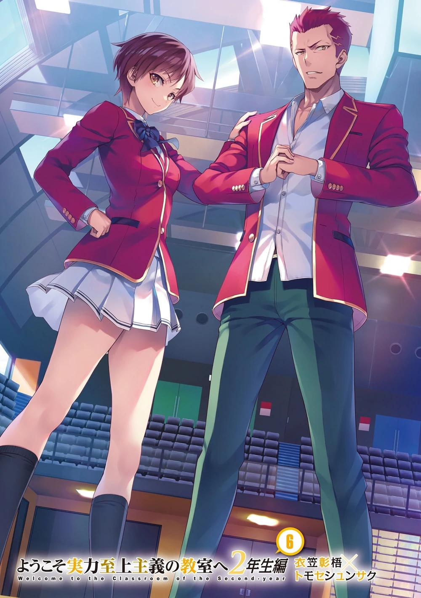
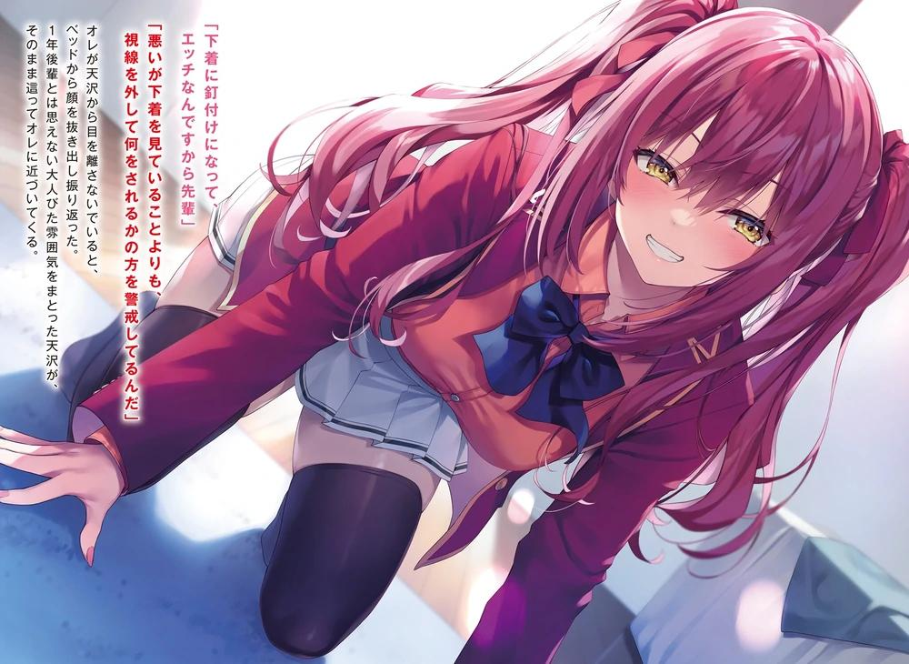
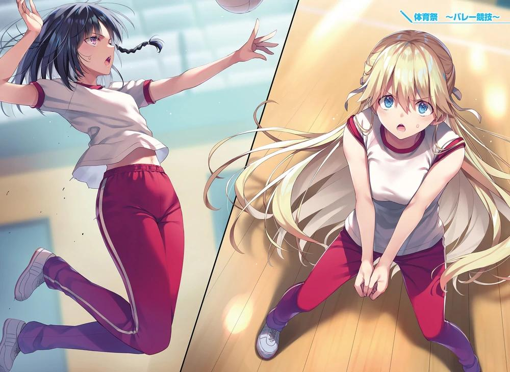
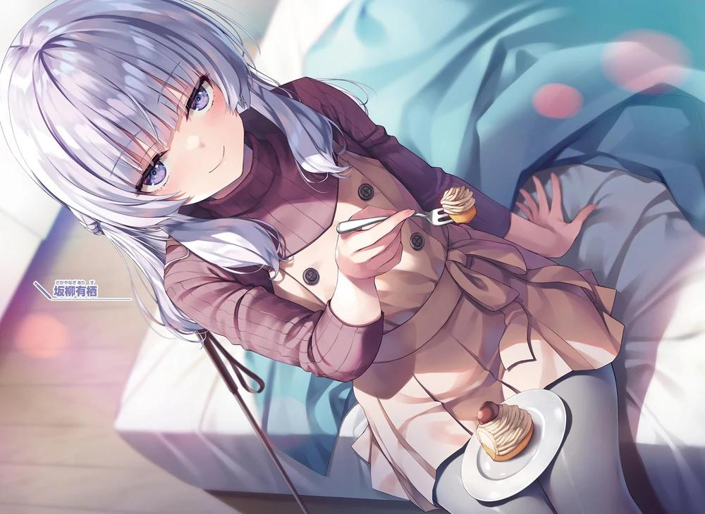
GLADHEIM
TRANSLATIONS
Youkoso Jitsuryoku Shijou Shugi no Kyoushitsu e - Segundo Año Volumen 6
EL MONÓLOGO DE MIYAKE AKITO
Nunca me he considerado una persona especial.
Si bien no tengo ningún talento especial, el hecho de no tener ningún defecto en particular me convierte en una persona normal.
Hasta ahora he ido por la vida sin hacer nada, haciendo lo que me gusta.
Hice algunas cosas malas de vez en cuando, y también hice algunas cosas buenas, a mi manera.
No soy un buen tipo, ni tampoco un mal tipo. Si tuviera que evaluarme yo mismo, ese es el tipo de persona que soy.
Desde que nací, he seguido caminando como alguien que no es ninguna de esas cosas.
Fue cuando empecé la preparatoria que eso se hizo evidente.
Incluso el tiro con arco sólo lo aprendí porque lo vi de casualidad en la televisión y pensé en probarlo para matar el tiempo.
Me movía por mi vida ordinaria, como si me dejara llevar por las corrientes.
No me importaban las cosas importantes, era el tipo de vida cotidiana en la que siempre mantenía una distancia razonable.
Puede que fuera una vida cotidiana aburrida, pero pensé que sería más fácil, así que la mantuve.
Quizá fue una consecuencia de eso, pero no hice ningún amigo de verdad en la preparatoria.
No es que me sintiera solo, pero... de repente, ese tipo de yo acabó haciendo algunos amigos.
Keisei, Kiyotaka, Haruka, Airi.
Puede que sólo fuéramos cinco, incluyéndome a mí, pero lo cierto es que ese pequeño grupo se sentía extrañamente cómodo.
Tenía el presentimiento de que pasaría el resto de mi vida escolar relajándome en este grupo de cinco.
Aunque mi alrededor hubiera cambiado, yo seguía siendo yo. Pensaba que sólo eso no cambiaría nunca.
A pesar de esos sentimientos, sí se produjo un cambio importante.
Fue que me enamoré de alguien.
Hubo veces en que pensé que una chica era linda o hermosa, pero nunca me había enamorado de una.
¿Cuándo empezó, me pregunto?
¿Cuándo empecé a mirar a Haruka?
Y luego, me convencí de ello cuando, durante el Examen Especial de Consentimiento Unánime, Haruka dijo que dejaría la escuela.
Había una parte de mí que no podía aceptar que nos separáramos.
En lugar de la lógica, mis emociones tenían prioridad.
Pensé que, aunque significara abandonar a Airi, un miembro del grupo que me importaba tanto, quería protegerla.
No sé si se me puede perdonar por tener esos sentimientos.
En lugar de sopesar lo que estaba bien y lo que estaba mal basándome en los méritos, di preferencia a lo que quería proteger.
Pero no me arrepiento.
―¿Te unirás a mi venganza?
Ese murmullo me devolvió a la realidad. Sus ojos que me miraban eran los mismos de siempre.
Eran fuertes, directos y tenían un brillo peligroso.
Pero mostraban que estaba decidida sin ninguna agitación o vacilación.
No respondí a su pregunta en voz alta. No, no podía.
Estoy casi seguro de que la venganza perturbaría a muchos de mis amigos y compañeros de clase.
Ella debió de darse cuenta de mis emociones, ya que se rio, dio la espalda y se alejó sola.
Si fuera el yo del pasado, seguramente la habría dejado ir sin importarme.
Dejarla ir era lo correcto.
Claro, si veo que esa espalda se va, ¿qué tan fácil sería?
No tenía ni idea de que enamorarse de alguien fuera tan problemático, tan difícil, tan molesto.
Yo...
En el camino, no importa cuánta gente me odie...
mis sentimientos no me permitirán dejarla ir sola.
En este día, al final del festival deportivo, yo... reforcé mi inexistente determinación.
EL PRECIO DE LA VICTORIA
Tras el examen especial Consentimiento Unánime, terminó el fin de semana y se abrió la semana siguiente. El 20 de septiembre.
Me levanté a las seis y media de la mañana, encendí la televisión y me puse a preparar el desayuno.
Llegó un nuevo lunes. Mi vida cotidiana a partir de ahora será muy diferente a la que llevaba hasta la semana pasada.
Ni siquiera necesitaba razonar rigurosamente por qué era así.
A grandes rasgos, había dos factores principales que me ensombrecían. La exhibición de Kushida después de verse acorralada hizo que se formaran grietas en las relaciones entre mis compañeros. Al desbaratar la premisa de que tendríamos a la traidora, o a Kushida expulsada, la confianza en Horikita y en las personas asociadas a ella como yo se tambalea.
¿Expulsar o no expulsar? Hice que todos estuvieran de acuerdo en expulsar a alguien prometiendo que sólo el traidor sería expulsado. Entonces, utilizando el trabajo de base que había establecido, acorralé a Kushida, la hice confesar que era la traidora y ejecuté mi plan para verla expulsada.
Kushida obtuvo la protección de los alumnos con los que se había ganado el favor y de los alumnos que querían creer en ella, pero al final, después de que su verdadera naturaleza quedara al descubierto y empezara a exponer los secretos de los demás, la confianza en ella cayó.
Avancé una pieza más hacia su expulsión, pero ocurrió algo inesperado.
Fue la declaración de Horikita Suzune, que a pesar de saberlo todo, argumentó que Kushida era necesaria para la clase.
La pieza de resistencia: incluso declaró que nunca apoyaría la expulsión de Kushida.
En primer lugar, fui yo quien prometió que sólo se expulsaría al traidor. Horikita nunca lo aprobó, pero aún así me sorprendió que protegiera a Kushida.
Con el poco tiempo que nos quedaba, sólo podíamos dejar que Kushida se quedara y aceptara el castigo o expulsar a alguien aparte de ella.
De todos modos, como ya se ha mencionado, la confianza en Horikita, que cambió el plan, y en mí, que propuse expulsar a otra persona, disminuyó en gran medida.
Los que vieron expuestos sus pequeños enamoramientos, y los que simplemente se sintieron heridos.
Los que empezaron a saltar a las sombras después de escuchar chismes de sus amigos.
Los que perdieron amigos, y los que se resintieron con sus amigos.
No hubo tiempo para enumerar todos los factores que explican la gravedad de la situación de nuestra clase.
Pero los efectos de su alboroto no son para asustarse. Se esperaban desde el principio.
Kushida había acumulado confianza. Este fue un costo inevitable para derribarla.
Esto sería fácil si se pudiera tomar como un simple demérito.
Pero no puedo tomarlo como tal. No puedo vivir esto así. Sería desperdiciar una oportunidad.
Fuimos los únicos que expulsamos a alguien de las cuatro clases. Nuestros compañeros están profundamente heridos. A cambio, ganamos puntos de la clase. No. Es importante cambiar nuestra perspectiva respecto a la situación.
No lo dejemos de lado como un daño. Miren el futuro.
Debemos ver que esto es una oportunidad para fortalecer nuestros vínculos precisamente porque están heridos.
Si lo hacemos, la clase de Horikita podrá fortalecerse aún más.
No está claro cuántos estudiantes se dan cuenta de esto. De todos modos, no debemos huir del problema, sino afrontarlo de frente.
Los exámenes especiales para la clase de Horikita continúan.
El peso de los 100 puntos de clase, qué preciosos son. Este será el momento perfecto para aprender eso mientras ella mira recuerda sus acciones.
Por supuesto, si la dejamos sola, podría caer en espiral. Hay que tener cuidado.
Si se descuida, las heridas podrían abrirse.
Terminé mi desayuno y revisé mi teléfono con el cepillo de dientes en la otra mano.
No recibí ningún mensaje nuevo desde la última vez que lo comprobé a medianoche.
―Pero aún así...
No me esperaba este resultado, y aún me sorprendía ya que no me esperaba ese examen especial. Lógica, coherencia y objetividad. Independientemente de la perspectiva que se adoptara, no había otra opción que expulsar a Kushida, que había insistido en aceptar la expulsión y había sumido a la clase en el caos.
Su expulsión al menos minimizaría el daño a la clase. Juzgué que ellos serían capaces de cambiar sus emociones de inmediato hacia el festival deportivo.
Por lo tanto, en mi opinión, la elección de Horikita de 『no expulsar a Kushida』
no fue una elección, sino algo ilógico y un error.
Aunque me pareció un error evidente, ayudé a Horikita y dirigí el timón hacia la expulsión de Airi. En otras palabras, capitulé ante este fracaso evidente.
Por lo menos no habría hecho eso antes de venir a esta escuela.
Ahora, ¿por qué acepté eso?
Los pensamientos y sentimientos de la estudiante Suzune hacia Kushida eran, en cierto modo, más fuertes que los de los demás.
Aunque no era una amiga íntima, se podía decir que Kushida era indudablemente especial para Horikita. Era natural que ella quisiera conservar a alguien que es especial para ella, pero si dejaba que eso afectara a su juicio de manera fundamental, entonces quedaba la incongruencia.
Por no hablar de que hacer esto mientras consolida su posición como líder puede verse como un abuso de poder.
Es fácil de entender si se toma el ejemplo de Haruka, la amiga íntima de Airi.
Para Haruka, Kushida fue malvada por insistir en que se expulsara a alguien, y debería haber sido eliminada. Horikita e inlcuso yo avanzamos bajo la premisa de que la íbamos a expulsar.
Precisamente por eso se convirtió en un voto para que se expulsara a alguien.
A pesar de ello, Horikita dio un trato preferente a Kushida y dejó que expulsaran a su amiga íntima.
Aunque le digas que lo dé todo a partir de la semana que viene, nunca sería capaz de aceptar.
Pero lo que no hay que olvidar es que la decisión de Horikita no fue fácil de tomar.
Presionada por las difíciles opciones de ese examen especial, Horikita sacó a relucir su respuesta.
Entonces se puso en la línea de fuego, soportando el riesgo en su espalda, y declaró que Kushida se quedaría.
Esto, en sí mismo, es incomprensible para un estudiante común y corriente.
Resuelta a que los demás la llamaran injusta a sus espaldas, Horikita creyó que hacer que Kushida se quedara sería por 『el bien de la clase.』
―Por supuesto, en este momento es difícil decir si fue la decisión correcta.
Anteriormente, al comenzar el examen especial Consentimiento Unánime, el valor que Kushida aportaba a la clase era obviamente mayor que el de Airi.
Incluso después de ser expuesta, parte de ese valor se mantuvo, pero esa gran
diferencia se redujo. Además, la misma Kushida no dijo que se reformaría, y se espera que actúe de forma poco cooperativa con la clase de aquí en adelante.
En otras palabras, con esta situación se podría decir que no hay pruebas de que la permanencia de Kushida vaya a beneficiar a la clase.
El plan de Horikita fue erróneo en ese sentido.
Eso no podía cambiarse. Sin embargo, tenía una razón para esto. Es una forma brusca de decirlo, pero es porque quiero ver el crecimiento de Horikita y hacia dónde se dirige.
¿Qué esperaba al final si la persona, la elección de Ayanokouji Kiyotaka no era elegida?
Quería ver cómo reaccionaría la química de la clase si Kushida se quedaba.
¿Superaremos a duras penas a la Clase A, demostrando la legitimidad de esta elección?
¿Se derrumbará la clase, mostrando el error de esta elección?
¿O cambiará algo inesperado aparte de eso?
Creo que esto por lo menos llevará a más cosas malas...
Cuando abrí la OAA en mi teléfono y eché un vistazo al registro de nombres, el nombre de Sakura Airi ya había sido borrado. Era como si nunca hubiera existido.
Guardé mi teléfono en el bolsillo derecho de mi uniforme, cogí mi mochila y me dirigí a la puerta de mi casa.
Aparte de nosotros, también tenía curiosidad por los movimientos que habían hecho otras clases.
Ryuuen y Sakayanagi iban a luchar entre sí en el examen de fin de curso. No habría sido extraño que Ryuuen les robara los puntos de clase para poder ser nombrados Clase A. Pero, ¿y Sakayanagi? No había ningún fundamento para nominar a la clase de Ryuuen. ¿Pretende unirse a Ichinose y aplastar a Ryuuen para siempre?
¿Estaba la 『promesa』 entre Sakayanagi y Ryuuen involucrada?
También debería prestarles atención.
En términos de puntos de clase, la clase de Horikita obtuvo el mejor resultado, pero...
Salí de mi habitación a la hora de costumbre y me dirigí al exterior de los dormitorios.
Tras bajar por el ascensor, vi a Horikita sentada en un sofá del vestíbulo, esperando a alguien. Me había acostumbrado a ver eso. Aunque me miró, no se levantó para nada.
Pero quizá porque no había nadie, al cabo de un momento se levantó y se acercó a mí.
―¿Estás esperando a Kushida?
Hablé antes de que ella empezara. Ella respondió aunque se quedó sin palabras por un instante.
―Es como puedes ver. Sí. Fui a su habitación varias veces durante el fin de semana pero...
Me pareció que intentaba atenderla emocionalmente, pero ni siquiera fue capaz de contactar con ella.
Seguramente fue porque se sintió humillada como nunca antes lo había estado.
Tal vez había estado esperando que Kushida bajara desde la mañana.
Lo que más me llamó la atención fue lo evidente que eran las ojeras de Horikita.
―Se ve que has estado muy preocupada por Kushida.
―¿Eh? Ah, no. No he podido dormir, pero eso es por otra razón. No salió de su habitación ni una sola vez. No importaba cuántas veces la visitara, ella siempre fingía estar fuera. Realmente encerrada. Aun así, he estado pendiente de encontrarla...
―Encerrada... ¿has estado esperando junto a su puerta?
Aunque sólo fuera el fin de semana, esperarla desde la mañana hasta la noche es un gran problema.
―Llamé repetidamente a su timbre y esperé. Seguía en completo silencio, sin un solo sonido.
No sería extraño que Kushida se aislara en su habitación con comida para dos o tres días, sin hacer nada más que dormir.
―¿Pero no deberías prestar más atención a tu entorno? No hay nada que ganar si las otras clases se enteran de que Kushida se encierra.
Estaba demasiado preocupada como para esperarla en el pasillo. Esto era precisamente lo que se llamaba un desperdicio de un descanso.
Un estudiante normal habría perdido ante la pasión de Horikita. Como se esperaba de Kushida.
Sin mostrar un ápice de simpatía, capearía el temporal.
―Después de lo que pasó el otro día no puedo permitir que se comporte como hasta ahora.
―Efectivamente, tienes que seguir después de elegir que Kushida se quede.
Horikita mostró cierta determinación y asintió, pero no era como si no tuviera ninguna reserva.
―Ayanokouji-kun... ¿cómo fue tu fin de semana?
Por supuesto, se refería al grupo Ayanokouji. Desde que Airi fue señalada y expulsada, desde la perspectiva de Horikita un problema debe estar a punto de estallar.
―He estado manteniendo algún contacto con Keisei y Akito pero eso es todo.
Y en realidad no hemos hablado de nada relacionado con Airi.
Más que no tocar el tema, quizás sería más correcto decir que no supimos tocarlo correctamente. Y no había pruebas de que Haruka viera nuestros mensajes. No es que ella supiera usar la aplicación. Pero si ni siquiera salió de la habitación, no me sorprendería que nos bloqueara.
―Todavía no has hablado con Hasebe-san.
―Bueno, no. Como era de esperar, Haruka no quiere contactar con nosotros.
Horikita mostró una cara culpable y bajó la cabeza.
No puede obligarla a abrirse mediante una confrontación.
En lugar de intentar reparar nuestras relaciones, sería más realista dejarme al margen y dejar que los tres mantengan sus relaciones entre sí.
En resumen, lo mejor sería vigilarlos.
Aunque ocurra mientras Haruka me guarde rencor, ocurrirá tarde o temprano.
Y si lo hace, será lo mejor para la clase. Si no lo hace, entonces habrá que solucionarlo. Si sigue resentida conmigo, con Horikita y con el resto, la posibilidad de que Haruka perjudique a la clase por su situación no será nula.
Sus calificaciones no son necesarias para la clase, pero perder una pieza medianamente útil bajará el valor de la clase y por supuesto sería un demérito.
Junto con ella, el potencial de Akito y Keisei podría disminuir.
―Aunque hablemos con ella ahora no seremos capaces de hacer llegar nuestro mensaje. No hay nada que hacer más que esperar.
Por ahora, lo único seguro es que no hay nada que discutir en un lugar como éste.
Tras comprobar nuestra situación, Horikita tragó saliva en silencio.
―Como obligué a Kushida-san a quedarse, las conexiones de tu grupo cambiaron.
El veredicto final se lo di a Airi directamente, pero ese papel fue provocado por ella.
Al menos, esa parte es nuestra responsabilidad.
―No hay necesidad de disculparse dos veces por lo mismo. Si crees que fue correcto entonces es suficiente.
―Pero tú me cubriste. No, eso no es todo... ―Como si estuviera organizando su mente, continuó hablando cuidadosamente―. En esa situación, aunque yo hubiera tratado de guiar a Sakura-san para que se hiciera expulsar, Hasebe-san seguramente no se hubiera doblegado hasta el final. No habríamos podido evitar llegar al límite de tiempo y la penalización.
Parece que fue capaz de calmarse el fin de semana y mirar la situación de cerca.
Lo grande que era la carga de declarar una expulsión y la dificultad de su ejecución.
La pelea que tuvimos dentro del plazo fue más dura de lo que pensaba.
Incluso con el alivio de haber evitado el peor de los escenarios, la inquietud aún podía verse en el color de sus ojos.
Debe estar deseando con todas sus fuerzas haber tenido la salvación, haber llegado a un resultado en el que nadie tuviera que ser expulsado dentro del límite de tiempo.
Un mundo en el que todavía hubiera 39 personas. Si, aunque hubiera perdido puntos de clase, hubiera podido proteger a sus compañeros, profundizar nuestros lazos y aspirar de nuevo a la clase A. La misma Horikita entiende que esos son pensamientos evasivos.
Por eso los reprime en el fondo de su corazón, donde están a punto de hervir.
―En ese examen, fue como si hubieras previsto todo desde el principio.
―No es que haya predicho el futuro. Sólo me enfrenté a él en cada supuesto.
―Eso es increíble. Aunque pueda imaginar algo, no puedo ver todo perfectamente. Cómo serían las preguntas, y qué tipo de palabras llevarían a la otra parte a moverse como yo quiero. Tus cálculos fueron acertados.
Poco a poco empieza a darse cuenta del mundo en el que veo y pienso.
―Está bien reflexionar y analizar, pero los problemas de nuestra clase todavía no se han resuelto, ¿verdad?
―S-sí. Así es...
―No creas que el ambiente será el mismo que hace unos días.
―Por supuesto, tengo la determinación. Hasebe-san sin duda me odia, Yukimura-kun y Miyake-kun es probable que también lo hagan. Y hay estudiantes que no están de acuerdo con cómo obligué a Kushida-san a quedarse.
Determinación, dijo ella, pero todavía es difícil decir si entiende el verdadero significado.
¿Cuánto tiempo permanecerá en silencio con los cambios provocados por su decisión?
No me importaría si fuera una simple ventaja, pero esta vez es todo lo contrario.
Una desventaja.
Probablemente no va a ser vista como una persona encomiable que nos dio puntos de clase.
―Ve a la escuela ya.
Horikita está dedicando todo lo que tiene a lidiar con Kushida, así que hablar con ella demasiado tiempo aquí no tiene sentido.
―No nos haría bien llamar la atención.
Los estudiantes de la clase de Horikita no son los únicos que viven en esta residencia.
La gente de las clases de Sakayanagi y Ryuuen, que deberían llamarse enemigos, también viven aquí.
No creo que podamos esconder la verdadera naturaleza de Kushida, pero eso no significa que haya que mostrar ninguna apertura.
Nuestra clase indudablemente ganó muchos puntos.
Que seamos capaces de afrontar el precio de eso con habilidad dependerá de los estudiantes a partir de ahora.
Pero, antes de eso-.
¿Qué hay que hacer con todos los problemas de su decisión que ya están a la vista?
PARTE 1
Cuando llegué al aula, noté enseguida que el aire era diferente al de antes del examen especial, como era de esperar.
En primer lugar, varios alumnos desviaron la mirada hacia mí.
Muchos de ellos eran alumnos con los que no solía tener mucha relación, pero no era nada que me sorprendiera.
Si se piensa en lo distante y silencioso que me comporté hasta ahora, las acciones que mostré fueron bastante intrusivas.
Muchos de ellos no pueden digerir mi relación con Kushida y la actitud que ella había mostrado hasta ahora.
Aunque les pese, no hay muchos alumnos que vengan directamente a hablarme de ello.
―Buenos días Ayanokouji-kun.
En medio de eso, Matsushita me vio y se acercó a mí alegremente.
―Buenos días.
Las miradas de ambos géneros cambiaron a sorpresa ante esta inesperada interacción.
Aunque Matsushita me saludó desde lejos, ésta podría ser la primera vez que me llamó y se acercó a mí.
¿Estaba preocupada por lo que ocurre desde hace unos días, o tenía otro objetivo?
Esta Matsushita tiene una alta opinión de mi capacidad. Por la refriega que tuve al intentar que expulsaran a Kushida, es posible que en lugar de bajar su opinión sobre mí haya subido. Incluso con la expulsión de Airi, Matsushita fue una de las estudiantes que expresó su acuerdo, diciendo que no se podía evitar.
―¿Finalmente vamos a pasar a la Clase A?
― No lo sé.
Cuando esquivé su ligero golpe, se retiró enseguida como si pensara que no era necesario decir más que eso. Luego miró hacia un lado.
―Supongo que por ahora están pasando muchas cosas, pero creo que no deberían importarte.
Después de decir eso, añadió.
―Aunque probablemente no, ya que eres tú, Ayanokouji-kun.
Ella me golpeó con sus pensamientos reales.
―Lo importante no es Ayanokouji-kun ni Horikita-san. ¿Verdad?
¿Cómo estaba lidiando con estos resultados? Parecía que más que Horikita, Matsushita entendía... no, interpretaba mis sentimientos con precisión.
Los problemas estaban en Shinohara, Haruka, Mii-chan y Kushida.
Los nombres que acabo de mencionar son los de las estudiantes que resultaron especialmente perjudicadas en el examen especial por unanimidad.
La dolorosa mirada de Shinohara se dirigía a veces hacia mí.
No me miraba a mí, sino a Matsushita. Aunque la propia Matsushita parecía no inmutarse.
―Este fin de semana, verás, tenía todos los preparativos pero se cancelaron.
Murmuró en voz baja, quizás notando los ojos de Shinohara sobre ella.
―En momentos así, las chicas suelen retrasarlo.
―Debe ser duro.
―Bueno, la culpa es mía.
Kei, Matsushita y las demás se burlaron del emparejamiento de Shinohara e Ike al principio. Se burlaron de su apariencia a sus espaldas, así que es natural que Shinohara se enfade.
―Este es un día más para mí. Hemos estado en líos más duros.
Los hombres, que sólo discuten por fuera, no pueden entender la naturaleza de las relaciones femeninas.
Yo quiero, pero no quiero entender.
A partir de ahí, ningún otro alumno me llamó realmente y el tiempo pasó.
Horikita también llegó más tarde, pero Kushida no apareció por ningún lado.
Sudou y algunos otros estudiantes trataron de llamarla, pero como apenas llegó a tiempo, sonó la campana y todos volvieron a sus asientos.
Kushida no se presentó ante Horikita en todo el fin de semana y parecía tener la intención de continuar con su ausencia.
Con su asiento vacío destacando, comenzó la clase.
Incluso la asesora Chabashira-sensei parecía mirar fijamente los varios asientos que ya estaban vacíos.
―Kushida, Hasebe y Wang están ausentes ¿eh? Eso es algo que no se ve todos los días.
No conocíamos los detalles de sus ausencias, pero Chabashira-sensei era diferente.
―Hasebe y Wang enviaron un aviso de que no se sienten bien, así que su ausencia será aceptada como normal. Kushida no se ha puesto en contacto conmigo, así que la llamaré después de esto. Veremos enseguida si simplemente se quedó dormida o si está tan mal que no puede despertarse.
Ha exagerado un poco, pero quería decir que nueve de cada diez veces no está enferma.
Que alguien se ausente no es nada raro después de tanto tiempo en la escuela.
Pero es la primera vez en el último año y medio que tres personas se ausentan a la vez. No importa cuántos se ausentaron hasta ahora, Chabashira-sensei no dijo nada. Es diferente de antes, donde parecía no estar interesada en tratar con nosotros. Si esta fuera una escuela normal, usar el descanso como excusa siempre se volvería en tu contra.
Si faltaras a la escuela durante una semana, tus notas se verían afectadas, y además tendrías que ir a la escuela para hacer los trabajos de clase.
Pero en esta escuela, la responsabilidad de una persona es la responsabilidad de todos.
Aunque no estaban hablando, incluso Chabashira-sensei debió entender que estaban pensando en algo.
―No se pongan tan nerviosos. Descansar uno o dos días no afectará a sus puntos de clase. No es inaudito que tres personas se sientan mal al mismo tiempo.
Declaró que no afectaría a la clase.
Mis compañeros debieron sentirse aliviados ante sus claras palabras.
―Aunque si descansan por mucho tiempo entonces podría no ser el caso.
Por no hablar de que si fingen estar enfermos, los problemas aflorarán poco a poco.
Miró el asiento de Kushida, que no había contactado con ella, y añadió.
―Bueno, fingir puede ser un poco exagerado, pero si no se identifica ninguna enfermedad, habrá un límite incluso si dicen sentirse mal. Esperemos que se recuperen rápidamente.
Sea a propósito o no, las miradas de mis compañeros se concentraron en Horikita. En el examen especial Consentimiento Unánime, ella dio prioridad a sus propios pensamientos y declaró que Kushida se quedaría. No es de extrañar que la lanza apunte a Horikita.
Esa lanza... aunque sus miradas se centraron en ella, Horikita ni siquiera se inmutó.
Aunque no supieran cómo se sentía ella, un poco de temblor habría sido natural.
Después de mirar fijamente, Chabashira-sensei se aclaró la garganta y obligó a los estudiantes a desviar su atención de Horikita.
―Las ausencias son preocupantes, pero no tienen que ser las únicas que los preocupen. El examen especial Consentimiento Unánime ha terminado.
Deben enfrentarse a la siguiente batalla.
Apoyó ligeramente la palma de la mano en el monitor que tenía detrás y lo activó.
―Me gustaría explicar los detalles del festival deportivo y las reglas especiales para este año. Escuchen bien.
El festival deportivo que nos espera será igual que el año pasado y que todos los años. Hubo alumnos que pensaron así.
―Regla especial... ¿quiere decir que este festival deportivo será diferente al del año pasado, Sensei?
Chabashira-Sensei asintió ante la pregunta de Sudou, que estaba más entusiasmado que nadie por el festival deportivo.
―El nuevo modus operandi propuesto por el consejo estudiantil se aplicó en la isla deshabitada y en otros exámenes. Intenta enfatizar todavía más la destreza individual, y eso se materializa en este festival deportivo.
En el examen de la isla deshabitada, Koenji, que poseía una gran capacidad académica y una habilidad física fuera de lo común, fue muy proactivo. No sólo ganó puntos de clase, sino también un punto de protección que le servía de escudo.
Era la encarnación exacta de una escuela para la élite. Aunque, por otro lado, también exponía a los alumnos sin capacidad al peligro de ser expulsados. El festival deportivo pondría un énfasis similar en las proezas individuales. Solo por esas palabras, parecía probable que este fuera un examen duro para estudiantes como Keisei que se especializan en lo académico pero tienen inseguridad hacia su habilidad física.
―No son pocos los estudiantes que están preocupados, pero este festival deportivo se ha ajustado para que los que no tengan habilidad no sean expulsados, ni se restrinjan las derrotas a los individuos. Después de todo, nadie puede ser perfecto tanto en los estudios como en la actividad física.
Tal vez para evitar un poco de miedo, Chabashira-sensei explicó con delicadeza.
Su forma de hablar se había suavizado en comparación con la semana pasada.
Algunos alumnos se miraron entre sí, sorprendidos.
No necesitó narrar el hecho de que el resumen y las reglas del festival deportivo se mostraban en el monitor.
Resumen y reglas del festival deportivo
Resumen
Un festival deportivo que consiste en muchos elementos que involucran a todos los años escolares
Período de tiempo ・ 9am a 4pm (12 del mediodía a 1pm se utilizará para el tiempo de descanso)
Los estudiantes participan en eventos de su propia elección y ganan puntos. Las clases se acreditan y compiten con sus puntos totales.
Reglas
・ Cada estudiante recibe 5 puntos al comienzo.
・ Los estudiantes que participan en el festival deben participar en 5 eventos distintos
・ Todos los eventos tienen un premio de participación de 1 punto
・ Los ganadores recibirán un número adicional de puntos correspondiente al contenido del evento
・ A partir del 6º evento es posible participar tras pagar 1 punto (es imposible recibir el premio de participación de 1 punto)
・ Cada persona puede participar en un máximo de 10 eventos
・ En caso de que un estudiante haya participado en menos de 5 competiciones al final del festival deportivo, perderá todos sus puntos Los alumnos que se ausenten o no participen en las competiciones en las que se hayan inscrito perderán 2 puntos, salvo razones válidas Los alumnos que hayan finalizado sus competiciones podrán animar desde algunas zonas designadas
El texto anterior se mostró en el monitor.
Después de leer este esquema y estas reglas una sola vez, se puede ver que esto es completamente diferente al año pasado.
―Este es el esquema y las reglas para el festival deportivo de este año.
Todo el alumnado no verá una sola competición a la vez. En su lugar, varias competiciones ocurrirán simultáneamente en diferentes lugares.
―Parece un poco agitado.
Sudou conjuró una imagen aproximada del día en sí en su cabeza y quedó desconcertado.
―La primera prioridad es aspirar a los premios de los ganadores de las competiciones, pero hay que tener un calendario detallado. Si quieren participar en muchas competiciones y ganar, será un festival deportivo muy ajetreado. Las competiciones se dividen a grandes rasgos en dos partes. La primera son las competiciones básicas. Son competiciones en las que se puede participar individualmente. Fundamentalmente, son uniformes en el sentido de que el primer puesto obtendrá cinco puntos, el segundo tres puntos, el tercero un punto y todos los participantes un punto. Las otras se denominan competiciones especiales en las que participan grupos. En ellas se puede participar con dos o más personas y se establecen para ofrecer mejores recompensas que se distribuyen equitativamente entre el equipo participante. Las recompensas son atractivas, pero es necesaria la coordinación. Participar durante demasiado tiempo también es una de las trampas que se han preparado.
Los concursos individuales y los concursos por equipos están claramente separados y los concursos por equipos dan más puntos, ¿eh?
Los estudiantes que carecen de físico deben agradecer su consideración para no penalizar a los que obtienen menos puntos.
―Como las recompensas para cada uno de los concursos por equipos son diferentes, asegúrense de revisar cada uno de ellos.
Son reglas sencillas una vez que las entiendes, pero hay muchas cosas inesperadas que hay que hacer.
Los cinco puntos que se dan al principio y los cinco puntos que se dan por participar hacen un total de diez puntos que se darán independientemente de los resultados siempre que se participe y se terminen los concursos. Y si por algún accidente, un estudiante no es capaz de completar los requisitos mínimos, sus diez puntos se perderán.
Sumando los puntos suponiendo que todos puedan participar, la clase de Ichinose obtendrá 400 puntos con 40 personas mientras que esta clase obtendrá
380 puntos, faltando dos personas. Lo que significa que lucharemos con una desventaja de 20 puntos desde el principio.
La recompensa clara por obtener el primer puesto en un concurso individual es de cinco puntos. Querríamos que al menos cuatro personas se hicieran con el primer puesto. No parece mucho, pero cada persona está limitada a participar en 10 eventos.
Lo que significa que hacer trabajar a Sudou al máximo en 15 o 20 eventos para conseguir puntos fácilmente será imposible. Esto tiene un peso inesperado.
―Pagar con sus puntos para participar en seis o más eventos es una elección que se deja a la persona y a la clase. Ahí se da libertad. Luego, la clasificación de cada clase por año escolar se decidirá en función del total de puntos reunidos para cuando termine el festival deportivo.
El monitor cambió para mostrar las recompensas por año escolar.
Rangos y recompensas por clase
1er lugar
150 puntos por clase
2do Lugar
50 puntos por clase
3er puesto
0 puntos de clase
4º puesto
Menos 150 puntos de clase
Las ganancias de puntos de clase son un poco grandes para un examen normal.
Probablemente tiene algo que ver con el hecho de que el festival deportivo es un examen especial que involucra a todos los años escolares y que las transacciones de puntos de clase actuales para el festival cultural son relativamente laxas.
―Las recompensas de clase están listadas arriba. Ahora se mostrarán las recompensas individuales.
El monitor es suficiente para mostrar las recompensas de clase, pero no se detiene allí.
Este era supuestamente un festival deportivo que desafiaría la habilidad individual, así que era obvio que las recompensas individuales también estuvieran preparadas.
Sudou se inclinó hacia adelante manteniendo la saliva en su boca y esperó a que el monitor cambiara. Es el evento en el que más se luce cada año, y él lo sabía mejor que nadie.
Recompensas del concurso individual (separadas por año y género) Primer puesto
2.000.000 de puntos privados o un billete de traslado de clase (limitado) 2º puesto
1.000.000 de puntos privados
3er puesto
500.000 de puntos privados
Sudou apretó el puño ante las elevadas cantidades de puntos privados que se ofrecían como recompensa.
Además, apareció una frase que no había visto antes.
―¡¿Billete de transferencia de clase?!
Al no haber visto esto antes, la clase se sorprendió y se llenó de ruido.
―Hasta la escuela ha mostrado una postura cuidadosa hacia la introducción de este nuevo sistema. La introducción del punto de protección no tiene parangón, y ni siquiera ha pasado mucho tiempo desde que ocurrió. Pero es natural que los individuos que demuestran capacidad tengan derecho a ascender.
Los ganadores de esta escuela son sólo los estudiantes que son capaces de graduarse en la clase A.
Si alguien es capaz de obtener el número uno en el festival deportivo, un examen en el que la habilidad física es muy demandada, no es de extrañar que la escuela juzgue que debe otorgársele el derecho a cambiar de clase.
Al fin y al cabo, el festival deportivo no entra en la categoría de ningún otro examen especial. Pero lo que despertó mi curiosidad fue cómo se trataron con el mismo valor los 2.000.000 de puntos privados y el billete para cambiar de clase.
La cantidad de puntos privados para la transferencia de clases es de 20.000.000.
Es un dígito menos. Aun así, se da el derecho a transferirse de clase. La respuesta a esa incongruencia estaba en lo limitado del billete de transferencia de clases.
―Limitado... ¿como que si te transfieres no puedes volver?
―No, creo que no. Eso no importaría.
Sudou se estremeció. Mantiene una conversación con Ike sobre la palabra limitado, aunque están separados.
―Se les da el derecho de cambiar de clase. Pero, también es cierto que no todo es seguro en este momento. Por lo tanto, el límite se refiere al periodo de tiempo en el que se puede utilizar. Sólo se puede utilizar dentro de dos trimestres escolares. Es decir, si no se utiliza para cuando comience el tercer trimestre, quedará sin efecto.
El límite es que el billete de transferencia de clase tiene una fecha de caducidad, por así decirlo.
En ese caso, puedo estar de acuerdo en que tiene el mismo valor que 2.000.000
de puntos.
Si se mantuviera hasta la graduación, entonces sería literalmente un billete para la clase A, pero debido al límite de tiempo, es necesario averiguar qué clase se mantendrá, o qué clase subirá a la cima al final.
Si alguien se transfiere a otra clase desde su clase actual, pero al final, su clase actual se gradúa como Clase A, el billete habría sido una trampa mortal, y se sentirá arrepentido durante mucho tiempo.
Aunque no sufras ese peor escenario, necesitarás bastante valor para usarlo.
Porque dejar la clase a la que te has acostumbrado durante el último año y medio no es algo sencillo.
Hipotéticamente, aunque Sudou se gane ese derecho y piense objetivamente en dejar a Horikita y a sus amigos para transferirse a la Clase A, todavía no me lo imagino transfiriéndose de clase tan fácilmente.
Aunque el festival deportivo atraerá mucha atención, no es como si se obtuviera una garantía para la Clase A a partir de una sola actividad.
Parece que será necesario recordarlo.
Aunque eso sólo se limita a los de 2º año. El valor cambiará una vez más en función del año.
Los de 1er año todavía no se han acercado tanto con sus clases actuales.
Puede que haya gente que los deseche y se transfiera a la clase A o a la clase que creen que será la clase A en el futuro.
Por otro lado, los estudiantes de 3er año podrían transferirse a la clase de Nagumo, que podría llamarse el mayor derecho.
Porque sería prácticamente lo mismo que graduarse en la Clase A.
Independientemente del año escolar, el derecho a transferirse de clase abre más posibilidades.
Será importante ver los efectos que tendrá esto en el futuro.
Es probable que la escuela también esté observando. Entonces decidirán si vuelven a dar un billete similar o no.
Viéndolo de forma global, parece una curiosa recompensa con un interesante equilibrio.
―Los alumnos que obtengan el primer puesto entre los chicos y las chicas podrán elegir su recompensa. Sudou, si tienes la intención de apuntar a la cima con los concursos individuales, entonces deberías pensar en esto cuidadosamente.
Pude ver que la espalda de Sudou se puso rígida.
No te lances a conseguir los 2.000.000 de puntos por tu confianza ciega en tus amigos. Mira al futuro.
Quédese en la clase actual de Horikita, o transfiérase a la clase de Sakayanagi que está a la cabeza.
Tiene derecho a enfrentar su futuro y considerarlo cuidadosamente.
―Entonces, empecemos con explicaciones más detalladas. Hay dos tipos de competiciones: las que se revelarán antes de la jornada y las que no se revelarán hasta la jornada misma. Lo que significa que se prepararán algunas pruebas que tienen que ser desafiadas de forma improvisada.
Aparte de las competiciones básicas, como los 100 metros planos o la carrera de obstáculos, se presentaron varias pruebas diferentes e interesantes. PK, Basket Shoot Showdown, Tennis Individual o dobles de género mixto. Estaba repleto de eventos que no se verían en ningún festival escolar normal.
―Debido al límite de participantes y a las limitaciones de tiempo, no necesariamente podrán participar en todos los eventos que deseen. Si fuerzan un horario poco razonable, es posible que no lleguen a tiempo para participar, y serán tratados como ausentes. No olviden el riesgo de perder puntos.
A los alumnos que destacan físicamente en relación con el conjunto del alumnado hay que ponerles muchas pruebas en las que puedan ganar puntos de forma eficaz. Eso requiere pensar. La suerte será necesaria para quien participe en cualquier evento. La capacidad de predicción será eventualmente necesaria.
Aunque si el festival deportivo se celebra a este ritmo, lo más probable es que los estudiantes entren en pánico.
En el día mismo, si ciertos eventos interrumpen a los estudiantes entonces no sería una gran competencia.
Aunque, por supuesto, la escuela debe entenderlo.
―En cuanto a la participación en los eventos revelados, las inscripciones se abrirán esta noche a las 22 horas en la aplicación exclusiva. Por orden de llegada en todos los cursos escolares. Se aceptarán cancelaciones hasta una semana antes del festival deportivo, pero sólo se podrá cancelar tres veces. Las inscripciones se cierran dos días antes del evento. Si para entonces no se han registrado en al menos cinco eventos, se les asignará automáticamente a los eventos con vacantes.
Después de decir eso, se mostró un horario que seguramente se mostraría en la aplicación.
―Intentemos inscribirnos en los 100 metros planos.
La pantalla cambió. 『100 metros planos ・ Máximo de siete personas por curso y sexo. Total de cuatro carreras. Es posible ser voluntario para cualquier carrera.
Si hay vacantes, también es posible inscribirse el mismo día. Los concursantes deben llegar cinco minutos antes del comienzo de la competición. No es necesario esperar a que termine la competición. Hora de inicio de la primera carrera ・ 10:15h』
A partir de aquí, si se combinan los participantes masculinos y femeninos, entonces un máximo de 56 personas pueden participar en los 100 metros planos (por grado escolar). Independientemente de la carrera en la que participes, la competición comienza a las 10:15, por lo que debes estar allí hasta cinco minutos antes de esa hora. Si participas en la primera carrera, podrás ir a participar en la siguiente después de poco tiempo. En cambio, si participas en la cuarta carrera, estarás atrapado durante mucho tiempo. Es la misma competición con la misma recompensa, pero se perjudica tu tiempo.
―Otro punto importante es que los alumnos que tengan actividades de club o hayan tenido actividades de club que tengan que ver con el evento en cuestión aunque sea una vez, entonces no podrán participar en él. Para Hirata, el fútbol, o para Sudou, la inscripción a eventos relacionados con el baloncesto no será reconocida.
Los alumnos que participan en los clubes no se ven simplemente favorecidos.
Por el contrario, se les reprime.
De hecho, no hay estudiantes que puedan ganar a gente como Yousuke o Sudou en sus respectivos deportes. Hay que evitar los enfrentamientos con los que tienen experiencia en los clubes.
Si Sudou se dedicara al fútbol y Yousuke al baloncesto, los demás estudiantes tendrían suficientes posibilidades de ganar.
Los que se dedicaron a su club en la escuela media pero no pudieron elegirlo en la preparatoria. Aunque no son muchos, hay estudiantes así. Podrían tener alguna ventaja.
―Esto es como, las reservaciones del cine.
Las palabras que murmuró Sudou mientras escuchaba diligentemente la explicación dieron en el clavo.
―Efectivamente, se puede decir que el sistema es similar. Está construido para reflejar quién participa en qué evento y cuándo lo hace en tiempo real.
―¿Lo que significa que habrá gente que cancele porque no quiere pelear conmigo?
Sudou exhaló por la nariz, enlazó los brazos y murmuró con orgullo.
―Así es. Pero entonces esos estudiantes tarde o temprano se darán contra la pared en su tercera cancelación.
La gente que va a participar en una competición depende de las limitaciones de tiempo. Para hacer un calendario, la gente querrá localizar lo antes posible las competiciones que se les den bien. Pero si las señalan rápidamente, corren el riesgo de enfrentarse a un enemigo fuerte. Pero si sólo pueden correr un número determinado de veces, dudarán incluso de hacer la inscripció. También habrá competencia en la búsqueda y limitación de uno mismo.
Es algo así como un enfrentamiento en Internet antes de que comience el festival deportivo.
―Si los estudiantes están empatados en las recompensas individuales, los puntos privados se dividirán entre ellos y ya no podrán conseguir un billete de transferencia de clase.
En el caso de que los alumnos conspiren entre sí para que ambos consigan la mayor cantidad de puntos con la esperanza de que ambos consigan una gran cantidad de puntos privados, el sistema se desmoronará. Esto es para prevenirlo.
De todos modos, si trabajas duro puedes conseguir todas las recompensas para ti en forma de puntos de clase o un billete de intercambio de clase.
Recompensas que se ajustan exactamente a tu capacidad.
Aunque no tengas intención de cambiarte de clase, los 2.000.000 de puntos privados se pueden utilizar de muchas maneras. Incluso se puede ahorrar hasta los 20.000.000 de puntos, el billete garantizado para la Clase A.
Por otro lado, los estudiantes que no confíen en sus capacidades físicas deberían obligarse a participar sólo en cinco eventos en la medida de lo posible.
Si participan en una sexta prueba o más sin ganar, perderán un punto. Eso será una gran desventaja en comparación con otras clases. Pero eso también depende de la forma de pelear. Chabashira-sensei terminó su explicación y abandonó el lugar. El aula se desordenó de inmediato, como si fuera agua hirviendo.
―¡Muy bien Suzune, tengamos una reunión lo antes posible!
Primero fue Sudou, quien dijo con voz fuerte. Después de escuchar las reglas, su entusiasmo aumentó abruptamente.
Naturalmente, Yousuke también se levantó y comenzó a ir hacia Horikita. Esto era igual que siempre.
Pero a Suzune la miraban fríamente algunos alumnos.
¿Estaba bien dejárselo a Horikita? ¿Debemos dejar que Horikita sea el centro?
Esas dudas se arremolinaban.
―En primer lugar, antes de hablar del festival deportivo, tengo que declarar una cosa.
Ella se movió antes de que los demás pudieran hacerlo, levantándose de su asiento y dándose la vuelta para que todos pudieran ver su cara.
―En el examen especial de la semana pasada, rompí la promesa que hice con todos y nos obligué a no expulsar a Kushida-san. Primero me gustaría disculparme por ello.
Dijo Horikita e inclinó la cabeza. Pero cuando la levantó de nuevo, una fuerte voluntad estaba contenida en sus ojos.
―Pero creo que tomé la decisión correcta al respecto. Ella puede aumentar el poder de la clase.
―No lo creo.
La primera en negar las palabras de Horikita fue Shinohara. Una de las personas que se vio perjudicada por la exposición de Kushida.
―Ahora que sabemos qué clase de persona es Kushida-san, nadie confía en ella. Ahora mismo, nadie ha hablado de Kushida-san en las otras clases, pero
¿no es sólo cuestión de tiempo?
Tanto si le gustaba como si le disgustaba Kushida, Shinohara dejó eso de lado por ahora y pasó directamente a un elemento importante que debía ser considerado.
No cambiar el estatus de Kushida como compañera de clase. Si procediéramos con esa premisa, entonces la inconveniente 『verdad』 no debería filtrarse.
Que el corazón de Kushida era negro, y que tenía sentimientos dañinos. Ir por ahí hablando de esto a otras clases equivaldría a apretar la soga alrededor de nuestros propios cuellos.
Sería sencillo y beneficioso guardar silencio, pero hacerlo será más difícil de lo esperado.
En particular, Shinohara actualmente tiene dolor en sus ojos hacia Kushida mientras protesta.
No sería de extrañar que ya hubiera estallado, pero parece que ahora mismo se lo está guardando.
Ella no parece entender los beneficios. En ese caso, lo natural es que una persona inteligente que sí entiende, como Yousuke, la anime a mantener la boca cerrada.
Pero no está claro cuánto durará esto.
Cuando las dudas y el malestar respecto a Kushida lleguen a su límite, todo estallará.
―Hey Horikita-san. ¿Realmente estás diciendo que fue correcto marginar a Kushida-san? Contéstame.
Horikita estaba escuchando a Shinohara sólo con la cara girada. Alguien se impacientó y la apuró.
―Eso no se puede responder en este momento. Eso se aplica a mí, a Shinohara-san y a todos nuestros compañeros. Ella debe mostrar su presencia en el tiempo que nos queda en la escuela.
―¿Qué pasa con eso? Quiero una respuesta ahora. No importa cómo lo pienses, Kushida-san será un obstáculo para nuestra clase".
―Sin duda, no sé si el examen especial Consentimiento Unánime te ha perjudicado. No sé si ha perjudicado a Wang-san o a Hasebe-san, que están ausentes en este momento. Pero no se puede borrar el hecho de que Kushida-san ha contribuido a esta clase durante el último año y medio. ¿O acaso confías en que podrías haber dejado mejores resultados que ella?
Aunque surgiera un gran problema, eso no borra los logros conseguidos en el pasado.
Ella unió a la clase, se preocupó por sus emociones y elevó el nivel de nuestra capacidad académica y física. Esas son sus contribuciones.
Como mínimo, es cierto que Shinohara no ha dejado mejores resultados que ella.
―No se puede evitar que no veas con buenos ojos lo que hice, o cómo Kushida-san insistió en hacer expulsar a alguien. Pero aunque la hiciéramos expulsar, ¿puedes decirme que sería la decisión correcta? ¿No te afectaría que bajara la media de la clase y perdiéramos en los exámenes especiales?
―Quiero decir... no lo sabríamos si no lo intentamos.
―Así es. Entonces no entenderás lo que estoy tratando de hacer hasta que lo intentemos.
Lo que tenían en común era que cualquiera de las dos opciones conducía a un futuro incierto.
No era fácil para Shinohara convencer a Horikita con su habilidad.
―¿Podemos hablar?
Mientras Horikita y Shinohara se miraban mutuamente, Yousuke levantó la mano y se puso de pie.
―Hay algo que me ronda por la cabeza. Si queremos maximizar la habilidad de Kushida-san, tenemos que mantener su secreto dentro de la clase.
Así que quiero pedir a todos los de la clase que guarden silencio.
―Eso es cierto. Si nadie hubiera dado esas instrucciones entre bastidores, ya debería haberse filtrado.
Horikita tenía sus dudas sobre cómo los rumores sobre Kushida no estaban circulando incluso ahora, el lunes.
―Pero tú no pediste que nos calláramos. ¿Por qué no?
―Porque cualquier tipo de orden de silencio sobre los que quieren acabar con ella no tiene sentido. Es sólo cuestión de tiempo.
Aquí es donde los estudiantes deciden qué hacer. Entregarse a sus emociones y dejar que todos sepan lo de Kushida para vengarse o mantenerlo en secreto por el bien de la clase.
―No habría hablado de ello aunque Hirata-kun no me lo hubiera pedido.
Tuvimos la oportunidad de reunirnos durante el fin de semana. Hablamos de que no pasaría nada bueno aunque filtráramos esto. Pero, por supuesto, si dijera que no pienso nada de Kushida-san ahora mismo estaría mintiendo.
Como se esperaba de Matsushita. Ella es aguda. Aunque fue una de las afectadas por la exposición de Kushida, miró más allá de sí misma y comprendió los deméritos.
Si ella me expuso, entonces yo la expondré a ella también. Lo único que ganarías con eso es un segundo de satisfacción.
―Definitivamente la traeré de vuelta. Si no puedo hacerlo... aceptaré cualquier responsabilidad.
Asumir la responsabilidad. Hasta los estudiantes que mostraron sus colmillos con esas fuertes palabras sonaron sus gargantas y tragaron.
Inclusive Shinohara.
―...¿Realmente asumirás la responsabilidad?
―Tuve la intención de hacerlo desde que decidí poner a Kushida-san a un lado. Si se da el caso, todos pueden juzgarme.
Akito y Keisei la miraron en silencio.
No era difícil imaginar cómo se sentían al escucharla.
De todos modos, Horikita terminó con su voluntariosa tarea y llegó el tiempo libre.
Los ojos de Horikita no me miraban a mí, sino a alguien. Esa persona le devolvió la mirada, y Horikita finalmente salió de la habitación. En ese momento, Koenji se levantó de su asiento, que estaba al lado de una silla vacía, y abandonó el aula de la misma manera.
Me picó la curiosidad, así que abrí un poco la puerta para ver cómo estaban.
―Actuaste como si tuvieras algo que discutir conmigo. ¿Qué podría ser?
―Quiero comprobar algo para el festival deportivo.
―Fufu. No es necesario que coopere... No me equivoco al reconocerlo, ¿sí?
―Por supuesto que no. Sólo quería ver tus intenciones. ¿Podrías decirme eso?
Debería considerar las actividades de Koenji o no. Dependiendo de eso, el plan cambia.
Tras la pregunta, Koenji sonrió ampliamente y puso su mano en el hombro de Horikita.
Tal vez porque le molestaba, ella trató de quitársela de encima, pero la mano de Koenji ni siquiera se movió.
―Parece que eres una chica muy afortunada~.
Debido a que su mano permanecía en su hombro, ella se veía irritada incluso mientras preguntaba qué quería decir.
―¿Significa eso que estás dispuesto?
―Fui capaz de ahorrar desde el examen de la isla deshabitada y la búsqueda del tesoro, pero necesito una cantidad relativamente grande de dinero en este período de tiempo. Y no tengo ninguna razón para no participar.
Koenji mostró un poder abrumador en el examen de la isla deshabitada y supuestamente nunca más, pero si hay un examen en el que los individuos pueden ganar grandes cantidades de dinero entonces resulta que él se sentirá en condiciones de hacerlo.
Para Horikita esto fue una ganancia repentina. Si podía ahorrar aunque fuera un punto más, entonces no había nada de qué quejarse. Sin mencionar que si se trata de Koenji, entonces seguramente reunirá diez o veinte puntos fácilmente.
Probablemente esta vez sólo le interesen las recompensas.
Horikita pareció dudar sobre eso durante un segundo, pero dio un paso adelante.
―Si consigues el derecho a una transferencia de clase... ¿qué harás?
Koenji era indudablemente un niño problemático - no, un hombre libre dentro de nuestro año.
Si decide que quiere hacerlo, no dudará en dejar esta clase. Que ayude o no a la clase de aquí en adelante es otra cuestión. Como mínimo, Horikita no cree que tener menos gente en la clase vaya a beneficiarnos. Y está el hecho de que se tomará en serio los exámenes especiales que implican mucho dinero, como el examen de la isla deshabitada y el festival deportivo. Si eso sucede, entonces tendríamos un fuerte enemigo en nuestro camino.
―No hay ningún~ problema ahí. Ahora mismo no creo que las otras clases sean lo suficientemente encantadoras como para desechar mi promesa contigo, Horikita-girl.
―Ahora mismo, ¿eh?
Lo que significa que dependiendo de las condiciones entonces siempre era posible que cambiara de clase.
―Por hoy estás a sal~vo.
No creo que eso la tranquilice del todo. Bueno, que cualquier clase acepte a Koenji es dudoso. Tiene sus méritos, pero también tiene sus deméritos.
―De acuerdo, lo aceptaré. Pero si cambias de opinión por capricho no podré confiar en ti. Conseguirás los puntos justos para tener una buena clasificación, ¿no te importa que lo asuma?
―Está bien. Aunque no me juntaré con nadie.
Parecía que iba a limitarse a los concursos individuales para ganar puntos. No me sorprendería que obtuviera el primer lugar en todas sus competencias. Lo que significa que hay una alta probabilidad de obtener el máximo de 55 puntos.
―¿Realmente no estás interesado en ascender a la Clase A?
Koenji respondió a esa pregunta con una carcajada y volvió al aula.
―¿Estás interesado en espiar?
Era como si él me hubiera atisbado a través de la puerta ligeramente abierta, o lo hubiera sabido desde el principio.
Hablé con Koenji mientras se detenía en el fondo.
―Si dijera que no tengo curiosidad por lo que harás en este festival deportivo estaría mintiendo.
―¿Lo doy por hecho?
―¿Puedo preguntarte algo, Koenji?
―Mi corazón está ahora mismo palpitando por las recompensas del festival deportivo, así que estoy de buen humor. Responderé.
―Tú y Horikita hicieron una promesa. Pero eso no es absoluto. Así como ella dejó que Kushida se quedara, decidida a enemistarse con toda la clase, creo que era posible que te eliminaran. ¿Tienes alguna idea sobre eso?
¿Tenía miedo de si Horikita cumpliría o no su promesa? indagué.
Porque aunque él lo hiciera con el pretexto de conseguir más puntos privados, estuvo de acuerdo en expulsar a alguien con una posición fuerte.
―Todo es según mis cálculos. Si, al final, la lista de candidatos a la expulsión se redujera a mí, habría votado en contra antes de llegar a eso. Mi discurso sobre la confianza en Horikita-girl también fue bajo esa premisa.
―Ya veo. Así que no confías plenamente en Horikita.
―Por supuesto que no me confiaría a otras personas. Tú eres igual, ¿no?
―Tal vez.
Aunque parecía descuidado en su libertad, Koenji tenía sus propios cálculos cuando nadie miraba.
Y protegía su libertad incluso mientras calculaba.
No importa cuántos estudiantes individuales analice y cuántas respuestas alcance, éste es el único hombre que no puedo analizar.
PARTE 2
―Ayanokouji-kun. ¿Tienes tiempo después de esto?
Justo después de que comenzara nuestro descanso para comer, Horikita se acercó a mí y dijo.
―Kei y yo...
―Íbamos a comer juntos. Lo siento, ¿ok? No puedes tomar prestaaado a Kiyotaka.
Kei vino corriendo. Se interpuso entre Horikita y yo para obligarla a alejarse.
Entonces, empujó sus manos en un gesto de no.
―En realidad, pedirle a un chico que tiene novia que vaya contigo es un poco...
―Sí. Pero no soy yo quien quiere pedirlo, sino otra persona. Y no es una chica. ¿Aún así no vas a dar tu permiso?
Dirigió su teléfono hacia nosotros. Kei vio la pantalla antes que yo.
―Yagami... ¿Takuya? ¿Quién?
―No importa quién envió el mensaje. Lo que importa es el contenido.
El mensaje que Yagami envió a Horikita fue enviado hace una hora.
―A la hora del almuerzo, ¿puedes llamar a Ayanokouji-senpai a la sala del consejo estudiantil? El presidente lo quiere. Si tienes dificultades entonces le informaré, así que por favor contáctame.
Eso es lo que estaba escrito.
―Yo misma tengo alguna obligación como miembro del consejo estudiantil.
Si me dicen que necesitan algo con un compañero entonces no puedo negarme.
Al menos quería transmitirnos el mensaje.
―Parece que el presidente Nagumo quiere reunirse contigo. ¿Qué hiciste esta vez?
―No hice nada.
Recientemente, de todos modos, añadí en mi corazón.
―Si te niegas, Yagami-kun vendrá aquí. Si aún así te niegas... el presidente Nagumo puede venir. Entonces, ¿qué debo decirles?
Horikita simplemente es la mensajera. Quizá ni le interese ver cómo voy a responder.
―Lo siento Kei. Será una molestia más tarde si ignoro una orden del presidente del consejo estudiantil.
―Tch. Bueno, si es el presidente entonces no hay nada que podamos hacer... Satou-saaan, ¿quieres que comamos juntas?
Kei entendió que tenía que estar de acuerdo en esta situación. Se acercó a Satou y a las demás inmediatamente.
―El humor de tu novia cambia rápido.
Murmuró admirada o exasperada.
―Me iré ahora.
―Entonces se lo diré a Yagami-kun.
―Si los miembros del consejo estudiantil tienen la información de contacto de cada uno, ¿no sería más rápido que el presidente Nagumo se pusiera en contacto contigo directamente sin tener que pasar por Yagami?
―El único del consejo estudiantil con el que chateo es Yagami-kun porque es el único que lo pidió directamente.
Entendí y salí del aula. Horikita también salió al pasillo.
―No sé por qué te quiere, pero te recomiendo que evites enfadarlo lo más posible.
Después de que me diera su consejo, me separé de Horikita en el camino y me dirigí de mala gana a la sala del consejo estudiantil.
Pensé que él vendría a mí directamente, pero que yo vaya a él es mucho más fácil.
Llegué frente a la sala del consejo estudiantil y llamé suavemente.
Después de un rato, escuché la voz de Nagumo desde dentro de la habitación y abrí la puerta.
Como esperaba, el único que pude ver en la habitación fue Nagumo.
―¿Qué pasa, Ayanokouji? ¿Alguna novedad últimamente?
Él comenzó con un ligero golpe. Las cosas que perturban mi vida diaria se deben a las instrucciones dadas nada menos que por el presidente del consejo estudiantil que tengo enfrente. La presión de las miradas diarias que recibía de los de tercer año no había disminuido en lo más mínimo.
De hecho, los de tercer año, que antes no sabían gran cosa de mí, me tenían memorizado como si fuera algo natural. Sin duda, para los alumnos mayores, yo era el estudiante menor más famoso. Incluso sin conocer los detalles, tenían arraigado que yo era el estudiante menor que desafió a Nagumo.
―No ha cambiado mucho. O eso me gustaría decir, pero bueno, tengo algunas preocupaciones.
Era fácil fingir que no me había dado cuenta de nada, pero también me preocupaba que si no daba la impresión de estar angustiado, las cosas pudieran ir a más.
―Como presidente del consejo estudiantil, puedes hablar conmigo sobre esas preocupaciones, ¿sabes?
―Puede que le esté dando demasiada importancia. Cuando esté realmente en problemas, me aseguraré de pedir ayuda.
Si lo hacía sentir ligeramente bien, era posible que Nagumo se echara atrás.
... No, eso era sin duda demasiado optimista. Lo único que deseaba Nagumo era mi derrota directa. No estaría satisfecho con algo de ese grado.
Mientras percibía la situación, no había forma de que Nagumo terminara con esta conversación, así que cambió de tema.
―Ya conoces las reglas del Festival Deportivo, ¿verdad? Significa que ha llegado el momento de ajustar cuentas, Ayanokouji. En el festival deportivo, hay competiciones para todos los grados. Lucha conmigo en ellas.
―¿Es algún tipo de entrenamiento estricto para tus compañeros menores?
Vi tu OAA, presidente del consejo estudiantil Nagumo. A menos que sean competiciones con un gran elemento de suerte involucrado, no importa lo que
haga, no tengo ninguna posibilidad de ganar. El resultado es tan claro como el día.
Aunque mi única opción era comportarme modestamente, eso no convencería a Nagumo.
―Siempre respondes así. Crees que si te comportas con humildad, estaré satisfecho. No, supongo que no puedo culparte por eso. Porque actuar con modestia es la única opción que tienes ahora.
Al parecer, es el tipo de hombre que puede percibir mis pensamientos superficiales.
―Sé que no estás ansioso. Para mí también, pasar demasiado tiempo contigo es una pérdida de tiempo. Por eso, si me ganas aunque sea en un combate cara a cara durante este festival deportivo, todo lo que ha pasado entre nosotros será agua pasada.
―Una victoria, ¿verdad?
Era mucho más relajado de lo que había imaginado.
―Parece que estás pensando "¿una sola victoria es suficiente?". ¿Es tan fácil para ti?
―No es el caso. Sin embargo, creo que tengo una oportunidad.
―Sería una vergüenza para el presidente del consejo estudiantil si la condición fuera una victoria completa sin derrotas - no, incluso si fuera sólo más victorias que derrotas.
De ninguna manera estaba dejando que su orgullo se interpusiera en el camino.
Más bien, usando su orgullo como escudo, estaba tratando de arrastrarme a la contienda por cualquier medio posible.
―Pero hay una condición. Participarás en las cinco competiciones que te indique. No importa quién gane o pierda, pero si faltas a una de ellas, será tu derrota.
―¿Qué harás si pierdo? ¿Estarías satisfecho con esa victoria, presidente del consejo estudiantil?
―Eso estaría bien, pero... La causa de tu fastidio permanecerá, y encima podría seguir llamándote así, una y otra vez. O tal vez tengas que sufrir tus preocupaciones más que nunca.
―También tengo que considerar el plan de mi clase. ¿Podrías darme algo de tiempo?
―Bueno, eso es todo lo que puedes decir por ahora. Te doy una semana.
Ponte en contacto antes del próximo lunes.
―Entiendo. Si eso es todo lo que querías hablar, ¿puedo retirarme ahora?
―No hay necesidad de apresurarse. ¿O tienes planes para después de esto? Como te llamé, no hiciste ninguna promesa endeble, ¿verdad?
―Sí, bueno. No tengo ningún plan.
―Me alivia oírlo.
Nagumo miraba de vez en cuando su teléfono mientras hablaba conmigo.
Parecía que no tenía intención de dejarme ir todavía.
―Disculpen.
Al otro lado de la puerta, oí una voz que hacía tiempo que no escuchaba.
―Eh──
Era Ichinose, llevando una bolsa de plástico en la mano.
―...Siento haberte hecho esperar, Nagumo-senpai.
―Siento no haber podido acompañarte a comprarlo hoy.
―No es nada...
―Ahh, ¿esto? Últimamente, he estado almorzando junto con Honami en la sala del consejo estudiantil todos los días. El consejo estudiantil me mantiene ocupado, ya ves, así que mi mano derecha está muy cansada.
Tenía la sensación de que últimamente no me encontraba tanto con ella durante la comida, y supongo que esta es la razón. La sala del consejo estudiantil está prohibida para los estudiantes normales, así que no hay manera de que la vea si está aquí.
―Cuando estamos los dos solos, me cuenta todas sus preocupaciones.
¿No es así? Honami.
―S-sí.
―Le dije que hoy tendríamos una visita. Acompáñanos a comer, Ayanokouji.
Pude ver tres bentos en la bolsa. Desde el principio, después de terminar nuestra conversación tenía la intención de hacerme comer aquí. Negarse sería fácil. Para Ichinose, además, sería emocionalmente duro sentarse conmigo en este momento. Sin embargo, estaba rodeado y ya había dado mi palabra, así que no había escapatoria.
―Dijiste que no tenías planes después de esto, ¿verdad? Ya que es así, siéntate.
Estaba rodeado y el presidente del consejo estudiantil me dio una orden.
Naturalmente, no tenía derecho a negarme.
Me senté en un asiento ligeramente alejado de Nagumo.
Quizás Ichinose solía comer al lado de Nagumo, ya que le entregó la bolsa de plástico y se sentó a su lado. Comenzó a preparar su almuerzo con una mirada ligeramente abatida, sus ojos se mantuvieron alejados de mí. Era imposible que Nagumo no se diera cuenta de este comportamiento tan poco natural, y debería haberle recordado lo ocurrido en el barco.
―Las reglas del Festival Deportivo son bastante diferentes a las del año pasado.
―En todo caso, deberías agradecérmelo. Porque si el Festival Deportivo tuviera exactamente las mismas reglas que el año pasado, mi victoria sería segura.
Las reglas de los deportes del año pasado nos dividían en dos equipos, rojo y blanco, que competían entre sí.
Nagumo tenía el control de todo el tercer año. Eso significaba que podía hacer que los estudiantes del equipo contrario perdieran sus partidos. No importaba lo mucho que lucharan los restantes estudiantes de primer y segundo año, sus posibilidades de ganar serían iguales a cero.
Al poco tiempo, la conversación que debería haber tenido lugar entre los tres se convirtió en un vaivén entre sólo Nagumo e Ichinose, así que me comí mi bento en silencio.
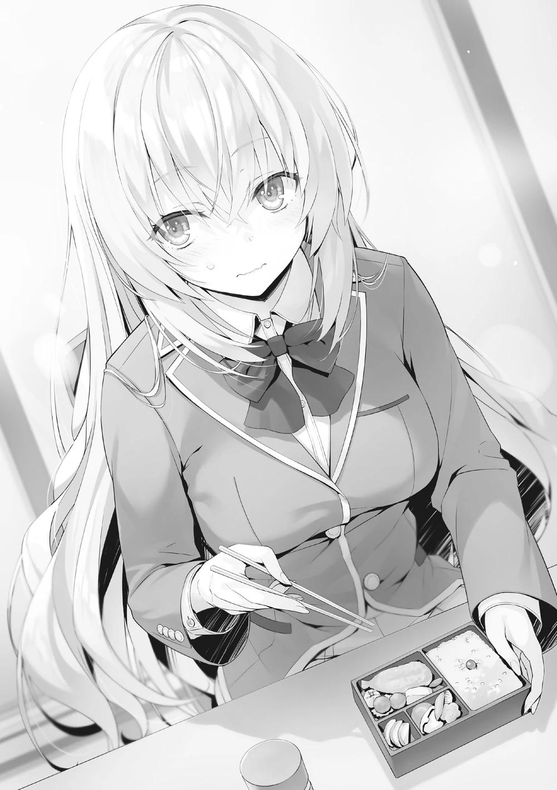
Los dos no habían llegado ni a la mitad de su comida cuando yo terminé. Cerré la tapa del bento y lo sostuve en mi mano.
―¿Qué es esto? ¿Ya terminasteis de comer? Puedes dejar la caja vacía ahí.
―Muchas gracias.
Respondí, pero Nagumo ya no se centraba en mí, sino que su mirada estaba fija en Ichinose. Ichinose, quizás tratando de evitar mirarme, también estaba mirando a Nagumo.
―Por favor, disculpen.
No tenía sentido quedarse allí, así que salí de la sala del consejo estudiantil.
―Una estrategia para demostrar su superioridad, ¿eh?
Desde la perspectiva de una persona ajena, parecería que me estaba humillando, pero no tenía sentido si yo mismo no recibía ningún daño psicológico. Si buscaba ese efecto, debería haber hecho que más miembros del consejo estudiantil observaran desde un costado. Si hubiera hecho eso, al menos habría conseguido que los espectadores pensaran en mí como un tipo lamentable.
Dicho esto, por lo que se ve, Nagumo seguirá en contacto con Ichinose. Incluso podría ser posible que ocurriera algo que cambiara su relación. Mientras me alejaba, pensé en las implicaciones.
¿Acudir a Nagumo supondría el crecimiento de Ichinose Honami? Si todo salía bien, ella podría adquirir el suficiente favor de él para ocupar el puesto de presidenta del consejo estudiantil.
Eso le daría la confianza necesaria ─ ─ no, ese pensamiento era demasiado ingenuo. Si el apego de Nagumo a Ichinose se debía a mí, era muy posible que, en cambio, cortara con Ichinose en el último momento. Si, después de entregarse en cuerpo y alma, no fuera elegida como presidenta del consejo estudiantil, y Horikita fuera recomendada a pesar de haber contribuido menos, su espíritu no duraría ni un año y estaría destrozada.
En ese sentido, el poder de Nagumo era formidable.
Aunque tenía que vigilar a Nagumo, había otras cosas que tenía que hacer ahora mismo.
Eso era cierto para el inminente festival deportivo, pero antes necesitaba seguir preparándome para el festival cultural que venía después. En vista de la situación de la clase, pedí a las creadoras de la idea, Satou, Matsushita y Maezono, una breve pausa, pero había que seguir con los preparativos para conseguir personal para el maid cafe.
En un principio, contaba con la participación de Airi, pero eso ya no era posible y tampoco había que contar con Haruka por el momento. Kushida podría haber sido otra poderosa carta a jugar, pero también había desaparecido.
Además, en mis intentos por aprender los entresijos de este campo, tampoco podía confiar irreflexivamente en que mis compañeros me ayudaran en estos momentos.
Con la clase destrozada como está ahora, si sacaba el tema del maid café, no sólo se asustarían y pensarían "¿de qué estás hablando?", sino que ese sentimiento podría llevarles a filtrar información.
―Un maid café...huh.
No sabía nada en absoluto sobre el evento, y tendríamos que vender mucho para cubrir el presupuesto correspondiente. Debo investigar las estrategias ganadoras, así como lo que hacen nuestros rivales.
PARTE 3
En clase, la mañana después de que se nos explicaran los detalles de las reglas del Festival Deportivo.
Al igual que ayer, el ambiente en la clase no resultó especialmente alegre.
La razón es que faltan tres compañeros de clase. Todavía ausentes, ¿eh? No era raro que alguien se tomara el día libre por estar enfermo o en baja forma,
pero estoy seguro de que todos los presentes saben que estas tres personas no descansaron por esa razón.
Si te ausentabas de la escuela durante varios días seguidos, normalmente tenías que ir a la clínica del centro comercial Keyaki y conseguir una nota del médico. Por otro lado, con una nota del médico, no habría mayor problema. En resumen, aunque no tuvieras fiebre, si jurabas que estabas enfermo la clínica podía aceptar una baja de dos o tres días.
Pero, como nos dijo Chabashira-sensei durante la clase, los tres no habían ido a la clínica para ser examinados.
A diferencia de Kushida, los otros dos al menos se habían puesto en contacto con Chabashira-sensei, pero no estaba claro cuánto tiempo ella dejaría que esto continuara así. Sería un problema si seguían ausentes después de mañana. La ausencia de Haruka se debía a la expulsión de Airi. La ausencia de Wang fue porque su amor por Yousuke fue expuesto. La ausencia de Kushida fue porque su verdadera naturaleza fue revelada. Ninguna de estas razones tenía que ver con ninguna enfermedad.
Me pregunto qué pasaría si esto continuara durante tres días, cinco días o incluso una semana. No sería extraño que la escuela pensara que estas ausencias no eran casuales y comenzara una investigación. Y como Chabashira mencionó antes, tarde o temprano empezará a tener un efecto significativo en nuestros puntos de clase.
Además, se empezaron a formar otras grietas en lugares que no se veían.
Wang no fue la única víctima de las revelaciones de Kushida. El hecho de que las llamas se extendieran alrededor de la pareja recién formada, Ike y Shinohara, era otra preocupación. De hecho, por lo visto Shinohara seguía sin hablar con las personas que la habían insultado, es decir, Kei, Matsushita y Mori.
Y, a pesar de que no fueron nombradas en ese incidente, no podíamos descartar la posibilidad de que Shinohara tampoco se hablara con Satou o Maezono por la misma razón.
Aunque no fueran miembros del grupo con el que solía salir, ésta solía ser una clase en la que las chicas tenían fuertes vínculos incluso entre grupos. Ahora estaba claro que esos lazos estaban completamente divididos.
Ya era hora de que empezáramos a formar equipos para ganar puntos en las competiciones por equipos, pero esta clase no podía llegar a esa fase todavía.
Si
intentábamos hacer
equipos
en
este
estado,
exacerbaríamos
innecesariamente nuestras divisiones internas. Como entendía eso, Horikita tampoco sacaba el tema. Dicho esto, también era imposible reparar esas divisiones en este momento. Junto con Horikita, Yousuke también lo entendía bien.
El tiempo no se hizo esperar y la clase de la mañana terminó.
Inmediatamente después, recibí un mensaje en mi tableta.
[Necesito hablar contigo de algo. Sal de la clase después de mí.]
Chabashira-sensei me envió una breve instrucción. Poco después de que ella saliera de la clase, me levanté de mi asiento, fingiendo que iba al baño. Nadie me vio salir, gracias a que mi asiento está al fondo de la clase, junto a la puerta.
Doblé la esquina del pasillo que llevaba a la sala de profesores y vi a Chabashira-sensei de pie, de espaldas a la pared.
―No es habitual que me llame así. ¿Es un asunto urgente?
Por un momento, pensé en los tres estudiantes ausentes, pero no me pareció que eso estuviera relacionado.
―Sí. Hay algo que debo decirte. Es sobre Sakura.
―¿Sobre Airi?
Ya era la semana después de la expulsión de Airi. Había pasado bastante tiempo.
Después de tanto tiempo, ¿tenía algo que decirme?
―Cuando la expulsaron, lógicamente la escuela hizo todos los trámites.
Arreglar su equipaje, reclamar sus puntos privados. Bueno, ese tipo de cosas, como el post-proceso.
Su expresión era clara, pero lo que decía era algo confuso. ¿Se debía a sus sentimientos por la pérdida de una de sus alumnas?
―Los objetos que se compran en la escuela son fundamentalmente propiedad personal del alumno, y el trato que se les dé es cosa suya. Tanto si se los lleva como si no, no pasa nada. Los trámites para la expulsión se procesan en la sala de profesores, pero... bueno, antes ocurrió una cosa inesperada.
―Una cosa inesperada, ¿eh?
―Sí. Después de terminar la Prueba Especial de Consentimiento Unánime, encontramos pruebas de que Sakura gastó unos cinco mil de sus puntos privados, y bueno, se puede decir que no estamos seguros de cómo manejar eso.
―¿No se les quitan los puntos privados a los expulsados?
―Sí. Pero, como dije antes, eso sólo ocurre después del proceso formal.
Sin embargo, la escuela lo considera una zona gris. Digamos que transfieres todos tus puntos a otra persona, la escuela no lo aceptaría, ¿verdad?
―Sí. Si transfieres todos tus puntos después de ser expulsado, podría causar problemas. Entonces, ¿Airi transfirió cinco mil puntos a alguien?
―No, no es así. Sakura───
Me habló de un uso de los puntos privados que no había considerado. Mientras me explicaba, me di cuenta de que yo no era del todo ajeno.
―─Siendo así, pensé en acercarme a ti, estando tú involucrado y todo eso. Por supuesto, no tienes ninguna obligación de soportar esto. Si te niegas, me encargaré de ello.
Lo que Airi hizo en el breve período posterior a su expulsión quedó grabado en piedra. Me apoyé en mi instinto sobre lo que debía hacer y tomé una decisión.
―No es una suma muy grande de dinero, así que ¿puede dejarlo así?
―¿Estás diciendo que pagarás esa suma?
―¿Será un problema?
―No. Sólo será que gastes tus puntos privados como te corresponde, así que la escuela no debería tener ninguna objeción al respecto.
―Entendido.
Conseguí que me confirmara que no sería un problema.
―Quería preguntar: ¿tiene esto... algo que ver contigo?
Como si buscara algo, Chabashira-sensei me preguntó.
―No, para nada. Es sólo lo que ella misma pensó hacer en el poco tiempo que tenía.
Por supuesto, ni siquiera yo conocía los detalles de lo que ella pensaba, pero con el paso del tiempo estaba seguro de que acabaría por descubrirlo.
―En cualquier caso, es un asunto menor, pero aun así me alegro de haberme ocupado de esto. Siendo el estado de la clase lo que es, hay muy pocas cosas de las que alegrarse.
No le quedaba nada bien, mostrar preocupación por la clase que tenía a su cargo.
―A qué viene esa mirada.
―Nada. Como usted dice, sensei, la clase es inestable ahora mismo.
Pensaba enderezar parte de ella, pero creo que no será necesario.
―¿Qué quieres decir?
―Por ahora, por favor, vigile a todos y cada uno de sus alumnos mientras crecen.
Parecía un poco insatisfecha, pero de todos modos asintió en silencio.
CAMINO INEVITABLE
Lo dije una y otra vez, pero la clase se enfrenta a múltiples problemas al mismo tiempo. No servirá de nada que los líderes de la clase se limiten a ver cómo se amontonan todos y cada uno de esos problemas.
Quizá quería arreglar esos problemas por sí mismo. No era algo malo, querer hacerlo todo uno mismo, pero carecer del poder para hacerlo lo convertía en mero idealismo. También hay problemas que no se pueden manejar solos, aunque se tuviera la capacidad de resolverlos. La necesidad del momento es apoyarte en tus camaradas. Así, tienes la opción de coordinar y solucionar todos los problemas a la vez.
Desde el fin de semana hasta este mismo momento, yo no mostraba señales reales de ayudar. Tras leer las noticias del día en mi teléfono, me levanté para salir de la clase, un poco después de los alumnos que salían a divertirse justo después de las clases.
Como si estuviera esperando ese momento, él se apresuró a alcanzarme.
Frustrado por no poder encontrar una solución a nuestros problemas, no tardaría en ponerse en contacto conmigo, así lo esperaba.
―Oye, Kiyotaka-kun. ¿Puedes hacer algo de tiempo esta tarde? Necesito tu consejo sobre algunas cosas.
Teniendo en cuenta sus alrededores, hizo su petición en voz baja.
―Tengo planes con Kei esta tarde. ¿Qué tal ahora mismo, te parece bien?
En realidad no tenía esos planes, pero mentía para tantearle.
―Eso es...
Por supuesto que no podía aceptar. Las actividades del club de Yousuke no le dejaban tiempo libre tan pronto después de la escuela. Al acercarse el festival
deportivo, los clubes también suspenderían todas las actividades, así que este era el momento en el que él querría participar todo lo posible.
―Es una broma. Hablaré con Kei. Tendremos nuestra cita más tarde.
―Gr-gracias.
―Sólo para confirmar de nuevo, ¿necesitas mi consejo?
Era muy consciente de ello, pero volví a preguntar a propósito. Yousuke no pensó nada y asintió.
―Sí. Creo que lo mejor es actuar pronto.
―De todos modos, si te parece bien mi habitación, la noche es tuya.
Alegre por la respuesta positiva, las mejillas de Yousuke se relajaron y sonrió como un niño.
―Si es posible, ¿podrías pedirle a Karuizawa-san que asista también?
Sería de gran ayuda.
―¿También Kei? Por supuesto, ella estaría encantada de asistir, pero ¿no estorbará?
―Hay bastantes problemas que tenemos que resolver, así que me gustaría que ella también nos ayudara.
La presencia de Kei supuso una gran diferencia, ya que tenía una red de información sobre las chicas. No tuve que preguntarle a Yousuke para saber que quería información sobre Kushida, Shinohara, Haruka y el resto.
―Entonces... ¿qué tal a las 7:30?
―Eso estará bien. Estaré allí puntualmente.
Con los ojos entrecerrados de felicidad, Yousuke se dirigió rápidamente a las actividades de su club.
Él prestaría inmediatamente su ayuda a cualquiera que lo necesitara.
―Problema de clase nº 2, en efecto.
Bueno, esto era, en cierto modo, inevitable. Desde que estuve ayudando a Yousuke cuando estaba en problemas hasta ahora, era inevitable que resultara así. No sería fácil derribar lo que yo mismo construí, pero tenía que hacerlo.
Pues bien. Empezaré pidiendo a Kei que venga a mi habitación a las 19:30.
PARTE 1
Eran las 17:30. Llegué a casa y estaba esperando a que llegara Yousuke, cuando recibí una notificación en mi teléfono.
[¿Puedo ir a pasar el rato ahora mismo?]
Kei, mi novia, me había enviado un mensaje con una bonita pegatina de un gato.
Habíamos quedado con Yousuke a las 19:30, así que había llegado muy temprano.
Y ya que estamos, ¿vamos a cenar juntos? añadió antes de que pudiera responder.
Parecía que lo que realmente quería era cenar juntos. Le respondí brevemente:
[Me apunto.]
"Ahora bien, tendré que preparar algo".
Podía servir las sobras de ayer, pero ¿qué tal algo que le gustara a Kei y que pudiera preparar rápidamente...?
Abrí el refrigerador, miré dentro y estaba pensando en ello cuando sonó el timbre de la puerta. Abrí la puerta principal y me encontré con Kei sonriendo.
Aunque me sorprendió un poco, no me asusté y la dejé entrar despreocupadamente. Ya no necesitaba tener cuidado sobre cuándo dejarla entrar en mi habitación ahora que nuestra relación estaba al descubierto.
―Fuiste muy rápida.
Los movimientos de Kei al quitarse los zapatos y entrar en mi habitación se habían vuelto muy familiares.
―Eso es porque te envié un mensaje justo antes de subir al ascensor~.
Por lo visto, ella iba a venir de todas formas, siendo mi presencia u otros planes algo secundario. Dejé de cocinar por el momento y me senté con ella en el suelo junto a la mesa.
―Quizá sea porque últimamente siempre estoy en tu habitación, Kiyotaka, pero me estoy acostumbrando, como si fuera mi propia habitación.
―Me alegra oírlo. Por otro lado, nunca me has invitado a tu habitación, Kei.
―¿E-ehh? Es un poco embarazoso y... bueno, ¡quizá algún día si me apetece!
No me dio un sí directo, pero cuando se trataba de la habitación de una chica, estaba seguro de que se daban muchas circunstancias. Intentaré no acosarla demasiado.
―Ahora que lo pienso, ¿qué dice la gente que te rodea sobre nuestra relación?
―¿Las chicas? Sorprendentemente, lo están aceptando sin problemas, supongo. O como... no importa.
Intentó decir algo y se confundió. Tenía un poco de curiosidad, así que traté de profundizar.
―¿Qué es?
―Bueno, ¿sabes? Es que, por ahora, todo el mundo está pendiente del nombre de Hirata Yousuke. Hay bastantes chicas que dicen que es un desperdicio.
Ya veo. Significaba que no entendían por qué fue y se cambió a un tipo sin nombre como yo. Ciertamente, no era sorprendente que me compararan con Yousuke y que hablaran abiertamente de cosas así.
―En cierto modo, yo también estoy recibiendo golpes por ello. Aunque se supone que rompí con Yousuke-kun, la gente se pregunta si, en realidad, él me dejó.
Si el chico con quien te cambiaste es desconocido, entonces era natural que la gente sospechara eso.
―Pero eso es sólo para algunos. Estos días, tu reputación también ha subido expotencialmente.
―Quieres decir exponencialmente. ¿Qué clase de error es ese?
Era tan básico que sospeché que podría haber sido deliberado. Kei se rio con una amplia sonrisa en la cara.
―Hasta yo sé esooooo.
―Tu tutor es excelente.
―Siempre estoy agradecida, sensei. Gracias a tus clases particulares secretas, mis notas están subiendo.
Kei había ido mejorando poco a poco su nivel académico, y a principios de septiembre, su rango de habilidad académica en la OAA subió a C con una puntuación de 48. Eso significaba que por fin había adquirido tantos conocimientos como un estudiante promedio. Después de unos minutos de charla, me levanté y me dirigí al refrigerador.
―Estoy pensando en hacer omurice, ¿lo comerás?
Pregunté sin mirar atrás y Kei inmediatamente gritó de alegría.
―¡Me lo comeré, me lo comeré! Me gustaría que el ketchup fuera un poco más espeso, por favor, chef.
No era la primera vez que invitaba a Kei una comida casera como ésta. Desde que empezamos a salir, de vez en cuando tenía la oportunidad de servirle una comida en mi habitación.
Hasta ahora, la propia Kei casi nunca había dado muestras de cocinar, pero no me importaba especialmente. Estaba bien que el que quisiera cocinar lo hiciera.
No importa si eres un hombre o una mujer, el género es irrelevante. A mí no me disgustaba cocinar, y Kei se lo comía con gusto. A Kei le gusta hablar, y anima el lugar haciéndome conversar hábilmente, a pesar de que yo no soy un buen
conversador. Supongo que somos de los que tienen un buen equilibrio y se apoyan mutuamente.
Saqué del refrigerador huevos, ketchup, pollo y mantequilla. Después de tomar un poco de aceite para ensaladas de la estantería, estaba todo listo. Saqué un poco de arroz congelado y lo dejé descongelando en el microondas. Mientras tanto, preparé las cebollas. La verdad es que quería incluir algunas zanahorias en la guarnición, pero desgraciadamente no tenía ninguna guardada. Justo cuando puse las cebollas en la tabla de cortar y tomé mi cuchillo, sentí una presencia detrás de mí. Kei se había acercado a mí y se había acurrucado contra mi espalda.
―¿Qué estás haciendo?
Como era ligeramente peligroso, dejé lo que estaba haciendo y pregunté sin moverme.
―Sólo observando ―Kei contestó, pero con el lado de su cara pegado a mi espalda, no debería ser capaz de ver lo que estaba pasando―. Está bien que me ignores. Me quedaré quieta.
―Ya veo, entiendo.
Hice lo que me dijo y la ignoré por el momento. Continuando con mi trabajo, corté la cebolla en cuadrados de unos 5mm cada uno en la tabla de cortar. Todo el tiempo que estuve haciendo eso, Kei se pegó a mi espalda y no me soltó.
Entonces dejé el cuchillo y alcancé un tazón para romper un huevo, pero, en ese momento, Kei puso sus manos alrededor de mi cintura y me abrazó.
―¿Qué estás haciendo ahora?
―¿Hmmm...? Sólo observando.
―Sin embargo, no veo cómo estás 'sólo observando'. En todo caso, esto es un sabotaje.
No llegué a darle una advertencia, pero le pregunté por el ligero descenso en la eficiencia del trabajo. Sin embargo, no mostró ninguna señal de preocupación.
―Ahh, estoy muy contenta. ¿Hay algo más que pueda hacerme tan feliz?
―murmuró brevemente, y los brazos que me abrazaban se apretaron aún más.
Parecía bastante satisfecha.
―Es una felicidad muy barata. ¿No hay fuentes de felicidad más increíbles por ahí? ¿Como comprar algo que quieres o ver algo que estabas esperando en la televisión?
―Ese tipo de cosas no me harían ni de lejos tan feliz.
―Estaba hablando por hablar, pero en realidad hay algo, ¿no?
―No, no hay nada. Incluso si lo hubiera, no lo necesito. Esta felicidad que tengo ahora es más que suficiente.
Si ella estaba satisfecha con esto, no tenía nada más que decir por mi parte.
―¿Puedo empezar a cocinar de nuevo?
Naturalmente, continuar en esta posición sería muy inconveniente.
―¿Eh~? ¿Qué debo hacer~?
Ella me miró de reojo y sonrió mientras movía los ojos.
―Me gustaría tener algún tipo de recompensa por comportarme.
―Hay algo de chocolate en el refrigerador.
―Respuesta equivocada. No me refiero a eso, pero... nos hemos desubicado en algún punto, ¿no? Bueno, eso es muy tuyo, Kiyotaka. Entonces, esperaré tranquilamente~
Kei se fue y se sentó en la cama como si estuviera satisfecha de sí misma.
Ahora parecía que podía concentrarme en hacer el omurice durante un rato. Kei esperó a que terminara de cocinar mientras alternaba entre mirar su teléfono y la televisión. Los dos nos sentamos alrededor de la mesa y terminamos de cenar un poco antes de lo habitual.
―Ah, por cierto, se trata de Shinohara-san, pero... ―No abordé el tema específicamente ni nada por el estilo, pero Kei lo dijo y continuó―: Yo también
tuve la culpa, pero supongo que el hecho de que la expusieran le afectó bastante: ni siquiera me habla.
―Es natural.
El hecho de que alguien se vea bien o mal varía según los gustos y el sentido del estilo de cada persona, pero, los que generalmente se consideran superiores hacen comentarios condescendientes sobre los que consideran inferiores. Eso en sí no es algo raro y se puede ver en cualquier sitio. Más bien, suelen decir simplemente lo que piensan, sin tener ningún tipo de malicia detrás.
―¿Tú y las demás odian a Shinohara?
―No la odio ni mucho menos. Shinohara-san es una chica divertida, es conocida por alegrar el ambiente.
―Ya veo. Y por eso sólo te divertías inconscientemente a costa de su relación con Ike.
―Supongo. Nos reíamos mientras hablábamos de cosas que le habrían hecho daño si se hubiera enterado ―Murmuró arrepentida, como si reflexionara sobre sus actos―. ¿Me odiarás por decir cosas malas sobre ella de esa manera?
―La gente habla mal de otras personas. No pretendo negar eso en sí mismo. Aunque puede haber diferencias en cuanto a la cantidad, sería difícil encontrar a alguien que no hable mal de los demás por completo.
Odiar a un alumno mayor de tu club porque es demasiado prepotente, u odiar a tu profesor por ser demasiado egoísta. Está bien tener una o dos quejas así.
Hay un lado excesivo en asuntos como burlarse de la apariencia de alguien o señalar cuestiones relacionadas con su capacidad académica, pero, desde luego, no es extraño que, como seres humanos, hablemos de esas cosas.
―Pero básicamente, lo que hay que evitar es que el objetivo te oiga hablar mal de él.
―No es cierto.
―Debió ser un shock que se filtrara por esa Kushida, la excepción entre las excepciones. Decírselo a alguien siempre conlleva un riesgo.
Naturalmente, Shinohara se sintió muy dolida por las conversaciones en las que se criticaba su aspecto que filtró Kushida. Eso no fue todo. Los amigos de Shinohara que no tenían una mala impresión de ella, su novio Ike, así como los amigos de éste; todos ellos pensarían naturalmente mal de Kei y los demás. La próxima vez, Shinohara y los demás podrían darle la vuelta y hablar abiertamente mal de Kei, Matsushita, Mori y el resto. Una vez que se inicie el círculo vicioso, se requerirá un esfuerzo considerable para ponerle fin.
―¿Y? No te limitas a sentirte mal, ¿verdad? ¿Has hecho algo al respecto?
Matsushita ya me había dado una breve explicación, pero tenía que escucharla también de Kei.
―Intenté hablarlo, sobre todos los malentendidos... no, sobre cómo la herí, pero es como si estuviera inabordable ahora mismo.
―Inaccesible, quieres decir.
―Eso, sí eso... eso fue a propósito, ¿sí?
Esta vez sí que se equivocó.
Parecía que Kei y las demás habían intentado al menos reparar su relación rota con Shinohara, a su manera.
―Así que, ya sabes... ¿qué crees que debería hacer para que podamos reconciliarnos?
―¿Me lo preguntas a mí?
―¿No es obvio? Si eres tú, Kiyotaka, estoy segura de que se te ocurrirá un plan inteligente.
Kei también tenía el mismo problema que Yousuke, pero no parecía que ella hubiera encontrado ninguna apertura hasta ahora.
―Todavía estoy pensando en eso ahora. Dame un poco más de tiempo.
Se lo dije y dejé de responder a la pregunta por el momento.
―Oye, es un tema completamente diferente, pero ¿puedo preguntarte algo un poco raro? ―Seguí escuchando sin detenerla, así que me miró con cara de curiosidad y preguntó―: ¿Sabes que decidiste expulsar a Sakura por su OAA en el examen especial? Si...
Cuando nuestras miradas se encontraron, Kei se atragantó con sus palabras.
―En realidad, está bien. No es nada.
―¿Tienes curiosidad por saber qué habría hecho si tuvieras la puntuación más baja en el OAA?
Sus ojos se abrieron de par en par al ser leídos con tanta facilidad.
―Lo dije en aquella ocasión con Ike; aunque tuvieras puntuaciones similares, la diferencia entre el número de amigos que tienes sería abrumadora.
No te expulsaría.
―Entonces, ¿si no tuviera ningún amigo? ¿Si mi estatus entre las chicas fuera bajo?
Los pensamientos que la habían estado angustiando salieron de ella en rápida sucesión.
―Ese argumento no tiene sentido. En esa hipótesis, Karuizawa Kei sería una persona completamente diferente. Si ese fuera el caso, tú y yo no habríamos desarrollado nuestra relación hasta lo que tenemos ahora.
―...Eso es... sí. Puede que sea cierto, pero... si yo fuera ese yo completamente diferente, y no estuviera saliendo contigo, Kiyotaka, ¿me habrían expulsado?
Aunque ella entendía que era un argumento sin sentido, no pudo evitar preguntar.
―Si tus habilidades fueran como acabas de decir, entonces supongo que lo habrías sido expulsada.
―Ugh...
―No es que no entienda por qué te sentirías herida, pero esa persona no eres tú. Realmente es una persona diferente. Fuiste intimidada y herida, y estableciste tu posición entre las chicas para revertir la situación una vez que te convertiste en una estudiante de preparatoria. Utilizaste a Yousuke, y me conociste y saliste conmigo. Esa es Karuizawa Kei, ¿verdad?
Cuando llegué tan lejos con mi respuesta, Kei hizo un mohín de evidente insatisfacción.
―"Habría protegido cualquier versión de ti". Esa es la respuesta correcta,
¿ok?
―...Ya veo.
Aunque no fuera ella, quería que declarara que protegería a Karuizawa Kei.
Aprendí la lección de que, cuando se trataba de cosas así, no había necesidad de lógica.
Se tumbó en mi regazo y le acaricié la cabeza, tratando de ponerla de buen humor. Después de disfrutar unos minutos acurrucada en mi regazo como una gata, empezó a hablar sin cambiar de posición.
―Oye Kiyotaka. No me importa que hayas eliminado a Sakura-san.
Porque nunca te equivocas. Pero, ¿fue realmente la decisión correcta de Horikita-san mantener a Kushida-san? Ella sólo estorbará, ¿verdad?
Kushida Kikyou, la responsable de crear las grietas en la clase. Kei consideraba que las desventajas de no expulsarla eran importantes. No era raro ni nada, era la reacción natural.
Cualquiera tendría dudas. Incluso si las tuvieran, no les resultaría fácil hablar cuando estuvieran presionados por el tiempo. Y entonces pensarían que estaba bien mientras pudieran salvarse en última instancia. Probablemente, el calor comenzó a disminuir durante los dos días de descanso después del examen.
Algunos se preguntarían si realmente era algo bueno, y otros se sentirían aliviados por no haber sido expulsados. Y algunos estarían aterrorizados preguntándose si podrían ser los siguientes.
―¿Sabes qué tiene Kushida que no tenga Airi?
―¿Eh? Estudiar y hacer deporte, ¿no? Kushida es bastante sorprendente.
Es bastante buena en todo.
―Eso es cierto cuando se trata de las razones superficiales. Pero lo más importante no es eso.
―...¿Qué quieres decir?
―Es la posibilidad de que ella se convierta en una pieza importante para despertar a Horikita Suzune como líder. Podría convertirse en algo para Horikita que ni tú ni Yousuke podrían; alguien a quien pudiera llamar compañera.
―¿Kushida-san va a...?
―La propia Horikita seguramente no lo ha entendido del todo todavía. Sólo confió en sus instintos en una situación de apuro en la que no tenía tiempo de sobra.
―Eso es lo que tiene Kushida-san que no tiene Sakura-san...
―Una perspectiva que sólo Kushida tiene. Pensamientos que sólo Kushida tiene. Declaraciones que sólo Kushida puede hacer. Esas son cosas que ella puede hacer independientemente de su popularidad. Y esas apoyarán a Horikita.
Aunque Kei lo había aceptado hasta cierto punto, no estaba del todo convencida.
¿Era también una reacción natural? Era un futuro incierto. Era sólo una teoría vacía, basada en la suposición de que Horikita tenía razón al tomar esa decisión.
―Ella es plenamente consciente de que Haruka y los que estaban involucrados están resentidos con ella. Pero sus resultados no se verán en uno o dos días. Todo lo que podemos hacer es observar atentamente.
―¿Pero no está Hasebe-san más resentida contigo, Kiyotaka?
―Así es.
La dificultad de alcanzar la unanimidad en aquella situación en la que el tiempo estaba a punto de agotarse. No importa cuántos otros sugiriera Horikita, habría sido casi imposible llegar a un consenso. Y el golpe a nuestros puntos de clase
habría sido inaceptable. Siendo ese el caso, no había otra opción que tomar medidas.
―Si ella pudiera hablar de resultados, conclusiones y respuestas, entonces sería fácil. Pero la realidad es que ella no puede hacer eso.
―¿Te refieres a Horikita-san?
―Supongamos que hay un obstáculo frente a ti que está a una altura en la que no estás segura de si serás capaz de superarlo con éxito o no. Si lo desafías y fallas, puede que te caigas sin ser capaz de saltarlo, o puede que te hagas tan sólo un rasguño en la pierna y lo superes. O tal vez, si tienes muy mala suerte, podrías incluso romperte un hueso.
Planteé un escenario imaginario en el que un obstáculo que apenas podías superar utilizando exactamente toda tu fuerza te impedía avanzar.
―¿Qué crees que deberías hacer para asegurarte de superar ese obstáculo?
―¿Eh...? U-umm... ¿hacer un montón de prácticas antes de intentar saltarlo?
―¿Y si no puedes practicar?
―Eso es... tendrías que ir simplemente por ello, ¿no? Como, esa es la única manera...
―Es lo mismo que eso. Horikita no podía dejar de correr una vez que había empezado y trataba de saltar el obstáculo que tenía delante.
―En resumen, ¿dices que Horikita falló el reto y se cayó?
―No, es más bien que saltó y su pierna se golpeó contra el obstáculo.
¿Qué tan grave fue su lesión y si se cayó así? ¿Está bien ella misma o está gravemente herida? Eso aún está por determinarse.
Era fácil evitar ese obstáculo. Habría sido mejor no saltar y dar un pequeño rodeo. Pero eso fue también lo que me hizo querer seguir observándola. Una
vez más me encontré preguntándome sobre cosas que nunca imaginé cuando había empezado en esta escuela.
―Así que es así. Pero sí, realmente no puedo aceptar la decisión de Horikita-san. Ella también rompió su promesa. Además, incluso llegó a decir que protegería a Kushida-san.
Ciertamente, había un aspecto de intimidación en ello, pero también era un hecho que, hasta ahora, la clase de Horikita se había convertido en algo demasiado vago. Con las olas que se produjeron por esa decisión, todos sabían que su seguridad personal no estaba garantizada. Por supuesto, su confianza en Horikita se habría visto afectada, pero eso era algo que podría recuperar en los exámenes especiales que se avecinaban. Aunque eso estaba condicionado a que siguieran adelante con su objetivo de llegar a la clase A.
Mientras hablábamos de esto y lo otro, el reloj marcó las 7 de la tarde. Recogí los platos en los que habíamos comido y fui a la cocina a lavarlos mientras podía.
―Oye, oye, ven aquí y charla conmigo~
―Más tarde. Voy a lavar los platos.
―¿Eh? Pero, ¡serán las 7:30 cuando termines!
Comenzaremos nuestras discusiones cuando llegue Yousuke, así que ella exclamó insatisfecha. La ignoré y me puse a lavar los platos. Estuvo callada durante un rato, pero, incapaz de mantenerse quieta durante mucho tiempo, pronto empezó a exigirme de nuevo.
―Vamos, vamos, ven aquí, no seas tímido. ¿Sí? ¿'kay?
Mientras decía eso, dio tres o cuatro palmadas en la cama.
―Supongo que no tengo otra opción───
Quería al menos terminar con las ollas antes de que llegara Yousuke, pero me rendí. Me senté en el lugar que Kei palmeaba. Contenta, me pinchó la mejilla derecha una y otra vez.
―Tu mejilla sí que es suave para un chico~. ¿Te la estás cuidando?
―Sólo loción.
Por la cantidad de estrés a la que estaba sometida mi piel adolescente, pensé que cualquier otro cuidado sería fundamentalmente inútil.
―Hmmm...
Ella no se lo creyó, pero, al mismo tiempo, no pareció importarle mucho y siguió pinchando como si sólo quisiera tocarme. La agarré de la mano, la atraje hacia mí y le robé un beso. Pensé que se sorprendería, pero se sonrojó y sonrió como si lo hubiera esperado.
―He estado esperando esto desde que llegué a la habitación hoy.
―Ya veo.
Tenía que admitir que todavía no podía leerla cuando se trataba de cosas como ésta. Después de eso, nos besamos sin palabras una y otra vez, nuestros cuerpos cerca. Sus besos sabían a omurice. Fue una experiencia extraña.
―Te amo...
Kei se acurrucó contra mí, y yo la abracé con suavidad, mientras un tranquilo silencio se apoderaba de nosotros. Más que incómodo, era reconfortante.
Durante un rato, nos abrazamos con fuerza.
Nuestra tranquilidad se vio interrumpida por el sonido del timbre de la puerta. Al volver a la realidad de repente, Kei se asustó y se alejó de mí, inesperadamente avergonzada. No tenía por qué apresurarse -la puerta estaba cerrada con llave-, pero bueno... entiendo por qué lo hizo.
Esperé un poco a que Kei se calmara, y luego los dos juntos recibimos a Yousuke. Había llegado a mi habitación todavía con su uniforme.
―Fui al centro comercial Keyaki con mis mayores después de nuestras actividades del club, ya ven.
Aclaró al notar que yo miraba su uniforme.
―Bienvenido, siéntete como en casa~
Al ver que Kei se comportaba como si esta fuera su propia habitación, Yousuke sonrió felizmente. Desde que llegamos a esta escuela, había estado pendiente de Kei más que de nadie, y debía ser por eso que se alegraba de verla tan genuina y alegre.
―Gracias por recibirme.
Siempre cortés, se arregló los zapatos antes de entrar, y, después de tomar asiento, le llevé un poco de té.
―Gracias.
―Entonces, ¿para qué querías mi consejo?
No tenía sentido retenerlo mucho tiempo, así que le facilité el comienzo. Aunque ya había predicho todo lo que iba a hablar.
―Sí, es sobre la clase. Tal y como estamos ahora, entrar en el Festival Deportivo será peligroso. Estoy seguro de que Karuizawa-san también lo entiende. Creo que a las chicas les resultará especialmente difícil trabajar juntas.
Yousuke se giró hacia Kei, ya que ella estaría más al tanto de los detalles.
―Estaba hablando con Kiyotaka sobre Shinohara-san. Sinceramente, ahora mismo ni siquiera estoy pensando en la competición.
En cambio, ella estaba tratando de arreglar su amistad con Shinohara.
―Me preguntaba si tenías alguna buena idea al respecto. Quiero tu ayuda, Kiyotaka-kun.
Kei, que también acababa de pedirme ayuda en una línea similar, se dirigió a mí también. Siendo así, yo también debería hablar con libertad.
―Yousuke, ¿has hablado con alguien más sobre esto antes que conmigo?
―¿Eh? No... es la primera vez. Si intentara hablar sin ninguna preparación, y se corriera la voz de que estoy intentando arreglar las cosas, me parece que no saldrá bien.
La mayoría de las personas estarían contentas si sintieran que sólo quiere ayudarlas, pero, por otro lado, si supieran que está tratando de unir a la gente de nuevo, sólo les haría desconfiar de él. Incluso podrían sospechar que tiene un motivo oculto para sus amables palabras.
―Tú también, ¿eh?
―Estaba pensando que, después de todo, tal vez quiera instrucciones.
―Entonces, de cara al futuro, quiero que lleves estas conversaciones no a mí, sino a Horikita, la líder de la clase.
―Pero creo que Horikita-san tiene las manos llenas con lo que está pasando con Kushida-san. Ahora mismo, ella ayudando con los problemas de nuestros otros compañeros de clase─
―Entonces, si yo me ocupara de Kushida, ¿ustedes irían a ver a Horikita?
―Eso... es lo que me pregunto. Quizá seguiría hablando contigo, Kiyotaka-kun.
Después de imaginar mi hipótesis, Yousuke admitió honestamente que sí.
―Horikita-san está haciendo un gran trabajo, pero Kiyotaka-kun sería capaz de ver el panorama general y tomar la decisión correcta. Eso es lo que yo pensaba.
―Yo también, ¿sabes? Como que, si te lo dejara a ti, se te ocurriría la respuesta perfecta.
―Creo que también te lo dije en el último examen especial. No podrás confiar en mí para siempre. Incluso si no estás seguro, deberías llevar estas conversaciones a Horikita primero. Si no sigues ese proceso, estaría mal".
―Pero──
―Será una carga para ella. No estoy seguro de que ella llegue a una solución. Así que no puedo confiar en ella, no confiaré en ella. Si haces eso,
¿crees que Horikita llegará a ser una verdadera líder? ¿Y si fuera un líder como
Ryuuen, Sakayanagi o Ichinose? Aunque ya lo estés manejando, si tuvieras alguna preocupación, ¿no se la llevarías a ellos primero?
Lo importante era confiar en ella, apoyarse en ella. Horikita y la clase están llegando a un punto en el que crecen a través de repetidos éxitos y fracasos.
―Incluso un fracaso es una oportunidad de aprendizaje. Todo el mundo empieza con 1 + 1. Por supuesto, Horikita ya ha superado con creces esa etapa, pero aún le falta mucha experiencia.
Antes de seguir adelante con una solución, no debe saltarse el proceso de deliberación y búsqueda.
―Preferiría que vinieras a mí con esto sólo después de que ella te diga que tiene las manos llenas con Kushida.
―... Lo entiendo. Entiendo lo que quieres decir, Kiyotaka-kun.
Él me escuchó sinceramente, asintió varias veces y procesó internamente el significado de mis palabras.
―Entiendo que es importante aprender del fracaso, pero no se trata de las notas de un examen. No creo que esta situación sea una en la que un mal resultado sólo signifique que hay que esforzarse más la próxima vez. Es una cuestión crítica que tiene que ver con el estado mental de nuestra clase. Si las grietas en nuestras relaciones se abren por una decisión inmadura... no hay vuelta atrás.
Muy propio de él. No parecía haber acudido a mí sólo para obtener una respuesta fácil.
―Es una buena decisión. ¿Pero no es tu razonamiento un poco ingenuo?
Tienes razón en que hay grietas en las relaciones entre nuestros compañeros. Y
ciertamente es posible que los roces entre amigos, las peleas o las murmuraciones lleven a problemas que no se pueden arreglar.
Si se pasa de hablar mal a acosar directamente e ignorar o acosar al otro, sería el peor de los casos. Pero, sería el peor caso posible.
―Kei. ¿Está tu disputa con Shinohara en una etapa tan peligrosa?
―Hmm... Es decir, todavía estamos peleando. Yo soy la culpable, así que no tengo ganas de regañarla. Y no estoy siendo mala con ella ni nada. Ni siquiera hay muchas otras chicas a las que no les guste Shinohara, creo.
Al tomarse esto demasiado en serio, se estaban alterando innecesariamente por ello. Así lo veía yo.
―Además, no ibas a dejar que Horikita lo resolviera sola, ¿verdad?
―Por supuesto que no. Voy a hacer todo lo que pueda ―respondió Yousuke.
―Eso está bien. Si los dos manejan esto bien con Horikita a la cabeza, creo que podrán superar la mayoría de los problemas.
Pero no creía que sólo esas palabras los tranquilizaran del todo. Permítanme añadir una cosa muy importante.
―Por supuesto, habrá cosas que no podrán arreglar aunque trabajen con ella. Los ayudaré con ellas.
Creía que serían capaces de actuar sin vacilar si su plan de apoyo era perfecto.
Ambos parecían convencidos, pero Yousuke aún tenía algo en mente, por lo que su rostro seguía nublado. Después de eso,
intercambiamos
información
durante un rato, y a eso de las 8 de la noche, les sugerí que volvieran a casa.
―Umm... si te parece bien, ¿podemos hablar? ¿Sólo nosotros dos?
Aventuró justo cuando estaba a punto de irse, como si no fuera a dejar las cosas como estaban.
―¡Está bien! Entonces, yo volveré primero.
Yousuke aún tenía cosas de las que quería hablar, así que Kei le dio esa respuesta y se fue rápidamente. Tras cerrar la puerta, Yousuke se volteó de nuevo hacia mí.
―Kiyotaka-kun. Mañana iré a ver a Horikita-san. Pero, a partir de ahora,
¿tienes en mente una forma clara de resolver esto?
―Sinceramente, no tengo ninguna idea para una solución inmediata para Haruka y Kushida. Espero que ustedes discutan y me muestren un buen camino.
―Entonces... ¿no es el caso de Mii-chan?
―En cierto modo. Llevará algo de tiempo, pero es posible. Si tienes prisa, hay un método burdo pero contundente.
―¿"Burdo"? Si es algo que puedo hacer, creo que debería intentarlo.
La reacción de Yousuke y su actitud no cambiaron ni siquiera cuando se trataba de una chica a quien le gustaba.
―Te digo que es burdo. No lo recomendaría.
―¿Qué es?
―Bueno, deberías encontrarte con Mii-chan y aceptar sus sentimientos, Yousuke.
La reacción de Yousuke demostró que ni siquiera lo había considerado.
―En realidad, tú también me gustas, Mii-chan. Por favor, sal conmigo'. Si consigues que esa conversación se produzca, ella volverá a la escuela mañana.
Estaba ligeramente reticente a decirle eso, pero era más o menos lo que tenía en mente ahora mismo.
―Si no fueras tú, Yousuke, ni siquiera hablaría de un método tan absurdo.
Pero, tienes experiencia en estar en una relación falsa, cuando Kei te lo pidió.
Así que pensé que podría ser posible.
―Desde luego ―murmuró Yousuke, pero su expresión seguía sin aclararse―. Karuizawa y yo aceptamos salir como fachada porque ninguno de los dos tenía sentimientos románticos por el otro. Pretender aceptar los sentimientos de Mii-chan y salir con ella no es lo mismo. Ella sólo terminará profundamente herida después.
―No quiero recomendar esta opción, pero está mal. No sé cuándo exactamente Mii-chan se enamoró de ti, pero no puedes negar que muchos estudiantes lo hicieron poco después de que tú entraras en la escuela. Así que
el precio de que protejas a Kei del acoso escolar saliendo con ella es que, muy posiblemente, haya chicas a las que indirectamente hayas rechazado y, por tanto, perjudicado por esa mentira.
―Eso es───
Si Kei y Yousuke hubieran salido realmente, estaría justificado. Pero no era el caso, y por eso, aunque la situación sea diferente, lo que hará será muy parecido.
―Si ahora mismo Mii-chan te abrazara llorando y te dijera que no volvería a ir a la escuela si no sales con ella, ¿qué harías? ¿La rechazarías diciendo que no puedes fingir?
Yousuke se quedó sin palabras. Después de todo, era muy probable que él no hiciera eso.
―Si no puedes rechazarla, tendrías dos opciones. Podrías decirle que no te gusta pero seguir saliendo con ella, o podrías mentirle diciendo que sí te gusta y salir con ella.
Y si, mientras salían, el verdadero amor brotaba en Hirata, podría llevar al mejor final posible.
―No me parece bien... No creo que deba hacer eso.
Entendía lo que decía, pero sus emociones se interponían en su camino.
―Al fin y al cabo, es un método contundente. Puede que lleve algún tiempo, pero en este momento sólo estamos sentando las bases.
―Lo entiendo. ...Dejando eso de lado, eres realmente fuerte, Kiyotaka-kun.
Es como si no te pesara ni un poco expulsar a Sakura-san.
No pude percibir ninguna pena o enfado en su tranquila voz.
―Todavía recuerdo... cómo se sentían mis manos en ese momento
―Estiró los brazos y se miró las palmas―. Nunca podré olvidarlo. Cómo se sintieron las yemas de mis dedos cuando pulsé el botón de Apoyo en la tableta.
Yousuke tenía que trabajar duro para sus compañeros día y noche, así que no podía mostrar ninguna debilidad. Sin embargo, estaba sufriendo, sintiéndose tan responsable de la expulsión de Airi como yo.
―Sé lo que sentiste en ese momento, Yousuke. Sabía que no estabas de acuerdo con expulsar a Airi, ya que ella no había hecho ningún daño en ese examen. Pero aun así nos acompañaste. Al final, podrías haber dicho que no lo aceptabas, pero te abstuviste de hacerlo.
Era una situación sin sentido. Si se les hubiera llamado la atención y se les hubiera hecho enfrentarse a ella, nuestros compañeros habrían recuperado la compostura. Si ampliaban su perspectiva, que se había reducido por la presión de que se les acabara el tiempo, era probable que alcanzar la unanimidad hubiera sido imposible.
―Lo más importante... es que nuestra clase llegue a la clase A... Me convencí con eso.
Su cerebro lo entendió, pero no pudo estar de acuerdo.
―Hasebe-san, Kushida-san y Mii-chan están ausentes de la escuela.
¿Cuánto tiempo seguirá así? Nuestros compañeros de clase están aterrorizados por la nueva realidad, que podrían bajar por su falta de habilidad. La clase que era alegre hasta la semana pasada está volviendo a ser tranquila, como si todo fuera una mentira.
Él intentaba resolver estos problemas, pero sufría, haciéndose las mismas preguntas una y otra vez.
―Entiendo muy bien que no estés de acuerdo con la elección que hicimos Horikita y yo. Pero, no tienes más remedio que aceptarla. Sólo tienes que pensar y reflexionar sobre la fuerza de esta clase. Y es por eso que Horikita necesita toda la ayuda posible. Pudo haber elegido el camino correcto o el equivocado, o incluso un camino incierto.
No era como si Yousuke fuera a ser capaz de digerir todo internamente con sólo decírselo una vez.
―Yo, me pregunto... ¿ habría sido mejor elegir dejar que el tiempo se agotara...?".
Los hombros de Yousuke temblaron. Ya no podía contenerse. Nunca querría ni siquiera considerar la idea de sacrificar a alguien. Y el hecho de que fuera capaz de tomar la decisión correcta en esa situación era una señal definitiva de su crecimiento.
―... ¿Me he vuelto más fuerte, o se ha roto mi sentido del yo? Tengo miedo... No sé qué elección tomaré si vuelve a ocurrir algo así.
Agachó la cabeza para que no pudiera verle la cara, pero luego se frotó los ojos con las mangas y volvió a levantarla.
―Lo siento, Kiyotaka-kun -puede que seas el que más sufre, pero te digo cosas tan débiles.
―No pasa nada. Nos ayudaste a Horikita y a mí muchas veces durante el Examen Especial. Puedo decir que nos esperan batallas más duras. Quiero que te quedes como estás y sigas ayudando a la clase.
Yousuke asintió. La herida de su corazón quizás no estaba completamente curada, pero aún así sonrió ligeramente. De pie en la entrada, Yousuke extendió la mano hacia la puerta, pero se detuvo a mitad de camino.
―... Gracias por todo lo de hoy.
―¿Estás resentido conmigo por expulsar a Airi?
A diferencia de otros estudiantes, Yousuke no lo dejaba traslucir, pero no sería extraño que lo hiciera.
―... Sólo por eso, sí. Pero creo en ti.
Aunque esos eran sus propios pensamientos puestos en palabras, no parecía estar de acuerdo con ellos, así que añadió:
―... No. Quiero creer en ti.
Si se tratara de una fe ciega o algo así, consideraría que el punto de vista de Yousuke era peligroso. Sin embargo, en el fondo de sus ojos había una voluntad definida. Creo en ti, así que, por favor, no me traiciones: ésa era su firme petición.
―Entonces, buenas noches.
Debería haber podido aliviar al menos parte de su carga, pero en su lugar podría haber añadido una nueva preocupación. Sería bueno que pudiéramos aprovechar esta oportunidad para drenar la pus de esta herida, pero... ¿qué tan efectivo terminará siendo?
En cualquier caso, tengo que seguir con ellos, en cada paso del camino.
PARTE 2
Tal y como esperaba, ni siquiera al día siguiente hubo cambios en los tres asientos vacíos. Naturalmente, la agitación en el aula continuaba sin signos de remitir. Para resolver la raíz del problema, era esencial conseguir primero que los tres estudiantes que faltaban volvieran a la escuela.
―Oye. ¿Quieres ir al baño conmigo?
Estaba jugando con mi teléfono, esperando en mi pupitre a que empezara la siguiente clase, cuando Sudou me llamó.
Una rara invitación. Dijo que quería ir al baño, pero su expresión era totalmente seria. Ir al baño era una excusa, y tenía algún otro objetivo más allá de eso. Al igual que Yousuke y Kei, estaba pensando en empezar algo a través de mí primero.
―Sí, de acuerdo.
No tenía ninguna razón para negarme, así que me levanté de mi asiento y salí discretamente del aula para ir al baño con él. En situaciones como ésta, la conveniente ubicación de mi asiento ha sido útil una y otra vez. Sin embargo, otro estudiante nos siguió rápidamente.
―Sudou-kun. ¿Podemos hablar de algo?
Por lo visto, tenía algún asunto que tratar con Sudou y estaba esperando el momento en que éste saliera del aula.
―¿Qué pasa, Onodera?
Las palabras de Onodera se volvieron confusas después de notar que yo estaba a su lado.
―Ah... estabas con Ayanokouji-kun. Ya veo, ¿hablaban de algo?
A primera vista, se veía que mi presencia era un inconveniente para ella. Sin embargo, fue Sudou quien me invitó durante este descanso, así que esto no fue por mi elección.
―Los dos íbamos al baño. ¿Es urgente?
―Um, ¿qué debo hacer?
Estaba dudando. ¿Era algo que no quería que yo escuchara?
―¿Está bien si espero aquí? Quería hablar de esto lo antes posible.
Onodera juzgó que, como sólo era el baño, volveríamos pronto. Por otro lado, esta vez Sudou parecía incómodo con eso. Si tenía algo que discutir conmigo, dudo que termináramos en un minuto o dos.
―Muy bien, vamos a escucharlo. Haré esperar a Ayanokouji.
Ella se había preparado para hablar con él más tarde, así que su inesperada respuesta la dejó desconcertada. Percibía cierta resistencia por parte de Onodera, pero empezó a hablar de todos modos, rascándose ligeramente la nuca mientras lo hacía.
―Las recompensas individuales para el festival deportivo de este año están separadas por género, ¿verdad? Estaba pensando que, obviamente, aspirarías al primer puesto en la categoría masculina. ¿Lo harás?
―Por supuesto. Después de todo, este festival deportivo es mi mayor oportunidad para brillar. Ni siquiera tienes que preguntar ―respondió con seguridad.
Onodera asintió, satisfecha con esa contundente respuesta.
―La verdad es que yo también apuesto por este festival deportivo. Si consigo el primer puesto entre las chicas, estaremos un paso más cerca de la clase A. No hay muchas posibilidades de luchar en el campo que se nos da bien,
¿verdad?
Su habilidad en la natación es genuina, y también nos ha demostrado su capacidad como velocista durante el festival deportivo del año pasado. No tiene ninguna deficiencia en su capacidad física en la OAA y es una estudiante con un talento notable en el deporte en general. Puedo ver que tiene la capacidad de adaptarse y ganar en varias competiciones.
―Si eres tú, puedes conseguir el primer puesto. Te animo de verdad.
―Gracias. Pero, digamos que consigo ganar un montón de competiciones individuales, todavía no hay garantía de que consiga el primer puesto, ¿verdad?
―¿Por qué no? Si sigues obteniendo el primer puesto...
Sudou no estaba del todo equivocado al pensar que podría ser lo suficientemente bueno para seguir ocupando el primer lugar, pero en realidad, todavía era posible perder desde un ángulo que no había considerado.
―Porque hay muchos puntos en juego en las pruebas por equipos, ¿no?
Su expresión volvió a ponerse rígida cuando añadí eso, pero ella asintió con la cabeza.
Onodera parecía tener algún tipo de desconfianza hacia mí. En el Examen Especial de Consentimiento Unánime que se celebró el otro día, eliminé a una de mis amigas de mi propio grupo. No sería extraño que alguno de los alumnos reaccionara así.
―Sí, seguro. Si hay un grupo que no para de obtener el primer puesto en las pruebas por equipos, sería súper malo. Pero, dicho esto, no es tan fácil
formar equipos, ¿sabes? La propia Suzune lo dijo, pero si te limitas a juntar a cinco o seis personas en un equipo, eso puede acarrear sus propios problemas.
Además, odio decirlo, pero que cinco o seis personas se junten para hacer las pruebas de equipo, ¿cómo irá eso?
Si todos estuvieran al mismo nivel que él, Sudou podría estar convencido de que un equipo podría funcionar. Sin embargo, en la realidad, algunos de los estudiantes perjudicarían a los demás. Así que es fácil imaginar que se pierda la competición por ese motivo. Eso es lo que significa un evento en equipo.
―Sí. Yo tampoco estaba pensando en eventos de equipo grandes. Pero...
¿y los eventos de dobles que seguramente ganaríamos? Y, además, algunos de esos eventos permiten la participación de parejas mixtas.
Con esto, Sudou también pudo empezar a adivinar cuál era el objetivo de Onodera al hablar con él.
―Si tú y yo trabajáramos juntos, Sudou-kun, no habría nada de qué preocuparse. Si tengo que unirme a alguien, quiero elegir al mejor compañero posible, ¿sabes?
Serían una ventaja para nuestra clase, y no habría nada de malo en que aspiraran al primer puesto en la categoría masculina y en la femenina.
―Así que me querías... bueno, es posible.
―Así es. Por supuesto, eso es sólo si no te opones a ello. Además, ¿no es el ambiente en nuestra clase algo malo ahora mismo? Debido a la expulsión de Sakura, Hasebe y Wang han estado ausentes durante un tiempo.
Me miró por un momento antes de girarse rápidamente hacia Sudou.
―Por eso tenemos que unir a la clase.
A Sudou no le disgustó del todo la invitación, ya que provenía del reconocimiento que ella hacía de sus propias habilidades, aunque parecía aprensivo.
―¿No soy lo suficientemente buena?
―No es eso. Como si pudiera quejarme de tus habilidades, Onodera.
Aunque tenía plena fe en su capacidad física, parecía que a Sudou le preocupaba algo más.
―¿No quieres emparejarte con nadie más que con Horikita-san?
―¿Eh? N-no, eso no es...
Seguramente dio en el clavo, porque su pregunta lo avergonzó.
Formar una pareja con quien le gusta. Aparte de la capacidad física, eso también podría ser ciertamente muy importante para Sudou. Teniendo en cuenta que Onodera no podía participar en pruebas de natación, incluso si la comparabas con Horikita no había una gran diferencia entre ellas.
―También está Koenji, ¿verdad? No quiero admitirlo, pero ese tipo es mejor que yo.
―En términos de habilidad, seguro. Sin embargo, no puedo confiar en Koenji-kun. Después de todo, lo odio más que a nada.
Onodera rechazó de plano a Koenji.
La propuesta de Onodera a Sudo era genuina, pero me preguntaba cómo respondería Sudou.
―Si dijera que no... ¿qué harías?
―¿Hay alguna otra persona capaz en nuestra clase en la que pueda confiar? Bueno, supongo que está Hirata-kun, pero invitarle a formar pareja conmigo es un poco... ¿sabes? No quiero causar ningún malentendido raro.
Si se emparejaba con Yousuke, su extrema popularidad entre las chicas no dejaría que la cosa acabara con sólo unos pocos celos.
―Por eso, si me rechazas, Sudou-kun, creo que tendré que hacer lo que pueda yo sola...
No lo estaba amenazando, sino simplemente exponiendo los hechos. Era fácil imaginarla ganando puntos constantemente, pero con dificultades para alcanzar el primer puesto en nuestro año.
Escuchar el nombre de Horikita había sacudido a Sudou, pero recuperó la compostura al ver a Onodera en ese estado. Se dio cuenta de que estaba a punto de rechazarla por una razón tan inútil.
―De acuerdo entonces, Onodera. ¿Nos emparejamos?
―¿De verdad?
―Sí. Con nuestro poder, ¡apoyemos a nuestra clase!
Con eso, extendió su brazo para estrechar la mano de Onodera.
Después de mirar fijamente su mano, ella estrechó firmemente su mano en respuesta.
―Es un placer trabajar contigo, Sudou-kun. Vamos a conseguir los dos primeros puestos a toda costa.
Tal vez satisfecha con el pacto que formaron, Onodera regresó al aula.
―No esperaba que resultara así, pero es lo mejor, ¿no?
―Creo que sí. Puede que quisieras emparejarte con Horikita, pero es mejor hacerlo con Onodera, así podrás ejercer el 100% de tu poder sin que tus sentimientos te distraigan.
―... Sí.
Sólo nos quedaban cinco minutos, pero nos dirigimos al baño como habíamos planeado en un principio.
―De todos modos, lo que quería hablar... es el asunto de Shinohara y Kanji.
―¿Por las filtraciones de Kushida?
―Sinceramente, su relación es un poco incómoda ahora mismo. No creo que eso sea bueno.
―Sin embargo, ¿no es más divertido ver cómo rompen los dos? Desde tu punto de vista, al menos.
―Sólo estaba bromeando cuando dije eso. Quiero que su relación vaya bien. Lo digo en serio.
Había hecho esa pregunta para ponerlo a prueba, pero parecía estar realmente preocupado por ellos.
―Sin embargo, por desgracia, no tengo mucha relación con ellos. No hay nada en particular que pueda hacer realmente.
―¿Puedes al menos darme algún consejo?
―No puedo elaborar un plan sin hablar con ellos. Por el momento, si podemos dejar de lado si lo que ha dicho Kushida es cierto o no, diría que tienen que desnudar sus sentimientos mutuamente.
―¿No es eso peligroso? Podría empeorar la situación actual.
―Supongo. Por eso es necesario tener a alguien en la escena para controlar la situación. Necesitan a alguien que preste atención y escuche a ambos, y en caso de que la conversación se vaya al traste, calmar la situación.
―Yo... no puedo hacer eso, ¿sabes?
―Si ese es el caso, no tienes más remedio que buscar a alguien que pueda.
En lugar de darle la respuesta, lo hice pensar.
―Si Kushida fuera auténtica, ¿no habría desempeñado este tipo de papel?
―Sí. Ahora mismo no es adecuada. Si no puedes confiar en Kushida, tendrás que buscar a otra persona.
Ahora era bastante sencillo para él entenderlo.
―Entonces, ¿Hirata?
Hasta Sudou pudo pensar en la persona adecuada. Él no era muy cercano a Yousuke, pero este no era el momento de decir eso.
―Bien. Inclinaré la cabeza y haré que me ayude.
Puede que Sudou y Yousuke no tengan una relación estrecha, pero este asunto podría ser una buena oportunidad para cambiar eso.
―Gracias, Ayanokouji.
―No hice nada. Lo pensaste y se te ocurrió la respuesta a ti mismo.
Después de eso, la clase comenzó de nuevo.
PARTE 3
El mismo día. Todas las clases -no, todos los grados- se estaban preparando para el Festival Deportivo con toda su fuerza.
También ocurrió el año pasado, pero como ya se revelaron algunas de las competiciones, los alumnos empezaron a sacar tiempo para utilizar los terrenos o el gimnasio durante el almuerzo y practicaron como si estuvieran en la competición real. Querían dedicar todo el tiempo posible a practicar, sobre todo en las pruebas por equipos con dos o más jugadores.
Fuimos al gimnasio a explorar la competición, y estaba lleno de voces enérgicas.
Cada año tenía una zona delimitada que podía utilizar con cierta libertad, y parecía que la escuela incluso había distribuido cuidadosamente el equipamiento para garantizar que todos pudieran practicar de forma equitativa.
Por lo visto, los de segundo año iban a jugar hoy al voleibol y al tenis de mesa.
Lo primero que me llamó la atención fue el gran número de personas que participaban de una clase en particular. Además, eran intensamente apasionados. Gritaban, criticaban activamente la actuación de los demás e intercambiaban consejos y técnicas para las pruebas.
―Puedes ver lo seria que es la clase A en esto ―dijo Yousuke, después de analizarlos con calma. Hoy estaba aquí con él.
―Así es. Es porque una competición de clase puramente deportiva no es el fuerte de la Clase A.
―Sí. Para bien o para mal, muchos de sus alumnos tienen una capacidad física media, y esta vez sólo los mejores alumnos pueden ganar los premios principales.
Como sabían que estaban en desventaja cuando se trataba de su fuerza general, estaban trabajando juntos para mejorar sus capacidades básicas lo más rápido posible. Debían apuntarse a los eventos en los que un poco de práctica podría darles suficiente experiencia para ganar puntos. No pude ver quién los dirigía, pero fuera quien fuera, casi seguro que estaba siguiendo las instrucciones de Sakayanagi.
También había estudiantes de la clase de Ichinose y de la clase de Ryuuen, pero daba la impresión de que todavía estaban tanteando el terreno. Por otro lado, no había estudiantes de la clase de Horikita. Pensaba que tal vez aparecerían uno o dos, pero incluso si vinieran a visitarnos en esta situación, sólo estarían de pie en una esquina, sin poder hacer nada.
―Todavía no hemos terminado con el Examen Especial de Consentimiento Unánime. No es fácil practicar en estas circunstancias, ¿verdad?
―Cierto es que todavía hay motivos de preocupación. Pero no es necesariamente todo pesimismo.
Le conté a Yousuke que Sudou y Onodera se habían unido y aspiraban al primer puesto entre los chicos y chicas de segundo año. La rara noticia le hizo sentirse tranquilo, aunque sólo fuera un poco.
―Si siguen obteniendo el primer puesto tanto en sus pruebas individuales como en las de pareja, eso debería ser suficiente para conseguir los primeros puestos ―le expliqué.
―Si son ellos dos, tendrán muchas posibilidades de ganar.
Teníamos muchas expectativas puestas en ellos, pero aun así, ellos dos solos no podrían llevar la clase a la victoria. Necesitábamos urgentemente un sistema que nos permitiera colaborar temporalmente, aunque fuera a base de remiendos.
―Hablando de eso, Sudou-kun me pidió que me reuniera con él después de clase, antes de que empiecen las actividades del club. ¿Quizás has tenido algo que ver en esto, Kiyotaka-kun?
―No hice nada. Seguramente, Sudou lo pensó por sí mismo y decidió confiar en ti.
―Probablemente tenga algo que ver con Shinohara-san, ¿verdad?
―Sudou también debió pensar que no podíamos dejarlo así.
―¿Pero qué pasa con Mii-chan?
―Estoy pensando en hacer un intento con ella.
―¿Lo harás?
Yousuke se mostraría reacio si le dijera que lo dejara en paz o lo delegara en una persona adecuada. La razón por la que estaba tan pegado a Mii-chan en este reciente fiasco era probablemente porque se sentía más responsable de ello que de los otros estudiantes. Sin embargo, por supuesto, no era su culpa en absoluto.
Mientras observaba, llegué a la conclusión de que el de Mii-chan era el único caso que requería un poco de mi ayuda.
El hecho de que no pudiera utilizar a Yousuke como llave fue una de las razones para ello.
A PESAR DE ELLO, TENGO QUE HACERLO
La última vez que vi a Kushida-san fue a finales de la semana pasada, durante el examen especial.
Una semana más tarde, después de las clases del viernes, todavía no la he visto ni una sola vez. No era sólo eso. Tanto Wang-san como Hasebe-san tampoco venían a la escuela. Los cinco días de lunes a viernes. Ya pasaron cinco días.
Durante ese tiempo, la vida siguió avanzando sin ellas.
Desde mi trabajo en el consejo estudiantil y mis estudios habituales, hasta los cuidadosos preparativos y reuniones para el festival deportivo, hubo momentos en los que sentí que mis rodillas se iban a doblar y colapsar por enfrentarme a una ola tras otra de responsabilidades.
Sin embargo, no puedo permitirme el lujo de caer aquí. Aunque declaré que sin duda la traería de vuelta, todavía no tenía ningún resultado. No tenía derecho a quejarme.
Hubo muchas veces en las que quise acercarme a Ayanokouji-kun, pero siempre me detuve. Si buscaba ayuda, existía la posibilidad de que él respondiera y de que me guiara hacia la respuesta que necesitaba. Aun así, el problema actual es algo que debo resolver yo sola, con mi propio poder.
―Con esto concluye la clase.
Cuando Chabashira-sensei terminó la última clase del día y salió del aula, la seguí rápidamente.
―Chabashira-sensei, ¿está libre para hablar ahora?
―No me importa, pero... caminemos y hablemos.
En estos momentos habrá muchos alumnos que abandonen sus asientos para ir al baño, así que nos quedaremos fuera en el pasillo. ¿Fue por eso que decidió que habláramos en movimiento?
―Es el quinto día que Kushida-san, Wang-san y Hasebe-san se ausentan de la escuela.
―Ah, sobre eso. Dos de ellas siguen ostensiblemente enfermas; han seguido avisando como tales. Sin embargo, todavía no han sido examinadas en la clínica como deberían. En cuanto a Hasebe, sigue diciendo que va a estar ausente, pero no me ha contado ningún detalle.
No era una forma especialmente adecuada de tomarse una licencia; su imprudencia se sentía como una especie de retribución contra mí.
―¿Estamos en un estado en el que recibimos continuamente sanciones severas?
Probablemente no recibiría una respuesta concreta de ella, pero intenté preguntar de todos modos.
―No te preocupes por eso. Especialmente para las estudiantes diligentes como Wang y Kushida, existen reglas que permiten ausencias algo prolongadas.
Incluso con Hasebe, no es una estudiante problemática, así que ahora mismo no es un problema tan grande. Si no tuviera buenas notas o tuviera un historial de mal comportamiento, sería otra historia.
―Es gracias a su comportamiento habitual, ¿es eso lo que está diciendo?
―Exactamente. Además, puede haber estudiantes sanos que abandonan la escuela sin hacer nada, pero también hay estudiantes que se quedan deprimidos durante una semana debido a un desamor. Distinguir entre ambos es difícil. Así que tenemos que tomar la decisión mirando sus notas y cómo se han comportado en la escuela.
Sentí que mi corazón se aliviaba sólo con esa explicación.
―Además, la escuela no es diabólica. No están conspirando para obligar a los estudiantes a venir a la escuela y traumatizarlos mentalmente, ya sabes. De todos modos, esas tres ni siquiera han llegado tarde a la escuela antes, y habían estado tomando sus clases en serio. Se han ganado fácilmente el indulto.
Me explicó Chabashira con un tono amable. Parecía una persona diferente a la normal, casi como si ocultara algo. Tal y como rumoreaban mis compañeros, puede que sea cierto que algo cambió durante el examen especial.
―Más que nada, la escuela entiende que realizan exámenes especiales muy duros.
Supongo que una simple ausencia no se sale de lo normal, así que lo estaban dejando pasar...
Asegurándose de que no había nadie a nuestro alrededor, Chabashira-sensei dejó de caminar un momento.
―Dicho esto, el plazo está cerca. Si siguen faltando la semana que viene, los 100 puntos de clase que obtuvieron después de tanta desesperación, desaparecerán sin piedad.
En su declaración se escondía un mensaje: hagan algo al respecto este fin de semana. Sin embargo, ¿podría realmente cumplir con ese mensaje? Sólo pretendía preguntar por la situación actual, pero, poco a poco, mi debilidad empezó a aflorar.
―Muchas gracias. Esto ha sido de gran ayuda.
―Espera un momento, Horikita. Me parece que todavía tienes algo que decir.
―...En absoluto. No puedo molestarla más.
―No sabré si me molestará o no hasta que lo sepa. Todavía me queda un poco de tiempo. Te sentirás mejor si lo hablas con alguien, ¿no?
Chabashira-sensei debe haber notado mi débil estado mental. Mentiría si dijera que no dudaba en sacar el tema, pero me armé de valor para hablar de todos modos.
―Ganamos puntos de clase al obligar a Sakura a abandonar. ¿Fue realmente lo correcto?
―¿Te arrepientes de tu elección?
―En ese momento, creí que era la decisión correcta. Pero... sinceramente, ahora estoy dudando.
―Quiero darte una respuesta, pero no hay nada que pueda decir.
―Lo sé. Como profesora, no puede decirme la respuesta, ¿verdad?
―No es eso. Es que, a estas alturas, no puedes demostrar si tenías razón o no. Seguro que hubo alumnos que pensaron que tu decisión era un poco despótica e interesada. Esas opiniones te están pesando, y estás empezando a sentir que puedes haberte equivocado.
Sus palabras escuecen. No tuve respuesta.
―Sin embargo, ¿es realmente tan importante? De entrada, nadie es perfecto, sea quien sea. Nos equivocamos en la simple aritmética, aprendemos de ello y seguimos adelante. Yo misma he vivido una vida llena de errores.
―¿Usted... también?
―Hasta cuando me presenté al mismo examen especial, así fue. Ni siquiera pude averiguar si estaba bien o mal antes de que se acabara el tiempo.
Tú, en cambio, te las arreglaste para dar una respuesta única. ¡Eso es algo que hiciste bien! Nadie puede sacar un 100 sin ganar experiencia antes. Durante ese examen especial, se te reconoció como líder y se te dio la debida autoridad.
Además, estuviste preparada para sacrificar a alguien para proteger a Kushida.
A partir de aquí es cuando haces que todos reconozcan que tomaste la decisión correcta.
Mi maestra dijo algo propio de una maestra. No había hecho mucho de eso hasta ahora, así que me quedé un poco desconcertada.
―Está bien que no apuntes a un 100 ahora. Después de todo, tus únicas dos opciones eran, lógicamente, dejar de lado a la persona de menor rango en la OAA, o priorizar tu promesa y recibir una desventaja.
―Yo... de hecho...
Lo entendí. Lo entendía, pero seguía teniendo dudas.
―Aun así, creo que podría haber perdido de vista mi entorno. Si hubiera estado más abierta a las opiniones, creo que podría haber llegado a una respuesta más acertada.
―Habrá momentos en los que perderás de vista tu entorno. También habrá momentos en los que dudarás de si tu decisión fue correcta una vez que te calmes.
Sin embargo, no tuve esa experiencia. Frustrada, apreté inconscientemente las manos formando un puño.
―Hasta ahora, sólo has tenido que tomar decisiones que, en un sentido positivo, podrían considerarse adecuadas, pero, en un sentido negativo, también podrían considerarse sencillas, ¿verdad? Por supuesto, eso es normal. Después de todo, la singularidad de esta escuela es lo que te hizo buscar una nueva opción.
―Sí...
A pesar de recibir un consejo firme, todavía no pude llegar a una respuesta adecuada. Aunque probablemente tenía una expresión de pena en ese momento, Chabashira-sensei se acercó suavemente a mí sin parecer decepcionada.
―Luchaste dentro de las reglas que la escuela estableció, ¿no es así?
―Sí, pero rompí mi promesa y expulsé a alguien que no era el traidor.
―¿Estabas decidida a proteger a Kushida desde el principio, y la promesa era sólo una mentira para conseguir el consentimiento?
―¡No! En ese momento estaba realmente dispuesta a expulsar al traidor...
realmente lo estaba.
―Si ese es el caso, entonces no hay problema. Claro, mantener tu promesa es importante. Sin embargo, a veces, incluso los adultos tienen que faltar a su palabra. Entiendo que tu forma de pensar cambió, y que tomaste esa medida porque te diste cuenta de que sería mejor que Kushida siguiera en la clase. Ahora la gente es libre de burlarse de ti, de faltarte al respeto o de
ignorarte. Al igual que hay gente que te seguirá, también hay quienes no lo harán. Unificar una clase de casi 40 personas no es tarea fácil, ni siquiera para Ryuuen, Sakayanagi o Ichinose. Incluso aunque algunos estudiantes actúen ostensiblemente como hombres que dicen sí, no se sabe lo que realmente piensan en su interior.
Después de decir eso, Chabashira-sensei puso suavemente su mano en mi hombro.
―No tengas miedo al fracaso. No soy el tipo de adulto que no acepta ni perdona los errores de un niño.
―Chabashira-sensei, todavía no he fracasado.
―... Supongo que sí. Pero eso significa que tienes que proteger hasta el final la decisión que tomaste.
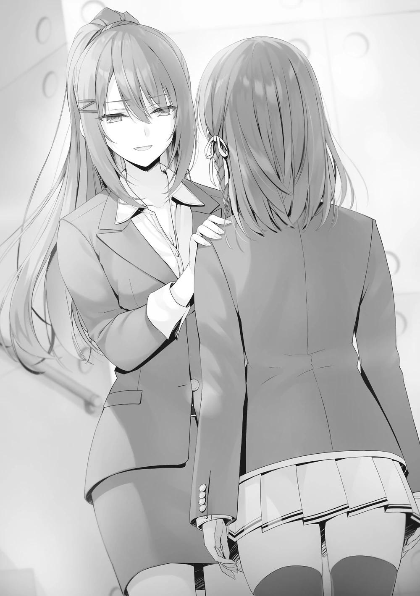
Se puso nerviosa, pero entonces volvió a mirarme a los ojos. Por un momento, no tuve palabras para su educado y estricto, pero sincero, comentario.
―Ha cambiado, ¿verdad, Chabashira-sensei?
No tenía intención de hablar de ello, pero lo solté de todos modos. Era porque así lo sentía sinceramente.
―¿Es raro que, después de ser fría durante mucho tiempo, ahora haya empezado a comportarme como una profesora?
―Me sorprendió un poco, pero no es raro.
―¿Es así? Entonces está bien.
Quizás también pensó que había hablado demasiado, porque se aclaró la garganta y cambió de tema.
―¿Qué hace Ayanokouji con respecto a Kushida?
―¿Ayanokouji-kun? No, no está haciendo nada en particular. Si tuviera que hablar con franqueza, creo que simplemente está observando lo que estoy haciendo.
―Ya veo. ¿Así que él cree que esto es algo que debes resolver tú sola?
―Puede que simplemente no quiera seguir mis planes egoístas.
―Hm, no estoy tan segura. Durante el incidente con Kushida, tomó medidas drásticas. Si no confiara en ti, probablemente te habría dejado sola.
―Tiene un buen concepto de Ayanokouji-kun. Pero recuerdo que dijo que era el más defectuoso entre nosotros.
―Recuerdas muy bien ese comentario de entonces.
―Es más sobresaliente de lo que la OAA puede evaluar.
―Parece que ahora confías y lo valoras mucho más.
―Puede que tenga algunos problemas con su personalidad, pero no es el único... ¿Qué quiso decir cuando dijo eso? ¿O se equivocó?
Él es, sin duda, brillante, y está más tranquilo y sereno que yo. No puedo pensar en ningún aspecto de él que merezca ser ridiculizado como defectuoso.
―No hay necesidad de tomar todo lo que digo tan en serio. ¿No has pasado mucho más tiempo con él que yo?
―Aun así, quiero escuchar su opinión.
―...Bueno, mi opinión sobre él no ha cambiado. Más bien, creo que ahora estoy más segura de mi evaluación.
Es defectuoso. Ella seguía estando segura de que era un hecho.
―Sin embargo, ¡es demasiado pronto para que te preocupes por eso!
Después de todo, hay otros problemas urgentes que debes resolver.
―Sí, tiene razón.
Aunque sin duda sentía curiosidad por el tema, podría volver a él más tarde.
Tenía que hacer que Kushida-san, Wang-san y Hasebe-san volvieran a la escuela.
―¿Es difícil tratar con Kushida?
―Es como si golpeara el aire. No importa cuántas veces vaya a su habitación y la espere, no abre la puerta.
―Eso es un problema.
Dejando a un lado los fines de semana, ella puede ir a la tienda de comestibles o a otros lugares tanto como quiera mientras yo estoy en la escuela los días entre semana. No tendría sentido esperar a que se le acabaran las provisiones.
Además, aunque intentara llamarla, su teléfono no estaba encendido.
―Me alegro de haberla oído moverse cerca de la puerta.
―No podemos decir que no se mueva. Dicho esto, si no haces algo, la situación no va a mejorar, y poco a poco va a empeorar.
―Entiendo...
―Si no puedes hacer nada por tu cuenta, tienes la opción de tomar la ayuda de otros.
―Un compañero de clase que me ayudaría felizmente a persuadir a Kushida... eso sería alguien como Hirata-kun. Pero ahora mismo, pedirle ayuda está fuera de lugar.
En ese momento estaba tratando con Wang-san y mediando para Shinohara-san y los demás.
―Si fuera Hirata, entonces... no, no estoy segura cuando se trata de Kushida. Si le llevas a una persona franca, bondadosa y virtuosa, no me la imagino abriéndole la puerta sin más.
―De alguna manera entiendo lo que quiere decir, sensei. No es una persona honesta.
―Por desgracia, no se me ocurre la persona adecuada para el trabajo, pero no sería mala idea intentar buscar a alguien fuera de sus compañeros.
―Sin embargo, ir a persuadir a Kushida significaría conocer su verdadera naturaleza. Contárselo a alguien de fuera sería un perjuicio para nuestra clase.
―En definitiva, es necesario equilibrar los pros y los contras. Aun así, eso no significa que no se pueda contar absolutamente nada a nadie. Por ejemplo, algunos de los profesores ya conocemos el pasado de Kushida y, entre los que no lo conocen, probablemente haya profesores que se quedarían callados si los consultaras. No creo que sea un secreto tan grande.
Alguien que pudiera influir en los sentimientos de Kushida... No, incluso sin influir en sus sentimientos, si hubiera alguien que pudiera hacer algún tipo de avance...
―Ya es hora de que me vaya. Puede ser una molestia, pero déjame decir una última cosa. Lo más importante es lo que quieres hacer con Kushida.
Piénsalo bien.
Lo que quiero hacer con Kushida...
―Muchas gracias. Gracias a usted, he encontrado mi determinación.
Todavía no había encontrado la respuesta, pero volví a llenarme de energía para volver a intentarlo.
―No pienses en ello. Como maestra, hacer al menos esto debería ser lo natural.
Tras decir eso, Chabashira-sensei se dirigió a la sala de profesores. Seguí observándola desde las escaleras hasta que ya no pude ver su espalda.
PARTE 1
Cuando volví del centro comercial Keyaki después de las compras, vi a Ibuki de pie junto al ascensor, mirando fijamente a la entrada. Ignorándola, pulsé el botón del ascensor, lo que la hizo estallar de ira.
―¡No me ignores!
Se acercó a mí, presionándome para que le respondiera con tal vigor que casi me escupe en la cara. Me preparé para una larga batalla de desgaste, pero honestamente, ¿de qué se trata esto? Por lo intensa que es, estoy segura de que me seguirá aunque suba ahora al ascensor. Obligada a detenerme, tuve que ver cómo se cerraba el atractivo ascensor y partía.
―¿Ignorarte? ¿Tienes algo que necesites de mí?
―¡Esto! Este mensaje, ¿qué significa? Contéstame.
Me miró fijamente y me puso la pantalla de su teléfono en la cara. A pesar de que la luz brillante me daba en los ojos, todo lo que podía ver era un brillo blanco.
―¿Eres idiota? Está demasiado cerca, no puedo ver nada. ¿Apártate un poco?
―¡Bien! ¡Aquí!
Sólo lo apartó un poco, pero aún así pude leer rápidamente lo que estaba escrito con sólo una mirada.
―Qué mensaje tan bien escrito, estoy impresionada. Claramente, una persona muy inteligente debe haberlo escrito.
―¡No te hagas la graciosa! Y lo que es más importante, ¿qué parte de esto grita inteligencia?
―Pues si lo lees en voz alta, puede que lo entiendas.
―¿HUH? 'Si te expulsan por algo que no tiene nada que ver conmigo, naturalmente, contará como una derrota en mi contra. No serás tan idiota,
¿verdad?'... ¿Cómo es esto inteligente? No, olvídalo, ¡dime qué significa!
―¿Acabas de leerlo, pero todavía no lo entiendes?
―No, en absoluto. Lo he pensado toda la semana y todavía no lo entiendo.
¿Qué, eso es un problema?
Ella resopló con fuerza y se cruzó de brazos. Era un consejo muy directo, y que ella no lo tomara como tal, era inesperado... Bueno, me gustaría creer que al menos tuvo un efecto en su subconsciente.
―Bueno, aunque te lo diga ahora, no tiene sentido. Y parece que no era un problema después de todo.
―¿Ja? ¿Qué significa eso? Explícalo, para que pueda entenderlo.
Esta chica es realmente lenta en la comprensión. ¿Podría ser realmente que sus habilidades atléticas y de pelea son todo lo que tiene...
―Te estaba dando una estrategia secreta para que no te expulsaran. No parece que les gustes a tus compañeros, y si hubiera una moción que implicara la expulsión, podría haber significado problemas para ti. Pero con esto, podría animarte y asegurarme de que te quedaras aquí aunque lo odiaras, ¿no?
―No me digas... ¿Estabas preocupada por mí?
Se sorprendió... No, la mueca de su cara mostraba que estaba disgustada desde el fondo de su corazón.
―No pongas palabras en mi boca. Todavía hay cosas en las que necesito tu ayuda. Estar escaso de personal podría ser un problema, y de todos modos,
si te hubieran expulsado en el examen anterior, la clase de Ryuuen habría ganado 100 puntos sin inconvenientes al eliminarte. Si tuvieras que ser expulsada, sería mejor para mí que te fueras durante un examen que tiene una penalización.
Incluso después de la explicación, no parecía que ella entendiera ni lo más mínimo.
―De todos modos, es suficiente. Vamos a casa.
Ella seguía furiosa en silencio, pero me dejó pasar. Siguió mirándome de reojo mientras yo volvía a llamar al ascensor. Cuando entré en él, me di cuenta de que Ibuki no me seguía.
―¿No vienes?
―No me apetece entrar en un ascensor contigo.
―Qué niña. Ya hicimos esto muchas veces, incluso como una coincidencia.
―Ahora mismo no quiero.
―Ya veo. Haz lo que quieras.
Pulsé el botón para cerrar el ascensor y me dirigí hacia la planta en la que vivía Kushida-san. A partir de aquí, tendré que perseverar hasta que abra su puerta.
Mientras el ascensor subía, me pregunté si realmente podría conseguir un avance hoy. Si no probaba diferentes tácticas, no creo que nada cambie. Siendo así, lo que pretendía hacer sería sólo una pérdida de tiempo.
El ascensor llegó a la planta de destino y se abrió. Sin embargo, me quedé atrapada en el lugar, y no di un solo paso para salir. Qué debía hacer, qué debía hacer para poder tener una conversación cara a cara con Kushida-san... Sólo estaba perdiendo el tiempo, y finalmente las puertas del ascensor se cerraron.
Antes de que pudiera pulsar el botón para abrirlas de nuevo, el ascensor se movió, dirigiéndose hacia abajo.
―De verdad, todo esto es inútil.
Con mi mente divagando de esta manera, aunque lograra ponerme cara a cara no puedo pretender convencerla de que vuelva. Me dio pena desperdiciar las amables palabras que me dirigió antes Chabashira-sensei.
El ascensor regresó al primer piso. La puerta se abrió e Ibuki entró en el ascensor. Estaba mirando su teléfono, así que no se había fijado en mí. Al fin se dio cuenta de que no estaba sola, levantó la vista, me vio y exclamó.
―¿Por qué estás aquí?
Sinceramente, no era raro que se sorprendiera por esto.
―¿No vas a subir?
―Lo dije, ¿no es así? ¿Intentas enfadarme?
Sacudí la cabeza, y luego alcancé el botón de cierre. En ese momento, mi mente se fijó en Ibuki al ver que evitaba mi mirada. En el último momento, opté por pulsar el botón de apertura y la miré intensamente. Ella me miró, recelosa de que la puerta del ascensor no se cerrara incluso después de tanto tiempo.
Tal vez la clave del avance se encontraba en un lugar totalmente inesperado.
¿No era este el momento adecuado para utilizar el consejo de Chabashira sensei?
―¡Qué pasa!
―... Si va a ser así, creo que puedo usar tu ayuda.
―¿Eh?
Será una gran apuesta, pero ella podría ser exactamente lo que necesito para romper este impasse. Una emboscada inesperada podría ser la manera de hacer un avance invisible. Aunque pensaba que era una idea descabellada, ahora mismo no tenía más remedio que hacer lo que fuera necesario para intentarlo.
―Sube.
―¿Cuántas veces tengo que decirte que no voy a subir?
―Ya es suficiente. Súbete.
―... ¿Qué te pasa?
Me aseguré de que Ibuki se subiera a pesar de su irritación, y luego pulsé el botón de cierre.
―Hay algo para lo que necesito tu consejo.
―¿HAAAHH? ¿Para ti? No, de ninguna manera me encargaré de algo así.
―Pero te subiste al ascensor.
―¡Me arrastraste a él!
―Ya te subiste, así que ¿por qué no aconsejarme en él también?
―Eso no tiene ningún sentido.
―No te hará daño ni nada. De todos modos, se trata de...
―¡No sigas con lo tuyo! Aunque el hecho de tener que darte un consejo me hace daño...
Mientras estábamos de aquí para allá, llegamos al piso de Kushida-san. Me bajé primero y me giré hacia Ibuki-san, que seguía en el ascensor.
―Bájate. Nunca se sabe quién está escuchando aquí. Por si acaso.
―No me importa. Voy a volver. Ni siquiera entiendo lo que está pasando.
Ibuki pulsó el botón de cierre para volver a casa, pero el ascensor no se cerró.
―Mira, hasta el ascensor quiere que te bajes.
―¡Eso es porque estás impidiendo que se cierre pulsando el botón de Afuera!
―Por cierto, ¿tienes algo que te guste? ¿Algo que te parezca importante?
―... ¿Qué tiene que ver eso con esto?
―Sólo tienes que decírmelo.
―──un…
―¿Nu?
―No, umm, ¿qué era? La verdad es que no se me ocurre nada, ¿fresas, algo así?
―Vaya, hay un lado inesperadamente lindo en ti... Sigamos adelante y olvidemos esta conversación.
―¡Tú eres la que preguntó! Y lo que es más importante, ya basta, suelta el botón.
Como ella estaba cada vez más irritada, decidí ir al tema. Me había dado cuenta de que sería mejor para ella también si le hacía partícipe rápidamente de la situación.
―Estoy a punto de ir a ver a Kushida-san.
―¿Y? ¿Puedes ir sola?
Ella estaba presionando el botón de cerrar, pero por supuesto, eso no tenía sentido.
―No puedo hacer eso. Durante la última semana, no he podido verla, y no viene a la escuela. Aunque vaya a su habitación, no da señales de salir. Quiero que la saques a rastras. ¿Entiendes?
―¿Eh? Espera, ¿por qué tengo que hacer esto?
―Me estarías ayudando a sacarla.
―No me importa. Ni siquiera ayudo a mis propios compañeros, ¿así que no hay manera de que pueda ayudar a tu clase?
Cuando saqué esta conversación, ya había predicho que Ibuki no estaría inmediatamente de acuerdo. Pero si había algo para ella, era otro asunto completamente distinto.
El ascensor había empezado a emitir un pitido de aviso ya que la puerta estuvo abierta durante mucho tiempo.
―Bien. Si es así, te daré una recompensa si tienes éxito.
―No la necesito. Si crees que voy a trabajar por dinero estás muy equivocada.
―Sí, tienes razón en eso. Sin embargo, mi recompensa será sin duda algo que realmente quieres.
―... Aunque no creo que haya nada de eso...
No era fácil atraer a Ibuki, pero si usaba algo, su pensamiento daría un giro.
―En el festival deportivo, podemos elegir libremente 5 competiciones,
¿verdad? Eres libre de elegir en qué competiciones quieres participar y en qué grupos. Esto era una disposición para ayudarnos a superar las 5 pruebas requeridas, o, por decirlo de otra manera, su propósito principal es permitir que uno evite a los oponentes poderosos... pero por otro lado, también es un sistema que te permite elegir a tu oponente.
Ibuki había estado poco dispuesta hasta ahora, pero tras esa explicación sus ojos se iluminaron.
―Conociéndote, para luchar contra mí, no has reservado plaza en ninguna competición, y sólo me estás esperando, ¿verdad? Por desgracia para ti, no voy a tomar mi decisión hasta el último momento. Dependiendo de la situación, es probable que aspire al último puesto libre en las competiciones. En otras palabras, nunca tendrás la oportunidad de desafiarme, lo que precisamente quieres y estás esperando.
―... Si te ayudo, ¿me dejarás luchar contra ti?
―Sí. Lucharé contigo en una competición de tu elección. Por supuesto, por el bien de mi clase, no me contendré, así que no ganarás ningún punto. Si te parece bien, lo haré.
―Ja. No es interesante. Pero no me conformaré con uno. Como mínimo, tres. Si jugamos al mejor de tres, te ayudaré.
―¿Tres? Eso es demasiado codicioso...
Mientras la señal de aviso seguía sonando, fingí que pensaba.
―Si no, no me rendiré.
No se equivoca. Si tuviéramos una sola competencia, no serías capaz de aceptar el resultado. Estoy de acuerdo con eso. Dicho esto, con dos o cuatro competiciones existía la posibilidad de un empate. Así que, desde el principio, esperaba que acabáramos con tres encuentros, pero si hubiera empezado sugiriendo eso, ella seguramente pediría cinco combates. Si está de acuerdo con tres encuentros, entonces era exactamente donde yo quería estar.
―......Bien. Como deseas, competiré contra ti en tres duelos. ¿Está bien?
―Hecho. No puedes echarte atrás ahora.
Ella salió del ascensor después de eso. Solté el botón y la puerta del ascensor se cerró lentamente.
―Por supuesto. Pero me ayudarás hasta que se resuelva esta situación.
―¿Puedes decirme claramente cuál es el objetivo?
―Hacer que Kushida-san venga a la escuela a partir del lunes. Eso es todo.
―Suena bastante fácil. Espera, ¿por qué es un gran problema que Kushida se tome un descanso de la escuela? ¿No podría estar simplemente indispuesta? Todo el mundo tiene días así.
Chabashira-sensei dijo que el secreto de Kushida-san todavía no era muy conocido. Pero lo importante era no filtrar imprudentemente la verdad. Teniendo en cuenta ese consejo, decidí contarle todo. Si Ibuki resultaba ser del tipo que lo filtraba a la gente de su entorno, eso significaría que estaba más ciega que un murciélago. Aunque me estuviera arrinconando, ahora mismo necesitaba una forma de salir del atolladero.
Le conté los detalles sobre Kushida-san. Por supuesto, no traté de ocultar extrañamente ninguna información. Incluso Ibuki debería estar al tanto de cómo ha sido Kushida hasta ahora. Aun así, le expliqué la verdadera personalidad de
Kushida, cómo piensa e incluso los detalles de cómo hemos llegado a esta situación.
Mientras yo hablaba, Ibuki parecía desinteresada, y escuchaba mientras miraba en otra dirección. Normalmente, alguien que actuara así me habría disgustado, pero verla hacerlo me hizo sentir aliviada. Cuando terminé de explicarle por qué se había ausentado de la escuela y la situación actual, Ibuki soltó un suspiro exasperado.
―Qué inútil.
No estaba especialmente interesada en la verdadera personalidad de Kushida ni nada por el estilo, así que simplemente estaba expresando ese pensamiento.
―No te sorprende, eh. ¿Sabías algo?
―Nada. Pero no creo que nadie sea tan buena persona. Ni Kushida, ni Hirata, ni siquiera Ichinose. Creo que cualquiera que se ponga la imagen de
'¡soy un buen tipo!' tiene garantizado un lado oscuro debajo.
―Esa es una forma interesante de verlo.
Puede ser sorprendentemente precisa en algunos aspectos.
―Entonces, ¿piensas bien de Ryuuen-kun? No pretende ser bueno... o más bien, considerando cómo es por dentro, no es una buena persona.
―Eso lo odio más. Y sobre ese tema, también me empieza a disgustar la gente que parece inofensiva, como Ayanokouji. ¡Esos pedazos de mierda me enfurecen!
Con todo eso, ¿acaso existe una persona de la que Ibuki pueda tener una opinión favorable?
―Bueno, no odio arrastrar a alguien así. En todo caso, me dan ganas de preguntarle qué sintió al ver que su fachada de niña buena era falsa.
Puede que tenga que evitar que vaya demasiado lejos, pero también puede que tenga que aprender de ella a ser así de contundente.
―Entonces, ¿Kushida está escondida en su casa, y sólo tengo que sacarla a rastras?
―Sí.
Con bastante confianza, se dirigió casualmente a la habitación de Kushida.
―¿Piensas hacerlo sola?
―Sólo cállate y mira.
Si ese es el caso, veamos lo que tiene.
Cuando Ibuki se acercó al frente de la puerta de Kushida, de repente se agarró el estómago y se agachó.
―...... ¡Ah, me duele, ME DUELE!
Sus gritos de agonía se oían por todo el pasillo. Por un momento, no pude entender lo que estaba pasando, y me quedé con la mirada perdida ante la escena que tenía delante.
―Me empezó a doler el estómago de repente... ¡Yo... no puedo llegar a mi habitación....!
Eh... ¿un dolor de estómago? No me digas, ¿esto es lo que se te ocurrió?
¿Intentas que te abra la puerta para poder usar su baño? Además de lo cliché que es esto, tu actuación es desastrosamente atroz... Para empezar, la habitación de Ibuki ni siquiera está en este piso. E incluso si su piso fuera el mismo, definitivamente sería más rápido volver a su propia habitación.
―Ba... Baño, ¡déjame usar tu baño!
Ibuki llamó a Kushida-san mientras golpeaba el timbre. Ella mantuvo esto durante 10 segundos, pero no parecía que Kushida-san fuera a salir para nada.
Este era un problema que tenía desde antes de este caso... Quería agarrarme la cabeza con las manos por lo mal que había hecho la elección del personal.
Después de que la actuación continuara durante otros diez o veinte segundos, Ibuki se levantó, puso cara seria y volvió hacia mí.
―No salió, ¿verdad?
―En primer lugar, estoy muy segura de que está en su habitación.
―¿De verdad? Si esa actuación no funcionó, esa Kushida es una auténtica maravilla.
―A-ah, sí.
Parecía hablar en serio, así que me abstuve de replicar.
Le ordené que me siguiera en silencio y abrí la caja que cubría el contador eléctrico de la habitación de Kushida-san.
―Puedes ver el disco que hay aquí, ¿verdad? Si este disco está girando lentamente, entonces es probable que ella no esté ahí dentro. Sin embargo, si ella está allí usando su TV o computadora, entonces debería estar girando rápido.
El disco estaba girando bastante rápido.
―Con esto, entiendes que hay una alta probabilidad de que ella esté ahí dentro, ¿verdad?
―Ese es el tipo de cosas que un ladrón sabría...
―Busqué muchas cosas mientras la esperaba el fin de semana pasado.
Tienes prohibido abusar de este conocimiento.
No, yo no haría eso, parecían decir los fríos ojos de Ibuki.
―Entonces, ¿has pensado en algún otro método? Si no es así, puede que tenga que sentarte en el banquillo──
―Hemos ido por el camino equivocado.
―¿Eh?
―Voy a obligar a Kushida a salir de su habitación. Esto será todo o nada, pero está bien, ¿no?
Quería que me mostrara su base para esa afirmación, pero después de verla toda revolucionada decidí confiar en ella una vez más. Me distancié un poco de ella, y una vez más se dirigió a la puerta.
―Hola, Kushida. He oído todo sobre ti. El hecho de que estuvieras engañando a todo el mundo hasta ahora se reveló durante el examen, ¿verdad?
Mientras me preguntaba qué iba a hacer, empezó a reñir a Kushida. Consideré detenerla por un momento, pero aunque lo hiciera, sería inútil. Aunque la parara en este punto, probablemente Kushida-san ya la había oído.
―¡Seguro que te lo mereces! ¿Qué se siente perder tu posición como la más popular hasta ahora? Bueno, si estamos clasificando a la gente buena, entonces Ichinose probablemente esté por encima de ti. ¿Qué se siente al caer al segundo puesto?
En comparación con su actuación inútil de antes, el método que utilizó para irritar a Kushida-san fue mucho mejor. La parte más agravante de esto era probablemente que Ibuki le estaba diciendo tales cosas. Sin embargo, no hubo ni un sonido de respuesta. Supongo que una medida tan burda no iba a funcionar...
Ibuki continuó hablando frente a la puerta, con la misma expresión.
―¡Vamos, muéstrame tu desagradable cara!
Usando los dedos de su pie derecho, golpeó la puerta con una fuerza considerable.
―Tengo mucho estrés acumulado por culpa de Horikita. No puedo evitar querer desahogarme.
Los verdaderos sentimientos de Ibuki no implicaban salvar a Kushida en lo más mínimo. Ella desahogó esos sentimientos hacia Kushida-san, que probablemente estaba al otro lado de la puerta.
―Patear la puerta de la habitación de alguien podría no ser tan malo. En cierto modo entiendo cómo se siente Ryuuen.
En este momento, parecía que golpear la puerta una y otra vez era por su propio bien. Después de varias patadas, un sonido vino del interior de la habitación. A pesar de ello, Ibuki se dispuso a patear, pero entonces la puerta de la habitación se desbloqueó de repente.
―─── Me estás molestando, ¿podrías dejar de hacerlo, Ibuki-san?
Apareció Kushida-san, vestida con ropa informal. Pensar que ella reaccionaría ante la violenta forma de hacer las cosas de Ibuki... ¿En qué ha consistido todo mi esfuerzo durante toda esta última semana? Me quedé ligeramente sorprendida.
―¡Eh, saliste! En definitiva, supongo que eres esa clase de persona.
Después de conocer la personalidad de Kushida-san en detalle, puede que haya algunas cosas que Ibuki entienda mejor.
―Ese malentendido es irritante, ¿podrías parar?
―¿Eh? ¿Es ese el caso? Creo que soy más agradable que tú con tu falsa personalidad.
―Nunca he pensado positivamente en ti ni siquiera una vez. Lo mismo que Horikita-san de allí.
Al ver que ha añadido "san" a mi nombre, parece haber recuperado la compostura. Como no tenía sentido esconderse, me dirigí a su habitación sin reservas.
―Si está bien, ¿podemos ir a tu habitación? Estoy cansada y harta de tanta espera.
―Bueno, aunque quisiera cerrar la puerta, sería inútil.
Ibuki había metido un pie firmemente en el hueco de la puerta, así que no podía cerrarla. Kushida se quedó mirando el pie que Ibuki había metido y pisó con todas sus fuerzas.
―¡Ay!
Siguió apretando su pie contra el de Ibuki, pero ésta no mostraba ninguna señal de sacar el pie.
―Realmente no se cierra, ¿eh?
―¡Para ya!
Mientras abría la puerta a la fuerza y entraba, Kushida-san retrocedió rápidamente y nos mostró el camino hacia dentro con cara seria.
―Adelante. Puede que sea la primera y la última vez que lo hagan, así que tómense su tiempo.
Era una forma exagerada de decir las cosas, pero yo ya estaba preparada para ello.
Para Kushida-san sería sencillo dejar que el estado actual de las cosas continuara para siempre y poner a la clase en un aprieto. No había duda de que nos había invitado porque ya había tomado algún tipo de decisión. Esta era probablemente mi primera y última oportunidad. De una mirada, pude ver que ella mantenía una habitación ordenada. Me dio la impresión de que era mucho más fanática de la limpieza que yo.
―¿Hmm? Bueno, bueno, seguro que cuidas del lugar, ¿no?
Ibuki miró alrededor de la habitación, comentando con una mezcla de admiración y sorpresa. Al ver a Ibuki así, Kushida respondió.
―Probablemente tu habitación sea un desastre, con la ropa sucia esparcida por donde te la quitaste, ¿no?
―Ngh... ni siquiera has estado en mi habitación, ¿cómo vas a saberlo?
Se mirara como se mirara, era evidente que había dado en el clavo...
―Siéntate. No voy a proporcionar ningún aperitivo o bebida, pero realmente no te importa, ¿verdad?
―Sí, está bien.
Cuando nos animó a sentarnos, Ibuki y yo nos miramos por un momento antes de tomar una buena distancia entre nosotras al sentarnos. Kushida-san se sentó en el extremo opuesto con la mesa entre nosotras, haciendo que la configuración fuera de dos en uno.
―Pues bien. Llevas mucho tiempo armando escándalo frente a mi habitación. ¿Qué buscas?
―Ya lo sabes, ¿no? Te has quedado aquí, ausente de la escuela durante toda una semana. Se trata de eso.
―Huh.
Kushida continuó tras esa respuesta a medias.
―¿Esperas que vaya a la escuela después de todo lo que ha pasado? No es que me sorprenda, pero también dejaste que esa chica supiera de mí, ¿no?
Algo que hiciste por despecho, supongo.
―No es eso. Ella no va a parlotear sobre esto a alguien más.
―¿Oh? ¿Confías en ella?
―No lo hago. Es sólo que le costaría encontrar a alguien con quien hablar.
―Oye.
Ibuki golpeó su puño contra la mesa y me miró con desprecio, pero la ignoré. Al fin y al cabo, era la verdad.
―Aunque ese sea el caso, seguro que no estás pensando en cómo me siento. Estoy herida.
―¿Tienes derecho a decir eso?
―Aunque no lo tenga, Horikita-san, eso no es razón para que ignores mis sentimientos.
Rápidamente lanzó una respuesta tajante.
―Pasemos de eso. Comprendo perfectamente que puedo tener carencias en algunos aspectos, pero al principio fuiste tú quien se dirigió a mí con hostilidad. ¿No es así, Kushida-san?
Para mí, Kushida-san era simplemente una compañera de clase. Sin embargo, desde el principio hasta ahora, ella me vio como alguien a quien tenía que expulsar.
―No voy a negar eso. Pero no se podía evitar; no podía soportarlo.
―Me pregunto qué debería haber hecho. Incluso recordándolo ahora, no se me ocurre una respuesta clara.
―Lo entiendo. Pensé en lo mismo muchas veces y luego llegué a una conclusión. No podía soportar que Horikita-san estuviera aquí, así que ¿no debería dejar voluntariamente la escuela por mi bien?
―¿Podrías dejar de decir cosas ridículas? Eso no es una conclusión, es simplemente absurdo.
―Era absurdo, ¿no? Sin embargo, ese absurdo era la única opción que tenía.
Aunque estaba respondiendo a mis preguntas, era realmente difícil llamar a esta una conversación amistosa. Sin embargo, esos debían ser los verdaderos sentimientos de Kushida-san. Al principio había intentado seguir la conversación, pero los ojos de Ibuki fueron perdiendo vida.
―¿No puedes dejar todo esto atrás y cooperar?
―Sabía que dirías algo así, pero no me hagas reír.
―Es que tienes tanta habilidad y valor.
―Lo sé.
Respondió inmediatamente, sin mostrar el más mínimo indicio de modestia.
―Seguro que piensas mucho de ti misma...
Ibuki murmuró en voz baja, pero Kushida continuó en su respuesta, sin reconsiderar lo que dijo.
―¿De verdad? Aunque no lo creo.
―Yo tampoco lo creo. No creo que tus habilidades sean tan grandes.
¿Quieres lanzarte?
Diciendo eso, apretó los puños.
―Eres más idiota de lo que imaginaba, Ibuki-san. Eso no es lo que significa la habilidad, ¿sabes? ¿Por qué no echas un vistazo a la OAA? En esta escuela, nuestra habilidad está determinada por lo buenas que sean esas notas.
Creo que la diferencia entre tú y yo es mayor de lo que crees.
Intrigada, Ibuki le tomó la palabra y sacó su teléfono para comprobar la OAA. Y
cuando vio y comparó sus puntuaciones de Habilidad General, su cara se puso pálida y cerró el teléfono sin decir nada.
―Me gustaría que pusieras en práctica esa gran fuerza tuya por el bien de nuestra clase. Si sigues ausentándote sin permiso más que esto, eventualmente perderás tu asiento en nuestra clase.
―Aunque ya está perdido. Puede que tengas razón. Estabas preparada para la animosidad de la clase cuando te opusiste a mi expulsión, ¿verdad? Por eso eres tú la que tendrá problemas si no me convierto en un recurso. Entiendo perfectamente por qué estás tan desesperada por convencerme así.
Kushida-san también debía ser muy consciente de que la situación de la clase estaba en sus manos.
―Ya perdí. Ya no tengo un lugar al que pertenecer. Sin embargo, la razón por la que me quedé callada al final del Examen Especial de Consentimiento Unánime fue para herirte, aunque fuera un poco. Si continúo ausente todavía en el futuro, ¿no castigará la escuela a la clase que provocó que un alumno dejara de ir a la escuela? Y entonces la responsabilidad de ese castigo será tuya.
Efectivamente, si continuaba ausentándose de esta manera, la clase seguirá recibiendo daños, como si estuviéramos envenenados. Siempre existía la
posibilidad de que un examen especial la dejara sin poder continuar con esta estrategia, pero aun así Kushida-san habría llevado a cabo su venganza de forma brillante.
―No ganas nada con esto.
―Es un poco tarde para eso. Ya no tengo nada que perder, así que ¿no es normal que intente arrastrarte conmigo?
―¿Eh? Eso no es normal. No te dejes llevar sólo porque tus estadísticas en la OAA son un poco buenas.
―Te invité a entrar como una broma, Ibuki-san, y puede que haya sido la elección correcta. Es curioso. Si sólo estuviéramos Horikita y yo, la conversación habría sido aburrida. Ciertamente, puedo haberme equivocado al decir "normal".
Lo que es normal para mí es definitivamente anormal para otros.
―¿Así que admites que eres anormal?
―No estoy satisfecha si no soy la número uno. No puedo permitir las cosas que son inconvenientes para mí.
―Me das asco.
―No puedo evitarlo. No puedo cambiar mi forma de pensar. Nací así.
Aunque la gente estuviera resentida o se desquitara con ella, no le importaba.
Era incluso más inquietante que de costumbre verla tan tranquila, como si hubiera alcanzado la iluminación. Estaba siendo más difícil que cuando gritaba y exponía su debilidad.
―Hasta que la escuela me obligue a hacer algo, voy a seguir saltándome las clases.
Proclamó que de aquí en adelante estaba dispuesta a continuar su ataque hasta su último aliento. Kushida-san, que era -en cierto sentido- invencible, nos lo explicó con desinterés.
―¿Qué vas a hacer?
―¿Qué voy a hacer? No tengo más remedio que seguir hablando contigo así.
―Sin plan, ¿eh? Una gran diferencia con Ayanokouji-kun.
Al escuchar el nombre de Ayanokouji-kun, las orejas de Ibuki se agudizaron.
―Pensé que tenía ventaja, pero él nunca perdió los nervios. Al contrario, elaboró un plan que utilizó en mi contra. Creo que es alguien de quien no debería haberme enemistado.
―Él... eso es cierto. Puede que tenga la capacidad de ver muchas posibilidades de cómo se desarrollan las cosas en el futuro. Aunque me he dado cuenta hace poco.
―Entonces eres como yo.
―Correcto.
Después de eso, se produjo un poco de silencio.
―Tú también eres realmente una idiota, Horikita-san. Las cosas habrían sido más fáciles si me hubieras apartado.
―Supongo que puedo ser una idiota. No se puede evitar que la gente piense que mi intuición o mi confianza eran infundadas. Sin embargo, no tengo dudas en el hecho de que eres una estudiante sobresaliente. Aunque tus acciones contra las personas que conocen tu pasado -es decir, Ayanokouji-kun y yo- han tenido un impacto negativo, al menos no se puede cambiar el hecho de que has contribuido a nuestra clase durante el último año y medio.
Ella mantuvo sus calificaciones a un nivel en el que estar orgullosa de ellas no sería vergonzoso.
―Si causar problemas a la clase es realmente tu principal prioridad, entonces puedes tener éxito en tu venganza si sigues ausente de esta manera.
Pero, más importante aún, ¿es eso todo lo que quieres?
―Me pregunto a qué quieres llegar.
―Estoy preguntando si eso es suficiente para satisfacerte.
―Es suficiente para satisfacerme; actualmente no deseo más que eso. No importa cómo plantees tus palabras para intentar convencerme, es inútil. No voy a aceptar nada.
"Convencer". Cuando escuché esa palabra, sentí como si algo se me alojara en la garganta. Efectivamente, quería hacer que Kushida-san viniera a la escuela.
Quería que demostrara que mi elección no era errónea. La persona que estaba frente a mí sabía eso más que nada. Sin embargo, eso era sólo por mi bien. Era difícil decir que era la respuesta más adecuada para Kushida-san.
―Puede que me haya equivocado.
―¿Qué quieres decir?
―Vine aquí con la intención de "convencerte". Pero no es eso. Al final eso fue sólo por mi bien y el de la clase. No tenía en cuenta cómo te sientes.
―¿Qué? ¿Esta vez pretendes romper a llorar de pena?
―Es que me di cuenta de que traerte a una escuela a la que no quieres ir es un error.
―Si ese es el caso, entonces nuestra conversación ha terminado. Si te tomo el pelo entonces naturalmente caerás. Estaré feliz si sufres tu larga vida escolar sin mí.
―Me parece bien. Pero acabarás sufriendo al mismo tiempo.
―¿Sufriré? ¿Qué?
―Porque aunque todavía tienes un lugar al que volver, vas a terminar perdiéndolo.
―Empiezas a decir cosas muy egocéntricas. Ya no tengo un lugar al que volver.
Cuanto más pensaba en ella, más se agolpaba en mi interior cierto sentimiento.
―Me irrita verte.
―... ¿Eh?
―Aunque me acerque a ti, es inútil ya que eres una niña. En resumen, sólo has tomado las decisiones equivocadas en cada momento. No iba a desvelar tu secreto, y ni siquiera lo sabía todo, así que si no hubieras intentado expulsarme no habríamos llegado a esto. Y lo mismo ocurre con Ayanokouji-kun.
―Te lo dije, ¿no? Que no podía soportarlo.
―Eso es lo que te convierte en una niña. Atacar porque no podías soportarlo... ¿no es eso lo mismo que ser una niña?
A quien primero le llamó la atención esa palabra fue a Ibuki, que estaba escuchando en silencio. Sin pensarlo, se echó a reír. Debió de poner de los nervios a Kushida-san porque parecía irritada.
―Soporta al menos eso. Ya eres una estudiante de preparatoria, ¿sabes?
Ni siquiera puedes ir andando a la clase. No te quedes tirada en el suelo haciendo un berrinche, vamos, levántate y camina.
―Ah, no me digas, Horikita-san. Pero sólo soy una pobre chica que está herida. Si voy a la escuela ahora, entonces no me gustarán mis compañeros y las cosas no serán como antes. Llevarme a un lugar tan doloroso es injusto. No te acercarás a mí.
―No estoy en posición de decir cosas sobre los demás, pero esto es lo más lamentable que has hecho.
―...
―Mi pasado ya se ha descubierto. Ya no puedo mantener mi apariencia.
Así que voy a molestar a todos. Tu aspecto llorando en clase parecía el de una niña, pero realmente eres una niña. No, eres una niña pequeña. Me siento como si hubiera tratado con una niña pequeña.
―¡Deja de burlarte de mí!
Ella levantó la mano y la dirigió hacia mi mejilla sin piedad. Tranquilamente agarré su brazo y lo sujeté con fuerza.
―Por supuesto que quiero burlarme de ti. Me molestas a mí y a nuestra clase para tu propio disfrute. ¿Quién más haría de eso su máxima prioridad si no fuera una niña pequeña?
―¿Sólo yo debo experimentar el dolor, lidiar con él y cooperar como parte de tu clase?
―No te inventes una interpretación conveniente, ¿de acuerdo? Tienes habilidades sólidas. Como tal, debes usarlas únicamente por tu propio bien. Los que te rodean no importan. Si actúas por tu propio bien y subes a la Clase A por tu propio bien, entonces ese será sin duda tu logro. Puedes hacer lo que quieras con los privilegios especiales de la Clase A como te plazca. Si quieres hacer la misma cosa, entonces esta vez vete a un lugar donde nadie conozca tu pasado.
Mirándome fijamente, Kushida-san detuvo lo que iba a decir.
―Sólo nos queda un año y medio de escuela. No debería ser tan difícil,
¿verdad? Durante el último año y medio, sólo has mostrado a tus compañeros tu fachada de buena persona. Esto debería ser más fácil que eso. ¿O es que acaso ese es el alcance de tus habilidades?
La rabia de Kushida-san se me transmitió a través de la mano temblorosa que tenía apretada. Sin embargo, seguí con un punto más.
―Esta es la única vez que vendré a visitarte aquí. El resto lo tienes que resolver tú. Si todavía quieres convertirme en tu enemiga después de hablar tanto, entonces ya no hay remedio: quédate como una niña por el resto de tu vida.
―Así que estás diciendo... que mientras yo me detenga aquí, tú seguirás avanzando.
Aunque no se lo dijera todo, Kushida-san debería haber sido capaz de ver la situación actual.
―Serás expulsada. Yo me graduaré en la clase A y tendré mis sueños cumplidos. Es una diferencia bastante grande.
La muy orgullosa Kushida-san imaginó el brillante futuro de la persona que tanto odiaba y cerró los ojos. Si consideramos la vida escolar en términos de nuestra larga vida, no representaría más que un pequeño porcentaje.
―¿Realmente... crees que tengo una oportunidad de volver a la escuela en este momento?
―Eso depende de ti. ¿Vas a bajar ese puño levantado que tienes, o no?
Decide.
Su brazo todavía estaba lleno de fuerza. Con el tiempo, bajó el puño poco a poco.
―Te escucharé, al menos. Dime qué estás planeando, Horikita-san.
Después de todas las idas y venidas, Kushida por fin estaba dispuesta a escuchar lo que tenía que decir. Pero no podía limitarme a pasar por encima de todo para hacerla sentir bien. Tenía que darle un plan para su supervivencia y hacer que lo aceptara.
Construí y reconstruí las diversas soluciones hipotéticas que existían y llegué a la ideal.
―Después de todo eso, ¿quieres fingir amistad y vivir tu vida escolar──
―En absoluto. De todos modos, ¿no será eso imposible? Mis compañeros han visto mi verdadera naturaleza, y nada va a cambiar ese hecho, ¿verdad?
―Efectivamente. Pero, por decirlo de otro modo, todavía puedes fingir que eres amable con la gente que no ha visto tu verdadera naturaleza, ¿no crees?
Kushida-san se quedó pensativa durante un rato, pero luego murmuró:
―¿Tal vez no? ―Continuó―: Hasta ahora, sólo unas pocas personas conocían mi verdadero yo, como tú o Ayanokouji-kun. Por eso nunca dudé en mantener las apariencias. Pero ahora, ese número ha aumentado en una clase entera, ¿sabes? Y no sólo se trata de ustedes, los sabios, hay bastantes idiotas y gente de mierda ahí.
Lo que dijo fue muy importante. Pero, Ibuki reaccionó antes de que pudiera decir nada.
―¡Cómo me llamaste!
Ibuki reaccionó, enardecida por el comentario de "idiotas y gente de mierda".
―No estoy hablando de ti, ¿por qué te importa?
―Si no puedes quedarte callada, Ibuki-san, ¿puedes irte a casa?
―Oh, claro. Entonces me voy. ¿Supongo que cumplirás esa promesa?
Estaba a punto de levantarse, así que le dije lo necesario, por si acaso.
―No. Si te vas ahora, lo consideraré como que te has rendido a mitad de camino y cancelaré nuestra promesa.
―¿Huuuh? Estás bromeando... Argh, bien, me voy a callar así que termina esto rápido.
―¿Promesa? Eso es interesante.
―Si me ayudaba a llevarte a la escuela, prometí que lucharía contra ella en el Festival Deportivo. Eso es todo.
Terminé el apéndice de por qué Ibuki-san estaba aquí en este momento.
―Oh, así que es así. Me preguntaba por qué fue Ibuki-san, pero ahora está claro.
―De hecho, fue gracias a ella que pude irrumpir en tu habitación, así que de algo sirvió.
Ibuki parecía tener bastantes cosas que decir, pero se contuvo. Se notaba que quería competir contra mí, aunque requiriera mucha paciencia. Ese espíritu es impresionante.
―Volviendo al tema principal, ¿puedo entender que te resultaría doloroso seguir fingiendo después de que se haya conocido tu verdadera naturaleza?
―Sí. Si tuviera algún sentido, no me importaría esforzarme, pero ¿por qué iba a hacerlo si no obtengo nada de ello?
Hasta ahora, sobrevivía la esperanza de que pudiera seguir actuando después de que Ayanokouji-kun y yo hubiéramos sido expulsados. Pero era casi imposible expulsar a todos los de la clase. En la secundaria, Kushida-san destruyó su clase para acabar con todo cuando se encontraba en una situación similar. Por eso su plan hasta ahora había sido hacer lo mismo una vez más.
―Si no estás dispuesta, no es necesario que sigas tratando a tus compañeros de clase como lo has hecho hasta ahora.
―¿Eh?
No era sólo Kushida, esta afirmación era sorprendente incluso para Ibuki, por lo que ambas reaccionaron de la misma manera.
―Aunque tenemos una ley mordaza, no podemos estar totalmente seguros de que funcione. Por lo tanto, debemos trabajar desde la suposición de que para las otras clases, Kushida-san es problemática y tiene una personalidad oculta.
Pero así Kushida-san perdería la mitad de su potencial como arma. Era buena tanto en los deportes como en los estudios, pero no era de primera clase en ninguno de ellos. En el mejor de los casos, sólo era una estudiante de honor.
Podría ganar a Sakura sólo con su talento en bruto, pero carecía de cualquier otro punto de interés.
―Ya nadie confía en mí. No creo que todo el mundo esté contento conmigo cuando sea así. ¿No crees?
―Por supuesto, no será como hasta ahora. ¿Pero puedes decir realmente que has perdido completamente su confianza? ¿Qué opinas, Ibuki-san?
―...
―Contéstame, Ibuki-san.
―¿No fuiste tú quien me dijo que me callara?
―Te doy permiso para hablar.
―Por Dios... Decirme que me calle, decirme que hable... no soy tu secuaz ni nada parecido, ¿sabes?
―¿No quieres competir conmigo? Si es así, sólo dilo y...
―¡Argh, bien!
replicó Ibuki, casi arrancándose el pelo de la cabeza.
―Hasta ahora estabas sobreactuando como la niña buena. No creo que nadie sea perfecto y, de hecho, cómo eras antes me parece mucho más turbio.
Si tuviera que confiar en la antigua o en la nueva, quizá elegiría la nueva porque así eres más honesta.
Rápidamente soltó lo que estaba pensando. Como no había intentado disfrazarlo torpemente, Kushida-san lo entendería directamente.
―Jajaja, esa es una respuesta interesante. O debería decir que tienes una forma de pensar única. Pero no todo el mundo es un bicho raro como tú, Ibuki-san. De hecho, la gente normal me odiaría.
―Estoy de acuerdo, no es normal.
― ¡Oye!
―Pero, en un grado u otro, todo el mundo tiene dos personalidades. Ibuki-san ha reconocido que tu verdadera naturaleza es actuar para ti misma en primer lugar. Y eso es porque tu verdadera naturaleza no cambiará en absoluto.
Intentar cambiar esa verdadera naturaleza suya sería un completo error.
―Y, si no cambias tu tono o tu forma de hablar a los demás de cómo era antes, sería difícil que alguien que no haya visto tu verdadero ser por sí mismo se lo imaginara. Aunque alguien se lo explique con palabras, a la gente le cuesta entender algo que no ha experimentado por sí misma.
―¿Qué quieres decir?
―Digamos, hmm. Considera a Ichinose Honami-san. Ella es una buena persona, incluso más de lo que tú pretendías. Pero si alguien te dijera que es una persona violenta que utiliza un lenguaje soez y que no desea otra cosa que aplastar a sus enemigos, ¿le creerías rápidamente?
―...Podría ser difícil. Parece una persona genuinamente buena.
―Tengo mis dudas ―intervino Ibuki.
―Pero esas dudas no son sobre Ichinose-san, y más sobre si realmente puede existir una buena persona, ¿verdad?
―Bueno... Claro, tal vez sea difícil entender algo sin experimentarlo por uno mismo. Sólo he oído hablar de Kushida por lo que has dicho, y en realidad no he tenido esa sensación yo misma.
―¿Verdad? Como mínimo, Ichinose-san ha pasado el último año y medio siendo una buena persona. Aunque alguien te hiciera una revelación impactante sobre ella, no lo creerías. Digamos que toda su clase se alineara y te dijera que es ese tipo de persona, entonces, naturalmente, también sospecharías de ella.
Pero -incluso después de eso- no lo verías en el fondo, ¿verdad?
'Ichinose-san es violenta y utiliza un lenguaje soez'. Aunque alguien nos dijera eso, no lo creeríamos de verdad. Podríamos estar en guardia, pero hasta que no viéramos ese lado de ella no lo creeríamos.
―Eso de que no se entiende hasta que se experimenta, puede que tengas razón en eso. Hasta en las artes marciales, alguien puede explicarte un movimiento y advertirte de que es peligroso, pero no lo sentirás realmente. Pero cuando te golpea de verdad, entonces sabes realmente lo poderoso que es.
―Usando las artes marciales como ejemplo, qué parecido a ti, Ibuki-san.
―Pero mientras sigan teniendo dudas, no podré conseguir su plena confianza.
―Ahí es donde demuestras tus habilidades. No tienes más remedio que actuar bien a partir de ahora. Como mínimo, es innegable que tu capacidad de
comunicación y de mantener la distancia adecuada está por encima de la mayoría de la gente.
En este momento se desconoce si será capaz de conseguir que confíen en ella a partir de ahora.
―Eso puede ser cierto para las otras clases, pero ¿qué pasa con nuestros compañeros? Algunas personas como Shinohara-san, Wang-san y especialmente Hasebe-san deben estar resentidas conmigo. ¿Trabajarán conmigo?
―Puede que sea imposible conseguir que todos estén de acuerdo. Pero si sólo respondes con tus habilidades, puedes producir resultados.
Sólo con hacerlo mejor que la media, Kushida-san hará que los que no puedan lograr más que ella no puedan quejarse.
―Si su falta de confianza en ti se vuelve importante, te ayudaré.
―... ¿Crees que me limitaré a creer en tu palabra? Podrías traicionarme.
―Puedes tener tus dudas. Sufriré tus quejas si te traicionan.
Dado que ya lo habían hecho y la habían traicionado una vez, no tenía nada que temer en el futuro. Dependía enteramente de ella si decidía estar a la altura de las circunstancias o no. Hubo una pausa -la más larga del día- y Kushida-san cerró los ojos. Luego murmuró algo que no pude entender. Finalmente, tras llegar a una conclusión, abrió los ojos.
―Lo entiendo. Yo, sólo por mi propio bien, lucharé por esta clase y contribuiré a ella durante el próximo año y medio. No lucharé por ti, ni por nuestros compañeros. ¿Está bien?
―No tengo ninguna queja. Estoy bien mientras tus resultados estén a la altura.
Kushida-san se levantó, y esta vez no fue su puño, sino su mano izquierda la que empujó hacia adelante.
―Aquella vez fue al revés, ¿no?
Yo había extendido la mano, pero ella no respondió.
―¿Sabes que un apretón de manos con la mano izquierda significa animosidad?
―... ¿De verdad? Hm, ¿qué mano ofrecí la última vez?
―La izquierda.
Ella respondió al instante, como si lo recordara como si fuera ayer. Eso debe significar que era muy consciente del significado cuando buscaba un apretón de manos con la izquierda. Me levanté también y, encontrando su mano izquierda con la mía, la estreché.
―Es casi como si estuviéramos conmemorando nuestra animosidad.
―¿No crees que eso nos viene mejor?
―Tal vez sí.
Ella apretó mi mano con fuerza, y yo apreté la suya a su vez.
―Eso me recuerda. Hay algo que quería hacerte, Horikita-san. ¿Está bien?
―¿Una petición? ¿Qué es?
―Es...
Con una amplia sonrisa, estiró lentamente sus dos manos hacia mí. Esas manos llegaron por encima de mi cuerpo y hacia mi cara. Y mientras esperaba que me acariciara suavemente las mejillas... un dolor agudo me atravesó la mejilla izquierda y la derecha.
Tardé un segundo en darme cuenta de que era el dolor de ella tirando de mis mejillas a su antojo.
―¡¿Qué estás...?!
―Realmente te odio, Horikita-san ―Ella tiró aún más fuerte al decir eso―.
He estado tan molesta desde que nos encontramos hoy, y aunque ahora seamos aliadas sigues siendo molesta. Pensar que esto va a durar para siempre
a partir del lunes me llena de una cantidad increíble de estrés, así que tienes que darme una salida como esta, ¡al menos un poco!
Me apretó las mejillas con más fuerza aún. No parecía que fuera a aflojar pronto.
―¿No es suficiente?
―¡No, no! No estoy ni siquiera cerca de estar satisfecha.
Iba a ser amable y dejar que se divirtiera al menos un poco, pero ella se dejó llevar y no quería soltarme. Si ella no iba a parar, yo tenía mis propios planes.
Exactamente como ella había hecho, levanté mis dos manos y tiré de sus mejillas.
―¿¿¿…???
―Creo que ya es hora de que te detengas.
Actué asumiendo que ella se detendría después de probar su propia medicina, pero...
―Ofofo, ¿puedes mantener las bromas a esa tonta carrra?
No cedí, y con la suficiente fuerza como para arrancarle las mejillas, apreté aún más con las yemas de los dedos. A pesar de ello, Kushida-san no cedió ni un ápice, y tiró aún más fuerte, con una potencia superior a la que debería haber sido posible para ella.
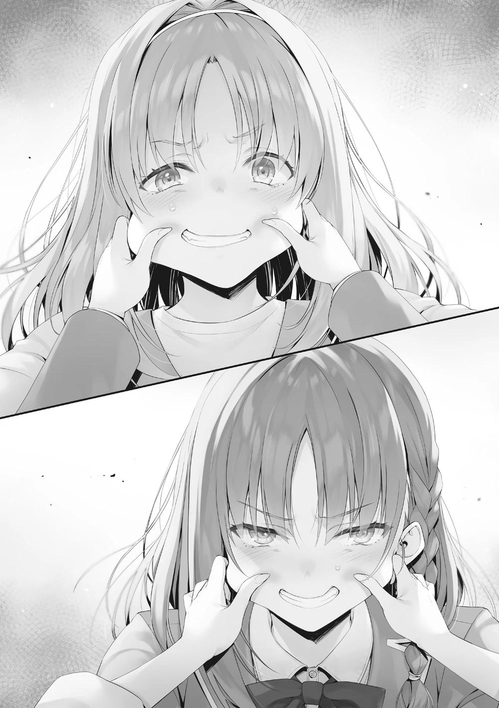
Así que se convirtió en una batalla de quién podía ser más terca.
―... ¿Van a seguir con esto hasta que se destrocen? Parecen unas malditas estúpidas, así que me voy a casa.
Dijo Ibuki, la única persona calmada en la habitación, mientras se giraba hacia la entrada y se iba.
Esta batalla de obstinación continuó durante dos o tres minutos más, y para entonces incluso el dolor había empezado a adormecerse. Nos dimos cuenta de que nos habíamos mostrado una visión realmente tonta, y entonces ambas soltamos a la otra. Cuando vi que las mejillas de Kushida-san se habían puesto rojas como la remolacha, me di cuenta de que seguramente yo tenía el mismo aspecto.
―... Ven a la escuela el lunes.
―Eres persistente. ¿Sólo vete a casa de una vez?
Me empujó la espalda, casi sacándome de su habitación, y así salí al pasillo.
―Honestamente...
Me acaricié las mejillas doloridas y me giré hacia el ascensor, donde vi a Ibuki entrar en él.
―Un momento, ¿me estabas esperando?
Me adelanté al decir eso, pero Ibuki-san me sacó la lengua y pulsó el botón para cerrar el ascensor.
―... Seguro que tiene talento para molestar a la gente...
Pero no podía negar que gracias a ella pude reunirme con Kushida-san. En el Festival Deportivo, debo ajustar cuentas como ella quiere.
PARTE 2
Levanto la cabeza aturdida y salgo de la cama.
No tengo fiebre ni nada por el estilo, pero tengo un dolor leve y constante. La causa era obvia: la culpa que sentía por haber faltado a la escuela durante cinco días. A pesar de que, hasta ahora, nunca me había tomado un día libre a no ser que estuviera enferma. Acosada por la culpa, intenté pensar en cualquier otra cosa para deshacerme de esos sentimientos, pero no podía sacarlos de mi cabeza. Si fuera posible superarlo con sólo intentarlo un poco, no habría tenido que tomarme cinco días libres...
Intentemos algo diferente para variar, pensé mientras tomaba el teléfono.
Dejando varios mensajes sin leer, toqué la carpeta de fotos y fui a las más antiguas que tenía. Mientras me desplazaba por esas imágenes, empecé a sentir nostalgia. Lo primero que detuvo mi mano fue una foto mía justo después de empezar la escuela, cuando todavía no tenía a nadie a quien pudiera llamar amigo.
Era la primera -y única- foto que tenía con Hirata-kun. Todavía no podía sonreír bien, pero él estaba a mi lado, sonriendo amablemente. Incluso ahora, no soy muy buena sonriendo, pero siento que he mejorado mucho desde entonces.
―Lo extraño...
La vida escolar en Japón, donde yo era un pez fuera del agua. El primero que me ayudó a deshacer mi nerviosismo fue Hirata-kun.
En ese momento, todavía no era consciente de que me había enamorado. Sólo pensaba que era guapo, amable y una persona maravillosa. No me di cuenta porque no tenía tiempo para el amor cuando estaba en China, donde los estudios eran muy rigurosos y competitivos. No sé cuándo me di cuenta exactamente de que estaba enamorada de él, pero, desde el día en que fui consciente de ello, supe que nunca podría expresarlo con palabras.
Porque Hirata-kun es muy popular, y una persona como yo nunca podrá llegar a él. Aunque me equivocara y le contara mis sentimientos, sólo lo molestaría. Así que me lo guardé para mí y me conformé con estar a su lado.
―Y sin embargo.
Sólo con pensar en ello de nuevo me sentí avergonzada y asustada, y las lágrimas empezaron a correr por mi cara.
―¿Qué debo...?
Todos en la clase descubrieron que me gusta Hirata-kun. Definitivamente se dieron cuenta de que intentaba estar al lado de Hirata-kun cuando cambiamos de asiento, ¿no es así? No sé qué tipo de expresión debo poner cuando vuelva a la escuela...
Después de llegar a ese pensamiento, me asaltó otro ataque de culpa diferente.
Cuando la expulsaron, Sakura fue tan amable como dura con Hasebe. Debió de ser inmensamente doloroso para ella, hasta el punto de que sería insondable para alguien como yo. Y sin embargo, ya tenía bastante con mi persona, y con la esperanza de que el examen se acelerara y terminara, pulsé el botón de apoyo a la expulsión.
―Soy de lo peor...
Me odio a mí misma por ser una persona horrible, y me duele, ¡me duele! Las insignificantes preocupaciones de una persona como yo...
El verme sonriendo torpemente me molestó, así que decidí poner el teléfono a dormir, pero entonces recordé un email que recibí de Ayanokouji-kun el lunes por la noche. ¿Cómo se sentirá Ayanokouji-kun ahora mismo, me pregunto?
¿Sigue yendo bien a la escuela después de haber expulsado a una valiosa amiga con sus propias manos?
Si va, qué tipo de... Me gustaría encontrarme en persona y hablar con él... Eso era lo que pensaba cuando revisé lo que me envió.
Me gustaría encontrarme en persona y hablar.
―Ah...
El mensaje de Ayanokouji-kun estaba relacionado con lo que yo había estado pensando, como si hubiera puesto mis propios pensamientos por escrito.
También incluía su número de teléfono y de habitación, por si acaso. ¿Podría aconsejarme?
Además de Ayanokouji-kun, había muchas otras personas que estaban preocupadas por mí. ¿Estás bien? ¿Quieres hablar? No necesitas forzarte,
¿sabes? Aunque agradecía sus amables palabras, no confiaba en que responder a ninguna de ellas me llevara a una resolución. Pero si se trataba de Ayanokouji-kun... quería que me escuchara, quería oír lo que tenía que decir.
―...Vamos... tal vez.
Todavía eran sólo las 5:30 PM. Un poco temprano para cenar... No creía que fuera tan tarde como para ser descortés aunque lo llamara de improviso. Me esforcé por hacerlo mientras caminaba de un lado a otro de mi habitación durante un rato, y el reloj seguía avanzando. Me armé de valor y decidí ir a visitar a Ayanokouji-kun.
Agarré mi teléfono y lo llamé nerviosamente. Cinco timbres, seis timbres...
después de escuchar diez timbres, me preguntaba si debía colgar cuando...
Ayanokouji-kun contestó la llamada y me puse tan nerviosa que las palabras salieron de mi boca de inmediato.
―Ahh, um, ¡es Wang! Uh, ¿es Ayanokouji-kun?
―Decidiste llamarme.
La voz de Ayanokouji-kun resonó ligeramente, y pude escuchar débilmente el sonido de la ducha corriendo.
―...Sí. No he sido capaz de salir de mi habitación, y estaba luchando, pero... sentí que podría ser capaz de dar ese paso ahora... así que me preguntaba si tal vez podría hablar contigo un poco...
―¿Ahora mismo?
―¿Es un mal momento...? Siento haber llamado tan repentinamente... No tengo remedio, ¿verdad?
El momento era malo... Tal vez era imposible sin importar lo que hiciera.
―No es el caso, pero ¿podrías esperar un poco? 30 minutos, no, estaré listo en 20 minutos ―dijo Ayanokouji-kun, quizá dándose cuenta de lo deprimida que estaba.
―¡Muchas gracias! ¡Estaré allí en 20 minutos! Entonces, ¡si me disculpas!
Estaba extrañamente nerviosa y, sin poder aguantar más, colgué inmediatamente.
―Uf... Mi corazón está acelerado...
Quizá el hecho de no haber hablado con nadie durante una semana me había afectado...
Me arreglé mientras esperaba, y después de unos 20 minutos, terminé de prepararme y salí de mi habitación. La puerta de entrada se sentía más pesada que de costumbre, y cuando la abrí-.
―Ah, otra vez...
Una bolsa de plástico estaba colocada junto a mi puerta.
―Hoy también viniste.
Dentro de la bolsa había gelatina, té, sándwiches y más. Lo había notado por primera vez el lunes por la noche, cuando salí silenciosamente de mi habitación para ir a la tienda. Al principio, pensé que alguien la había dejado en el lugar equivocado, pero dentro había un pequeño papel con el número de mi habitación escrito. Sin embargo, al no tener nombre, no sabía quién era el responsable de estos pequeños paquetes asistenciales.
―Ah, hoy hay una ensalada... pero... no es realmente mi tipo de comida...
Una ensalada de pechuga de pollo con muchas proteínas. Sin embargo, había una bondad en el hecho de que a diario cambiaba un poco la alineación.
―¿Quién podrá ser?
No había nada más en la bolsa de plástico que pudiera dar una pista, y tampoco había un recibo. Sintiéndome agradecido con el señor sin nombre, lo dejé en la entrada por ahora y bajé las escaleras hasta el cuarto piso, donde estaba la habitación de Ayanokouji-kun. Ir al piso donde estaban las habitaciones de los chicos me ponía extrañamente nerviosa...
Con esos pensamientos en la cabeza, entré en el pasillo justo cuando se abrió la puerta de la habitación de alguien. Parecía ser nada menos que la habitación de Ayanokouji-kun. Pero quien salió fue-Por un momento me pregunté quién era, pero resultó ser Karuizawa-san. En lugar de la hermosa cola de caballo que usualmente lucía, su cabello estaba liso y recto. Y tras ella venía Ayanokouji-kun, vestido de manera informal, haciendo pareja.
¿Estaban quizás en una cita dentro de su habitación? Si era así, mi llamada debía ser increíblemente molesta... Mi estado de ánimo estaba a punto de caer en picado de nuevo, pero no podía huir después de haber llegado tan lejos.
Karuizawa-san revisó rápidamente sus alrededores, y entonces nuestros ojos se encontraron.
―Ah, esto... esto es esa cosa de 'hablando del rey de Roma', ¿no? Hasta luego, Kiyotaka.
Cuando respiré profundamente, Karuizawa-san también respiró dos veces. Tal vez diría algo sobre Hirata-kun.
―¡Adiós!
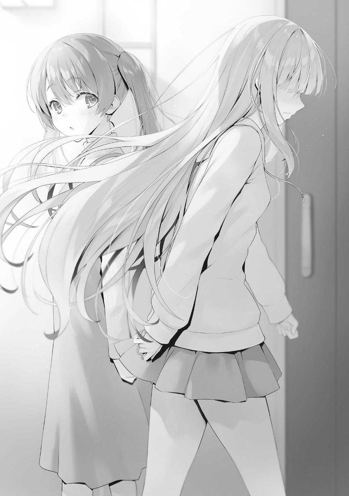
―¿E-eh?
Me preparé, pero se despidió y pasó por delante de mí sin hacer contacto visual.
La llamé para detenerla mientras se alejaba a paso ligero.
―¡Um, Karuizawa-san!
―¿Q-q-qué?
―...Siento haber llamado a Ayanokouji-kun tan repentinamente... Te molesté, ¿no?
―¡No lo hiciste, para nada! De verdad.
―Pero...
―Quieres un consejo, ¿verdad? Kiyotaka lo dijo. Dijo que si no te buscaba ahora, tendrías que armarte de valor para volver a salir de tu habitación.
Como pensaba, parece que fue capaz de averiguar mis sentimientos desde el otro lado del teléfono. Karuizawa-san dejó de caminar y se acercó un poco, sonriendo amablemente.
―Creo que está bien que te sientas libre y pidas consejo. Se le da bien hablar, y aunque a veces puede ser un poco torpe con sus palabras, creo que te dará las respuestas que buscas.
―Sí.
Llegué hasta aquí. Tengo que aplastar todos estos pensamientos inútiles o no volveré a levantarme. Sentí que era todo gracias a Karuizawa-san que podía endurecerme tanto.
―Bueno, entonces, te espero el próximo lunes.
Me dio un discurso de ánimo para animarme y, sin más, pulsó repetidamente los botones para llamar al ascensor. Sin embargo, cuando se dio cuenta de que no llegaría pronto, utilizó la escalera de salida de emergencia para volver.
―Muchas gracias, Karuizawa-san.
Al menos, no parecía estar enfadada conmigo. Siempre tuve la impresión de que me daría miedo si la enfadaba, pero la Karuizawa-san de hoy desprendía un sentimiento de dulzura y fue muy amable. De todos modos, no podía permitirme pensar en nada innecesario ahora mismo, así que me apresuré hacia la habitación de Ayanokouji-kun.
Pulsé el timbre y la puerta se abrió después de unos 30 segundos. Ayanokouji-kun se quedó en silencio después de darme la bienvenida, así que inmediatamente me apresuré a hablar.
―U-um... Recibí tu mensaje, y... uh, ¡quería hablar contigo un poco...!
PARTE 3
Mii-chan llegó casi exactamente a la hora que habíamos programado. En realidad, quise enviar a Kei a su habitación un poco antes, pero, aun así, fue bastante brusco. Creo que debería haberme dado unos minutos más de gracia, pero no había forma de evitarlo, ya que debía tener cuidado de que Mii-chan no cambiara de opinión.
―Siéntete libre de entrar.
―¡Perdón por la intromisión...!
Mii-chan no pudo ocultar su nerviosismo, pero no mostró señal alguna de intentar echarse atrás. Sólo por esta pequeña interacción, pude ver que se esforzaba por recuperarse. A diferencia de Kushida y Haruka, no quería quedarse encerrada en su habitación.
―¿Quieres una bebida?
―No, estoy bien. Muchas gracias por tu preocupación.
Se negó cortésmente y se sentó en la alfombra de forma reservada. Me senté frente a ella y comencé la conversación.
―Viniste aquí por lo que Kushida expuso sobre ti y Yousuke, ¿verdad?
Los hombros de Mii-chan se sacudieron al escuchar ese nombre antes de asentir en silencio.
―También me gustaría saber cómo va la clase. Al menos de aquellos que están sufriendo mucho más que yo, como Shinohara-san, Matsushita-san y Hasebe-san. Y también tú, Ayanokouji-kun.
No pensé que mencionaría mi nombre, pero supongo que no fue tan inesperado.
Para un observador externo, parecía que hubiera tomado la difícil decisión de descartar a un miembro de mi propio círculo de amigos.
―Debe haber mucha gente intentando ponerse en contacto contigo.
―...Por suerte, hay mucha gente que se preocupa por mí. Pero no puedo mirar. Porque si lo hago, tendré que responderles.
Decía que no podía limitarse a leer sus mensajes y no enviar una respuesta.
Siendo ese el caso, lo único que podía hacer era no leerlos.
―De acuerdo entonces. No hace falta que le des demasiadas vueltas, pero si hay algo que quieras preguntarme, no dudes en hacerlo.
Los dos rara vez hablábamos así a solas. No era necesario que la conversación fuera fluida, pero si ella se mostraba demasiado reservada, algo para lo que deberíamos haber encontrado una solución podría quedarse sin resolver. Sería mejor que nos abriéramos mutuamente, aunque fuera un poco.
―Entonces, eh, me sentiré libre... Ah, pero antes de eso... Sólo quería comprobarlo, pero ¿fuiste tú quien compró y dejó todas esas cosas frente a mi habitación?
Al ver que no tenía ni idea de lo que estaba hablando, Mii-chan continuó. Desde que empezó a faltar a la escuela, alguien le entregaba comida una vez al día.
Las provisiones venían con un trozo de papel que sólo tenía escrito el número de la habitación de Mii-chan, y nada más que pudiera servir para identificar al remitente.
Pensé en Yousuke por un momento, pero no había oído nada parecido con Kushida o Haruka. Si él -que trataba a todos sus compañeros por igual- estaba
enviando suministros a Mii-chan, también lo habría hecho para los demás, y me lo habría hecho saber durante una de las pocas veces que nos encontramos desde el examen.
―Lo siento, pero no fui yo, y tampoco sé quién lo está haciendo.
―Así es... Esa persona ha sido de gran ayuda... Me gustaría darle las gracias.
―Sea quien sea, significa que hay alumnos que están preocupados por tu ausencia.
Los que le envían mensajes, los que la llaman, los que le llevan comida. Y
aunque no se pusieran en contacto con ella, había muchos otros estudiantes a su alrededor que estaban preocupados.
Después de asentir felizmente un poco, Mii-chan me hizo una pregunta.
―Todavía vas a la escuela... ¿verdad?
Si ella no había estado en contacto con nadie de fuera, era comprensible que ni siquiera supiera con seguridad si yo estaba asistiendo correctamente. Por supuesto, no esperaba que la persona que se ofrecía a aconsejarla se pasara el día abatida en la cama.
―Fui a la escuela esta semana pasada como siempre.
―... ¿No te resultó difícil? No, por supuesto que fue difícil, pero ¿no eras reacio a ir a la escuela?
―Me estás preguntando en general, ¿no? Hasta ahora nunca he intentado ser un líder para mis compañeros, así que cualquiera se sorprendería de cómo acorralé a Kushida o expulsé a un amigo.
―... Sí. Eras diferente al Ayanokouji-kun que yo conocía. Daba un poco de miedo.
Fue directa y honesta, y expresó con franqueza sus sentimientos. No tenía sentido hablar de los amigos o de los méritos relativos de nuestros compañeros
de clase o del orden de prioridades. Ya había explicado todo eso durante el examen especial, y no debíamos volver a sacarlo a relucir en este momento.
―Me obligué a hacerlo, mintiéndome a mí mismo que sería un cobarde si no lo hacía. Es que nadie lo notó, ya que nunca fui bueno para expresar mis emociones. Creo que la razón por la que puedo ir a la escuela y no falto es porque siento que no sería genial hacerlo.
―Eso es algo que también pensé un poco. No quería que todo el mundo pensara que -al faltar a la escuela- estaba dolida porque lo que dijo Kushida daba en el clavo. Incluso el lunes por la mañana me puse el uniforme y llegué hasta la puerta principal. Pero no pude dar el siguiente paso. Después de tomarme ese primer día libre, la puerta se fue haciendo cada vez más pesada y más lejana... Es decir, todo es culpa mía, pero...
Entonces, como si acabara de recordar, Mii-chan bajó la cabeza.
―Siento mucho haber perdido una semana por algo así.
―No estaba pensando en nada de eso. Hasta el hecho de venir aquí ha debido de suponer una gran dosis de valor. Además, no has renunciado por completo a ir a la escuela, ¿verdad?
―¡Claro que no! Realmente quiero ir a la escuela de inmediato. Sé que lo que estoy haciendo ahora no es bueno. Pero... me da vergüenza, y me da pena...
Independientemente de que muchos estudiantes ya se habían dado cuenta de esos sentimientos secretos suyos, era comprensible que se sintiera profundamente traumatizada al ser expuesta públicamente de esa manera.
―No puedo decir que entienda tu situación, o que pueda ocupar tu lugar.
Pero, al menos, nuestros compañeros están preocupados por ti.
―Sí...
―Y es un hecho que, ahora mismo, estás causando problemas a la clase.
Sintiendo como si de repente le pusieran una cuchilla en la garganta, su cuerpo se puso rígido y tragó saliva. No tienes que preocuparte. Esperaremos el tiempo que necesites. Sería fácil enumerar palabras amables que fueran agradables de
escuchar, pero sólo tendría el efecto de retrasar su regreso. Desde el punto de vista de un extraño, esto puede parecer pesado, pero me permitiría intervenir y abrir su corazón.
―Sin embargo, afortunadamente, Kushida y Haruka también están faltando a la escuela ahora mismo, así que tu ausencia ha pasado a un segundo plano. Pero, ¿quién sabe la semana que viene? ¿Qué pasaría si esas dos vinieran a la escuela y tú fueras la única que se quedara atrás? Lo sabes, ¿no?
Imaginar una situación en la que te dejaran atrás era algo que podía hacer hasta un alumno de primaria.
Asintió con la cabeza mientras sus brazos temblaban ligeramente, su miedo aumentaba. Iba a recalibrar si mi insistencia era demasiado para ella, pero, sorprendentemente, no había señales de peligro. Era menuda y tenía una disposición tímida, pero juzgué que su núcleo era relativamente fuerte y no se doblegaría fácilmente.
―Puedes venir a la escuela con una mirada indiferente. No tienes que decirle nada especial a Yousuke.
―Pero... yo... me siento delante de Hirata-kun... estaremos tan cerca...
―Ahora que lo pienso, durante el cambio de asientos, fuiste por el asiento justo enfrente del impopular asiento del medio antes que nadie. ¿Fue porque pensabas que Yousuke tomaría el asiento de atrás?
―¡Uf...!
Su reacción fue tan obvia que no tuvo que decirme que tenía razón.
―Como era de esperar. Has estado observando... Es decir, entiendes muy bien a Yousuke.
―Urghh, qué vergüenza...
Abrazando sus piernas, sacudió su cabeza de lado a lado. Daba la impresión de que su vergüenza era el mayor problema.
―¿Hirata-kun... dijo algo sobre mí...?
Ella personalmente dio el primer paso para averiguar la parte que más le había inquietado todo este tiempo. Pero su rostro seguía oculto tras las rodillas, y no podía atisbar su expresión.
―Naturalmente, está preocupado por ti. Mucho, mucho más que por Kushida y Haruka.
―...Eso es... porque le parezco una molestia... ¿no es así?
Como él estaba directamente involucrado, era natural que Yousuke se preocupara más por su asunto que por el de los demás.
―No es que piense que eres una molestia. Al contrario, se siente arrepentido ya que piensa que él es la razón por la que faltas a la escuela.
―¡Eso es... pero Hirata-kun no hizo nada malo...!
―Ya lo sé. Pero estoy seguro de que sabes muy bien que él es ese tipo de persona. Desde mucho antes que yo.
Él era capaz de regocijarse en el deleite de otra persona como si fuera el suyo propio. Por otro lado, si alguien era infeliz, empatizaba con él y también se sentía infeliz. Ese era el tipo de personalidad que tenía. Como Mii-chan estaba encerrada en su habitación, Yousuke también sufría. Hacerle entender eso era lo más eficaz e importante para que superara su situación actual.
Mii-chan levantó lentamente la vista, con los ojos un poco enrojecidos, pero aún así bajó la rodilla que abrazaba sin mostrar ninguna lágrima.
―No es que nunca lo haya pensado. Que quizá Hirata-kun estaba sufriendo por mi culpa. Pero decidí que yo no me daría prioridad...
Por lo visto, no era necesario que le contara todo desde el principio: con que le diera el impulso sería suficiente. Viéndola como una estudiante de segundo año de preparatoria, se podría decir que Mii-chan estaba casi completa.
―Te veías un poco diferente de hace un momento.
―Muchas gracias. Me siento mucho más tranquila después de hablar contigo de todo esto. Todo es gracias a ti, Ayanokouji-kun.
―No es gran cosa. Sólo estaba allí por casualidad cuando te recuperaste, nada más.
―Eso no es cierto. Es porque pensé que si me encontraba contigo, podría resolver mi problema ―Respondió con firmeza y siguió con una profunda reverencia―. Definitivamente, el lunes iré a la escuela como es debido.
―Lo sé. Pero cuando uno se resfría de verdad, es mejor descansar.
―No. Sólo por el lunes, iré aunque tenga que arrastrarme.
Sentí que eso podría ser un esfuerzo demasiado inútil, pero era bueno que ella tuviera ese ánimo.
―La otra cosa que me preocupa es la persona que deja la comida para mí.
Dejé que me compraran bastante comida durante esos cinco días... Creo que el total se acerca a los 10.000 puntos.
Si era una sola persona la que estaba detrás, podía resultar bastante caro.
Intentó darme las gracias repetidamente a la salida, así que la acompañé rápidamente y la envié a casa.
―Debe ser el resultado de la educación de sus padres. Aunque es un poco exagerado.
A pesar de que somos compañeras de clase, fue demasiado educada. Sin embargo, ese es el punto fuerte de Mii-chan.
Un problema se resolvió. No pude terminar de limpiar mi habitación, así que tal vez debería hacerlo ahora. El número de personas que visitan mi habitación ha aumentado últimamente, así que no puedo permitirme ser complaciente. Horikita, Yousuke u otros estudiantes podrían visitarme en cualquier momento.
Reanudé rápidamente la limpieza, pero poco después volvió a sonar el timbre de la puerta. Comprobé rápidamente mi teléfono, pero no había notificaciones de Kei ni de ningún otro amigo enviándome mensajes.
Una visita no anunciada, ¿eh? Qué momento más desagradable. Intentaré estar en silencio durante un rato. Dependiendo de la situación, tenía la opción de fingir que estaba fuera...
Sin embargo, al cabo de unos 30 segundos, el timbre volvió a sonar. Era de noche y, tras apagar la luz de mi habitación, abrí la mirilla y observé el pasillo mientras ocultaba mi presencia. Allí estaba, en cierto modo, la última persona que quería ver: la estudiante de primer año Amasawa Ichika.
Ahora que lo pienso, hace un tiempo me pasó algo parecido. Me acordé de aquel día: tuve una visita en un mal momento, cuando menos quería que apareciera alguien. Al ver que vestía su uniforme a pesar de ser sábado, me pregunté si habrá pasado por la escuela. ¿Debía pensar que la visita era intencionada o que simplemente se había pasado por allí? Teniendo en cuenta lo que pasó la última vez, no podía dejar de sospechar que esta vez también era algo artificial.
Era obvio que me había llamado después de haber deducido que estaba dentro.
Mientras tanto, el timbre de la puerta sonó por tercera vez.
―Hola Senpaaii. Vengo a pasar el rato ―llamó Amasawa con voz dulce cuando aún me negaba a responder.
―Lo siento, pero ahora estoy ocupado. ¿Podemos hacerlo mañana?
―¡Eso no va a funcionar~! Me enteré de que trajiste a una chica a casa y que estabas haciendo algo travieso, Senpai, así que vine a investigar. ¡Si no abres, tendremos un problema!
Hablando con una voz tan alta que resonaba en el pasillo, intentó obligarme a abrir la puerta. Si la dejaba seguir gritando sin control, mis vecinos acabarían oyendo el alboroto. Sin más remedio, decidí abrir la puerta y enfrentarme a Amasawa.
―¿Dónde escuchaste que traje una chica a casa?
―¡La fuente de la información soy yo~!
―Qué fuente tan poco fiable.
―¡Eso no es cierto! Hoy trajiste a casa a Karuizawa-senpai y a Wang-senpai, ¿no es así?
No era mera intuición. No dudó en nombrar a ambas visitantes. Aunque podía adivinar razonablemente que Kei pasó por aquí, ese no era el caso de Mii-chan.
Estaba claro que ella estaba al tanto de mis movimientos.
―Ah, lo diré primero, pero no he puesto ningún micrófono en tu habitación para nada, ¿ok? Y parece que la escuela es minuciosa con sus inspecciones.
Ciertamente, no sería posible comprar algo tan peligroso por correo o similar.
Pero había un método para obtenerlas disponible sólo para Amasawa.
―Sin embargo, si eres tú, con tu conexión con Tsukishiro, no sería muy sorprendente que tuvieras uno o dos.
Incluso después de que se lo señalara, continuó registrando mi habitación, sin dejar de sonreír.
―Por ahora, ¿podrías dejarme entrar? Disculpa...
Amasawa se quitó los zapatos y entró enérgicamente en mi habitación antes de que yo pudiera darle permiso. Entonces -sin contenerse- empezó a mirar vigorosamente por la habitación...
―¿Qué estás haciendo?
―¿Eh? Nada, vamos, sólo estoy comprobando un poco.
Me gustaría obtener una respuesta de por qué necesitaba revisar mi habitación.
Amasawa, que seguía rebuscando sin dudarlo, dirigió su atención hacia la cama y se acercó a ella.
―Te estás preguntando cómo supe lo de Wang-senpai, ¿verdad? ¿La vi salir por casualidad? ¿O lo supe por algún otro método?
―¿Has venido sólo para presumir de tu red de información?
Ella aceptó inmediatamente sin intentar negarlo, y luego se acercó a la cama.
Mientras arreglaba las arrugas de las sábanas, las yemas de sus dedos recorrieron cada rincón, buscando algo. Me senté en la alfombra y observé a
Amasawa, que estaba segura de que seguiría examinando hasta quedar satisfecha.
―Tu novia tiene el pelo largo, ¿verdad? Eso significa que te gustan las chicas con el pelo largo, ¿no? Por eso yo también estoy dejando crecer el mío poco a poco.
Ella seguía moviendo las manos y los ojos mientras hablaba de su situación capilar por la que nunca le pregunté. No podía obligarla a detenerse, así que la vigilaba de mala gana cuando de repente dejó de moverse. Entonces pellizcó algo de la vecindad de la almohada entre sus dedos índice y pulgar y lo levantó.
―¿Qué es esto~?
Levantó triunfalmente un único mechón de pelo dorado y brillante.
―Debe ser de Kei. Viene a menudo a pasar el rato estos días.
―Seguro que es cierto, pero ¿qué significa que esté junto a la almohada?
―Se me ocurren varias razones, pero ¿tengo que enumerarlas una por una?
―No, no. En realidad no tienes que hacerlo, pero~
Entonces se puso de rodillas, miró al suelo y empezó a buscar algo como un forense. No sé qué está buscando, pero dudo que sea capaz de encontrarlo.
―¿La Habitación Blanca también te enseñó a desvalijar las habitaciones de la gente?
Cuando hice una pregunta sobre la Habitación Blanca, Amasawa se detuvo donde estaba.
―¿No tienes ninguna duda, Senpai? ¿Sobre por qué nosotros -que fuimos enviados a esta escuela para que te expulsaran- no te hemos puesto la mano encima y nos hemos integrado en la vida cotidiana, aunque ya es el segundo semestre?
―Como mínimo, parece que te han expulsado del equipo de la Habitación Blanca, y te han tachado de innecesaria.
―No voy a negar eso, pero entonces ¿qué piensas de los demás?
―No me interesa mucho.
―Bueno, supongo que es así. Si te mantienes alerta, no harás nada descuidado~
―Te recomiendo que dejes de preocuparte por mí, y simplemente disfrutes de tu vida escolar.
―¡Estoy de acuerdo! Yo también estaba pensando que debería hacer eso...
Tras una ligera pausa, Amasawa continuó su búsqueda. De espaldas a mí y con el trasero asomando, alcancé a ver su ropa interior debido a la corta longitud de su falda. Era imposible que no se diera cuenta, pero siguió arrastrándose por el suelo como si no se hubiera dado cuenta. Deslizando la cabeza bajo la cama, su ropa interior quedó aún más expuesta.
―Mirar mis bragas de esa forma, ¡qué lascivo, Senpai!
―Lo siento, pero más que mirar tu ropa interior, estoy más pendiente de lo que me harás si te pierdo de vista.
Mientras yo mantenía mis ojos fijos en Amasawa, ella sacó su cara de debajo de la cama y volvió a mirarme. Ataviada con un aura de madurez que hacía difícil creer que tenía un año menos, Amasawa se acercó a mí, todavía arrastrándose sobre sus rodillas.
―Creo que han empezado a descarrilarse, confundiendo los medios con los fines. Están más centrados en llevarte a la expulsión que en volver a la Habitación Blanca.
Murmuró a corta distancia, apenas unos centímetros separaban nuestros labios.
Un dulce aroma llegó a mis fosas nasales.
―Qué historia tan molesta.
―Para ti, Senpai, sí. Así que he estado pensando estos últimos días. ¿No estaría bien decirte quién es y dejar que lo envíes al otro mundo?
―No hagas que me envíen al otro mundo.
―Jajaja, qué gracioso.
No era para nada gracioso.
―¿Qué vas a hacer? ¿Quieres que te diga su nombre?
Amasawa se acercó un centímetro más y esperó mi respuesta.
― Te agradezco la proposición. Pero paso.
―¿Es porque no confías en ganar después de escuchar el nombre?
―Si su identidad se revelara inesperadamente, tú serás la primera sospechosa. ¿Cómo acabaría eso?
―Por supuesto, probablemente cambiarían de objetivo hacia mí.
―No hay necesidad de desestabilizar tu vida escolar sólo para que pueda averiguar su identidad.
Si se interpusiera en mi camino como enemiga, no tendría piedad, pero Amasawa no había dado muestras de ello hasta ahora.
―Eres muy amable, ¿verdad, Senpai?
Además, confiar demasiado en ella también sería un problema. Si estaban actuando con múltiples estrategias en la mano, no podía negar completamente la posibilidad de que la propuesta de Amasawa fuera también una trampa.
―Me rechazaron, así que me iré a casa.
―¿Viniste hasta mi habitación sólo para decirme eso? ¿O la búsqueda era tu propósito principal?
―¿Ahora cuál podría ser?
Riendo como un diablillo, Amasawa se dirigió rápidamente a la puerta principal cuando sus ojos se dirigieron a la bolsa de basura apenas llena que había en la cocina.
―Ya visité tu habitación varias veces, pero veo que estás sacando la basura aunque hoy haya mucha menos. Pensaba que eras de los que sólo la tiraban cuando la bolsa estaba llena hasta los topes.
―Es que hay tantos restos de comida de verduras y pescado que me da apuro dejarlo para la semana que viene.
―Si es así, ¿debo sacar la basura conmigo de camino a casa?
―Lo siento, pero sacar la basura antes de las 8 de la noche está prohibido.
―Sigues todas las reglas, ¿eh?
La visita de Amasawa fue inesperada, pero se había resuelto un misterio.
―Ya veo parte de lo que has venido a hacer. Viniste de visita para hacer tu propuesta. Y la razón por la que registraste cada centímetro de mi habitación fue porque estabas al acecho para ver si alguien más estaba escuchando.
Incluso su acto de intentar buscar algo privado sobre mí se hizo por precaución.
Amasawa estaba alerta por si el estudiante de la Habitación Blanca ya había preparado un truco.
―Senpai. Estoy segura de que, como eres tú, estarás bien, pero -sin embargo- si abandono la escuela, por favor, que sepas que está ocurriendo algo que ni siquiera tú esperas.
Amasawa me dejó con esas palabras al salir de mi habitación. Comprobé mi teléfono por si había habido algún cambio y me llegó un mensaje de Akito.
[Haruka vendrá a la escuela a partir del lunes de la semana que viene.]
Por el momento, había buenas noticias. Al ser alguien del mismo grupo, debió de conseguir convencer a Haruka. El problema era que esto no se enviaba en el chat del grupo con todos los miembros del grupo Ayanokouji. Después de mirar la pantalla por un momento, recibí un nuevo mensaje.
[¿Podrías vigilar tranquilamente a Haruka durante un rato?]
El texto en sí era sencillo, pero el énfasis estaba en la palabra tranquila. Iba a la escuela, pero no quería hablar conmigo. En ese caso, si le hablaba sin cuidado, corría el riesgo de que volviera a faltar a clase; eso debía ser lo que quería decir.
Su razonamiento era bastante sencillo de entender. Si ella estaba dispuesta a volver, yo no tenía ninguna objeción.
[Entendido. Prestaré mucha atención.]
[Eso ayuda. Espero que podamos volver a ser como antes.]
Durante un rato después de eso, recibí varios textos de Akito que eran casi alentadores, y cuando fue el momento adecuado, terminó nuestra charla.
―Es un problema resuelto.
Sin embargo, esta solución no era una verdadera solución. Era mejor verlo sólo como un regreso temporal para Haruka.
Después de que esas agitadas horas llegaran a su fin, me sentí mucho más fatigado que de costumbre.
―Vamos a ir a la cama temprano hoy.
Sin embargo, no debería olvidar sacar la basura.
PARTE 4
Llegó de nuevo el lunes. El sábado resultó ser un gran día, ya que me enteré directamente por Mii-chan e indirectamente por Haruka a través de Akito de que
estaban dispuestas a volver a venir a la escuela. Pero no había ninguna garantía de que alguna de ellas viniera, y ahora dependía de la fuerza de sus voluntades.
En cuanto a Kushida, hasta esta mañana no había recibido ningún mensaje de Horikita sobre ella. Si venía al aula, no tenía ni idea de cómo reaccionarían tanto ella como el resto de la clase.
Llegué a la escuela a la hora habitual, me senté y esperé a que vinieran las tres a clase.
Cuando ya había llegado una cuarta parte de los alumnos, la llegada de una persona sorprendió inicialmente a las chicas, pero luego la recibieron con sonrisas. Mii-chan entró vacilante en la clase.
―Buenos... días...
Levantó la cabeza con cautela, preparada y esperando que se burlaran de ella.
Esas preocupaciones se desvanecieron cuando las chicas la recibieron calurosamente sin tocar ese tema en lo más mínimo.
―¡Buenos días, Mii-chan!
―B-buenos días, Hirata-kun.
Y este chico también dio la bienvenida a Mii-chan con una sonrisa que no había cambiado ni un poco. En este momento, no sabía si se había abierto un camino para el amor de Mii-chan. Pero aunque no había comenzado, lo cierto es que tampoco había terminado. Era totalmente razonable que, al continuar su vida escolar, hubiera un momento decisivo para ambos.
Al cabo de un rato, Mii-chan continuaba viéndose ligeramente nerviosa, pero las chicas se quedaron con ella y empezaron a charlar alegremente sobre lo que había pasado en la escuela la semana pasada.
Y entonces, cuando la mayoría de los compañeros habían llegado, apareció Haruka. Akito la acompañaba al lado, y parecía que ella saldría corriendo en cualquier momento. Para evitar que eso ocurriera, él la acompañó hasta su asiento. Keisei dudó un poco, pero finalmente se armó de valor, se acercó a su
asiento y la llamó. Cuando me cambié de asiento, nunca pensé que me alegraría de no estar cerca de ellos.
Haruka me miró por un momento, pero rápidamente apartó la vista y miró su teléfono en su lugar. Después de comprobarlo, Akito y Keisei dijeron un par de palabras y volvieron a sus asientos.
Mii-chan y Haruka vinieron a la escuela. Ambas tenían amigos que venían a apoyarlas mientras sufrían. Para Mii-chan, eran muchas chicas, y para Haruka eran Akito y Keisei. Aunque fueran pocos, tenía gente a la que podía llamar amigos íntimos.
Por ahora, podíamos asumir que habíamos esquivado un castigo importante por parte de la escuela. Sin embargo, todavía quedaba Kushida. ¿Qué pasa con ella?
Cuando sólo quedaban tres minutos para que empezara la clase, Horikita entró sola en la misma, con una expresión rígida en su rostro. Miró una vez el asiento de Kushida, ocupó el suyo y miró directamente a la pizarra. Como hoy no estaba en el vestíbulo, pensé que podría haber pasado, pero supongo que no fue así.
Posiblemente Shinohara y parte de la clase se hicieron la misma idea al mirarla por detrás.
Al poco tiempo, sonó el timbre y llegó la hora de la clase. Todos los asientos, excepto el de Kushida, estaban ocupados cuando Chabashira-sensei entró en el aula.
―Parece que las dos se encuentran mejor. Supongo que sólo ha sido un largo resfriado de verano, pero cuiden su salud a partir de ahora.
Les hizo una ligera advertencia, pero no las regañó con dureza cuando confirmó su asistencia.
―Así que Kushida está ausente hoy. Tampoco he tenido noticias de ella─
En ese momento, oí cómo se abría la puerta del aula a mi espalda. La persona que entraba jadeaba ligeramente, pero se recuperó rápidamente.
―Lo siento, llego tarde.
Kushida entró en la clase, con voz tranquila.
―Es la primera vez que llegas tarde, Kushida. Has estado ausente mucho tiempo, ¿te encuentras bien ahora?
―Sí. Me cuidaré a partir de ahora.
Respondió con suavidad, completamente imperturbable, y tomó asiento. No habló con nadie y mantuvo su mirada al frente del salón. La clase se había tensado de inmediato, pero no podían hablar entre ellos descuidadamente, así que el silencio continuó.
―Seguro que han pasado muchas cosas, pero después de una semana todo el mundo está reunido ―La clase seguía siendo inestable, y Chabashira-sensei lo entendía, pero aun así asintió con satisfacción―. El Festival Deportivo está a la vuelta de la esquina. Espero que todos ustedes hagan grandes progresos y participen con éxito.
La jornada escolar terminó después de eso, y la clase estalló inmediatamente.
No hace falta decir que fue el efecto del regreso de Kushida a la escuela. Todos los estudiantes la miraban como si fuera un tumor. ¿Seguiría manteniendo su silencio, o pondría su sonrisa habitual? O tal vez, ¿mostraría sus colmillos de nuevo? Por el momento, me levanté en silencio de mi asiento, con la intención de salir al pasillo.
La puerta estaba cerrada, así que la abrí un poco. No sería bueno que nuestros asuntos internos se filtraran a las demás clases. Eso había pensado, pero─
Estoy vigilando. No te preocupes.
Recibí ese mensaje en mi teléfono. Asomé la cabeza por la puerta, y tras divisarme, Chabashira-sensei asintió una vez en respuesta. Tras confirmarlo, cerré la puerta para que nadie se diera cuenta. Chabashira-sensei nos estaba cubriendo, haciendo todo lo que podía como profesora.
Nadie se movió, ya que la situación se convirtió en una en la que podía pasar cualquier cosa. Horikita estaba a punto de apartar su silla cuando Kushida se le adelantó y se levantó. Ese movimiento suyo podía verse como una amenaza:
"No metas las narices aquí".
La primera persona a la que se dirigió Kushida fue a Mii-chan, cuyo asiento estaba cerca del suyo. Por fin, Mii-chan había vuelto a la escuela, pero ahora estaba congelada como un ciervo frente a los faros.
―Me enteré por Horikita-san de que has estado ausente por mi culpa.
―Um, er, erm...
―¿Me odias?
―N-No, no es así─
―No es que tenga que gustarte, Wang-san. No puedo cambiar el hecho de que haya acabado exponiendo tu secreto a todo el mundo, y tampoco tengo intención de llevarme bien contigo. Bueno, no es que necesite decir eso, supongo.
No tengo intención de llevarme bien contigo.
Aunque su tono era amable, su intensa afirmación hizo que Mii-chan se pusiera todavía más rígida. Los múltiples estudiantes que observaban a Kushida se mostraron dudosos, descontentos y ansiosos con ella. Normalmente, eso solo habría sido suficiente para hacer temblar a alguien, pero no afectó a Kushida en lo más mínimo.
―No voy a decir que debas entender lo que sentía en ese momento, pero esa era mi única opción entonces. Me disculpo por haberte hecho blanco de eso, Wang-san.
Hizo una profunda reverencia después de decir eso. Me dio la impresión de que esos no eran sus verdaderos sentimientos, y que sólo lo hacía por obligación, pero al menos no parecía maliciosa.
―Shinohara-san, Matsushita-san y los demás, siento haberlos molestado también. Parece que ya han conseguido arreglar las cosas.
Ahora que lo mencionaba, los grupos de Shinohara y Matsushita eran cercanos ahora. Durante el fin de semana, Yousuke, Sudou y el resto debieron trabajar para unirlos de nuevo.
―¿Crees que una disculpa es suficiente?
Shinohara contestó de forma algo brusca, manteniendo a raya a Kushida.
―No lo creo, pero al menos no podemos empezar sin una, ¿no?
―Eso es... de todos modos, ¿es así como se disculpa?
―¿Quién sabe? Por lo menos, así es como soy realmente.
La fachada que había mantenido hasta ahora, Kushida el Ángel, ya no existía.
Sólo ese hecho, y la tensión asociada, debería haber llegado alto y claro a toda la clase.
―Por el momento, pienso seguir manteniendo la fachada que tenía hasta ahora en cierta medida. Así, dependiendo de las circunstancias, podré incluso recabar información de las otras clases. Pero si alguno de los de la clase va a interponerse en mi camino mientras lo hago, también me parece bien no hacerlo.
No importaba lo mucho que Kushida intentara mantener las apariencias: si la gente de dentro de la clase interfería, no podría establecer conexiones.
―Dejaré que todos ustedes decidan si debo o no usar el arsenal que he acumulado.
Si Kushida fuera el tipo de chica que aprecia a sus amigos y tiene miedo de estar sola, recluirla sería una forma de vengarse de ella. Pero Kushida no estaba siendo pasiva, y en cambio mostraba una actitud agresiva.
―Y si alguien se dirige a mí con hostilidad, no tendré piedad, sea quien sea. Sólo he expuesto una pequeña parte de sus secretos durante el Examen Especial. Estoy segura de que muchas otras personas tienen cosas que quieren mantener en secreto, ¿verdad?
Murmuró desapasionadamente, dirigiendo su amenaza a nadie en particular, sino a toda la clase.
―Pero sólo les prometo una cosa. A menos que caiga, no trataré de exponer ningún otro secreto. No lo hago por la clase, lo hago por mí. Para poder
graduarme en la clase A. Es mi última línea de defensa, para no perder mi valor como yo misma.
Al estar resentida, desconfiada y mal vista por sus compañeros de clase, dependiendo de las circunstancias, podría acabar estando en el bando de los expulsados. Para evitarlo, no iba a revelar más secretos, pero si alguien la apuñalaba por la espalda no tendría piedad.
Nos dijo cómo se protegería y, al mismo tiempo, prometió contribuir a la clase.
Kushida Kikyou estaría fácilmente en el nivel superior en términos de estatus general. Por lo menos, en las materias académicas o físicas, ella no frenaría a la clase.
―Hasebe-san. ¿Te parece bien?
Kushida intentó hablar con Haruka, que no se había movido ni un centímetro de su asiento y ni siquiera la había mirado. Pero Haruka no respondió y siguió mirando por la ventana.
PARTE 5
Desde la semana pasada, mi vida diaria comenzó a cambiar significativamente.
El grupo Ayanokouji no se ha reunido ni una sola vez. Incluso hoy, con la llegada de Haruka a la escuela, no ha habido ningún cambio de - no, retorno de ese hecho.
Ahora que las reuniones que antes parecían naturales han cesado, la forma de pasar el tiempo en la escuela ha cambiado por completo. Durante los descansos de diez minutos, pasaba el tiempo solo o hablaba con Kei. A veces, puedo charlar con algunos compañeros como Sudou o Matsushita, pero mis posibilidades de hablar con Akito o Keisei han disminuido claramente.
Aunque al principio este estilo de vida me resultaba extraño, poco a poco mi cuerpo empezó a aceptarlo y a acostumbrarse a él. Sigo el mismo ciclo durante los descansos de la tarde, pero si Kei se va a comer con sus amigas o algo así, yo me dirijo a la biblioteca. Ese seguía siendo el receso en el que podía
descansar a solas. Sin embargo, parece que Hiyori no viene a la biblioteca últimamente, así que es una pena que no hayamos podido hablar de ningún libro.
Además, el flujo de esta cadena de acontecimientos continuó también después de clase. En cuanto al día de hoy, Kei ya me había mandado un mensaje diciendo que saldría con sus amigas y se iría a casa, así que no tenía ningún plan especial. Si me quedaba desconsideradamente en la escuela, aumentaría la carga emocional de Haruka, así que decidí volver rápidamente a la residencia.
Sin embargo, se produjo un acontecimiento inesperado cuando alguien me vio haciendo eso.
―Kiyopon, ¿tienes algo de tiempo?
No esperaba que Haruka se pusiera en contacto conmigo, pero se acercó a mí cuando estaba en el pasillo intentando salir. Su voz contenía una contundencia que demostraba que no le importaba si tenía o no tiempo. Su objetivo al venir a la escuela por primera vez en una semana era quizás hacer contacto conmigo en un lugar público. Sin siquiera mirar hacia atrás para comprobar su expresión, respondí con franqueza.
―Si es necesario, haré tiempo.
Para tantearla, intenté parecer que tenía planes, pero...
―Entonces hazlo. Está bien, ¿verdad? ―Ella no mostró ninguna señal de contener esa contundencia en su voz―. Ya hablé con Horikita-san. Me adelantaré y esperaré en la cafetería del centro comercial Keyaki.
Diciendo sólo esas palabras, Haruka salió del aula. Inmediatamente después, Akito vino hacia aquí como si siguiera a Haruka.
―¿Siempre tuvo la intención de venir a la escuela para hablar conmigo?
―Dije.
―No estoy seguro... es la primera vez que me entero de ello. Por eso no estoy seguro de lo que quiere hablar. Pero, dependiendo de cómo vaya, no creo que pueda estar de tu lado.
Akito se disculpó, aunque me preocuparía que no estuviera al lado de Haruka como su aliado.
―Está bien.
Dejando la conversación lo suficientemente corta como para no levantar sospechas, tanto Akito como Keisei salieron del aula. Supongo que ha reunido a todos los miembros del Grupo Ayanokouji y llamó también a Horikita. Por supuesto, es seguro que la discusión será sobre la expulsión de Airi. Horikita esperó a que esos tres se fueran antes de acercarse a mí.
―Comprobé si estaría bien sólo conmigo, pero dijo que eras completamente imprescindible y no me escuchó para nada.
Se estaba encargando de intentar resolver el problema ella sola, pero bueno, esta vez las circunstancias son distintas.
Salimos juntos del aula y nos dirigimos a la cafetería que Haruka nos indicó.
Antes de que entráramos en una pesada conversación, decidí terminar con algo que tenía en mente.
―Parece que lograste traer a Kushida de vuelta a la escuela. Estoy sinceramente impresionado.
―Técnicamente ha vuelto por el momento. Sin embargo, todavía hay muchas cosas que son inciertas. Las cosas no serán como antes.
―Pero aún así, no podríamos desear un mejor desarrollo que en este momento.
Incluso su estilo de hablar había cambiado drásticamente, pero es seguro decir que Kushida volvió casi con la mejor respuesta para que la clase se desarrolle sin problemas a partir de ahora. El consejo de Horikita fue sin duda parte de cómo llegó a esa respuesta. La parte difícil será mantener al mínimo la información que se filtre a las otras clases. Incluso si algún día se diera a conocer ampliamente, era muy posible que el paso del tiempo hubiera desvanecido parte de ella.
―¿Cómo la convenciste? No me la imagino haciéndose obediente sólo con un buen plan.
Aunque el destino final era la declaración que ella hizo hoy, debió haber giros y vueltas antes de llegar allí. En todo caso, eso era lo que me interesaba, pero la expresión facial de Horikita parecía complicada.
―La traté como una niña impropia de su edad. Hasta el punto de no querer hablar de ello.
Al ver que evitaba hablar de algo concreto, supongo que realmente hizo cosas de las que no quería hablar. No parecía que fuera a responder aunque insistiera más en el asunto, así que no tuve más remedio que rendirme.
―Sin embargo, teniendo en cuenta con quién estás tratando, puede que haya sido la elección correcta.
Tal vez recordando algún detalle, se frotó la mejilla con la mano izquierda y respondió.
―De todos modos, nos ha costado una semana, pero conseguimos reunir a todos los de la clase.
―Hablando de eso, parece que el problema con las chicas también se calmó.
Yousuke dijo que se apoyaría en Horikita, así que sin duda ella también participó en eso.
―Para el asunto con Shinohara-san y los demás, Hirata-kun tomó la iniciativa y las llevó a todas al centro comercial Keyaki el domingo.
―¿Tú también estuviste presente?
Fingí que no sabía nada al respecto y respondí como si nunca hubiera imaginado que pudiera ocurrir.
―Sí. Además, estuvieron de acuerdo en que lo de las malas formas fuera cosa del pasado. Shinohara-san estuvo en contra durante un tiempo, pero que Ike-kun la calmara fue de gran ayuda ―Incluso por la forma de hablar de
Horikita, puedo decir que Ike está cumpliendo su papel de novio. Continuó―: Seguro que muchos estudiantes están creciendo mientras no miramos.
―No pareces feliz por ello.
―Creo que soy feliz. Es sólo que por eso, me siento patética en comparación. Cuando pienso en si he conseguido crecer... me siento ansiosa.
Es fácil valorar a los demás, pero juzgarse a uno mismo es difícil. Si quieres ser optimista, puedes juzgarte generosamente. Si quieres ser estricto, puedes juzgarte con dureza.
―Algún día, alguien más podrá darte esa respuesta.
―...Cierto.
Lo primero es volcar su energía en la recuperación de la clase, ya que su propia evaluación vendrá por sí sola después.
―No pudimos localizar a Wan-san, pero parece que la ayudaste. Gracias.
―Sólo le di un consejo. Aunque no hubiera hecho nada, alguien la habría ayudado.
―Aunque sólo haya sido un día, tienes que agradecer que haya vuelto más rápido. También esta vez me salvó mucha gente. Siento que me han vuelto a echar en cara que no puedo hacer nada yo sola.
Lo que decía era deprimente, pero en todo caso su tono era alegre.
―Ah, sí. Quiero que le envíes un mensaje al presidente del Consejo Estudiantil, Nagumo.
―¿Yo? Me usas constantemente como intermediaria. Bueno, está bien.
¿Qué debo decirle?
―Sólo dile que acepto su propuesta.
―...¿Aceptar su propuesta?
―Lo entenderá si le dices sólo eso.
―De acuerdo. Iré a la sala del consejo estudiantil después de esto, así que le diré lo que me acabas de decir.
Todavía estoy decidiendo si voy a participar en el Festival Deportivo de este año.
Pero el plazo de una semana ya pasó, así que al menos debo responderle que acepté. Si no reto a Nagumo a algún tipo de duelo en algún momento, probablemente no estará satisfecho.
―Lo que queda es el problema con Hasebe-san. Sinceramente, no puedo saber de qué vamos a hablar, no puedo leerla.
―Por cómo se ha comportado hoy, no me sorprendería nada de lo que nos lance.
―Parece que es mejor no ser ingenuo en esto.
Mii-chan y Kushida superaron sus retos y vinieron a la escuela. Sin embargo, Haruka es diferente. Es probable que de aquí en adelante, ella se convierta en un obstáculo y se interponga en nuestro camino.
―Mientras esperaba para reunirme con Kushida-san, también vigilé a Miyake-kun y a Yukimura-kun muchas veces ―Así que estaba vigilando no sólo a Shinohara y a los demás, sino también a los miembros del grupo Ayanokouji―.
La que tuvo los sentimientos más difíciles durante el examen especial fue Hasebe-san. Es necesario hacer un seguimiento de ella ―A pesar de eso, la razón por la que Horikita no parecía tan alegre mientras caminaba a mi lado era probablemente que no había conseguido nada con ello―. Nos encontramos en su puerta, pero no pudimos hablar de nada. Miyake-kun me había pedido que la dejara en paz, así que me mantuve alerta durante la última semana.
¿ Está hablando de hoy? Que Haruka viniera a la escuela también debía estar fuera de las expectativas de Horikita.
―Al final, Akito logró convencerla y consiguió llevarla con él a la escuela, y ahí termina ese capítulo ―Dije.
―Estaría bien si eso fuera todo... pero no es el caso.
Dado que nos llamó así a los dos, naturalmente pensamos que algo pasaba.
A partir de ahora, ¡trabajemos duro juntos! - Sí como no.
―En esa situación, yo fui quien nominó a Airi y la acorraló. Está bien si sólo escuchas nuestra conversación.
―No puedo hacer eso. Yo fui de la misma opinión, así que soy igualmente responsable. No, la razón por la que todo esto sucedió fue porque rompí mi promesa. Tengo que aceptarlo todo.
En comparación con entonces, parece que ha conseguido recuperar la compostura, pero el hecho de estar demasiado ansiosa también era motivo de preocupación.
―Haruka es importante, pero también es necesario cambiar de mentalidad y mirar hacia el Festival Deportivo.
Ya hemos pasado una semana tratando de resolver nuestros problemas de clase. En ese tiempo, las clases como la A ya habían empezado a prepararse para ganar en el Festival Deportivo, así que no podíamos permitirnos quedarnos atrás.
―Tienes razón. Por supuesto, he estado pensando bien en cómo luchar en el Festival Deportivo. Creo que lo he resuelto hasta cierto punto.
Mientras apoyaba a Kushida o a Shinohara y a los demás, no pasó por alto esa parte.
―Entonces preguntaré. ¿Cuál es tu objetivo para el Festival Deportivo?
Intenté preguntarle a Horikita su objetivo.
―No hace falta decirlo─ aspiramos al primer puesto. No, definitivamente nos llevaremos el primer puesto. Tenemos que hacerlo.
Por el perfil de su rostro que miraba hacia delante, se veía asomar la confianza.
―No es malo poner las miras altas; no perdemos con nadie más en términos de mano de obra. ¿Has pensado en una estrategia? Está la batalla entre años escolares completos, pero fundamentalmente, la lucha por nuestros
puntos acumulados dentro del mismo año será el objetivo. Sakayanagi y Ryuuen pondrán en práctica estrategias en las que ni siquiera has pensado.
―Si uno no completa cinco eventos, entonces todos sus puntos se perderán. Teniendo en cuenta a Ryuuen, no sería raro que se propusiera fingir un accidente durante la competición, herir a alguien y que lo eliminaran por ello.
Al igual que Horikita fue el objetivo el año pasado, no sería extraño que Ryuuen eligiera el tipo de métodos que uno llamaría cobardes. Si fuera Sakayanagi, probablemente mirará a los que participan en la competición y guiaría a sus compañeros con los arreglos más apropiados.
―Considerando todas las posibilidades, ¿qué mano pretendes jugar?
―Para ser específicos, será un ataque frontal. Sudou-kun y Onodera-san nos harán ganar puntos, y estudiantes como Kushida y yo también ganaremos puntos de forma constante. Haremos lo necesario para ganar.
―No habría ningún problema si pudiéramos ganar con eso, pero que nuestra clase tenga sólo 38 personas también es una desventaja.
Horikita asintió inmediatamente. Su respuesta indicaba que había tenido en cuenta eso.
―Por eso decidí correr un solo riesgo. Estoy en medio de los preparativos para eso ahora.
―¿Riesgo?
―Para una conversación más detallada, ¿quizás quieras venir conmigo mañana después de clase?
―¿Quieres decir que quieres que te ayude con algo?
―No. Será suficiente con que vengas y escuches la conversación. Y
después de eso, sólo quiero que evalúes objetivamente si vale la pena o no correr ese riesgo y me lo digas.
―¿De verdad te parece bien sólo eso?
―No puedo permitir que me asesores una y otra vez, como la última ocasión.
Como ella ya pensó en esto hasta cierto punto, no necesita ninguna sugerencia o consejo. Si ese es el caso, esperaré con interés la estrategia que Horikita está pensando para el Festival Deportivo.
―Entendido. Te escucharé mañana después de clase.
Cuando finalmente llegamos a la cafetería, los tres miembros del grupo Ayanokouji estaban esperando en sus asientos. No parecía que hubieran estado charlando, y tres bebidas estaban colocadas en vano. Si queríamos usar la tienda, necesitábamos conseguir al menos una bebida. Uno a uno, elegimos las bebidas al azar y nos dirigimos a nuestros asientos.
―Siéntense ―Nada más llegar, Haruka nos instó a sentarnos en los dos asientos vacíos―. Mientras estaba fuera, parece que han querido hablar conmigo varias veces, así que pensé en preguntarles sobre eso ―Haruka abrió con eso de forma desapasionada, con su mirada dirigida ni a mí ni a Horikita.
Creo que nos lo preguntaba a los dos, pero el foco estaba obviamente en Horikita―. ¿De qué quieren hablar?
―En cierto modo, el problema ya está resuelto. Llevabas varios días sin ir a la escuela.
―Así que estabas preocupada. Después de todo, la evaluación de nuestra clase puede bajar.
―Por supuesto que eso no es todo. Debes haber tenido una buena razón para estar ausente durante una semana, ¿verdad?
―No me sentía bien. Se lo dije a la escuela, así que no debería haber ningún problema... Miyacchi me dijo que podríamos recibir una sanción si estoy ausente más de una semana, así que vine a la escuela hoy.
¿ Hay algún problema con eso? dijo el lenguaje corporal de Haruka, mientras seguía sin mostrar ninguna emoción.
―En efecto. Sin embargo, la razón por la que faltaste a la escuela no fue porque no te sentías bien.
―¿Cómo puedes decir eso? Podría haber estado simplemente enferma,
¿no?
Sin negar nada, Horikita se llevó la taza a la boca. ¿Estaba ausente porque no se sentía bien, o no era el caso? Eso no es más que el paso previo al problema.
Con la forma en que Horikita contestó, no hay forma de que esté satisfecha.
―Parece que tienes tus dudas, pero realmente no me sentía bien. Pero no era una lesión o una enfermedad. Despertarme fue emocionalmente difícil, no pude dormir y simplemente me fui de la escuela.
Akito y Keisei parecen escuchar con calma, pero no es así. Aunque están sufriendo de la misma manera, entienden que su sufrimiento está muy lejos del de Haruka. Por eso no tienen más remedio que callar y escuchar.
―¿Podrías dejarte de rodeos y decir lo que quieres decir?
En lugar de volverse deferente, Horikita se volvió más asertiva. Sería normal que esa actitud tuviera el efecto contrario, pero a Haruka no parece molestarle.
Tengo la fuerte impresión de que ha sellado sus emociones en lo más profundo de su corazón. Horikita, que estaba sentada a mi lado, probablemente dio esa reacción excesiva porque sentía lo mismo.
―¿Estás satisfecha de haber ganado puntos de clase durante el examen especial?
―No estoy satisfecha. Todavía hay una brecha de más de 500 puntos entre nosotros y la Clase A. Además, aspirar a la Clase A sin perder a nadie si es posible era mi ideal... mi visión. Sin embargo, hablar de esas cosas no tiene sentido en este momento.
Nadie quiere expulsar a otro. En medio de la lucha, simplemente nominé a Airi por una razón inevitable. Ya terminamos de confirmarlo.
―Mi querida amiga fue sacrificada debido a tu juicio egoísta. ¿Eres consciente de ello, Horikita-san?
Por primera vez en el día de hoy, las cosas que Haruka ha estado queriendo decir salieron a borbotones.
―Efectivamente.
Durante la más de una semana que había pasado desde el final del examen especial, Horikita se enfrentó a su decisión y siguió luchando. Eso es algo que se entendería al observarla cada día, incluso sin escucharla cara a cara. Por supuesto, eso es algo que no le importa a Haruka. No la perdonará sólo porque se haya esforzado al máximo; no la perdonará sólo porque haya dado resultados.
―Qué buen líder. No cuestionas los métodos que tomas para que tu clase gane.
―Todavía me queda camino por recorrer.
―¿Entiendes que estaba siendo sarcástica?
―Por supuesto que lo entiendo.
―¿Dónde quedó tu promesa original de eliminar al traidor -el estudiante que seguía presionando “Apoyo”-?
―Respecto a eso, creo que mi previsión fue inadecuada. Sin embargo, mientras no podamos hacer como si el examen especial del otro día nunca hubiera ocurrido, no tenemos más remedio que seguir viviendo.
―Hay errores que no se pueden perdonar.
―No voy a negar eso. Es como tú dices.
―¿Aunque el hecho de que Kyou-cha- Kushida-san permaneciera en la clase fuera la decisión correcta?
―Es porque consideré que era la opción correcta que tuve la determinación de mantenerla en la clase, asumiendo la animosidad de todos los demás. Esto se está volviendo redundante.
―Ah, ya veo.
Horikita no se echaba atrás, así que Haruka endureció su forma de hablar.
―No pretendo dar una disculpa insuficiente. Por mucho que me disculpe, es un hecho que cambié mi opinión y juzgué que Kushida-san debía permanecer en la clase. Es natural que estés resentida conmigo, y un día podría recibir una dolorosa represalia. Sin embargo, decidí que la persona que puede convertirse en fuerza de combate para nuestra clase era Kushida. Poco a poco me he ido convenciendo de ello.
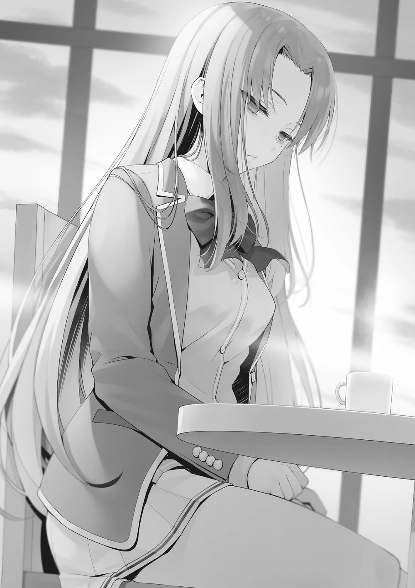
―Aunque Kushida-san sea una estudiante sobresaliente, hay otros que no tienen habilidades. No era necesario que fuera ella ―La persona que debería haber eliminado era otra. Horikita no había llegado a esa conclusión, así que frente a ella Haruka continuó―. No lo aceptaré. No importa cuánta gente te apruebe de aquí en adelante, nunca lo aceptaré.
Manteniendo esa posición mientras conservaba sus sentimientos, Haruka no mostraba ningún signo de perdonarla.
―Entonces no tengo más remedio que esforzarme para que me apruebes.
―Acabo de decir que no te apruebo.
―La única responsabilidad de expulsar a Sakura-san es mía. Sí, no voy a negar eso. No puedo negar eso. Por otro lado, ¿qué debo hacer? ¿Vas a decirme de aquí en adelante que deje la escuela? ―Incluso si ella hiciera eso, no significa que Airi volvería. Esa acción haría que los 100 puntos de clase que quedaron de que ella tomara la iniciativa por el bien de la clase también desaparecieran en la nada―. ¿Quizás quieres que me ponga de rodillas? ¿Te sentirías mejor con eso?
Una fuerte voluntad. La voluntad de no perder. Eso es lo que pudo parecer, pero no fue así. Horikita está luchando. Aunque está luchando, está poniendo una fachada y enfrentándose a Haruka. Al estar sentado a su lado, pude ver la verdadera intención detrás de sus ojos temblorosos.
―Devuelve a Airi.
―...No puedo cumplir una petición que es imposible de hacer.
―Eso es todo lo que deseo. No me importa lo que pase con la clase
―Agarró unos mechones de su propio pelo y los arrancó con todas sus fuerzas―. La decisión de aquella vez fue equivocada.
―Si estás insatisfecha, entonces quizás deberías haber luchado ―Justo después de soltar lo que era casi una burla, Horikita siguió con un golpe final―.
Pero esa es una conversación inútil. Aunque hubieras luchado, no tenías medios para resistirte a nosotros.
―Supongo que sí. Ciertamente, no hay mucho que yo pudiera haber hecho. Kiyopon utilizó los sentimientos de Airi y la acorraló sin piedad. Ese tipo de comportamiento es algo que una persona normal no podría haber hecho
―Aquí, por primera vez, envió una mirada de desprecio en mi dirección. Sin embargo, como no parecía tener intención de hablar conmigo, lo dejó así y volvió a mirar a Horikita―. ¿De verdad vas a trabajar con Kushida-san por el bien de la clase? Seguro que te traiciona.
―Si Kushida-san nos hunde en el futuro, me arrepentiré.
En efecto, no hay garantía de que Kushida sea realmente útil para nuestra clase.
Si Horikita comete un error en su liderazgo después de este punto, entonces puede llegar un día en el que se arrepienta de su decisión de deshacerse de Airi.
―Sin embargo, aunque fuera al pasado con mis recuerdos tal y como soy ahora, lo que haría seguramente no cambiaría mucho. Repetiría mi decisión de salvar a Kushida-san y elegiría a Sakura-san para ser expulsada. Si tuviera que hacer un solo cambio, no habría hecho una promesa descuidada.
Ella declaró que no haría ningún cambio en su decisión.
―¿Por qué? ¿Por qué Airi?
Incluso si ella está en silencio probablemente dará una respuesta, pero decidí mencionar mi opinión aquí.
―La cuestión es cómo pensamos en las cosas. Los eventos de esta vez se han convertido en un fuerte estímulo para los estudiantes cuyos nombres están más abajo en la OAA. Si continúan volando bajo de esta manera, entonces pueden convertirse en los próximos en ser expulsados. Incluso el mero hecho de que posean una mayor sensación de peligro puede considerarse una ventaja.
Eso también es parte de mi papel como quien nominó a Airi.
―Es como si fuéramos como la clase de Ryuuen. ¿Desechando a la gente sin ninguna habilidad?
―Me pregunto sobre eso. No estoy seguro de qué principios sigue Ryueen, pero es un hecho que se acerca a su reinado con el miedo en algún sentido.
Nuestra política de clase hasta ahora ha sido vaga y demasiado débil.
―Me recuerda a cuando empezamos la escuela. Es lo mismo que cuando todos actuábamos por nuestra cuenta y no teníamos ni una pizca de cohesión.
Puede decir que se parece, pero es algo diferente que simplemente se parece.
―La situación de entonces era diferente. Prevenir las expulsiones evitables antes de que se produzcan es importante, pero mantener al mínimo a los que tenemos que expulsar era la cuestión en esta ocasión.
―¡Pero...!
Haruka alzó la voz por primera vez.
―Es porque Horikita sintió que la posibilidad de que los beneficios obtenidos al convertirse Kushida en una aliada pesaban mucho más que los de Airi, por lo que llegó a esa conclusión. También es porque vi ese futuro que respeté su opinión y le lancé un salvavidas.
Fundamentalmente, nunca se puede encontrar un futuro definitivo. Sólo podemos actuar para captar un futuro que vemos e imaginamos. La gente no es todopoderosa.
―Aunque Airi desapareció, la clase volvió a su vida cotidiana antes de que me diera cuenta.
―Entiendo tu descontento, pero ¿pensaste lo mismo cuando expulsaron a Yamauchi-kun?
―Tuvo su merecido. Esta vez es diferente.
―Es lo mismo. Sólo estás enojada porque una de tus amigas fue sacrificada.
―¿Qué hay de malo en eso? ―No hay un objetivo claro en este vaivén.
Estrictamente hablando, no hay ninguna pista para resolver esto aparte de que Haruka se eche atrás―. No puedo aceptar ese tipo de realidad. No puedo
aceptarla ―Y si Haruka no cede, entonces nos espera un gran problema―.
Kushida-san, de hecho, puede haber sido una amenaza. Puede que ahora cambie de opinión y trabaje para la clase a partir de ahora. Sin embargo,
¿piensas seriamente que voy a ver eso y cooperar?
―Tienes razón. Cuando estuviste fuera una semana entera, parecía que te convertirías en un problema a largo plazo más que nadie ―Había que lidiar con Kushida rápidamente, pero Horikita dice que Haruka estaba decidida a largo plazo. Después de perder a Airi en el examen, Haruka no tiene miedo de nada―.
Sin embargo, viniste a la escuela. Si querías esforzarte en hablar conmigo, podías haberlo hecho mientras seguías ausente. ¿No es así?
Es poco probable, pero si Haruka cambiara ella misma de actitud y viniera a la escuela, sería un giro bienvenido de los acontecimientos. Sin embargo, el mundo no es tan sencillo.
―Todavía no he encontrado una respuesta, así que simplemente intenté venir aquí.
―¿Una respuesta?
―Vine a la escuela para buscar la respuesta que no pude encontrar mientras estaba encerrada en mi habitación.
Akito bajó los ojos después de escuchar esas palabras.
―¿Qué debo hacer para lograr la venganza contra Horikita-san y Kiyopon?
Estoy buscando esa respuesta.
Esto fue lo más frío que Haruka había dicho hasta ahora. Las palabras que salieron de sus secos labios no estaban a la altura de una amenaza o un farol.
―...Hablas en serio, ¿verdad?
Horikita también notó el peso de esas palabras.
―Quería decírtelo hoy: Haré que te arrepientas de haber expulsado a Airi.
Haruka abandonó su asiento, dejando su bebida sobre la mesa. Akito también fue tras ella, esperando alcanzarla.
Horikita no fue la única que se quedó boquiabierta. Keisei compartió su sorpresa.
―No creo que ninguna de las dos, Horikita o Haruka, se equivoque. Puede parecer injusto, pero son mis pensamientos sinceros. A fin de cuentas, mientras yo sobreviva está bien, eso es lo esencial.
Keisei se avergonzó de sí mismo, pero no intentó ocultar la verdad y nos la contó.
―Todo el mundo es así. No es extraño querer salvarse ―dijo Horikita.
―Por eso no puedo entender los sentimientos de Haruka ahora mismo.
Pero a pesar de eso, no creo que tenga derecho a decirle que se detenga.
Aunque acabe causando problemas a la clase ―Keisei golpeó débilmente la mesa con el puño antes de levantarse―. El grupo está medio roto ahora. Pero aun así, seré útil a la clase como yo mismo. Aunque no lo haga bien en el Festival Deportivo, a cambio estudiaré más y más para contribuir a la clase. Si no lo hago... no podría descartar la posibilidad de que me echen.
Si bien era bueno en lo académico, Keisei nos frenaba cuando se trataba de deportes o contribuciones sociales. Estaba claro que jugaría con desventaja si se trataba de cuántos amigos se tenían.
UN ACUERDO
Continuando desde donde lo dejamos ayer, llegamos a la sala de karaoke del centro comercial Keyaki. Desde luego, excluyendo los dormitorios, era uno de los mejores lugares para asegurar nuestra privacidad.
No había nadie en la sala en la que entramos Horikita y yo.
―Si sólo íbamos a hablar, no hacía falta venir hasta la sala de karaoke.
Como ya habíamos visitado la habitación del otro en el pasado, no debería haber habido ningún problema en mantener esta conversación en la habitación de ninguno de los dos. En otras palabras, el hecho de que ella eligiera traerme aquí significa que otras personas se unirán a nosotros.
No me involucraré demasiado y dejaré que Horikita lo maneje hasta el final.
―Tenemos algo de tiempo hasta nuestra cita... ¿quieres cantar algo?
Tomó el micrófono que estaba encima de la mesa y me lo tendió.
―No, paso. ¿Qué tal si cantas tú? Al menos te aplaudiré.
―De ninguna manera.
Una negación inmediata. ¿No vas a practicar lo que predicas...?
―Porque voy a estudiar ―dijo, antes de sacar en silencio su cuaderno.
Al ver eso, saqué mi propio libro de consulta y también me puse a estudiar. En la escuela, la mayoría de las clases se imparten ahora utilizando nuestras tabletas y otros equipos de este tipo, pero cuando se estudia solo, abrir un libro y llevar un cuaderno es realmente más fácil.
Como no íbamos a cantar, la sala estaba muy silenciosa. Aunque nuestro extravagante devenir había creado un ambiente extraño, decidí aguardar tranquilamente en el sofá y esperar a que llegara la hora.
Y entonces pasaron las 17:10. Horikita, que había estado mirando la hora en su teléfono cada pocos minutos desde antes de las 5 PM, levantó la cabeza con un suspiro.
―Lo siento. Esto puede alargarse más de lo que pensaba.
No pregunté con quién nos íbamos a reunir, pero creo que era seguro decir que habíamos quedado a las 5 y que se retrasaban. Viendo que no se habían puesto en contacto, o bien había circunstancias que escapaban a su control, o bien eran algo flojos, o bien eran el tipo de persona que llegaría tarde a propósito.
Mientras esperábamos, consideré a varios estudiantes, imaginando a uno, tachándolo y pasando al siguiente. Pasaron otros quince minutos.
La puerta de la sala -que no se había movido lo más mínimo desde que habíamos llegado- se abrió lentamente desde el exterior. Quien apareció fue...
alguien que no esperaba.
Era Katsuragi Kohei, de segundo año de la clase D. Parecía el tipo de persona que es exigente con la puntualidad, así que me sorprendió.
―Siento llegar tarde.
―No, no me importa. A ti también te habrá costado mucho, Katsuragi-kun.
―...Más o menos.
Murmurando eso, Katsuragi incitó a la persona que acechaba detrás de él a entrar en la habitación. Otra persona se reveló.
―Suzune, es genial que quieras tener una cita conmigo, pero parece que hay demasiada gente acompañándote.
Era el hombre que llevó a Katsuragi -el líder de la clase A- a su propia clase, Ryuuen Kakeru.
―Es porque sería difícil mantener una conversación constructiva sólo con nosotros dos.
Aunque se burlaba con audacia, Ryuuen no había dado muestras de dejar de observar a Horikita con agudeza. Ahora que el caso con Kushida estaba resuelto,
Horikita había despejado su mente y recuperado su habitual compostura. Dado que casi no habían tenido interacción directa desde que se convirtieron en estudiantes de segundo año, no sería sorprendente que -incluso en esta etapa temprana- él hubiera percibido los cambios en Horikita.
―¿Intentabas obtener una ventaja mental llegando tarde a propósito?
―¿Quién sabe?
La batalla había comenzado, sus primeros disparos fueron ellos sondeando al otro antes incluso de enfrentarse. Supongo que puedo suponer que el bando de Ryuuen aún no se ha enterado de por qué fueron convocados aquí.
―Hay algo que quieres hablar con nosotros... escuchemos los detalles,
¿de acuerdo?
―¿Puedes sentarte? Si esto fuera algo que sólo llevara uno o dos minutos, no me habría molestado en llamarlos aquí.
Ryuuen me lanzó una mirada antes de sentarse con confianza en el sofá y agarrar la tableta de la estación de servicio. Como si estuviera acostumbrado, hizo su pedido y luego arrojó la tableta al azar sobre la mesa. Después, Horikita alcanzó la tableta y la recogió.
―¿Y tú, Katsuragi-kun?
―Tomaré un té oolong, por favor.
Tras escuchar su petición y completar el pedido con la tableta, la devolvió cuidadosamente a la estación de servicio.
―Te diré por qué los llamé aquí...
Rápidamente intentó iniciar la conversación, pero Ryuuen la retuvo con una mano, con el objetivo de descolocarla de entrada.
―Antes de eso, hay algo que quiero preguntarte. ¿Qué sentiste al eliminar el peso muerto y conseguir esos puntos de clase? Debió ser algo especial, ¿no?
Hizo una pregunta rotunda que probablemente nos infligiría un daño emocional.
Era una jugada para intentar sacar ventaja en esta situación en la que aún no
sabía cuál sería el tema de nuestra discusión. No había duda de que Ryuuen -
con su estilo clásico- estaba utilizando el estado de nuestra clase para sondearnos. Era un truco basado en la suposición de que los asuntos internos de nuestra clase no se habían aclarado, pero Horikita no se inmutó.
―Desde luego, no es que no haya causado una montaña de problemas.
Sin embargo, siento decepcionarte, pero no va a salir como quieres. La mayoría de los grandes problemas ya se resolvieron.
Eso era una mentira. Al menos, el asunto con Haruka seguía sin tocarse, y no estaba claro cuándo explotaría esa bomba.
―Me mientes, haciéndote la grandiosa, ¿no?
Ryuuen afirmó que estaba mintiendo en un intento de engañarla para que revelara la verdad, pero Horikita no le hizo caso.
―Si crees que estoy mintiendo, que así sea. Para empezar, no eres el tipo de persona que creería fácilmente cualquier cosa que yo diga, ¿verdad?
―Hmm, no lo sé... Puede que confíe en ti más de lo que crees, ¿sabes?
―Ya sea que estés hablando en serio o en broma, eso no es muy gracioso.
Ella esquivó sus provocaciones. Katsuragi se cruzó lentamente de brazos mientras miraba a Horikita, como si la analizara.
―Más bien, ¿qué intentabas? Estaba segura de que expulsarías a alguien.
―¿Te preocupas porque estás sola? Después de todo, fuiste la única que tomó la decisión equivocada.
Tres de las cuatro clases protegieron a sus compañeros. Estaba tratando de implantar la idea de que sólo Horikita fue cruel y cometió un error.
―Es una lástima que hayamos sido los únicos en elegir la respuesta correcta. No diste ni un paso adelante en la lucha por la clase A.
―Es suficiente por ahora.
Katsuragi intervino para controlar la situación, pero justo entonces se oyó un ligero golpe en la puerta. Un camarero apareció con el té oolong que Katsuragi había pedido y también con un jugo de naranja. La bebida, que no encajaba, fue colocada delante de Ryuuen. La incongruencia de la combinación captó por un momento las miradas de Horikita y Katsuragi.
Por cierto, a mí me pasó lo mismo. Ryuuen y el jugo de naranja... simplemente no encajaba.
―Ahora que tenemos nuestras bebidas, ¿vamos a entrar en materia?
¿Cuál es el sentido de esta reunión?
Mientras todos seguían comentando internamente esa elección, Katsuragi incitó a Horikita a iniciar la conversación. Horikita asintió con la cabeza y, tras volver a mirar a Ryuuen y a Katsuragi, comenzó a hablar.
―Para derrotar a la clase de Sakayanagi-san, propongo que formemos una relación de cooperación para el próximo Festival Deportivo.
Los hombros de Katsuragi reaccionaron ligeramente, indicando su sorpresa.
Momentos después, tras volver a su estado habitual, le devolvió sus propias palabras.
―... ¿Qué quieres decir con relación de cooperación?
Ella dijo cooperación, pero el grado de cooperación difería mucho de cómo se tomara esa palabra. Era natural que él quisiera escuchar los detalles, pero no parecía que tuviera la intención de rechazarla directamente. Ryuuen, por su parte, no estaba sorprendido, pero tampoco parecía impresionado. Podría decirse que se limitaba a observar con una sonrisa de satisfacción pegada al rostro.
―En este examen especial, hay aspectos de grado mixto y de grado específico en la competición. Quiero aprovechar el sistema en el que, si ganamos en una competición de grupo con varias personas participando, todos obtendrán la misma puntuación.
―¿Por qué nuestra clase? ¿Te importa si te pregunto tu razonamiento?
Ryuuen -el líder de su clase- escuchó sin intervenir para nada.
―En primer lugar, no hace falta decir que la clase A está descartada.
Compartir los puntos que obtenemos con la clase a la que queremos alcanzar sería como poner el carro delante de los bueyes. Las dos opciones restantes son la clase de Ichinose-san o la tuya. En mi análisis, aunque Ichinose-san es de lejos la mejor en términos de confianza, es difícil decir que tiene muchos compañeros de clase que estén físicamente dotados.
―Así que estás diciendo que nos elegiste por proceso de eliminación, ¿eh?
―Si fuera por un simple proceso de eliminación, para empezar no me habría asociado con ninguna clase. Ya que la única persona más indigna de confianza que alguien de la clase de Sakayanagi es Ryuuen-kun, el líder de tu clase.
Sin duda no era una persona fácil con la que hacer equipo. Como si simpatizara, Katsuragi asintió profundamente.
―Es cierto. Incluso yo, que ahora soy un compañero de clase, pienso así.
No hay nadie a quien temería más confiarle mi espalda. Siendo así, ¿por qué propusiste una relación de cooperación que supone un riesgo tan grande para ti?
―Para ganar, por supuesto. No podemos avanzar sin poner fin a la abrumadora ventaja de la Clase A.
―Pero será inútil si esas esperanzas no se cumplen, ¿no? Este tipo utilizará cualquier medio disponible, así es él. Lo conozco bien, ya que tengo mis propias experiencias dolorosas. No puedo recomendarlo.
Expresó una opinión tan enconada de su compañero de clase que era difícil creer que estuviera del lado de Ryuuen. Si uníamos nuestras fuerzas imprudentemente, lejos de llegar a la clase A, seríamos engullidos por la clase de Ryuuen. Le advirtió de ese peligro.
―No tenía intención de ir al grano durante la discusión de hoy. Hacía tiempo que no hablaba así con Ryuuen-kun, y no puedo confiar en alguien que llega tan descaradamente tarde. Sin embargo, cuando vi que te disculpabas por llegar tarde, Katsuragi-kun, cambié de opinión. Al menos, puedo confiar en ti.
―Eso es muy ingenuo. ¿No has considerado que esta actitud mía puede ser también una de las artimañas de Ryuuen?
―Si no soy capaz de discernir si puedo o no confiar en ti, tarde o temprano, me acabarán tragando, ¿verdad?
Ahora mismo, Horikita también se arriesgaba.
Cuando Ryuuen y Katsuragi se pusieron uno al lado del otro, Katsuragi parecía una persona buena y relativamente sensata.
Pero si ella mostraba que estaba preparada para ello, Katsuragi no tendría más remedio que aceptar.
―Pareces un poco diferente de antes, Horikita. Supongo que eso significa que tú también estás creciendo.
Katsuragi percibió el cambio en Horikita -cómo había madurado- y mostró una renovada voluntad de sentarse a dialogar.
―Entiendo la situación de tu parte. A partir de aquí, te daré mi opinión personal.
Añadió deliberadamente la palabra personal, probablemente para advertir que no tenía en cuenta en absoluto las intenciones y los pensamientos de Ryuuen.
―Yo también tenía en mente un plan para unir fuerzas con tu clase esta vez y derrotar a la clase A.
―¿Tú también...?
―Así es. Tu clase tiene individuos fuertes como Sudou y Kouenji que pueden competir a través de grados. Entre las cuatro clases de segundo año, ustedes tienen los estudiantes con las más altas habilidades físicas, y la profundidad de su lista es la mejor. No tenemos que preocuparnos por ser perjudicados si formamos un equipo con ustedes. No eres alguien en quien pueda confiar incondicionalmente, pero el hecho de que tu clase no nos traicionará fácilmente es digno de mención.
Mientras Katsuragi decía eso, los ojos de Ryuuen también se dirigieron a mí. Sin embargo, su boca permaneció cerrada.
Hasta ahora, no había nadie más en la clase de Ryuuen que pudiera llevar a cabo negociaciones, por lo que éste siempre tomaba la iniciativa en la conversación. Sin embargo, con la incorporación de Katsuragi, la necesidad de hacerlo había disminuido, y ahora tenía la opción de esperar y ver. Eso era una gran ventaja para ellos.
Era inquietante no saber qué pensaba Ryuuen, qué iba a sugerir y en qué momento lo haría. Aunque era fácil hablar con Katsuragi, Hoikita también debía empezar a ser consciente de ese miedo. Sin embargo, ese es un camino que tiene que tomar si va a proponerle ideas periódicamente durante el próximo año y medio.
―Pero, a decir verdad, estaba dudando si debía proponerle a Ryuuen-kun trabajar junto a su clase.
Había pasado una semana desde que se anunciaron los detalles del Festival Deportivo. Si Katsuragi estaba trabajando para que nuestras clases cooperaran, no habría sido sorprendente que Horikita ya se hubiera enterado. Eso significaba que, en su mente, la mitad que no quería unir fuerzas ganaba.
―Si formáramos una relación de cooperación, naturalmente nuestras clases ocuparían el primer y segundo lugar. Si eso ocurre, el factor decisivo sería ineludiblemente la fuerza total de nuestras clases. A grandes rasgos, diría que tendríamos que resignarnos a la posibilidad de que tu clase obtuviera el primer puesto y nosotros el segundo ―dijo Katsuragi.
Trabajar juntos les permitiría dejar atrás a la clase de Sakayanagi y a la de Ichinose, pero también haría que la verdadera batalla fuera entre la clase de Horikita y la de Ryuuen. Precisamente porque Katsuragi entendía esto, respondió que tenía dos opiniones al respecto.
Katsuragi nos entendía, pero eso no significaba que fuera a mostrar inmediatamente su apoyo a una relación de cooperación con nosotros. Así que si no superábamos esta barrera a la que nos enfrentábamos, ni siquiera podríamos empezar a negociar con Ryuuen...
Entonces, ¿qué vas a hacer, Horikita?
―Entonces quieres decir que tu clase ve a la nuestra como una amenaza,
¿verdad?
―Absolutamente. Las circunstancias son muy diferentes a las de hace un año. A diferencia de cuando se burlaban de ustedes por ser un paquete de productos defectuosos, ahora son de la clase B. Y eso es después de que sus puntos de clase cayeran a cero una vez. Más recientemente, se produjo la victoria en solitario de Kouenji y se ganaron cien puntos al tomar la difícil decisión de expulsar a un compañero de clase en la Prueba Especial de Consentimiento Unánime. No hay duda de que sin duda son un enemigo formidable.
―No me parece mal que nos evalúen así, aunque no se deba a mis propios logros. Pero si no formamos un pacto y nos enfrentamos al Festival Deportivo sin ninguna coordinación, ¿no será muy probable que la clase de Sakayanagi obtenga el primer puesto en el peor de los casos? Lo importante ahora es derrotar a la clase de Sakayanagi. ¿Estoy equivocada?
―No. Tienes razón. Ryuuen, ¿qué piensas?
Ahora, por primera vez, Katsuragi buscó la opinión de Ryuuen.
―Si quieres que te ayudemos, entonces tiene que haber una recompensa adecuada, ¿no?
―Creo que te has confundido. Claro, la que les trajo esta propuesta fui yo, pero eso no significa que deba hacerles algún tipo de concesión. De hecho, deberías darte cuenta de que estás en posición de formar una sociedad con la clase que está en la carrera para obtener el primer lugar.
―No me hagas reír. Aunque no cooperemos, ganaremos, pero si ustedes nos van a rogar, supongo que no nos hará daño ayudar. Esa es nuestra posición.
Si no te gusta, siéntete libre de volver a casa.
―¿Conoces el camino de vuelta? Sólo tienes que salir por esa puerta y girar a la izquierda, y estarás fuera.
Ni siquiera contempló la posibilidad de una concesión y en su lugar recomendó a Ryuuen y Katsuragi que se marcharan. Su actitud no sólo respondía al verdadero espíritu de negociación, sino que también daba la impresión de que no lo apostábamos todo a su resultado. Eso significaba que las negociaciones terminarían en el momento en que Ryuuen abandonara la mesa, y junto con él desaparecería la propuesta de derrotar a Sakayanagi. Y después de eso, si Ryuuen nos decía que estaba dispuesto a volver a unir las manos, nuestras posiciones se invertirían
―Por fin tienes las pelotas de hacer un farol, ¿eh?
―¿Qué estás diciendo? Tal y como dijo Katsuragi-kun, nuestra clase tiene mucha potencia de fuego para el Festival Deportivo. ¿O acaso crees que puedes enfrentarte a Sudou-kun o Kouenji-kun de frente y quedar mejor que ellos?
―Mano a mano, de forma justa, tal vez no. Pero hay muchas otras formas.
No has olvidado lo del año pasado, ¿verdad?
Ryuuen fingiendo un accidente, la misma jugada que nos preocupaba. Estaba claro que sus palabras de ahora estaban insinuando eso.
―Parece que este año tendremos invitados, así que vigilarán más estrictamente el espíritu de las reglas del Festival Deportivo, ¿verdad? Me gustaría ver hasta dónde puedes llevar tus despreciables movimientos.
―Hay plenitud de puntos ciegos, y no sólo tiene que ser durante los eventos.
A saber, se refería a los vestuarios o a los baños, donde no podía haber nadie mirando.
―No ha cambiado nada. Desde luego, pensar en eso es aterrador, pero...
parece que terminamos aquí.
Sin desilusionarse ni un poco, Horikita cerró su cuaderno.
―Gracias por acompañarme hoy, Ayanokouji-kun. Por desgracia, parece que este caso es tan arriesgado que ni siquiera tengo que pedirte tu opinión al respecto. Estoy pensando en terminar esto aquí.
―Si te parece bien, entonces no tengo problemas.
Así las cosas, Horikita empezó a guardar sus cuadernos. Ryueen miraba sin decir nada, pero Katsuragi hizo un movimiento.
―Ryuuen. Parece que Horikita es diferente a como solía ser, mucho más de lo que podíamos imaginar. Si no nos tomamos en serio esta negociación, seremos nosotros los que salgamos perdiendo.
Katsuragi había analizado con calma toda la situación, así que se volvió a mirar a Horikita.
―¿No fuiste tú el que decidió no plantear esto porque pensabas que los inconvenientes de formar una alianza eran peores? ―preguntó Ryuuen.
―Nosotros no propusimos esta idea. Pero, ahora que Horikita inició la conversación, la situación ha cambiado. Por no hablar de que tengo la sensación de que será mejor de lo que esperaba.
Ahora que había actualizado los datos que tenía, su evaluación de la clase de Horikita había subido un poco. En resumen, nos había reevaluado como una clase que consideraba lo suficientemente buena como para trabajar con ella.
―Está dando un buen espectáculo, pero desde mi punto de vista no es más que una fachada. Cuando estás en ventaja, es natural tratar de poner las cosas a tu favor. Claro, parece que se ha vuelto algo más persuasiva, pero la única razón por la que parece que está funcionando es porque Ayanokouji está a su lado.
Nada más decir eso, Ryuuen agarró el vaso de jugo de naranja lleno hasta el borde que tenía delante, y -sin vacilar ni un poco- lanzó su contenido en mi dirección. Inmediatamente lo esquivé deslizándome hacia un lado de donde estaba sentado y evité que me salpicara. Una mancha amarillenta y maloliente se extendió al instante en el lugar en el que estaba sentado hace un momento.
―¿Así que finalmente te darás cuenta de lo anormal que es este tipo?
¿Crees que podrías esquivarlo?
―... No, eso sería imposible.
―Así es. Un tipo normal se habría mojado antes de tener tiempo de reaccionar. Ningún tipo ordinario podría esquivar eso, pero este tipo lo hizo como si no fuera gran cosa.
―Admito que tiene unos reflejos demenciales, pero... ¿qué tiene que ver eso con esta discusión?
―¿No lo entiendes? Deja que te lo explique: Ayanokouji es el Arma Letal de Suzune. Por supuesto que está hablando a lo grande después de haber disparado su pistola a un enemigo desarmado.
―¿Pediste un jugo de naranja sólo para probar eso? ...Ahórratelo, por favor.
Sabía que algo no iba bien, y como siempre acabó haciendo algo ridículo. Fue una buena idea mantener mi guardia hasta que bebiera lo que era una bebida inusual para él.
―¿Por qué lo esquivaste? Si lo hubieras aceptado en la barbilla, habrías evitado que te devolviera el golpe.
―No seas ridículo. Ni siquiera yo quiero recibir un vaso de jugo en la cara.
Olería fatal, estaría pegajoso y no se quitaría fácilmente. Habría sido difícil soportarlo todo incondicionalmente. Sin embargo, podría haberlo soportado si fuera té oolong. Si querías molestar a alguien echándole una bebida, el jugo de naranja era una de las mejores opciones.
―Si quieres tener una discusión seria, saca a Ayanokouji de aquí.
Entonces hablaremos.
Declaró que la condición para continuar esta negociación era sacarme de este lugar.
―Muy propio de ti. Pero me niego. Es mi compañero de clase. No sólo tiene derecho a estar aquí, sino que yo también tengo derecho a invitarlo. No tengo ni idea del problema de usar todas las armas de mi arsenal durante una negociación.
Realmente se ha vuelto valiente. Y lo que es más importante, ha sido capaz de aportar ideas que antes no podía.
Y una cosa más me llamó la atención, aunque Horikita no sabía lo que había pasado entre Ryuuen y yo, se estaba enterando. Ryuuen también lo había adivinado. No sabía cuánto se había enterado, pero no me sorprendería que se hubiera enterado del incidente de Kei en la azotea.
Horikita me había dicho que no tenía que ayudar, que sólo tenía que estar aquí.
Estaba cumpliendo su promesa incluso mientras me utilizaba, así que no tenía nada de qué quejarme.
―Nuestra clase está en mejor posición que la tuya, y aun así te planteamos esta propuesta de relación de cooperación. Si eso no es suficiente para que estés de acuerdo, entonces prefiero que finjamos que esto no ha ocurrido.
Ryuuen no podía de ninguna manera aliarse con Sakayanagi, e incluso si acudía a Ichinose, no estaba claro cuántas estrategias útiles podría desbloquear. Si tomaba la decisión equivocada, ni siquiera él podría evitar los efectos que tendría sobre ellos de ahora en adelante.
Y aunque no fuera probable, aún existía la posibilidad de que Horikita y Sakayanagi formaran una alianza. Si eso conducía a que la clase de Horikita ocupara el primer lugar y la de Sakayanagi el segundo, no era una idea del todo mala. Pero si lo permitía, sería aún más difícil superar a la clase de Sakayanagi.
―Dependiendo de cómo vayan nuestras discusiones, creo que será bueno unirnos a tu clase. Así que, hazme saber tu respuesta. ¿Aceptas o no?
―preguntó Horikita.
La siguiente pregunta no se la hizo a Katsuragi, sino al líder, Ryuuen.
Pasaron unos segundos en silencio, y entonces Ryuuen tomó su decisión.
―Bien. Te tomaremos la palabra ―Respondió, pero no se detuvo ahí―.
Pero añadiré una condición. Una vez que tengamos una relación de cooperación, nuestra relación debe ser más fuerte e igualitaria. Entre nosotros, cualquiera que sea la clase que ocupe el primer y segundo lugar, terminaremos con una
diferencia de 100 puntos de clase. El que quede en primer lugar pagará puntos privados para compensar esa diferencia hasta el 1 de marzo, el año en que nos graduemos. Voy a añadir esa condición.
Ryuuen estaba tratando de hacer algo similar a lo que había hecho en su contrato con Katsuragi en el examen de la Isla Deshabitada el año pasado. Una parte gana muchos puntos de clase, y compensa esa diferencia con puntos privados. También Ryuuen debía reconocer que estaba en desventaja. Lo sabía, y aun así intentaba forzar un poco más en el trato para sí mismo. Sin embargo, Horikita ya lo había previsto.
―Claro, esa condición de por sí es muy justa. Pero me niego. Lucharemos con uñas y dientes para ver quién se queda con el primero y quién con el segundo. Será el resultado de una pelea justa, y eso es todo.
Si estaban en igualdad de condiciones con o sin esa condición, no había manera de que la añadiera después de haber determinado que era probable que ganara.
Ryuuen se rio.
―Aquí no hay almuerzo gratis, ¿eh? Pero, en ese caso, hay poca carne en el hueso para nosotros.
―Será difícil sacarle alguna concesión a Horikita. Pero creo que sacaremos una asociación sólida de esto.
Katsuragi adoptó un tono más suave ante Ryuuen, que aún no estaba dispuesto a aceptar oficialmente la asociación.
―No es suficiente. Si quieres pedirme ayuda, tienes que mostrar más sinceridad.
―¿Sinceridad? ¿No puedo pedirte lo mismo? Si el plan funciona y somos capaces de llevar a la clase A de Sakayanagi al último lugar, eso es 150 puntos menos para ellos. Hay mucho que pensar en esta estrategia de trabajo conjunto.
Pero al mismo tiempo, también estamos asumiendo un riesgo ―rebatió Horikita, y continuó―: La duda que siempre persiste: ¿podemos confiar en ti o no? Si nos centramos en las competiciones por equipos para poder hacer equipo, tendremos que descuidar las pruebas individuales.
Es fácil que Ryuuen nos traicione haciendo que su clase se contenga durante las competiciones por equipos o que, directamente, no se presente a las competiciones a las que se ha apuntado. El día de la prueba, los líderes como Horikita también estarían yendo de un lado a otro entre sus propias competiciones, por lo que sería dudoso que pudieran estar pendientes de todas las pruebas. No podemos llevar nuestros teléfonos encima, así que ni siquiera podría coordinarse a distancia.
―No eres de confianza, pero tenemos que confiar en ti. El hecho de que corramos ese riesgo es el mayor compromiso que puedo hacer al trabajar contigo. No voy a ceder ni un centímetro más que eso.
Esas palabras debían ser una verdad dolorosa incluso para Ryuuen. Aunque nuestra clase dispusiera de una gran estrategia, tenía que enfrentarse al hecho básico de que no podíamos confiar en Ryuuen. Horikita iba a aceptar esa carga, así que le dijo que se callara y cooperara.
―Es justo. No teníamos fe en tu forma de hacer las cosas. No tenemos más remedio que aceptar.
―Para empezar, no esperaba que confiaras en mí.
Ryuuen se rio con indiferencia, pero la tensión de sus hombros se aflojó. Tal vez Horikita le estaba convenciendo.
――¿De verdad puedes confiar en mí?
―El enemigo de mi enemigo es mi amigo. Voy a creer en ese cómodo dicho que inventaron nuestros predecesores ―respondió Horikita.
Si formas una alianza en la que no confías, te será difícil utilizar toda tu fuerza.
Dependiendo de la situación, puedes acabar teniendo que vigilar tu espalda además de luchar contra tu enemigo.
―No acepto todo lo que dices, pero una cosa es segura: no es buena idea dejar que la clase de Sakayanagi siga avanzando.
Katsuragi y Horikita estuvieron de acuerdo con la respuesta de Ryuuen, así que asintieron sin dudarlo.
Dejar que la clase A gane. Ese era el acto que -sin importar qué- no podían permitir más.
―Aunque digas que vas a mantener un enfrentamiento directo con ella hasta el final del año escolar, no puedes anular la diferencia de puntos de la clase sólo con eso.
Podríamos dar por hecho que querían ponerse a su alcance para entonces.
―Has estado escuchando en silencio, pero ya es hora de que nos dejes oír tu opinión, Ayanokouji-kun.
La idea de Horikita y sus riesgos. Mirándolo objetivamente, ¿debemos aceptar esta estrategia o rechazarla?
―En cuanto a los pros y los contras, la cooperación no es una mala idea.
Puede haber algunas objeciones, pero todo el mundo entiende que Sakayanagi es el objetivo que tenemos que derribar. Yousuke y Kei seguramente te apoyarán en esto también.
Horikita volvió a confiar en su propuesta. Sin embargo, Ryuuen frenó el proceso.
―Quieres pasar al contrato, pero todavía no.
―¿Todavía no? ¿Estás diciendo que quieres sacar más concesiones?
―Déjame confirmar una última cosa. ¿Eres tú la que hizo esta propuesta, Suzune? O, ¿fue Ayanokouji, el tipo que está observando tranquilamente la situación? ¿Cuál de los dos fue?
Estaba verificando cuidadosamente quién era la persona que vino con la propuesta de formar un frente unido con la clase de Ryuuen.
―¿No estarás de acuerdo si no es de Ayanokouji? Parece que tú y Ayanokouji-kun tienen una relación de la que no puedes dejar que los demás se enteren ―Horikita respondió de una manera que dejaba mucho entre líneas―.
Puedo decir que los dos se han reconocido como fuertes enemigos, y el hecho de que yo también esté fuera de lugar.
―¿Acaso dije algo sobre eso? Sólo te digo que respondas quién fue.
Ryuuen estaba un poco irritado, frunciendo el ceño a Horikita mientras le decía que continuara.
―Fui yo. Esta vez le pedí a Ayanokouji-kun que sólo estuviera presente, y ni siquiera él se había enterado de nada hasta que lo hablamos aquí.
Si supiera que yo encabezaba la asociación, Ryuuen podría negarse. Al escuchar a Horikita responder con sinceridad estando totalmente preparado para ello, Ryuuen se rio.
―Ya veo. Me alegro de haber preguntado. Si es así, aceptaré tu propuesta.
Con eso como único factor decisivo, Ryuuen aceptó oficialmente formar una alianza.
―...¿Por qué?
―¿Por qué, preguntas? Bueno, no lo sé. Averígualo tú misma ―Evitó responderle―. Será mejor para los dos tener un contrato en regla, para estar seguros. No, por tu propio bien en particular.
―Por supuesto que sí. Tengo la intención de que Chabashira-sensei y Sakagami-sensei se involucren en esto también.
Se formó un contrato con los profesores involucrados. Naturalmente, habría estipulaciones por incumplimiento de contrato incluidas en él. Ni siquiera Ryuuen podría hacer nada si estuviera atado por reglas inquebrantables.
―Bueno, entonces, te dejaré el papeleo a ti, Horikita. ¿Está bien?
―Sí. ¿Podrías dejarme intercambiar ideas contigo un rato, Katsuragi-kun?
Katsuragi lanzó una mirada a Ryuuen en busca de confirmación, y obtuvo como respuesta que podía hacer lo que quisiera.
Es difícil confiar en la clase de Ryuuen, así que tener a Katsuragi era algo importante para ellos. Además de pensar rápido y ser digno de confianza, podía exponer su opinión sin una pizca de miedo, hasta con Ryuuen. El ojo de Ryuuen para saber cuándo poner a Katsuragi en el campo y el grado en que le confía las
cosas a Katsuragi son nada menos que impresionantes. Lo que significa que seguramente valió la increíble cantidad de dinero que utilizaron para conseguirlo.
―Muy bien entonces. Después de que hayamos resuelto oficialmente el contrato, vamos a afrontar el Festival Deportivo.
Así, se decidió que la clase de Horikita y la de Ryuuen se ocuparían del Festival Deportivo con un frente unido. Priorizaríamos al máximo la victoria de nuestra propia clase, pero al mismo tiempo intentaríamos coordinarnos con ellos.
Sin embargo, este no fue el final, ya que Katsuragi cambió el tema.
―Es estupendo que hayamos terminado nuestra discusión sobre el trabajo en conjunto, pero ahora hay algo en lo que debemos pensar. Uno puede pensar fácilmente que Sakayanagi e Ichinose unirán sus fuerzas, así que ¿qué piensas hacer al respecto?
Combatir nuestra alianza con una alianza propia. Ese tipo de desarrollo bien podría ocurrir.
―Eso no es un problema. Aunque Sakayanagi e Ichinose trabajen juntas para este Festival Deportivo, seguimos teniendo ventaja. Además, Sakayanagi tendrá que descartar hasta el tercer puesto. Así como tenías dudas sobre el segundo lugar si nos uníamos con Suzune, si se unen, entonces Ichinose tendrá la ventaja. En la clase de Sakayanagi, hay 38 personas después de la expulsión de Totsuka y tu transferencia. Sakayanagi claramente no va a participar, así que son 37 personas. La clase de Ichinose tiene 40. La diferencia de tres personas es sorprendentemente grande.
Las habilidades atléticas de sus clases son casi las mismas. Por lo tanto, la diferencia de tres personas en número podría determinar el ganador.
―Sin embargo, estamos hablando de Sakayanagi. Ella habrá establecido una estrategia para compensar su falta de personas.
―¿No has visto las reglas para esta ocasión? Si no participan en el Festival Deportivo, tienen que quedarse en su dormitorio. Como no pueden usar sus teléfonos, la mente de la clase A no funcionará para nada.
―¿Entendiste las reglas? Claro, Sakayanagi no puede mover su cuerpo al máximo. Sin embargo, si ella se une oficialmente, gana sus cinco puntos, y luego gana la recompensa de cinco puntos por participar, entonces puede obtener un total de 10 puntos. Si cumple los requisitos mínimos, puede seguir sentada desde fuera y dar órdenes.
―No hay manera de que esa orgullosa Sakayanagi nos muestre una exhibición impotente y poco estética.
No importa qué tipo de competición sea, Sakayanagi no será capaz de cumplir sus requisitos, y es inevitable que destaque.
―Las cosas no se alinearán tan convenientemente. Se nos da el derecho de renunciar a una competencia. Si participa y luego renuncia, entonces puede evitar el bochorno.
―¿Contará como una razón de peso? Si participa conociendo el estado de su cuerpo, entonces querrán una justificación. Después de que todos terminen de correr en la carrera de 100 metros, ella tiene que correr hasta el final con su bastón. ¿Crees que va a dar un espectáculo así?
―Efectivamente, si las cosas fueran normales, entonces ella no participaría dada su personalidad. Sin embargo, si sabe que nos aliamos, entonces Sakayanagi considerará los riesgos de perder. Digo que es un error asumir que es seguro. Estaba hablando sin pensar, pero ¿cuál crees que es el porcentaje de que no participe? Responde con seriedad.
―Tal vez el 90%.
―¿Así que desde tu punto de vista infundado y despreocupado es el 90%?
Si es así, el valor real es todavía más bajo. Yo diría que el 70-80% como mucho.
―Conténtate con esa cifra.
―No puedo hacerlo. Si quieres hablar de certeza, entonces apuesta por el 95%.
Dejándonos de lado, Ryuuen y Katsuragi empezaron a discutir entre ellos.
―Mentira. Pero, si queremos estar más seguros, hay una manera. Desde ahora hasta el Festival Deportivo, podemos burlarnos exhaustivamente de Sakayanagi. Diremos que si participa, entonces nos presentaremos como una clase conjunta durante la competición y la avergonzaremos. Si hacemos eso, entonces alcanzaremos el 95% que mencionaste.
Ryuuen habló de hacerla ceder amenazando con pisotear su dignidad.
―Desde un punto de vista ético, eso es inaceptable.
―Estoy de acuerdo. Probablemente la escuela tampoco verá con tranquilidad.
Sin embargo, Horikita y Katsuragi rechazan la idea, diciendo que no la aceptaban.
―En caso de que Sakayanagi aparezca, la aplastaremos por completo.
―No es tan sencillo, no olvides que nos estamos hundiendo en lo más bajo de las clases.
Si Sakayanagi actuaba como comandante, entonces ciertamente no se sabía qué jugada nos lanzaría. Que ella participara o no jugaría un papel importante en nuestra victoria o derrota en este Festival Deportivo. Por otro lado, si pudiéramos estar seguros de que ella no participa, entonces la victoria estaría ante nuestros ojos.
―Horikita. ¿Estás considerando mi contribución en la victoria de nuestra clase? ―Intervengo.
―En su mayor parte, no lo estoy considerando. Te lo dejo a ti, y sólo a ti, con un estatus especial.
―Es bueno escuchar eso. Si la participación de Sakayanagi amenaza nuestra cooperación, entonces puedo ser de ayuda.
―¿Qué quieres decir?
Katsuragi, que mostraba interés, detuvo su conversación con Ryuuen y se volteó hacia mí.
―Si lo dejas todo en mis manos, me aseguraré de que Sakayanagi no participe.
―... ¿Eh?
―¿Oh?
Horikita se mostró sorprendida y Ryuuen se impresionó. Katsuragi siguió escuchando sin decir nada.
―Sin embargo, a cambio de hacer que Sakayanagi no participe, no quiero que esperes ni un solo punto de mí en el Festival Deportivo. Eso va no sólo para Horikita, sino también para ti, Ryuuen.
―Desde el principio no has estado en mis planes. Si dices que puedes contener a Sakayanagi, entonces eso nos ahorra un poco de esfuerzo
―respondió Ryuuen.
―Ni siquiera puedo imaginar qué clase de plan tienes, pero si Horikita y Ryuuen creen en ti, entonces prácticamente no pienso decir nada más que esto sobre el asunto. Si Sakayanagi no participa, entonces desplazar a la Clase A al último lugar no debería ser tan difícil.
―¿Pero realmente puedes hacerlo?
―Sí. Hay una alta probabilidad de que se quede fuera aunque no haga nada, pero de todas formas puedes dejármelo a mí. Además, pensé en esto mientras escuchaba su conversación, pero no hay muchas oportunidades para que ustedes dos se junten y cooperen de esta manera, ¿verdad? Hay un asunto diferente del que quiero hablar, ¿está bien?
En medio de su discusión, se me ocurrió algo un poco diferente a lo que decían los tres.
―¿Qué es? ―preguntó Horikita.
Cuando comencé a verbalizar mi propuesta, Horikita y Katsuragi cruzaron miradas, y Ryuuen escuchó en silencio.
En el momento en que terminé mi explicación, los cubitos de hielo que se habían derretido en el vaso de Katsuragi tintinearon.
―Es una idea interesante, pero...
Sin saber si la aceptaría o no, Horikita miró a Ryuuen, desconcertada.
―Sin duda no es imposible siguiendo las reglas, pero...
―¿No te interesa ninguna propuesta que venga de mí?
Aunque íbamos a cooperar para el Festival Deportivo, si era yo quien lo proponía, existía la posibilidad de que se negara. Después de todo, así es como había estado hablando.
―Sí, no. Rechazado.
Ryuuen lo rechazó, pero Katsuragi intervino.
―Puedes ocuparte de tus sentimientos personales más tarde. Pero, francamente, no es una mala propuesta. Puede que tengamos que discutir los detalles, y comprobar las reglas de nuevo, pero... no, es de Ayanokouji de quien estamos hablando. Probablemente ha propuesto esto después de confirmar las reglas debidamente.
―No hay problema en cuanto a las reglas. En lugar de que nuestra clase vaya sola, podríamos cooperar con los estudiantes de la clase de Ryuuen para lograr un resultado más poderoso. ¿No es así? ―le pregunté a Horikita.
―Sí, así es. Eso sí que sería...
La propia Horikita era consciente de los problemas a los que nos enfrentábamos en este momento. Si pudiera traer a alguien para que nos sustituyera desde otro lugar, entonces sería posible aliviar sus preocupaciones.
―Acéptalo, Ryuuen. Deberíamos avanzar en nuestros preparativos ahora mismo para un enfrentamiento directo con Sakayanagi.
―¿Me oyes, Ayanokouji? Después de que aplaste a Sakayanagi, tú eres el siguiente.
―Si estás abriendo tu camino, entonces eso será inevitable.
Como si esas palabras fueran suficientes para zanjar el asunto, Ryuuen también aceptó mi propuesta.
―Katsuragi, arregla las cosas a tu modo.
―Lo haré.
―De verdad, un asedio a la clase A... ¿eh?
―Sin embargo, antes de eso, hacer que Sakayanagi no participe en el Festival Deportivo es la máxima prioridad. Tanto para nuestra cooperación en el Festival Deportivo como para la propuesta de Ayanokouji, si no logramos ese primer paso, entonces la pelota no podrá rodar.
―Entiendo. En cuanto a eso, déjamelo a mí.
Tenía una estrategia para sellar a Sakayanagi que ni Ryuuen, ni Katsuragi, ni Horikita podían ejecutar.
PARTE 1
Justo antes de las 7 de la tarde, tres estudiantes de segundo año de la clase A -
Sakayanagi, Kamuro y Hashimoto- se reunieron en la cafetería del centro comercial Keyaki.
―Ya ni siquiera me sorprende cuando me convocas de repente, se ha vuelto tan común. ¿De qué se trata hoy, princesa?
―Se trata de lo que ocurrirá en el próximo Festival Deportivo. Sobre lo que debemos hacer.
―¿No has decidido ya un plan?
―La situación cambia de un momento a otro. Y hoy hubo otra novedad
―declaró Sakayanagi―, Las clases de Ryuuen-kun y Horikita-san hicieron contacto.
Los ojos de Hashimoto cambiaron al escuchar eso.
―¿Quién se acercó a quién? ¿Fue Ryuuen?
―Eso no está claro. Pero en cualquier caso, no hay duda de que los dos se han aliado.
―Espera un segundo. Me cuesta creer que haya sido tan fácil. Es difícil imaginar que Horikita simplemente confíe en Ryuuen. No es el tipo de persona con la que se puede confabular.
―Dicen que el enemigo de mi enemigo es mi amigo, ¿verdad? Llevamos una firme ventaja sobre el resto. Aunque no tengan una sensación de confianza mutua, mientras tengan el mismo objetivo en mente, pueden trabajar bien juntos.
Ambos podían suponer fácilmente lo problemática que sería la unión de las dos clases. Ante la noticia poco alentadora, sus expresiones se endurecieron.
―Vamos a tener problemas si esto continúa, ¿verdad? ―dijo Sakayanagi.
―¿Dices que solos perderemos? ―preguntó Hashimoto.
―Perderemos. Si las otras tres clases estuvieran desorganizadas y lucharan entre sí, todavía habría sido posible que tomáramos cualquiera de las posiciones, pero ahora tenemos una asociación inesperada con la que lidiar.
Dijo claramente Sakayanagi, antes de mirar a Hashimoto.
―Sin embargo, yo no me uniría a Ryuuen si fuera yo. Nunca se sabe cuándo te va a atrapar desprevenido y te va a traicionar ―dijo Kamuro.
―De hecho, preferiría que los traicionara. La clase de Ryuuen-kun queda en primer lugar, y la de Horikita-san, en segundo. Me alegraría si los resultados fueran así de directos, pero será algo problemático si es al revés.
Sakayanagi se mostró más recelosa de la clase de Horikita que de la de Ryuuen.
La leve sonrisa de Hashimoto desapareció en respuesta a ese comentario y a esa implicación.
―No hay duda de que ahora mismo tienen una buena racha. Pensaba que sería imposible que otra clase que no fuera la de Ryuuen tirara por la borda a
alguien insignificante y se hiciera con esos 100 puntos. ¿Ha crecido Horikita?...
¿O Ayanokouji ha estado haciendo algunos movimientos en secreto?
Haciendo hincapié en el nombre de Ayanokouji, se volteó hacia Sakayanagi como si tratara de comprobar algo. No había forma de que ese intento de tantear la situación funcionara con Sakayanagi, así que ella continuó con indiferencia.
―Tu impresión sobre él ha aumentado considerablemente en los últimos tiempos. ¿Pasó algo?
―...No, nada en especial. Sin embargo, creo que esconde habilidades más allá de las que aparecen en su OAA. Bueno, no es que Ayanokouji sea el único estudiante así.
Las probabilidades estarían en su contra si empezaban a intentar sondear al otro, así que Hashimoto se echó atrás inmediatamente. Decidió que no era una buena idea provocarla descuidadamente y llamar su atención.
―¿Pero qué vas a hacer? Dices que perderemos sin ti, pero estarás ausente, ¿no? Entonces, ¿dices que vas a desechar la competición? ―preguntó Kamuro.
Hashimoto, que había estado sonriendo, también parecía preocupado por eso, ya que su expresión se endureció una vez más. Sólo 150 puntos. Aunque la Clase A se hundiera hasta el último lugar, no supondría un gran daño. Sin embargo, después de haber luchado continuamente hasta ahora para construir su posición, una derrota no era bienvenida.
―Sólo hay una respuesta ―Sakayanagi sonrió y continuó―. Yo también participaré en el Festival Deportivo. Aunque realmente se hayan unido, han calculado que con mi no participación y su cooperación, pueden ganar finalmente. Vamos a demostrarles que eso es una ilusión.
―¿De verdad? ¿Estarás bien?
―Es bueno que estés tan dispuesta, pero... ¿estás segura?
Sakayanagi declarando que participaría los estremeció a ambos.
―¿Se trata de convertirme en un espectáculo? En cuanto a eso, hay numerosas formas de evitar ese problema.
―Bueno, teniendo en cuenta que eres tú, estoy seguro de que lo harás bien. Si dices que te mostrarás, entonces es todo lo que necesitamos.
―Sin embargo, esto no mejora nuestra capacidad atlética en general. Lo máximo que puedo hacer es tomar las competencias que podríamos terminar perdiendo. En otras palabras, será una dura batalla para usurpar el primer lugar aunque yo participe.
―Creo que es suficiente con no quedar últimos ―dijo Hashimoto.
―No será tan difícil romper la frágil relación entre Horikita-san y Ryuuen-kun. Vamos a interponernos en su camino cuando estén intentando desesperadamente cooperar en ese día.
Hashimoto y Kamuro depositaron su confianza en Sakayanagi, que desprendía una confianza absoluta en sí misma. Ella había seguido ofreciendo los mejores resultados en innumerables ocasiones hasta el momento.
―Supongo que puedo sentirme aliviado, ¿eh? Pero seguro que has captado esa información rápidamente, princesa. No es que hayas salido a buscarla tú misma cuando tienes las piernas así, ¿verdad?
Ella solía utilizar a Hashimoto y Kamuro para recopilar información a diario. Pero como los dos estaban escuchando esto por primera vez en este momento, Hashimoto preguntó con curiosidad.
―Después de todo, todavía tengo la responsabilidad de representar a la clase A. El número de estudiantes de primer año que conozco también ha aumentado.
Sin ponerse nerviosa, Sakayanagi sonrió amablemente, como si disfrutara de estar en un aprieto.
PARTE 2
Por fin llegó octubre, y el evento principal del Festival Deportivo se acercaba.
Kei y yo fuimos al centro comercial Keyaki después de clases a una cita.
Las intensas miradas de los estudiantes de tercer año eran las mismas de siempre. A pesar de haber quedado atrapada en el fuego cruzado, Kei no transmitía preocupación. Parece que no era sólo palabrería cuando dijo que ya estaba acostumbrada.
Por lo visto, Kei tenía unas cuantas tiendas que quería visitar hoy. Para empezar, nos dirigimos a la tienda de electrónica doméstica.
―¿Qué pretendes comprar?
―¿Eh? Aunque en realidad no quiero nada... Ah, bueno, no es que no quiera nada, pero hoy no vinimos aquí para mi beneficio.
No para su beneficio, fue su respuesta. Así que debe ser por otra persona.
―¿No va a ser tu cumpleaños pronto? Estaba pensando en sorprenderte, pero luego pensé que regalarte algo que realmente quieres sería bueno.
Ahora que lo menciona, mi cumpleaños se acerca.
―Estaba pensando que podríamos pasear y buscar algo que quieras.
―Ya veo.
Últimamente, recuerdo que Kei me pregunta repetidamente si hay algo que quiera comprar, pero yo suelo responder con lo que se me ocurre, ya que no he pensado demasiado en ello. Por eso, me parece que Kei pensó en encontrar un regalo que yo quisiera para mí.
―Tendrás que gastar puntos privados, ¿sabes?
No es que Kei haya ahorrado mucho dinero.
―Sé lo que quieres decir, pero creo que está bien para tu cumpleaños.
Compra lo que te guste.
Se empeñaba en comprar lo que quisiera, pero eso no funcionaría.
Lo digo, pero en esta situación, sé que decirle que no quiero nada será la respuesta equivocada. También me di cuenta de que no estaría satisfecha si le pedía algo extremadamente barato.
Elegiré algo que no haga sufrir a la cartera de Kei.
Ese es el tipo de respuesta que requería esta escena.
―Sé exactamente lo que estás pensando, ¿sabes?
Me miró fijamente con una mirada implacable y unió nuestros brazos a la fuerza.
―¡Compraré lo que quieras! ¿Entendido?
―… Sí.
Por lo menos, debería mantener la carga en ella reducida y no comprar algo que realmente no necesito.
Justo cuando empezamos a caminar con los brazos enlazados, Kei acurrucó su mejilla en mi brazo.
―Jejeje. Estoy tan feliz.
Dijo mientras se estrechaba más a mi brazo.
―Ya no hay nada que te esté ocultando. Te he dejado saber todo y cualquier cosa sobre mí. Nunca pensé que habría alguien más importante para mí que mi madre y mi padre.
Su cara se puso roja y sus ojos se entrecerraron de verdadera felicidad.
―Kiyotaka, que me ocultes algo también es un no-no, ¿lo entiendes?
―Uh… huh.
Cosas ocultas. Me pregunto a qué se refería.
A mi familia. La Habitación Blanca. Las cosas que intento hacer en la escuela.
Mi relación con mis amigos o mis sentimientos románticos.
Si se refería a alguno de ellos, entonces no había nada que yo pudiera decir que no estuviera oculto. Para decirlo de otra manera, no le he dicho absolutamente nada verdadero a Kei sobre mí.
―Ah-
Mientras paseábamos por la tienda, hablando de los productos y haciendo tonterías, nos topamos con Satou, que venía solo a la tienda. Cuando nos topamos, sus ojos se clavaron en nuestros brazos enlazados.
―Qué amorosos son, ¿verdad? Siento molestarlos...
―Ah, espe-¿Espera un momento?
Kei intentó detenerla, pero Satou salió corriendo a toda velocidad.
―.... Ah, maldita sea...
Kei hizo una mueca ante su metedura de pata.
―¿Sigues siendo considerada con Satou?
―En realidad no es eso... pero realmente no es una sensación agradable, ya sabes...
―Si ese es el caso, la próxima vez que salgamos deberíamos abstenernos de entrelazar los brazos.
―No.
Aunque le daba pena su amiga, parecía que no iba a renunciar a eso.
―¿Oh? ¡Ayanokouji!
Mientras caminábamos por el sector de las ollas de arroz y las teteras, nos topamos con Ishizaki y Albert.
En ese momento, pude sentir como el agarre de Kei en mi brazo se tensaba ligeramente.
―¿En una cita con Karuizawa? Incluso están enlazando los brazos... qué normis...
Ishizaki nos miraba con envidia, pero mi atención estaba puesta en Albert, que estaba a su lado sosteniendo una gran olla de marca. Era curioso porque la gran olla no parecía tan grande en las enormes manos de Albert.
―Ah, ¿esto? El 20 de este mes es el cumpleaños de Ryuuen-san.
Estamos eligiendo algo para él.
―¿Eh? El 20... ¿ustedes cumplen años el mismo día?
Kei se sorprendió y se mostró un poco recelosa mientras me miraba.
―Es la primera vez que lo escucho.
―¿Quién tiene el mismo cumpleaños?
Justo cuando Ishizaki desplazó indirectamente su mirada hacia Karuizawa, Kei lo fulminó con la mirada y dio un pequeño paso atrás para esconderse.
―Qué pasa, te pido que me lo digas───
En ese momento, Albert puso su mano ligeramente sobre el hombro de Ishizaki.
Finalmente, parecía que Ishizaki había descubierto la razón por la que Karuizawa estaba en guardia.
―... Ah, eso es, cierto...
Pude oírle murmurar:
―Maldita sea.
Aunque fuera por orden de Ryuuen, Ishizaki participó en llamar a Kei a la azotea e intimidarla. Naturalmente, Kei no se sentía cómoda cerca de Ishizaki.
Molesto por su propia insensibilidad, Ishizaki chasqueó la lengua y se golpeó ligeramente la cabeza con el puño cerrado.
―Yo... lo siento. Creo que debería haberlo dicho antes... Yo, en la azotea
─
―No hables de eso aquí.
Ishizaki estaba a punto de disculparse, pero aún le faltaba delicadeza para hacerlo apropiadamente. Esto es el centro comercial Keyaki. En cualquier momento, no sería extraño encontrarse con alguien conocido. En esta situación, Kei no querría que abordara el tema de la azotea.
Si nos hubiéramos alejado de ellos este problema estaría resuelto, pero mientras nuestra relación continuara, el número de veces que se mezclaría con Ishizaki no sería pequeño.
―Vamos a otro sitio.
Incluso dentro del concurrido centro comercial de Keyaki, había más de un rincón escondido.
Aunque Kei parecía insatisfecha, con los brazos todavía entrelazados siguió adelante sin decir una palabra.
Albert devolvió el producto a su estante y acompañó a Ishizaki.
Precisamente porque ambos lo sentían, querían disculparse.
Por una salida de emergencia, estaríamos a una buena distancia de las tiendas, y otros estudiantes no aparecerían ni escucharían nuestra voz.
Aunque apareciera algún conocido, nuestra ubicación significaba que si parábamos la conversación, no habría ningún problema.
―¡Lo siento mucho! ¡Y por no disculparme en todo este tiempo!
―... No tienes que hacerlo. Será problemático aunque lo hagas. De hecho, sólo me irrita más.
―¿Eh...?
―Ustedes fueron golpeados hasta el cansancio por Kiyotaka, y como perdieron no tienen más remedio que disculparse.
―Bueno, eso... no...
―Si Kiyotaka no hubiera venido a la azotea... o si hubiera perdido contra ustedes, no se disculparían así. ¿Me equivoco? Me están irritando.
Era lógico que Kei lo llamara raro y molesto.
Aunque en ocasiones haya interactuado con Ishizaki y Albert desde entonces, eso se debe principalmente a lo que ocurrió en la azotea. La hipótesis que mencionó Kei no resultaba descabellada.
―Sé que no puedo hacer nada si me culpas, pero...
―En realidad no te estoy culpando. Lo de los fuertes que están en la parte superior es natural. Yo también odiaba estar en el fondo, así que para estar en la cima adopté esta actitud altiva y poderosa. ¿No es así?
Kei e Ishizaki tenían naturalezas similares, pero en diferentes grados. Si no puedes vencerlos, únete a ellos. Ese es el tipo de sentido de los valores que tenían.
―Entiendo lo que quieres decir. Pero -desde que empezamos a interactuar- hay algo que sí entiendo, aunque sea un poco: Ishizaki ha madurado indudablemente en el buen sentido.
―¿Cuál es ese buen sentido? Me parece que no ha cambiado en nada.
―Bueno, al fin y al cabo es sólo lo que siento, pero creo que si Ryuuen ahora mismo le pidiera a Ishizaki que le hiciera a otra persona lo mismo que a ti, Ishizaki no obedecería fácilmente.
―¿De verdad? Sin embargo, no creo que vaya a ir en contra de Ryuuen.
Probablemente, eso sea cierto, ya que Ishizaki se quedó sin palabras.
Incapaz de decir nada, su frustración se desbordó, así que Ishizaki se golpeó las rodillas con las palmas de las manos. Al ver a Ishizaki así, Kei suspiró.
―Ya está bien. Ahora mismo, eres amigo de Kiyotaka, ¿verdad? No te perdonaré pero dejaré de culparte.
―¿Está bien?
―Ya lo dije, ¿no? Se acabó, ¿entendido?
―¡Sí, sí!
Ishizaki levantó la cabeza con alegría.
―Umm... Así que sobre eso. Antes, ¿de quién es el cumpleaños?
le preguntó Ishizaki de nuevo. Kei aún no confiaba plenamente en él, pero me señaló con su dedo índice.
―¿Eh? ¿En serio? ¿El cumpleaños de Ayanokouji también es el 20 de octubre?
Ishizaki estaba sorprendido más allá de las palabras.
―¡Esto es el destino, ¿no?
―Qué destino, hay más de 400 personas en esta escuela, no es extraño que haya algunas con el mismo cumpleaños.
―Pero, ¿no es increíble que sean Ayanokouji y Ryuuen?
Ishizaki se alegró mucho por una simple coincidencia. Como dijo Kei, no era extraño, pero por alguna razón incluso Albert parecía un poco feliz.
―¿Podemos volver a la tienda ahora?
―¡Ah! ¡Claro! ¡Espera un segundo!
Su voz era tan fuerte que Kei, molesta, se puso los dedos en los oídos.
―Tengo una sugerencia: si te parece bien, ¿por qué no celebramos los cumpleaños de ambos juntos? La fiesta de cumpleaños doble de Ryuuen-san y Ayanokouji, ¿no sería increíble?
No, desde el momento en que escuché esa sugerencia, ni por un segundo pensé que fuera a ser increíble...
Traté de imaginarlo, pero no pude imaginarlo bien.
―¿Si se disculpa, estoy de acuerdo?
―¿Eh?
―Dije que si ese tipo, Ryuuen baja la cabeza entonces acepto.
Su respuesta fue un pretexto para negarse.
Ishisaki se quedó boquiabierto. Entonces se dio cuenta de lo difícil que sería, y su boca cambió para parecer へ.
―Ryuuen no se disculpará conmigo, ¿verdad?
―¿Eh? Bueno sí, eso definitivamente no va a suceder......
Podría haber sido imposible para Ishizaki incluso sugerirlo a Ryuuen. Ishizaki estaba aturdido, pero haciendo acopio de su determinación, frunció los labios con gran fuerza.
―¡Si los dos están de acuerdo, entonces se lo sugeriré!
―Probablemente no deberías.
Probablemente le esperaba una paliza si hacía eso. Ryuuen era una figura muy conocida en nuestro año escolar, así que esa fue la imagen que nos vino a la mente.
―¡Haré algo al respecto! Si consigo la promesa de una disculpa, ¡será una fiesta de cumpleaños!
―Bueno... si realmente puedes hacer que suceda lo pensaré...
Ishizaki desbordaba su pasión y ni siquiera esta promesa barata le bajaría el ánimo.
Quizá también debería rechazar claramente esta idea.
Es cierto que Ishizaki ha sido capaz de expresar sus intenciones con más fuerza últimamente. Además, a juzgar por el hecho de que no expulsó a nadie durante la Prueba Especial de Consentimiento Unánime, también era cierto que la forma de pensar de Ryuuen estaba empezando a cambiar.
Sin embargo, no debería interpretarlo como una prueba de si eso era su instinto o sus verdaderas intenciones. Aunque quiera cambiar, los humanos no lo hacen tan fácilmente.
Y Ryuuen no estaba tratando de cambiar, estaba tratando de evolucionar.
Siendo un hombre que sólo ha luchado usando el mal, simplemente ha empezado a usar el bien también. Empieza a controlar libremente lo que sucede tanto por encima como por debajo de la mesa.
Si la lectura de Ishizaki sobre él fuese errónea, entonces──.
―Creo que deberías parar.
Kei trató de detenerlo, pero la determinación de Ishizaki no se doblegó.
―Si Ryuuen dice que se va a disculpar, está bien ¿no?
―Pero───
―¡Lo entiendo! Además de eso, déjame disculparme de nuevo. ¡Te compraré algo en lo que pondré aún más empeño que en el regalo de Ryuuen-san!
Habiendo perdido ante la energía de Ishizaki, Kei aceptó vacilante, diciendo:
―De acuerdo, lo entiendo.
―¡Hecho! Primero, ¡vamos a buscar el regalo de cumpleaños de Ryuuen-san!
Albert asintió, y él e Ishizaki volvieron a dirigirse hacia el mega mercado antes que nosotros. Estaba claro que entendían que nosotros dos no podíamos ir con ellos.
―¿Por qué aceptaste la idea de Ishizaki? Pensé que lo rechazarías.
Aceptar la disculpa sincera era una cosa, pero nunca había pensado que elegiría reunirme con Ishizaki y los demás en mi cumpleaños.
―Quiero decir, para mí, estar juntos en tu cumpleaños, sólo nosotros dos sería genial... pero......
―¿Estás apostando por la posibilidad de que Ryuuen se disculpe?
―Eso es imposible. No es eso.......
Kei se dio la vuelta y miró a Albert e Ishizaki mientras se alejaban de nosotros.
Ishizaki estaba hablando alegremente con Albert.
―Puedo sentir que a Ishizaki-kun le gusta ser tu amigo. Incluso Kiyotaka necesita amigos, ¿sabes?
Rápidamente me di cuenta de que se refería al hecho de que el grupo Ayanokouji estaba destrozado.
Kei se dio cuenta de que sabía lo que estaba pensando y se dio la vuelta, con la cara muy roja.
―Además... Ishizaki-kun dijo que se disculparía una vez más, y pensé que no estaría mal aceptarlo.
Ese lado de ella que no era honesto era de alguna manera muy Kei.
Pero, era más probable que no se hiciera realidad. Era mejor tomar la propuesta de Ishizaki con pinzas.
Así pasaron los días hasta el día del Festival Deportivo.
PARTE 3
Después de escapar de la tienda de electrónica justo antes, Satou se detuvo frente al baño de chicas para recuperar el aliento.
―¡Uf, por qué me escapé!
Su querida amiga estaba saliendo con el chico que le gustaba. No había nada malo en ello. Ella lo sabía, pero cuando los vio tomados del brazo, un impulso indescriptible la golpeó. No sabía qué actitud acabaría adoptando si se hubiera quedado allí más tiempo. Ese pensamiento la había hecho salir corriendo tan repentinamente, pero ahora se sentía terriblemente culpable por ello.
Se sentó, abrazando sus rodillas.
―Tendré que intentar no entrar en pánico la próxima vez...
Ya que estaba así, no había duda de que Kei-chan también estaba bajando el tono con Ayanokouji-kun en el aula. De lo contrario, ella habría querido aferrarse a él, mucho, mucho más. Eso pensó, y cuando se levantó una sombra cayó sobre ella.
―Perdona que me entrometa, pero ¿eres Satou Maya-senpai?
Ante la presencia de una alumna desconocida que la llamaba, Satou se puso nerviosa.
―Sí, lo soy, pero... Erm, ¿quién eres tú? Debes ser de primer año, ¿no?
―No creo que quién soy importe mucho en este momento. El caso es que hay un mensaje urgente que tengo que transmitirte, Satou-senpai. ¿Puedes dedicarme un poco de tu tiempo?
―¿E-eh? ¿Qué quieres decir?
Ella estaba confundida por esta desconocida menor que dijo que tenía algo que decirle. La visión de Ayanokouji y Karuizawa abrazados aún no estaba totalmente fuera de su mente, por lo que no era capaz de calmarse.
―Tiene que ver con Ayanokouji-senpai.
Pero cuando escuchó esas palabras, dejó de temblar.
―... ¿Ayanokouji-kun?
―Sí. Con él, y su novia, Karuizawa Kei-senpai.
Cuando nombraron a las dos personas que ocupaban el 99% de la capacidad de procesamiento de su cerebro, Satou se giró inconscientemente para mirarlos.
Mientras se acercaban lentamente a ella, se puso ligeramente nerviosa.
―¿Puedes venir conmigo, por favor, para que podamos ir a otro lugar y discutir esto cómodamente, las dos solas?
―Eso es...
La estudiante de primer año se acercó ágilmente a ella, hasta que estuvieron tan cerca que sus labios estaban casi en su oreja.
― Si Karuizawa-senpai fuera expulsada ─ ¿ no crees que tendrías una oportunidad, Satou-senpai?
La amiga más cercana que tenía ahora mismo, Karuizawa, y la persona que le gustaba, Ayanokouji. Hablaban de cambiar la relación entre esos dos, y la propia posición de Satou.
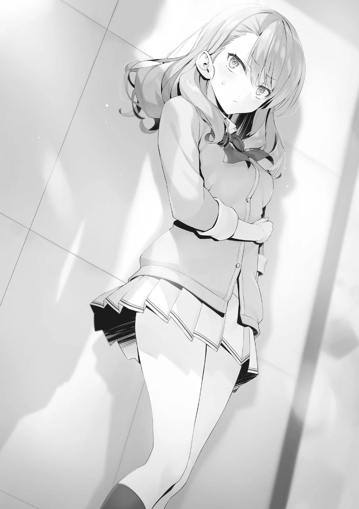
Un abanico de emociones se desbordó en ella.
―¿Qué estás diciendo?
―Que quieras escucharme o no depende de ti, Satou-senpai. Sin embargo, si decides no hacerlo, estoy segura de que te arrepentirás el resto de tu vida. Si no quieres que te vean los demás, tampoco me importa reunirnos en mi dormitorio.
Aparentemente satisfecha tras decirle el número de su dormitorio, la estudiante de primer año se apartó de Satou y se marchó.
Al quedarse sola, Satou se quedó confundida, incapaz de procesar la situación.
Sin embargo, sólo una cosa quedó grabada en su memoria.
"Tendrías una oportunidad".
Esas palabras, que implicaban que tenía una oportunidad de salir con Ayanokouji. Su pecho se apretó, y simultáneamente una emoción que no quería conocer se arrastró fuera de ella.
―Yo─
PARTE 4
Aunque algunos problemas seguían sin resolverse, la clase siguió adelante con sus cuidadosos preparativos para el Festival Deportivo. Hubo alumnos que se opusieron a competir junto a Ryuuen, pero una vez que comenzaron los preparativos, no hubo mayores discusiones y la práctica de las pruebas por equipos también iba viento en popa. Hasta los miembros de la clase que se habían opuesto en un principio decidieron no negar su colaboración para que pudieran ganar y se lanzaron a practicar y entrenar día y noche.
Y así llegó por fin el día anterior al Festival Deportivo. Alrededor de las 21:30, llamé por teléfono a Horikita.
―Sorprendentemente tarde para que llames, ¿no? Estaba a punto de irme a la cama.
A través del auricular, pude escuchar un secador de pelo en funcionamiento.
―Tengo algo importante que decir con respecto al Festival Deportivo.
―¿Tienes algo importante que decir? Entonces será mejor que me tome esto con cierta seriedad ―Dijo, y debió apagar rápidamente el secador de pelo porque el auricular se quedó en silencio―. Ah, antes de eso, hay algo que quiero decir. Sakayanagi-san se ha propuesto participar en el Festival Deportivo de mañana, ¿sabes? ¿No dijiste que podías detenerla?
―Lo que tengo que decir también tiene que ver con eso. Estoy pensando en no participar en el Festival Deportivo de mañana.
―... ¿No participar? Espera un momento, ¿qué quieres decir?
Estaba bastante claro que al otro lado del teléfono, ella estaba desconcertada por mi repentino anuncio. Algo resonó y pude escuchar un pequeño grito.
―¿Estás bien?
―Lo siento, se me cayó el secador de pelo...
Pude escuchar cómo dejaba el teléfono en algún lugar. Supongo que se apresuró a recoger el secador de pelo.
―Entonces, ¿a qué te refieres con lo de no participar? No estás mal ni nada, ¿verdad?
No era descabellado que estuviera confundida, dado que yo sonaba saludable.
―Ah, no, no hay problemas con mi salud. Más bien, es como si me sintiera mejor de lo habitual.
―¿Entonces por qué? Si te quedas fuera, perderemos diez puntos,
¿sabes? Aunque en mis cálculos no contaba con los puntos que ganes, perder esos diez puntos será doloroso.
En la clase sólo había 38 personas -menos que en las demás-, así que entendí por qué tenía ganas de quejarse.
―No voy a decir que esos diez puntos no valgan mucho. Pero esta es mi estrategia, es esencial.
―... ¿Tu estrategia?
Por supuesto, no tenía nada que ver con cosas como que el agente de mi padre viniera y se mezclara con los invitados.
Saqué a relucir algo que había callado hasta ahora.
―Está relacionado con el primer paso de mi ataque a Sakayanagi, que no podemos evitar si queremos llevar a la Clase A a la última posición.
―¿Ataque a Sakayanagi...?
―Te lo dije. Que tengo una forma de evitar que Sakayanagi participe en el Festival Deportivo.
―Pero no entiendo cómo el hecho de que no participes tiene algo que ver con el ataque a Sakayanagi...
Quiso preguntarme mi razonamiento, pero rápidamente se detuvo en seco.
―Ya veo. No podré entender lo que estás planeando, no como estoy ahora. ¿Y supongo que no cambiarás de opinión sobre faltar al Festival Deportivo aunque intente persuadirte de lo contrario?
―Sí. Mañana a primera hora, diré en la escuela que estoy enfermo.
―Si ese es el caso, supongo que no tengo más remedio que confiar en ti en este momento.
Estaba exasperada, pero lo permitió y dio su consentimiento a pesar de todo.
―Para que lo sepas, mi objetivo personal era conseguir el primer puesto al menos tres veces, pero debido a esto tendré que conseguir más de diez puntos yo misma.
―Gracias por tu apoyo.
Corté la llamada y puse mi teléfono a cargar. Aunque estaba a punto de irse a la cama, imagino que Horikita no podrá dormir durante un rato mientras ajusta los
cálculos de las puntuaciones en su cabeza. Lo que hice fue un poco duro para ella, pero debería tratarlo como un gasto necesario.
Ahora, hay una persona más a la que tengo que llamar. Después de que les diga la información necesaria, todo el montaje estará terminado.
EL SEGUNDO FESTIVAL DEPORTIVO
Era por la mañana. Todos los estudiantes estaban reunidos en el recinto, y yo los vigilaba desde la zona de profesores. El presidente del Consejo Estudiantil, Nagumo, estaba pronunciando el discurso de apertura desde un podio que se había instalado. Lo observaban los invitados que fueron convocados desde el exterior. No eran muchos, apenas unas decenas. A pesar de ello, parecía que los estudiantes estaban inquietos ante la presencia de personas ajenas que no estaban acostumbradas a ver. Estaban ansiosos y con ganas de lanzarse al campo de juego para el Festival Deportivo.
El presidente del Consejo Estudiantil nos había informado de antemano sobre los invitados, pero -a pesar de su número- sentimos mucha más presión de la que habíamos imaginado. Eran personas de los círculos políticos o de otro tipo que habían participado en la fundación de esta escuela. No había ningún político que se reconociera por haberlo visto antes en la televisión, pero tampoco estaban muy lejos de ese estatus. Todos iban vestidos de traje y tenían expresiones rígidas mientras observaban; era casi como si estuvieran vigilando a los prisioneros. E incluso con todo eso, el presidente Nagumo continuó hablando con valentía sin temblar ni un poco. Estaba cumpliendo con su papel, que no tenía nada que envidiar a la espléndida imagen que mi hermano había mostrado a los estudiantes. Después de que concluyera sus comentarios y los alumnos lo ovacionaran, la batuta pasó a los profesores, que reiteraron los puntos clave sobre el Festival Deportivo. Y entonces se acercó la hora de empezar.
Después de esto, los alumnos eran libres de hacer lo que quisieran. Siempre que respetaran las normas, podían participar en la competición a la que se habían inscrito, o podían comprobar su oposición, decidir que no era un buen negocio y retirarse del evento en el último momento para participar en alguna otra competición, siempre que tuvieran dos puntos. Y había que tener en cuenta que, por regla general, una vez que un alumno había terminado de participar en todas sus competiciones y no le quedara ninguna otra en la que estuviera
previsto participar, tenía que ir a una zona designada y se le asignaba el deber de animar a su clase. Si los sorprendían charlando o descansando en algún lugar en el que no debían estar, o haciéndose los distraídos, no sólo perdían su derecho a participar, sino que también se les quitaban los puntos.
Además, junto con la clase de Ryuuen, a la que nos unimos en una relación de cooperación, hicimos ajustes para evitar enfrentarnos en las pruebas individuales en la medida de lo posible, y estructuramos los equipos para los enfrentamientos por equipos de forma que ambas clases seleccionaran a los estudiantes que pudieran ganar con facilidad. A continuación, dividimos el número de alumnos al cincuenta por ciento, y nos aseguramos de que ambas clases obtuvieran el mismo número de puntos independientemente de si ganaban o perdían.
Y luego, independientemente de la capacidad de un alumno, decidimos un límite máximo para el número de competiciones por equipos en las que participaba. Se trataba de una medida para garantizar que los atletas más destacados, como Sudou-kun y Yamada Albert-kun, no estuvieran atados durante un largo periodo de tiempo, por lo que acordamos que una persona podría ayudar como máximo en tres encuentros por equipos. En el contrato, restringimos este acuerdo a los eventos en los que se inscribieran antes del día en sí.
Sería ridículo que se pelearan y dijeran "ayuda aquí" o "ayuda allí" el mismo día del Festival Deportivo. Además, tampoco impusimos una regla rígida de que no podían formar equipo con los estudiantes de la clase de Ichinose o de Sakayanagi. Si podían hacer un buen uso de ello en un encuentro, aceptábamos que formaran equipo en función de cada caso. No me preocupaba porque había trabajado en esto con Katsuragi-kun una y otra vez para que no se convirtiera en un problema.
No tenía mucho de qué preocuparme al principio de la competición, ya que muchos participarían en competencias a las que se habían apuntado con antelación. No debía olvidar que tenía que informar a mis compañeros cada hora, y vigilar si surgían problemas y hacer pequeños ajustes cuando fuera necesario.
La primera competición en la que participé fue la carrera de 100 metros.
Empezaba quince minutos después de que se inaugurara el festival, así que no tenía que apresurarme, pero quería llegar pronto y ver a los demás participantes.
―¡Ven, Horikita! ¡¡¡Pelea conmigo!!!
La persona que corrió hacia mí a toda velocidad en el momento en que todos habían sido invitados a hacer lo que quisieran fue Ibuki. No dejaba de mirarme fijamente a pesar de estar jadeando.
―¿Eres estúpida?
―¡¿Eh?! ¿Qué estás diciendo? ¿Tienes miedo de perder contra mí? Lo tienes, ¿verdad?
―En absoluto ―La rechacé al instante―. ¿En qué competición estás justo después de esto? Calma tu respiración antes de responder".
―.. ¡¿Eh?! ¡Es la carrera de 100 metros, por supuesto! No lo olvidaré, lo decidimos juntas.
―Sí, la carrera de 100 metros. Y estamos inscritas en la primera carrera.
Eso es lo que decidimos. Por lo tanto, tendrás que correr pronto después de esto.
Y a pesar de eso, ¿por qué estás corriendo a toda velocidad justo antes de participar? No debería tener que decirte que ya decidimos que nos enfrentaremos, así que lo que debes hacer es ir a la zona designada y esperar.
―Mierda ―murmuró, haciendo evidente que sólo comprendió la situación en la que se encontraba después de que se lo dijera―. De todas formas, ¡pelea conmigo!
―Relájate. No hace falta que me lo digas, lucharé contra ti.
Ibuki-san no iba a caer fácilmente. El año pasado en la carrera de 100 metros, gané sólo por un pequeño margen.
Si fuera posible, me hubiera gustado evitarla como oponente, pero tenía algo que agradecerle.
Si Ibuki-san no me hubiera ayudado, es posible que Kushida-san no hubiera empezado a ir a la escuela. Pero eso no significaba que pudiera darle la victoria.
Estoy segura de que tú tampoco quieres eso, así que ganaré limpiamente. Ibuki-san, descontenta ante la perspectiva de caminar conmigo, tomó distancia y se dirigió al primer evento al mismo tiempo que yo. Una agradable tensión surgió en mi interior.
Lo primero era una prueba con sólo chicas de segundo año. Ciñéndonos a las condiciones que habíamos acordado de antemano, la única persona que podría ser mi rival era Ibuki-san. Pero sería una tontería pensar que eso era buena suerte. Si a mí me tocaba un combate fácil, eso significaba que alguna otra persona iba a enfrentarse a un enemigo duro en algún otro combate.
PARTE 1
La carrera de 100 metros se celebró justo después de la ceremonia de inauguración; fue mi primer encuentro con Ibuki-san. Resultó en una estrecha victoria para mí. Curiosamente, gané con la misma pequeña ventaja que tuve el año pasado. Ibuki-san levantó polvo en señal de frustración después de llegar a la meta, dando la excusa de que había corrido con todas sus fuerzas antes del encuentro.
Mi siguiente combate con ella sería el salto de longitud en la cuarta prueba. Las dos pruebas intermedias se disputarían por separado.
La segunda prueba fue la carrera de obstáculos, en la que quedé en primer lugar.
La tercera prueba fue la de tirar de la cuerda por equipos, en la que quedamos en tercer lugar. Los puntos que he ganado hasta ahora son: 5 puntos de inicio, 10 puntos por conseguir dos primeros puestos en solitario, 3 puntos por conseguir el tercer puesto en la prueba de tirar de la cuerda por equipos y 3
puntos por la participación, lo que da un total de 21 puntos. Esto podría llamarse un excelente comienzo.
Entonces, cuando llegaron las 10 de la mañana, mi segundo combate con Ibuki, el salto de longitud, estaba a punto de empezar.
Realicé el único salto que decidiría ese combate, y para mí, el evento terminó en ese momento. Registré una distancia de 5 metros, 79 centímetros. No está mal.
En una situación en la que el fracaso no era aceptable, podría haber registrado lo que era casi una nueva marca personal.
Ibuki-san, que estaba tres turnos detrás de mí, reguló su respiración mientras miraba los resultados. Quedaban tres personas por saltar. Yo había saltado al primer puesto, así que estaba muy cerca de conseguir muchos puntos en esta prueba.
―¡Suzune! ¡Te encontré!
Mientras vigilaba a la siguiente participante, oí una voz que me llamaba desde atrás. Al mirar hacia atrás, vi a Sudou-kun acercándose a mí con Onodera-san caminando detrás de él. Son la pareja en la que tengo puestas grandes esperanzas como participantes destacados de este Festival Deportivo.
―Por su aspecto, las cosas deben ir bien.
―Desde el comienzo, Sudou-kun ha conseguido tres victorias consecutivas. Es más, lo ha hecho parecer fácil. ¡Debería haber esperado eso!
―Eh, supongo. Pero ¿sabes?, Onodera ha conseguido el primer puesto en los dos eventos en los que ha participado. ¿No?
―Bueno, en mi caso, tuve un poco de suerte.
Onodera, sin parangón en la natación, había demostrado plenamente su talento incluso en tierra.
―o tenía la impresión de que fueras tan rápida cuando entramos en la escuela. ¿Cuándo mejoraste?
Sentí curiosidad, sobre todo porque la he estado observando todo el tiempo en la clase de educación física.
―En realidad no me gusta correr, y no me interesan otras cosas aparte de la natación, así que tal vez no me lo estaba tomando en serio....
―¡Dijiste que en definitiva no harías larga distancia!
―Me cansa mucho; no puedo correr tanto; ¡no hay nada bueno en ello!
Parece que han estado practicando todos los días desde que decidieron formar equipo. Son un combo mucho más natural de lo que había imaginado.
―Bueno, para ser sincero, quería luchar contra Kouenji si podía. Ese tipo también quedó primero en los tres eventos en los que participó, y parece que va a continuar con esa racha.
―Eso no es bueno. Ir contra tus compañeros de clase no es una buena idea. Lo entiendes, ¿verdad?
Tanto Sudou-kun como Kouenji-kun tienen el potencial para obtener el primer lugar. Entiendo su deseo de competir entre ellos, pero deben priorizar la clase en este momento.
―Lo entiendo. Es sólo una broma.
―Está bien. Lo vigilaré para que no pierda de vista. No te preocupes.
―Ya veo. Cuanto más pueda confiar en ti, Onodera-san, menos tendré que preocuparme innecesariamente.
―No creen en mí ni un poco....
Parecía insatisfecho, pero desvió la mirada cuando lo miré a los ojos.. Esto debe ser una prueba de que está reflexionando sobre lo que ha hecho en el pasado.
―Después de esto, tienen previsto participar en sucesivas pruebas de dobles, ¿no es así? Buena suerte.
―Ya lo creo. Vamos a mantener esta racha de victorias.
Palabras prometedoras. Pero entonces, en ese momento, la última participante se dirigió a la línea de salida. Detuve nuestra conversación por un momento y dirigí mi mirada hacia Ibuki-san.
―No podemos seguir molestándola. Vayamos a buscar el próximo evento.
―Sí, hagamos eso. Hasta luego, Horikita-san.
―Sí.
Les eché una mirada de reojo y contemplé a Ibuki, que había empezado a correr.
Entiendo perfectamente que las habilidades de Ibuki-san se acercan a las mías.
En otras palabras, es razonable pensar que ella podría superar mi récord. Estoy dudando entre querer que pierda y querer tener un buen combate contra ella a pleno rendimiento.
Ella debía estar bajo mucha presión, pero sus movimientos eran agudos y refinados. Después de saltar y aterrizar, se inclinó hacia delante y cayó. Aunque tenía la cara sucia, se giró rápidamente hacia el encargado de los récords. 5
metros 81 centímetros. Eran sólo 2 centímetros, pero aun así, el hecho de que me faltaran 2 centímetros había zanjado mi derrota.
―¡Lo hice!
Ibuki-san hizo una pose victoriosa e hizo un gran alboroto como una niña.
Estaba con uno menos y no tenía segundas oportunidades, pero aun así hizo un salto espléndido.
―¿Viste? ¡Yo gané! ¡Tú perdiste!
Puedo entender que se sienta tan feliz que quiera molestarme, pero debo admitir que estaba siendo un poco irritante.
―Como pensaba, podrías haber tenido ventaja porque no tienes tanta resistencia al aire...
Si asumimos que no había diferencia de habilidad entre Ibuki-san y yo, entonces la brecha entre nosotros podría explicarse por eso...
―¿Eh? ¿Resistencia al aire?
―No es nada.
―No seas una mala perdedora. ¡Sólo admite honestamente que perdiste!
―No te dejes llevar. Esto significa que tengo una victoria y una derrota.
Todo esto significa que volvemos a estar empatadas.
Intenté advertirle para que no se dejara llevar, pero mantuvo su sonrisa en todo momento. Debería sentirme mal por haber perdido el primer puesto, pero si ella está tan contenta supongo que está bien...
―¡Gané! ¡Gané! ¡Yo gané!
... No, no lo está.
En todo caso, hizo que mi estrés mental se disparara. Con esto, yo tenía una victoria y una derrota. Quería llegar al tercer enfrentamiento lo antes posible.
Aun así, después de esto, estaba pendiente de unas cuantas pruebas de equipo de alta puntuación, así que mi enfrentamiento con ella tendría que esperar a la competición de barra de equilibrio de la tarde.
PARTE 2
Durante el festival deportivo, había un tablero electrónico en el campo de atletismo, por lo que siempre podíamos estar pendientes de cómo iba cada clase.
La clase de Ryuuen-kun comenzó la competición en la cima de nuestro grado, pero poco después, nuestra clase B se hizo con el primer puesto y mantuvo esa posición. En segundo lugar estaba la clase D, en tercer lugar la clase C y en cuarto lugar la clase A. Era la clasificación ideal para nosotros. Ahora, si tan sólo las cosas se mantuvieran así hasta el final.
Me quedaba algo de tiempo hasta la siguiente competición, así que me dirigí a los asientos de los animadores para matar el tiempo.
―Buen trabajo ahí, Horikita-senpai.
Yagami-kun, de la clase 1-B, se acercó, llamándome al hacerlo.
―Tu clase también parece ir bien. Estás en el segundo lugar por poco.
―Tú también, senpai. ¿No están ustedes en primer lugar? ¡Es difícil imaginar que esta es la misma clase que empezó como clase D el año pasado!
―¿Eso fue un cumplido? ¿O también hubo algo de sarcasmo?
―¡No, en absoluto! Te respeto de verdad, aunque no tanto como al presidente del consejo estudiantil Nagumo.
Seguí su mirada para encontrar al Presidente del Consejo Estudiantil Nagumo corriendo a través de la cinta en la línea de meta.
―Algunos alumnos de tercer año estaban hablando de ello hace un momento. Al parecer, es su quinta victoria consecutiva.
Las chicas vitorearon al Presidente del Consejo Estudiantil mientras los invitados dirigían su atención hacia él. Sin embargo, el presidente Nagumo se mostró inexpresivo mientras abandonaba el lugar. Se deshizo de las chicas que lo llamaban, diciéndoles que quería estar solo mientras se distanciaba.
―Por lo general, al menos las atiende de dientes para afuera, pero no parece nada contento ―dije.
―Tiene casi garantizado que se graduará en la clase A, independientemente de que gane o pierda. Así que, ¿tal vez no pueda entusiasmarse por esto?
Efectivamente. El Presidente del Consejo Estudiantil estaba en una posición sólida como una roca, por lo que para él, las clasificaciones del festival deportivo no tendrían ningún significado. Supongo que la única razón por la que aspira al primer puesto es porque no quiere contenerse ante los invitados y los demás estudiantes.
―Iré a charlar con el presidente del Consejo Estudiantil ―dije.
― ¿En serio? Bueno, tengo mi próxima competición, así que me disculpo.
Después de una conversación casual con Yagami-kun, me acerqué al presidente del Consejo Estudiantil. Junto a él había una chica de tercer año que estaba hablando con él. Kiryuuin-senpai, de la clase 3-B. De vez en cuando, cuando me relacionaba con los estudiantes de tercer año, escuchaba algunas cosas sobre ella. También estaba al tanto de que ella tiene excelentes calificaciones en el OAA.
No podía interrumpirlos, así que simplemente me incliné y esperé.
―¡Felicidades por las 5 victorias seguidas, Nagumo!
―¿Por qué estás aquí?
―No tienes que ser tan frío, ¿sabes? Sólo me preocupa que no parezcas tan feliz a pesar de haber ganado. Parece que hay más de una o dos personas animándote.
―No me hagas reír. Como si ganar una competición de este nivel significara algo para mí.
―Conociéndote, podrías haber reunido a todos los débiles y hacer que compitieran contra ti para conseguir un primer puesto fácil. Aunque viendo la alineación de esa carrera, no parece que hayas hecho eso ―Kiryuuin-senpai señaló el hecho de que no estaba tratando de tomar el camino fácil―. Se dice que Ayanokouji está ausente hoy. ¿Es por eso que pareces tan molesto?
Ayanokouji. Una vez más, su nombre surgió incluso en un lugar como este. El presidente Nagumo no se volteó a ver a Kiryuin-senpai ni siquiera una vez.
Suspiró en silencio.
―Pensé que al menos él saciaría mi sed, pero parece que me equivoqué.
―Pobrecito, ¿qué tal si me encargo de ti?
Su provocadora burla hizo que el presidente Nagumo mirara a Kiryuin-senpai por el rabillo del ojo por primera vez. Sin embargo, después de ver su sonrisa desafiante, se apartó de nuevo.
―Qué mentira más inútil. Aunque quisiera, no puedo imaginarme que me ofrezcas una pelea seria. ¿Me equivoco?
―Fufufu. Me atrapaste, ¿eh? ―Confesó Kiryuuin-senpai, encogiéndose de hombros mientras se acercaba al lado del presidente Nagumo―. Terminaré con mis requisitos mínimos después del próximo evento. Pienso relajarme y ver las competencias después de eso.
―Por supuesto que sí.
―Deberías dejar de darles importancia a estos estudiantes menores. Ya dominaste nuestro grado y estás fijo en la clase A. Además de eso, has logrado mucho como presidente del consejo estudiantil. Eso debería ser suficiente. Te recomiendo que te gradúes tranquilamente.
Casi como si le estuviera aconsejando lo que debía hacer, Kiryuin-senpai lo amonestó.
―¿Me estás dando consejos? ¿A qué se debe este cambio de opinión?
Creo que hemos hablado más veces en los seis meses desde que te involucraste con Ayanokouji que en los dos años anteriores.
―Quizá tengas razón.
―No te preocupes, Kiryuuin. No necesitas decírmelo; no voy a jugar más con Ayanokouji. Eligió no luchar contra mí, y no tiene sentido pensar demasiado en ello.
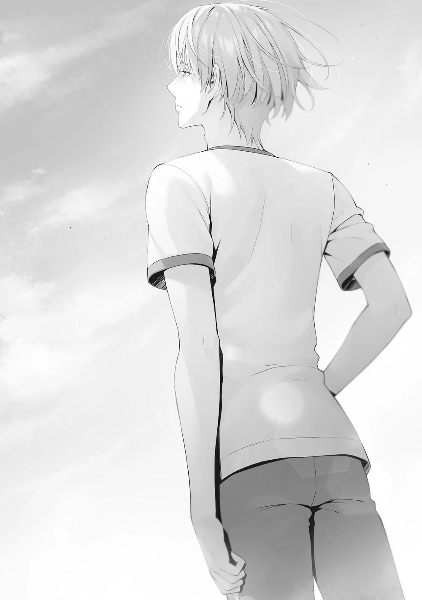
―Si perdiera un enfrentamiento directo contra el Presidente del Consejo Estudiantil, no podría seguir adelante como si nada hubiera pasado. Trata de entender por qué huyó. Tiene un lado muy lindo, ¿no?
¿ Pelea contra el Presidente del Consejo Estudiantil Nagumo? ¿Ayanokoji-kun iba a hacerlo? ¿Por eso me pidió que lo llamara a la sala del consejo estudiantil, para que el presidente Nagumo le dijera eso? También encaja con el mensaje que me pidió que transmitiera.
Kiryuuin-senpai me miró, pero se alejó sin decir nada.
―Te hice esperar, Suzune. ¿Necesitas algo de mí?
―No, iba a preguntar lo mismo que Kiryuuin-senpai. He visto cómo te llevabas el primer puesto, pero no parecías nada contento, así que. Y, bueno...
Ayanokouji-kun prometió luchar contigo en el festival deportivo, por lo que veo.
―Al final, no ocurrió. Él está ausente, y todo terminó con eso.
Ayanokoji-kun dijo que no estaba ausente por enfermedad, sino como una estrategia para evitar que Sakayanagi participara. El presidente Nagumo parecía desconocer ese hecho, y probablemente era mejor no revelarlo negligentemente.
―Acompáñame un rato durante la pausa del almuerzo. Nos encontraremos en...
Me invitó sin preocuparse de si yo quería, así que no tuve más remedio que aceptar.
Un tiempo después, cuando llegó la hora de comer, me encontré mirando las cajas de comida que se proporcionaban en el campo deportivo. Uno podía tomar lo que quisiera de una lista variada, desde comidas ligeras como sándwiches hasta katsudon y otras comidas que aumentaban la resistencia y la energía. Me impresionó y asombró lo bien preparada y completa que estaba esta escuela.
Además, se podía tomar todo lo que se quisiera, con la única condición de terminarlo todo. La mayoría de los alumnos se limitaron a elegir un almuerzo y se marcharon, pero mientras yo observaba unos cuantos alumnos varones se llevaron varios. Entre ellos, había un estudiante con una figura especialmente
grande que sostenía alegremente tres o cuatro almuerzos contra su pecho. Si no recuerdo mal, creo que es un estudiante de primer año... si creía que podía comer todo eso y seguir compitiendo en las pruebas de la tarde, o bien estaba subestimando esta escuela, o bien era realmente un gran jugador.
―Te hice esperar.
Cuando estaba agarrando una de las comidas más ligeras, el presidente Nagumo me llamó.
―¿De qué querías hablar? Tengo una reunión pronto, así que te agradecería que fuéramos breves.
―Sí. Quiero saber sobre Ayanokouji. Parece que no está bien. ¿Se enfermó de repente?
No lo señaló antes, pero parecía que el presidente Nagumo aún dudaba de él.
―Sí. Esta mañana se disculpó y me informó de que se quedaba fuera. Un estudiante que se ausente significa perder diez puntos, pero no puedo obligarlo si está enfermo.
Yo era la única que sabía que se había ausentado por otro motivo. Así que, obviamente, respondí como lo hice.
―Estaría bien si realmente estuviera enfermo.
―¿Qué quieres decir con eso?
Creo que mi actitud no lo delató. ¿Tenía el Presidente del Consejo Estudiantil alguna razón para pensar lo contrario?
―Oíste mi conversación con Kiryuuin, ¿verdad? Tal vez no quería avergonzarse, así que se encerró.
―Eso es cierto. Sería difícil estar seguro de que no es el caso.
Di una respuesta segura para no provocarlo.
―Esto podría causar algunos problemas para su grado.
―¿Qué significa eso?
―No tengo más remedio que hacer que otra persona pague el precio de su fuga, ¿no es así?
No respondió a mi pregunta y se limitó a murmurar para sí mismo. Luego levantó la mano para indicar que se iba y se alejó sin ni siquiera recoger el almuerzo.
―¿Precio...? ¿Causar problemas para mi grado? ¿De qué se trata...? Aun así...
Todo el mundo, en todas partes, parecía tener una gran opinión de él. Una vez más, me impresionó en el festival deportivo de hoy. Cuando dijo que estaría ausente, me preocupé por cómo resultaría. Sin embargo, cuando realmente sucedió, Sakayanagi-san también estuvo ausente.
Sin duda, Ayanokouji-kun hizo algo para retener a Sakayanagi-san. Y el resultado era obvio cuando se miraba la clasificación y las puntuaciones actuales de la Clase A. Debido a que su comandante no pudo venir de repente, no era de extrañar que no pudieran coordinarse tan bien. Me sentí un poco mal por ellos, pero esta es una competición seria. Siempre que haya una oportunidad de ganar, me gustaría aprovecharla.
PARTE 3
Tras el descanso del mediodía, llegó la hora de la segunda parte del Festival Deportivo. Más de la mitad de los estudiantes ya habían completado el número mínimo de cinco competiciones en las que debían participar, y los estudiantes que confiaban en sus habilidades atléticas pasaban a las pruebas seis y siete.
Frente a Horikita e Ichinose, que evaluaban el estado y los participantes de las competiciones minuto a minuto, Matoba y Shimizu, de la clase A, seguían luchando en ausencia de su líder.
―Ahora hay tenis de mesa de dobles en el gimnasio. Acabo de escuchar a Satonaka, y no parece que haya ningún rival fuerte. Quedan dos plazas, y hay muchas posibilidades de que lleguemos a tiempo.
―Tenemos que acumular victorias y asegurarnos de que al menos no acabamos en el fondo de la clasificación.
La ausencia de Sakayanagi arrojó una oscura sombra sobre la clase 2-A, y muchos estudiantes estaban perdiendo la moral. Sin embargo, no pocos de ellos estaban motivados por ello.
Cuando se enteraron de que el tenis de mesa de dobles -que cerraría las inscripciones en 10 minutos- no estaba bien defendido, abandonaron la tanda de penaltis en la que inicialmente habían planeado participar y se pusieron en marcha a toda prisa. Justo en ese momento, Ishizaki, que caminaba desde la dirección a la que se dirigían, tenía la cabeza ligeramente inclinada hacia abajo y no miraba al frente. Shimizu se movió hacia su derecha para evitar a Ishizaki mientras se acercaba, pero Ishizaki también se movió hacia su izquierda casi al mismo tiempo.
Shimizu intentó, pero no consiguió, evitar chocar con él, y sus hombros chocaron entre sí. El impacto de su colisión fue el doble de fuerte de lo esperado, y no pudo haber ocurrido por accidente. Al comprobar que lo habían golpeado a la fuerza en el hombro, Shimizu trató de levantar la voz, pero...
―¡Carajo, eso duele...! ¡Mira por dónde caminas, imbécil!
Incluso antes de que Shimizu pudiera hacer nada, Ishizaki estaba gritando una acusación para que todos la escucharan.
―Tú eres el que no miraba por dónde ibas, ¡podría haberme hecho daño!
Shimizu, de la clase A, e Ishizaki, de la clase D, empezaron a mirarse el uno al otro.
―¡Tú eres el que no estaba mirando al frente!
―¡¿Eh?! ¿Te haces la víctima o qué? ...No chocaste conmigo a propósito,
¿verdad?
―No, ¿qué? Lo mires como lo mires, chocaste conmigo a propósito.
¿Verdad?
Buscando ayuda, Shimizu pidió a Matoba que lo cubriera.
―Sí. No estabas mirando bien por dónde ibas.
―Sí, lo hacía. Los dos están inventando cosas. Realmente sucio, ¿no?
―¿Qué cosa es sucia? No importa cómo lo mires, estás equivocado.
―¡¿Huh?! ¿Yo? Estaban distraídos hablando entre ustedes y no estaban prestando atención.
El juego de la culpa continuó sin que Ishizaki estuviera dispuesto a disculparse, y el tiempo siguió pasando. A pesar de creer que tenían razón, Matoba instó a Shimizu a calmarse, ya que tenían prisa.
―Déjalo. Discutir con un tipo así...
―Sin embargo, no puedo aceptar esto.
―Entiendo cómo te sientes. Yo estoy igual, pero tenemos cosas más importantes que hacer ahora.
―...Es cierto.
Aunque empatizó con Shimizu, le recordó que tenían una competición que ganar.
Shimizu se mostró reacio, pero asintió con la cabeza y miró a Ishizaki antes de alejarse.
―La próxima vez, ten cuidado.
―...Ouch.
―¿Eh?
murmuró Ishizaki, sujetándose de repente el hombro izquierdo mientras intentaban pasarle.
―Estaba tan alterado que no me he dado cuenta, pero... creo que podría haberme hecho daño ahora mismo.
Por un momento, los dos no entendieron lo que estaba diciendo, pero pronto se dieron cuenta. Después de todo, era una trampa barata tendida por Ishizaki. Se miraron y se rieron por la nariz. Sin embargo, las cosas dieron un giro brusco inmediatamente después.
―Esto se está animando mucho. ¿Qué está pasando, Ishizaki?
―¡Ryuuen-san! ¡Por favor, escúchame! ¡Este grupo está tratando de meterse conmigo!
Ryuuen se presentó en el lugar donde casi habían llegado a los golpes.
―Ryuuen... ahora este puto grano en el culo se ha involucrado... Pensar que usarías una táctica tan obvia.
―¿Oh? ¿De qué estás hablando? Sólo vine porque escuché un disturbio,
¿sabes?
―Déjate de bromas. Ya te atraparon haciendo la misma mierda antes.
―¿La misma mierda? Ah, eso. Claro, puede que hayamos hecho algo parecido en el pasado.
―Así que ya lo sabes.
―¿Pero sabes? Aunque tengamos antecedentes, que ahora hagamos algo no tiene nada que ver. Sería un gran problema si mi lindo subordinado fuera herido por algunos ardides de clase A.
―Lindo subordinado, ¿qué? Tú estás detrás de esto, ¿no? ¡Ya basta, voy a llamar a un profesor...!
―Kuku. Tienes razón, si hay problemas, tendremos que confiar en los profesores. ¡Eso sería genial! Nosotros somos las víctimas aquí. Lo revisaremos a fondo, así que estate tranquilo. ¿No es así, Ishizaki?
―¡Correcto! ¡Yo soy la víctima!
―¿Cómo es que eres la víctima? Ni siquiera se toman en serio este festival deportivo... ¿realmente están de acuerdo con que llamemos a un profesor?
Matoba decidió que era inevitable, susurró en el oído de Shimizu, y luego Shimizu salió corriendo a otro lugar. Pero poco después de ir a llamar a un profesor, regresó con una expresión deprimida.
―¿Qué pasa? ¿Dónde está el profesor?
―Uh, eso es...
Shimizu no trajo a un profesor, sino a su compañero de clase, Hashimoto Masayoshi.
―Vi a Shimizu corriendo enfadado, así que le pregunté qué pasaba. Si llama descuidadamente a un profesor, sólo conseguirá que esto se convierta en un problema mayor. Si tienen que decidir quién tiene razón y quién no, es posible que no puedas participar en la competición.
―¡Pero!
―Lo sé. Pero ahora mismo, Ryuuen quiere hacer una escena. No le sigas el juego.
Hashimoto puso su mano en el hombro de Shimizu y le pidió que se retirara.
―De momento, intentaré hablar con él.
―...De acuerdo. Por favor, ocúpate de esto rápidamente.
Matoba no tuvo más remedio que dejar que Hashimoto resolviera la situación, por lo que él también observó desde una corta distancia.
―Mantengamos la compostura, Ryuuen.
Hashimoto se enteró de lo sucedido y se adentró tranquilamente en la conmoción.
―¿Eh? Los tuyos empezaron. Vinieron buscando una pelea y yo los complací. Eso es todo.
―Lo entiendo. Pero si no te retiras, nosotros también tendremos problemas. Nuestros mayores ingresos para este festival deportivo están aquí, así que estás reteniendo nuestra fuerza principal. Me siento mal por decirlo, pero las puntuaciones de Ishizaki son sólo mediocres, ¿verdad?
A cualquier observador le quedaría claro que el bando de Ryuuen estaba buscando pelea. Hashimoto trató de centrarse en ese punto para evitar que Ryuuen presionara con fuerza.
―No lo subestimes tanto. Ishizaki ha estado trabajando duro constantemente, derramando su sangre, sudor y lágrimas para este día. Todo para poder competir con esos grandes ganadores de los que hablabas. ¿Verdad?
―¡Cierto!
Hashimoto había visto a Ishizaki juguetear tantas veces en los días previos al festival deportivo que no pudo evitar quedarse atónito.
―¡Caramba! Realmente vas a aprovechar todas las oportunidades que tengas, ¿eh? ―Hashimoto sabía que no podía competir en una discusión sincera, pero se rascó la cabeza, incapaz de dejarlo pasar―. Pero ahora está claro. Tienes la seria intención de aplastarnos en este festival deportivo. Están haciendo que los elites de primer año nos fastidien, ¿verdad?
Se dio cuenta pronto de que los estudiantes físicamente dotados de primer año seguían a los estudiantes más capaces de la clase 2-A y se unían a las competiciones en las que participaban. Sin embargo, no podían retirarse de la competición después de darse cuenta, por lo que su rendimiento había sido inferior hasta ahora.
―Como la princesa está ausente hoy, nos estamos desesperando por evitar el último lugar. Si nos enemistamos contigo también, no tendremos ninguna posibilidad de ganar. No hagamos un escándalo y llamémoslo un empate.
―¿Un empate?
Ryuuen se había mostrado relativamente amable hasta ese momento, pero de repente cambió por completo y su sonrisa desapareció.
―Me importa una mierda lo que pase en la clase A. Somos la clase D.
Estoy usando todo lo que tengo para salir del fondo. Si crees que puedes interferir en eso y llegar fácilmente a un acuerdo, estás muy equivocado.
Hashimoto había esbozado una fina sonrisa, pero se congeló ante el vigor con el que Ryuuen se abalanzó.
―¿Entonces qué quieres? ¿Que te demos una disculpa puntual?
―Así que ya lo sabes. No es que estemos intentando que pagues. Sólo queremos una disculpa sincera. ¿Verdad, Ishizaki?
―Mhm. El dolor de mi brazo ha desaparecido un poco, así que es suficiente para mí.
Lo que más les dolería sería perder más tiempo. Al confirmar que no exigirían una compensación monetaria ni nada parecido, Hashimoto decidió aceptar la propuesta.
―Intentaré persuadirlos, así que dame un segundo.
―Date prisa. También tenemos otra competición.
Ya habían pasado más de cinco minutos desde que comenzó el altercado.
Podrían llegar a tiempo si se disculpan inmediatamente y van corriendo al gimnasio... aunque sería muy difícil.
―Ya lo escucharon. Sé que es difícil de aceptar, pero creo que deberían asumirlo y disculparse.
―¿Me estás tomando el pelo? Me callé y escuché porque dijiste que harías algo al respecto. ¿Y ahora me dices que haga lo que ellos quieren y que me disculpe discretamente? No hay puta manera.
―¿Entonces te parece bien que no ganemos? Si te mantienes firme aquí, podrás proteger tu orgullo. Pero cuando perdamos por 5 o 10 puntos, ¿te parecerá bien?
―Eso es...
―Lo que importa ahora mismo es que nuestra clase gane, ¿verdad? Es que casualmente pisamos una mierda de perro y terminamos sintiéndonos mal.
Si sólo dieran una disculpa, podrían volver directamente a la competición, así que les instó.
―¡Mierda...! ¿Por qué tengo que...?
Shimizu hizo una gran demostración de su irritación, pero luego se calmó y -a pesar de ser reacio- aceptó. Dio un paso adelante para disculparse con Ishizaki.
―Espera, Shimizu. Matoba, que está allí, es igual de culpable. Dijo que no estaba prestando atención.
―...Matoba.
―De acuerdo, lo entiendo...
Sin más remedio, los dos se colocaron uno al lado del otro e inclinaron la cabeza ante Ishizaki, aunque sólo ligeramente.
―Es nuestra culpa... Es suficiente, ¿no?
Rápidamente levantaron sus cabezas agachadas e intentaron marcharse, pero Ishizaki los detuvo inmediatamente.
―Ryuuen-san... no tiene sentido para mí, ¿qué fue eso?
―Bueno, eso es obvio. Inclinaron un poco la cabeza a regañadientes, pero por dentro te están insultando. No hay manera de que consideres eso una disculpa genuina. No es lo suficientemente sincero.
―¿Estás loco, Ryuuen? No puedo retenerlos más que esto.
Hashimoto juzgó que eso era lo máximo que podía retener a Matoba y Shimizu.
Corrió a buscar a un profesor, dándose cuenta de que no había otra forma de que ellos intervinieran. Un minuto después, regresó con uno.
―¿Qué demonios está pasando?
―La verdad es que...
―Acepto tus disculpas.
declaró Ishizaki, justo antes de que Hashimoto pudiera decirle al profesor lo que había sucedido.
―Lo siento, Ryuuen-san. Me diste todo tipo de consejos, pero tal vez no fui lo suficientemente maduro como para dejarlo pasar cuando me dio un
pequeño golpe en el hombro... así que creo que los perdonaré ya que los dos se disculparon conmigo antes. ¿Está bien?
―¿No está bien? Si vas a aceptarlo, entonces -ya que soy una parte no relacionada- no me corresponde entrometerme.
Después de ver que Ryuuen intentaba terminar la discusión allí, el profesor trató de averiguar cuál era la situación. Hashimoto -que había traído al profesor con él porque pensaba que era un sacrificio necesario para salir de esta situación-también se quedó desconcertado, incapaz de entender lo que estaba pasando.
El maestro llegó a una conclusión basada únicamente en lo que había visto hasta el momento.
―Así que los dos se disculparon con Ishizaki por haber chocado con él. Y
él aceptó. ¿Lo entendí bien?
―¡Eso es...!
Shimizu intentó hablar al ver que el profesor consideraba el problema resuelto, pero Hashimoto lo detuvo.
―Parece que es así. Se resolvió.
―Está bien entonces. En cualquier caso, por favor, intenten evitar cualquier refriega durante el festival deportivo, ¿de acuerdo?
Al ver al dúo a punto de estallar de ira, Hashimoto les hizo un gesto para que abandonaran rápidamente la escena.
―Deprisa y vayan mientras el profesor vigila. ¿Sí?
Los dos se dieron la vuelta y miraron a Ishizaki y Ryuuen un par de veces, pero finalmente se perdieron entre la multitud que se dirigía al gimnasio. Cuando Hashimoto se quedó solo, dejó escapar un profundo suspiro.
―Hacer este tipo de cosas cuando hay gente mirando, cielos... realmente no es alguien de quien quieras hacerte enemigo.
Hashimoto estaba helado hasta los huesos, pero se reía alegremente para sí mismo incluso mientras lo decía.
PARTE 4
3 PM. Queda menos de una hora y por fin llega el final del Festival Deportivo.
Seguimos defendiendo nuestro primer puesto al entrar en la fase final. La diferencia de puntos entre nosotros y la clase D, que se acercaba a nosotros en el segundo puesto, era de apenas 17 puntos. Deberíamos suponer que su inesperada tenacidad se debía a alguna estrategia que Ryuuen-kun estaba elaborando en secreto. Sin embargo, no hubo dificultades entre nosotros, los estudiantes de segundo año, y nuestra alianza siguió funcionando bien. Pero si no seguíamos sumando puntos en esta hora, era perfectamente posible que nos dieran la vuelta....
Me quedé en un rincón del gimnasio, leyendo el programa de las pruebas restantes y sus reglas. Ibuki-san, sin intentar ocultar su irritación, se acercó a mí.
―¡Pelea conmigo!
―Qué cosa más rara dices. Gané, dos encuentros a uno. Ese fue el resultado, ¿no?
―¡Yo no participé!
―No me importa. No llegaste al área designada a tiempo, así que perdiste,
¿sabes?
―¡Uf...! Yo-yo confundí el horario....
Efectivamente. Nuestro tercer encuentro era un evento de viga de equilibrio, para el cual el registro se cerró a la 1:20 PM. Ibuki-san no llegó a tiempo para entrar y no pudo participar en la competición. Por supuesto, no lo estropeé, y aunque perdí el primer puesto, logré el segundo y conseguí tres puntos.
―Estés satisfecha o no, para el resto del mundo eso se llama perder por default.
―¡1 victoria, 1 derrota! ¡Todavía no hemos resuelto esto!
Ella continuó gritando cerca de mi oído, y parecía que no tenía intención de rendirse.
―Ya participé en nueve juegos en total. Supongo que me queda uno, pero....
―¡Eso, eso! ¡Dime en qué vas a participar!
―Si quieres la revancha, tienes que portarte bien.
―¡Grr...!
―¿Quieres pelear? ¿O no?
―¡P... Por... fa... vor... pe... lea... con... migo....!
Me pidió, temblando de rabia hasta el punto de casi escupir llamas por la boca.
―¿Ya está, satisfecha?
―Supongo. Me siento un poco mejor ahora.
La situación cambiaba a cada segundo, y las plazas de participación en los encuentros se iban llenando. ¿Debía hacer lo que tenía planeado al principio, o debía aspirar a algo de mayor puntuación?
―¡Ahora, dime en qué vas a participar!
―¿No puedes callarte un momento?
―¡No es posible!
replicó inmediatamente, extendiendo la palma de la mano en plano antes de curvar los dedos repetidamente en un gesto provocador. No quería ir contra ella, pero ignorarla sólo la haría más ruidosa.
―Estoy considerando participar en una Shuttle Run después de esto, como había planeado antes.
―¿Shuttle Run? ¿Esa cosa en la que vas continuamente de un lado a otro hasta que te caes?
―Sí. Se podría llamar una carrera de resistencia de ida y vuelta.
―Creo que recuerdo haber hecho esto en la secundaria. Muy bien,
¡hagamos el combate decisivo!
Ella asintió con satisfacción antes de prepararse para salir corriendo a inscribirse.
―¿Qué estás haciendo? ―Preguntó.
―¡Si quieres participar, adelante!
―No, ¿no vas a participar tú también? ¿Qué sentido tiene si no estamos en el mismo grupo?
―Sólo lo estoy considerando. Todavía no lo he decidido.
―¿Eh?
―Para ser sincera, ahora mismo estoy pensando en que el voleibol sea mi último objetivo.
―¿Volleyball? ¿No necesitas seis personas para participar en eso?
Parece que acabas de decidirte a participar, pero eso no será posible si empiezas ahora mismo.
Entre los eventos anunciados sólo hoy estaban las competiciones de voleibol masculino y femenino de todos los cursos. Había decidido que nuestra clase debía dejarlo pasar, ya que la necesidad de seis buenos jugadores sería el principal desafío. Sin embargo, parecía que las otras clases también habían tenido pensamientos similares, ya que mi impresión era que los equipos que se habían inscrito hasta el momento eran inesperadamente débiles.
―A falta de diez minutos para apuntarse, hay tres plazas de equipo vacías.
Y por lo que he visto, los equipos participantes no son tan formidables. Valdría la pena renunciar a esta competición si pudiera ganar. El resultado de una competición por equipos para la que se forman equipos de forma improvisada depende en gran medida de la habilidad de los mejores jugadores. Si puedo encontrar sólo una o dos personas más que confíen en sus habilidades, nos veo ganando.
―¿Y qué pasa con lo que te acabo de suplicar?
―Desgraciadamente, voy a tener que pedirte que te rindas.
Ibuki-san se quedó boquiabierta. Pensé que se enfadaría de nuevo, pero se abatió y se rindió. Bueno, honestamente hablando la causa principal aquí fue que ella se confundió con la hora de inicio.
―... Sí, lo que sea. Entonces supongo que este es el final de nuestra lucha....
―¿No vas a participar en la competición de Volleyball?
―Necesitaría cinco personas para luchar contra ti. Ni siquiera podría intentar hacerlo. Sí, paso.
―Sí, no tienes amigos.
―Tú tampoco eres tan diferente.
―Al menos, creo que tengo algunos compañeros que me ayudarán si se los pido.
―Qué te parece. Quería arreglar las cosas, pero lo dejaré para otro momento.
Técnicamente hablando, yo gané... pero da igual.
―¿No participarás en la shuttle run?
―Lo único que me interesaba era ajustar mis cuentas contigo. No tengo interés en esforzarme por ayudar a Ryuuen.
―Eso es bueno para mí. Los puntos que no vas a sumar ayudan a mi clase a estar mucho más cerca de ganar.
No debería provocarla y dejar que se vaya mientras las cosas siguen como están. O eso pensé, pero por alguna razón, ella no se iba.
―¿Hay algo más?
―Si no consigues suficiente gente para jugar al voleibol, participarás en la shuttle run, ¿verdad?
El plazo para el torneo de voleibol era a las 14:20. El plazo para la shuttle run era a las 14:25. Ibuki-san se había dado cuenta de la única cosa que deliberadamente no había mencionado.
―Veo que dije demasiado. Pensar que hasta tú tienes un cerebro que funciona....
―Cállate. De todos modos, voy a quedarme un rato más.
Así que ahora, si en el peor de los casos no podía reunir un equipo para el volleyball, arreglaría las cosas con Ibuki-san en la shuttle run. Bueno, eso no era del todo malo.
Miré a las chicas de mi clase que estaban sentadas en los asientos reservados para animar, en busca de gente capaz. Sin embargo, no había forma de que encontrara a alguien así de forma tan conveniente y rápida, así que el reloj siguió avanzando. Antes de que me diera cuenta, Ibuki-san se sentó a mi lado, bostezando. Me miró como si dijera: "Ya déjalo. Enfrentémonos en la shuttle run".
―¿Oh~? ¡Si son Horikita-senpai e Ibuki-senpai~! Buen trabajo~
Mientras esperaba a la gente que pudiera invitar al evento, la estudiante de primer año Amasawa Ichika nos llamó. Inmediatamente, Ibuki-san se levantó y la fulminó con la mirada.
―Oh, no~ Estás poniendo una cara tan terrorífica... ¿es acaso esa época del mes?
Amasawa le espetó a Ibuki-san, pero la mitad de lo que dijo ni siquiera le llegó.
―Si te queda algún margen, ¿qué tal si lucho contra ti?
―Ahora que lo mencionas, no pudimos hacerlo hoy. Pero supongo que no podemos evitarlo, el hecho de estar en años diferentes no nos ha dado muchas oportunidades de competir. ¿No crees que ya es hora de que dejes la pelea?
Vas a perder, ¿sabes?
―No me subestimes. Agradece que no nos hayamos enfrentado hoy.
―Siempre eres muy animada, ¿verdad? Por cierto, ¿qué hacen ustedes dos aquí? Si no van a participar en una competición, tienen que animar, o será malo.
―Participa en la shuttle run, Amasawa-san. Podemos luchar allí.
―Oh, ¿mis mayores tienen que competir en la shuttle run? En cuanto a mí...
―Finalmente, te encontré.
Una persona apareció donde estábamos hablando, era Kushida-san. Pensé que necesitaba algo de mí, pero estaba mirando a Amasawa-san, no a mí.
―Me preguntaba quién me estaba siguiendo, y así eres tú, Kushida-senpai.
¿Qué pasa? Puedo escucharte, si te parece bien que Horikita-senpai e Ibuki-senpai estén aquí.
―¿Horikita... san? ... Oh, estás aquí.
Parecía estar tan concentrada en Amasawa-san que ni siquiera se había dado cuenta de que estábamos aquí.
―¡Oh, lo siento, Kushida-senpai! Parece que todos mis compañeros están listos, así que tengo que irme.
Mientras hablaba, señaló un lugar en el que se encontraban su compañera de primer año Nanase-san y otras cuatro chicas que no había visto antes.
―Vine al gimnasio para participar en el volleyball. Es la primera vez que juego al volleyball, ya saben~
Por lo visto, resultó que Amasawa-san también iba a participar en el volleyball.
Como era de esperar, incluso los estudiantes de primer año se vieron estimulados por los débiles equipos que participaban.
―Nos vemos entonces. ¡Mucha suerte en la shuttle run~!
Llegó como quiso y habló como quiso antes de salir para reunirse con su grupo.
―Ella, en el volleyball, dice.
Ibuki-san miró a su espalda mientras decía eso.
―Parece que sí.
―Entonces yo también participaré. En todo caso, no podrás conseguir cinco jugadoras.
―¿Eh?
―Te digo que yo también participaré. Formar equipo contigo es una mierda, ¡pero es una oportunidad para vencer a esa mocosa de mierda de primer año!
Si Ibuki-san quiere ayudarme, no tengo nada de qué quejarme respecto a sus habilidades. Pero...
―Tú no puedes decidir eso. Todavía no he dicho nada de incluirte en mi equipo.
―¿Eh? ¿Pero ni siquiera has encontrado una persona para ello?
―En una competición por equipos, la recompensa de puntos se divide en partes iguales. En lugar de llenar las plazas con estudiantes de otras clases, ¿no es obvio que debería intentar llenarlas con estudiantes de mi clase?
Después de todo ese esfuerzo, aunque ganara algunos puntos, la clase de Ibuki-san estaba en segundo lugar. Por lo tanto, la brecha de puntos entre nosotros no se ampliaría ni un poco.
―No me importa. Si puedo ver a Amasawa comer mierda, es suficiente para mí.
―En cualquier caso, depende de los otros miembros del equipo. Como mínimo, debe haber una mayor proporción de estudiantes de mi clase en el equipo.
―Entonces, ¿por qué no me dejas unirme también?
dijo Kushida-san. Al igual que Ibuki-san, sus ojos seguían fijos en la espalda de Amasawa.
―¿Qué quieres, Kushida-san? No me imagino que hayas pasado página y quieras ayudarme.
Fui sincera con ella sobre lo que pensaba, y Kushida-san tampoco se molestó en negarlo. Sin embargo, me resultó curioso el hecho de que sus ojos se dirigieran directamente a Amasawa-san y no a mí.
―Esa de primer año, Amasawa-san. Estoy en deuda con ella.
―¿Estás en deuda con Amasawa-san...?
―¿Tú también?
―No quiero explicar mis razones, pero para pagar esa deuda, me parece bien ayudarte.
―Si es así, te daré la bienvenida con mucho gusto. No tengo nada que reclamar; eres de mi clase y capaz.
Dicen que el enemigo de mi enemigo es mi amigo. Un giro inesperado de los acontecimientos hizo que un aliado viniera a mi lado.
―Pero, sin duda, será una poderosa oponente.
―Por supuesto.
Ibuki-san ya estaba empezando a calentar, preparándose para ello. Amasawa-san la observaba desde lejos y sonreía extrañamente.
Tanto Ibuki como yo hemos experimentado de primera mano lo increíble que es Amasawa-san. Sin embargo, no sabía nada de los otros miembros de su equipo.
Desenterré de mi memoria sus puntuaciones en la OAA. A juzgar sólo por eso, la puntuación de la habilidad física de Nanase-san era relativamente alta, pero el resto no tenía nada destacable. Estoy segura de que recuerdo los nombres de los estudiantes que tenían puntuaciones cercanas a la A, pero incluso si los sobreestimo, estoy segura de que deben ser B e inferiores... Pero, el mayor problema era que todavía nos faltaban tres compañeras de equipo. Analizar a
nuestros oponentes antes de cumplir los requisitos de participación era como contar los pollos antes de que salgan del cascarón.
―¿Tienes alguna condición para las tres restantes? Quieres evitar a cualquiera de la clase de Ryuuen-kun, ¿eso es todo?
Kushida-san me preguntó sobre mis criterios de selección.
―Sí. Naturalmente, creo que debemos tratar de mantener a nuestros compañeros de clase en la medida de lo posible. Sin embargo, doy prioridad al partido en sí, y al talento.
―Entendido. Entonces, espera un poco.
Dijo Kushida-san, y se alejó de nosotras.
―¿Entendido? ¿Qué quiere hacer? Nadie va a ayudar tan fácilmente.
Ibuki tenía curiosidad, así que siguió a Kushida con la mirada. Kushida estaba hablando con Rokkaku, de la clase de Sakayanagi. Después de hablar con ella durante un rato, hizo lo mismo con Fukuyama-san, de la misma clase. Luego se dirigió al gimnasio, donde estaban los estudiantes que animaban los otros eventos.
―Esa chica, creo que es Himeno-san de la clase de Ichinose-san, ¿verdad?
Kushida-san trajo a dos chicas de la clase A y una de la clase C, y todas discutieron durante medio minuto. Luego, nos trajo a esas tres chicas.
―Dicen que van a participar en el volleyball. Himeno-san no es la mejor en eso, pero aceptó hacerlo si las cinco la apoyamos. Puedes dejarnos la competición a nosotros, así que estará bien.
Kushida-san, en su modo de antología, se dirigió a Himeno-san sin dirigirse a mí ni una sola vez. No pude ocultar mi asombro, en particular, por cómo había convencido a las dos chicas de la clase A para que nos ayudaran.
―Nos preocupa que vayamos a perder, y en el peor de los casos, aunque no ganemos, queremos al menos contribuir a nuestra clase.
¿ Verdad? Dijeron las dos mientras asentían la una a la otra. Especialmente porque la clase A se estaba hundiendo hasta el fondo, estaban desesperadas por cualquier logro. Kushida-san entendía ese deseo y pudo discernir instantáneamente a las estudiantes capaces del resto. Aunque no recordara las puntuaciones exactas de sus OAA, como su amiga, era profundamente consciente del talento físico que tenían tanto Fukuyama como Rokkaku.
―Ese es un truco que nunca podrás hacer, Ibuki-san.
―Cállate. No es que hayas podido encontrar a nadie.
―Había unas cinco o seis personas más a las que podía llamar en el gimnasio, pero... Esta es probablemente la mejor alineación que podemos formar ahora mismo, así lo pensé.
En cualquier caso, encontramos seis personas para la prueba de volleyball en la que me preocupaba no poder participar. En términos de proporciones en el equipo, la diferencia entre mi clase y la de Ryuuen era sólo de una entre seis.
Sin embargo, comparado con enfrentarse en la shuttle run tal cual y sacar una diferencia de apenas dos o tres puntos, los diez puntos que obtendríamos con una victoria en este torneo eran mucho más gratificantes. Otra ventaja para mí era que la diferencia de puntos entre nosotros no se reduciría aunque perdiéramos.
Ibuki-san y yo éramos líderes, y Kushida-san, Rokkaku-san y Fukuyama-san eran estudiantes capaces. Himeno-san, a quien habíamos reclutado sólo para cubrir una plaza, era un pequeño inconveniente, pero teníamos mucha potencia de fuego.
PARTE 5
Ganamos nuestro primer partido con facilidad y estábamos viendo al equipo de Amasawa-san. Nanase-san era la que tenía el control del partido. Tanto en ataque como en defensa, sus jugadas estaban por encima de las demás, abrumando tanto a sus propias compañeras como a sus oponentes.
―Esa chica Nanase pasó desapercibida, ¿pero acaso aquella no es tan importante como pensábamos?
―Efectivamente, no tengo la sensación de que sea tan hábil como nos preocupaba que fuera. Pensé que estaba bromeando cuando dijo que no tenía experiencia en el volleyball, pero...
Era posible que se estuviera conteniendo deliberadamente, pero por lo que pude ver, no parecía ser el caso. Era mejor que las que simplemente no sabían jugar ni en ataque ni en defensa, pero no parecía que fuera a suponer una amenaza.
Sin embargo, después de que el partido pasara el ecuador, la situación empezó a cambiar, poco a poco. Incluso Ibuki, que parecía estar algo decepcionada, empezó a mirar con seriedad. Después de ni siquiera 10 minutos de juego, Amasawa-san estaba mejorando visiblemente. Empezaba a mostrar destellos de una adaptabilidad e instintos sin parangón que no podían explicarse como un mero resultado de una gran capacidad física. Justo en ese momento, Nanase-san anotó un punto, poniendo fin al partido.
―Nos enfrentaremos a ellas después de nuestro próximo partido. Ella podría ser todavía mejor para entonces.
―Aunque eso sea cierto, la experiencia de unos pocos partidos no valdrá una mierda. Ganaremos.
Ser demasiado optimista es peligroso, pero de hecho, Nanase-san estaba llevando al equipo, y por eso ganaron con Amasawa-san apenas tocando el balón. Naturalmente, también ganamos nuestro siguiente partido, y -a las 15:40-llegó la hora de la final.
En el Festival Deportivo, muchas reglas eran diferentes a las de las competiciones habituales, y el volleyball no era una excepción. No había rotación de saques, cualquier jugador podía sacar, y ganaba el equipo que llegara primero a 10 puntos o ganara más puntos en 10 minutos. Si el marcador estaba empatado cuando se agotara el tiempo, el equipo que ganara el último punto tendría derecho a sacar, y el partido se prolongaría hasta que cualquiera de los dos equipos anotara un punto más.
―Ha llegado el momento de ver cómo quedas después de perder.
―¿Estarás satisfecha sólo con el resultado de este partido de volleyball?
Ibuki-senpai.
―Primero, te ganaré en el volleyball. Y luego te ganaré en una pelea.
―Jajaja. No me importa esa forma de pensar.
Se negaron a apreciar los esfuerzos de la otra. En su lugar, saltaron chispas entre ellas mientras esperábamos la señal para empezar el partido. Amasawa-san era desconcertante, pero de quien más debíamos cuidarnos era de Nanase-san.
―Al igual que en el último partido, voy a jugar de atacante. Voy a estrellar todas las pelotas en su campo ―declaró Ibuki-san, aún más entusiasmada que antes.
Aunque tenía algunas dificultades para controlar sus remates, su poder destructivo no dejaba nada que criticar, por lo que no tenía ninguna objeción.
Cuando comenzó el partido final, Ibuki-san soltó su saque y se llevó el primer punto. Esperaba que pudiéramos aprovechar ese impulso, pero el remate de Nanase-san les devolvió inmediatamente un punto.
Esperaba que fuera una batalla reñida, pero teníamos una pequeña ventaja, y al final de la apertura, habíamos ampliado ligeramente nuestra ventaja hasta 4
puntos a 2. Tal como habíamos supuesto, Nanase-san estaba igualada conmigo e Ibuki-san, pero aparte de eso, parecíamos estar en una posición marginalmente más favorable.
Todo eso cambió a mitad del partido. Quedaban menos de cinco minutos, y con una carrera de tres pasos hacia arriba, Ibuki-san saltó y clavó el balón.
Amasawa-san apareció por detrás de la red, y el golpe que había marcado tantos puntos hasta entonces fue bloqueado -no, no sólo fue atajado-.
Aprovechando el impulso de la pelota, la clavó directamente en el suelo y en nuestra cancha. El equipo de primer año obtuvo un punto.
―Qué pena~ Ibuki-senpai. Nanase-chan, ¿cómo se llamó esta jugada?
―Un bloqueo material, creo. Aunque no estoy muy familiarizado con ello.
―¡Ahí lo tienes! Ya entendí tus patrones de ataque, senpai, ¡así que no pasarás más!
―¡Carajo! ¡Definitivamente voy a hacer la próxima!
―Cálmate. Sólo te paró una vez por casualidad.
―Cállate. Asegúrate de pasármela también la próxima vez.
Y entonces, con el marcador en 5 puntos a 3, nos tocó sacar. Hubiera sido bueno si pudiéramos terminar con esto....
No podíamos hacer un saque temerario, ya que, según las reglas, si la pelota salía, el equipo contrario ganaba inmediatamente un punto. Y, por supuesto, si apuntábamos a un lugar más seguro, lo devolverían. Sin embargo, decidí mantenerme firme y le pasé la pelota a Ibuki.
―¡Esta vez vas a caer!
Ella revolucionó las cosas con una carrera de dos pasos hacia arriba, se elevó en el aire y lanzó su mejor remate del día. Las dos de primer año que saltaron para el bloqueo no pudieron ni siquiera tocarla, y la pelota estaba cayendo en línea recta hacia el suelo. La que impidió que tocara el suelo fue Amasawa-san.
Como si supiera exactamente a dónde iba a ir, mató el impulso de la pelota con una recepción limpia y ésta flotó por encima de su cancha. Con su cabello dorado ondeando, Nanase-san saltó y lanzó un remate hacia Himeno-san.
Himeno-san se congeló. Kushida-san se abrió paso frente a ella para intentar recibir el balón, pero no pudo controlar su potencia.
El equipo de primer año se fue acercando poco a poco, y en la fase final del partido, estábamos empatadas. Eran seis puntos contra seis. A falta de unos dos minutos, si el partido seguía al ritmo actual, era muy posible que terminara llegando al límite de tiempo.
―¡Yo también me llevo la siguiente!
Ibuki había sido rechazada en dos ocasiones por Amasawa, pero esta vez estaba dispuesta a marcar. Indiqué a nuestras compañeras que le pasaran la pelota, y el juego continuó. Mientras intercambiábamos un tanto, Amasawa se preparó para rematar por primera vez hoy.
―¡Eres la única a la que no dejaré terminar esto!
Ibuki-san saltó para bloquear. Sin embargo, inmediatamente después, vio que Nanase-san se acercaba por detrás de Amasawa-san.
―Qué pena~
Amasawa-san sonrió. Ella era un señuelo. Desde el principio, Nanase-san iba a golpear el remate. Sorprendida, Ibuki-san estiró su mano hacia la pelota, pero no pudo alcanzarla. La pelota se dirigió en un ángulo agudo y... fue salvada justo antes de que cayera al suelo por Kushida-san, que se deslizó para recibirla.
―¡Ibuki-san!
Todo el mundo se giró hacia Ibuki-san, y las estudiantes de primer año se apresuraron a tomar posiciones defensivas. Amasawa-san estaba al acecho del ataque de Ibuki-san, con una expresión serena en su rostro.
―¡¿No me jodas...?!
Incluso en esta difícil situación, ella pretendía forzar el paso del remate, pero no pudo encontrar el camino correcto. Habría sido muy característico de ella ir por ello de todos modos, pero apretó los dientes y cambió a un pase. Por consideración a la determinación de Ibuki, usé el resto de mi fuerza física que había estado conservando hasta ahora. Mi remate se deslizó a través del bloqueo de Amasawa-san y voló directamente hacia Nanase-san, que lo estaba esperando. El cansancio se estaba apoderando de ella, por lo que no pudo golpear bien la pelota, que salió volando fuera de la cancha. Si hubiera estado en perfectas condiciones, podría haberla levantado limpiamente.
En cualquier caso, el marcador era ahora de 7 puntos a 6. Con el tiempo corriendo, habíamos ganado un punto de ventaja. Nos gustara o no, a falta de un minuto, nos tocaba sacar.
―Bien, supongo que ya es hora de que juegue de verdad~ ―dijo Amasawa, como si no hubiera hablado en serio hasta ahora.
Ibuki-san sirvió, pero Nanase-san la alcanzó hábilmente y se defendió. La pelota perdió su impulso y se elevó en el aire, y nos quedamos mirándola mientras volaba hacia un punto.
―¡Apuntaré a...!
La pelota de voleibol descargada rugió en el aire mientras se acercaba a mí a una velocidad vertiginosa.
A pesar de estar totalmente concentrada, tardé en reaccionar. En el momento en que intenté alcanzarla, la distancia entre la pelota y yo se amplió y no pude hacerlo. El sonido de la pelota golpeando violentamente el suelo resonó.
―¡Fuera!
Fue una bendición que fuera demasiado lenta para reaccionar y que no pudiera tocar la pelota. Aterrizó a medio balón de distancia de las líneas blancas que marcaban el interior de la cancha.
―Ahh. Lo siento, Nanase-chan, fallé~ Es muy difícil controlarla perfectamente, ¿eh?
―Sobrevivimos... Pero como se esperaba, su potencial es ridículo...
Aunque admiraba la insondable habilidad y los instintos de Amasawa-san, acabábamos de sobrevivir por los pelos. La diferencia de un punto se había ampliado a dos. Poco después recuperaron un punto, pero el silbato no tardó en sonar y Nanase-san -que acababa de hacer un saque- puso cara de sorpresa.
Amasawa-san estaba a punto de lanzar el balón hacia nuestro lado, pero aterrizó en el suelo sin mover la mano.
―Oh, se acabó el tiempo. Esto empezaba a ponerse interesante.
Como si sólo hubiera estado jugando, Amasawa-san no mostró el más mínimo indicio de frustración mientras alababa los esfuerzos de sus compañeras. Tras una rápida charla con Nanase-san, abandonó la cancha. A pesar de perder, también ganarían puntos por conseguir el segundo puesto en el torneo. Y
nosotras, por supuesto, conseguimos adquirir el máximo número de puntos al quedar primeras.
―No sé, realmente no puedo aceptar esto... como que no se siente que hayamos ganado.
―Nos presionaron bastante al final. Me estremece pensar qué habría pasado si no hubiera un límite de tiempo.
Como ganadoras, deberíamos habernos sentido aliviadas, pero en cambio nos quedamos insatisfechas y deprimidas. No obstante, fue una gran victoria, y fue una batalla debidamente feroz para concluir el Festival Deportivo.
Cuando volví en mí, me di cuenta de que había un número considerable de espectadores en la tribuna, y nos aplaudieron, aunque escasamente.
PARTE 6
Finalmente, el festival deportivo había llegado a su clímax. El gimnasio bullía con una extraña excitación mientras cada prueba por equipos comenzaba su competición final.
―Nuestro partido va a empezar pronto, Sudo-kun. ¿Estás preparado?
Sudou y Onodera, que se habían emparejado para participar en muchas competiciones de dobles en este festival deportivo, estaban procediendo a las finales de su décimo evento, la competición de tenis de dobles mixtos.
―...Sí.
La respuesta de Sudou fue un poco despistada, por lo que Onodera sintió que algo no iba bien, pero continuó de todos modos,
―En cualquier caso, ¿no crees que hacemos una gran pareja? Hasta ahora hemos ganado las cuatro competiciones por parejas en las que hemos participado. Estoy seguro de que todos los de nuestra clase se sorprenderán.
En los dos partidos disputados hasta ahora, en uno se enfrentaron a un equipo de segundo año y en el otro a uno de tercero. Sudou y Onodera superaron
ambos sin esfuerzo, y ahora estaban a punto de ganar cinco pruebas por equipos seguidas. Además, incluyendo sus eventos en solitario, Sudou llevaba ya nueve victorias consecutivas, a punto de cumplir diez. Por otro lado, aunque Onodera no había conseguido el primer puesto en las nueve pruebas, sí había ganado algo en todas ellas.
Sudou le respondió lacónicamente, con los ojos enfocados en otra parte.
―¿Te preocupa ese chico de primer año? Lo has estado observando todo el tiempo.
―¿Eh?
―Housen... ¿creo? Es tan grande que es difícil imaginar que es de primer año, y tiene un aura increíble. Pero, no sé, no parece que sea por eso por lo que lo estás mirando. ¿Pasó algo entre ustedes dos?
―No mucho. No te preocupes por eso.
La pareja de Housen aplastó el partido que estaban disputando, por lo que sus oponentes para la final estaban establecidos. Sudou había estado observando atentamente su partido mientras mantenía la conversación con Onodera.
Onodera lo miraba fijamente. Hasta ahora, Sudou no había pensado en nada al entrar en sus compromisos, pero estaba claro que algo lo había sacudido.
Hoy no era la primera vez que estaban juntos. Habían trabajado conjuntamente durante casi todo el periodo de preparación para el Festival Deportivo. Desde la hora de los entrenamientos hasta la pausa del almuerzo, e incluso cuando iban a la escuela por la mañana, seguían reuniéndose y practicando juntos. Y por eso fue capaz de entender el cambio en la expresión de Sudou.
Aunque era un atleta excepcional, Sudou seguía teniendo sus defectos. Tenía una personalidad áspera, se dejaba llevar con facilidad y tenía un temperamento rabioso. Cuando trabajaban juntos, eso a veces los frenaba.
―Pronto comenzaremos las finales. Por favor, prepárense.
Uno de los miembros del personal los llamó donde estaban sentados.
―¡Muy bien, vamos a cerrar esto rápidamente y a aumentar los resultados!
Fingió estar tranquilo, y Onodera también aclaró su mente después de que él dijera eso. Aunque hubiera algo entre él y Housen, mientras no lo convirtiera en un problema no había problema.
―¡Está bien! ―Dijo Onodera mientras recogía la raqueta, tanto para que Sudou como ella misma pudieran escucharla.
Sus compañeros de clase fueron apareciendo en el gimnasio y rápidamente empezaron a animarlos a ella y a Sudou. Incluso los adultos debían estar muy interesados en la final porque muchos de ellos se pararon a mirar.
―Casi parece un torneo, ¿no?
―Sí. La tensión y la energía se sienten muy bien.
Los dos habían asistido a torneos para sus clubes y se sentían bien estando en el gran escenario, así que no les preocupaba tener miedo de la multitud.
Sin embargo...
―No pensé que la final sería contra, Sudou-paisen.
―Housen.
Housen agarró la red y se dirigió a Sudou. El ambiente cambió.
―Será mejor que no pienses que puedes ganarme sólo porque es tenis.
Voy a destruirte, así que será mejor que estés preparado para ello.
El partido de dobles comenzó. Había un límite de tiempo para el partido. Cuatro puntos suponían un juego, y el partido se decidía al mejor de tres juegos. Como regla especial para que la final fuera corta, el saque no rotaba en cada juego, sino que se entregaba a quien perdiera el punto. Además, los equipos no tenían que rotar el saque entre ellos, por lo que podían elegir a una persona y hacer que sacara una y otra vez.
El partido comenzó con un ataque salvaje de Housen. Sudou y Onodera se vieron sacudidos por los potentes saques que lanzaba el gigantesco cuerpo de Housen, y se dejaron llevar fácilmente por la superficie de la mesa. Por otro lado, los saques de Sudou eran deficientes y sin vida, por lo que eran devueltos
rápidamente dentro de la cancha una y otra vez. En un minuto, estaban acorralados, y el marcador estaba en 3 (40) - 0 (love).
―¡No puede ser... es tan rápido...! ¡Debe haber jugado al tenis antes!
Era razonable que Onodera entrara en pánico, ya que las pelotas de Housen golpeaban la pista a velocidades aterradoras.
―¿Qué pasa, Sudou? ¡Eso no es suficiente para seguir mi ritmo!
―¡Mierda!
Agarró con fuerza la raqueta, y estuvo a punto de levantarla y estrellarla contra el suelo.
―¡Sudou-kun, detente!
―¡...!
―Cada vez que te enojas así, cometes un error. ¡Deberías saberlo!
―¡Pero!
Ahora que ya no podía sacar su frustración, Sudou se llenó repentinamente de estrés. Cuando vio a Sudou al otro lado de la red comportarse así, Housen resopló.
―Yo tampoco estoy devolviendo sus golpes, así que no puedo pretender ser mucho mejor, pero está claro que no estás jugando tan bien como en los partidos anteriores...
Ella señaló que él estaba preocupado por Housen, por lo que sus movimientos se habían vuelto rígidos y lentos.
―No puedo dejar que saques si estás así, Sudou-kun.
Onodera tomó la pelota. Hizo una señal a Sudou para que defendiera, y luego sacó.
Realizó un saque limpio, tan limpio que era difícil de creer que fuera de alguien sin experiencia en el tenis, y mucho menos de una chica. Sin embargo, Housen
la alcanzó rápidamente, y su técnica era tan buena que la raqueta parecía una extensión de su brazo.
Sudou estiró la mano para defenderse, pero le costó todo lo que tenía para golpear con el filo de su raqueta, y así el equipo de primer año se llevó el primer juego sin dejar que sus oponentes anotaran un solo punto.
―No vales ni una mierda, Sudou. Eres un perdedor.
Mientras Housen disfrutaba del partido desde el fondo de su corazón, su compañero, en comparación, no podía ocultar su miedo. Housen estaba llevando él solo el partido, así que realmente era una pelea 2v1.
El segundo partido. Este era un momento de vida o muerte para ellos, y aunque esperaban que Housen continuara con su implacable ataque, se produjo un acontecimiento inesperado.
La bola que Housen lanzó no fue tan contundente como antes, y Onodera se adaptó a ella y la devolvió. Justo cuando pensaban que Housen empezaba a cansarse, levantó el brazo en alto.
La bola que golpeó era tan fuerte y rápida como una bala de cañón. Voló hacia Onodera, que estaba defendiendo la parte delantera, casi como si estuviera apuntando a ella. Pasó rozando su mejilla, y la expresión de Onodera se torció de dolor. Por reflejo, dejó caer su raqueta, tanto por el dolor como por la sorpresa.
―¡Lo hiciste a propósito, bastardo!
―¿Eh? Por supuesto que en el tenis apuntas al cuerpo de tu oponente.
Sigue tirando lejos de ellos y te alcanzarán y te lo devolverán. ¿Ni siquiera sabes eso? ¡Armando un escándalo después de una sola pelota!
―¡Mierda!
Housen se mantuvo firme en que tenía razón. Onodera se apresuró a recoger su raqueta de nuevo.
―No te preocupes. Sólo me rozó... pero aun así, ¿no tiene razón en que el tenis consiste en apuntar cerca de tus oponentes?
―Pregúntale a alguien que realmente juegue al tenis. ¡Esto es el Festival Deportivo!
Sudou se quejó irritado, diciendo que sólo alguien que habitualmente jugara al tenis lo sabría.
El saque volvió a Sudou, y el primero se quedó fuera. La segunda vez la jugó con seguridad, y así Housen la devolvió fácilmente.
No puso mucha energía en ella, y Onodera se cerró antes de devolverla limpiamente. El peloteo continuó durante dos o tres golpes más antes de que Onodera se moviera una vez más hacia el frente y devolviera la pelota.
Justo entonces, Housen se acercó a la pelota y la devolvió.
―¡¿Kya-?!
La bola rápida le recordó a Onodera la de antes, y se quedó paralizada de miedo, incapaz de mover su raqueta. La pelota pasó rozando su costado. Sudou la detuvo y la devolvió al otro lado, pero durante todo el tiempo que duró Housen apuntó insistentemente cerca de Onodera. Era casi como si estuviera jugando en el partido.
Finalmente, el equipo de Sudou estaba a 3 (40), mientras que el de Housen estaba a 2 (30).
Onodera intentaba desesperadamente hacer algo, pero una vez más la pelota le pasó por la cara. Ella reaccionó instintivamente, lo que terminó por torcer su pierna izquierda, y así se desplomó.
―¡Onodera!
Onodera no se levantó, así que Sudou la cubrió tomando la pelota y devolviéndosela a Housen. La pelota apenas golpeó dentro de la cancha, y así el equipo de Sudou se llevó el segundo juego.
Pero Sudou no estaba celebrando. Explotó de ira.
―¡Ya basta! ¿Acaso puedes jugar limpio?
―¿Cuántas veces tengo que decírtelo? Esa estúpida mujer tuya es simplemente mala. ¡Inútil!
―Para, Sudou-kun. Lo estás haciendo de nuevo.
Onodera no se levantaba. Calmó a Sudou, ella seguía tumbada de espaldas.
―¡Ya lo sé! ¿Crees que deberíamos dejar pasar esto?
―No te equivocas. Incluso el árbitro está sospechando. Pero, Sudou-kun, incluso tu comportamiento se está interponiendo en nuestro camino.
Estaba muy claro que desde el momento en que el partido de tenis comenzó, Housen había cambiado su objetivo de ganar el partido a atormentar a Sudou.
Su objetivo era infundirle miedo a Onodera, y hacerla equivocarse de una manera que la lastimara.
―De todos modos, cálmate, Sudou-kun.
Estaba dolida, y a pesar de eso lo reprendió con suavidad pero con fuerza.
Sudou se había acalorado, y eso no fue suficiente para que se controlara, así que siguió mirando a Housen. Sin embargo, después de ver a Onodera frunciendo el ceño de dolor, recordó lo que debía priorizar.
Pronto, Onodera estaba recibiendo ayuda por la herida que había sufrido en el tobillo.
―Es una mierda, fallé en el juego. Pero tendrán que jugar uno más. ¿No es un infierno para ustedes?
Housen bostezó mientras los observaba a ambos, y después fue a hablar con su compañero.
―Ese cabrón... quiere meterse con nosotros todo lo que pueda, perdió a propósito...
Murmuró Sudou mientras miraba preocupado la pierna izquierda de Onodera.
―¿Estarás bien?
―Creo que, de alguna manera. Pero amigo, soy tan inútil. Me asusté mucho con la pelota y traté de esquivarla, y acabé cayendo y torciéndome la pierna.
Se rio burlonamente de sí misma, golpeando la cinta adhesiva de su tobillo.
―No te culpo. Es muy molesto, pero es un atleta de primera clase.
Incluso Sudou tenía miedo de las potentísimas voleas que el excelente físico de Housen lanzaba sin esfuerzo. Cualquiera que no fuera un tenista experimentado o un miembro del club de tenis no sería capaz de quitarse ese miedo tan rápidamente.
―Yo... Desde que llegué a esta escuela, tengo una buena opinión de ti, Sudou-kun.
―¿Eh? ¿De dónde viene eso? Sólo mantén la calma y deja que te curen.
―¡No, está bien! Esta herida valió la pena. Nos dio un poco de tiempo para calmarnos.
―Seguro que te mantienes tranquila... De todas formas, ¿tenías una buena opinión de mí entonces?
―Sí. Pero también eres la persona con la que menos quería tener algo que ver. Eras tan espinoso.
―Uf...
―La gente de tu entorno te atacaba porque no estudiabas y tu comportamiento era terrible, pero yo apoyo a cualquiera que se esfuerce en su club. Sudou-kun, tú tienes el talento, y también te esforzaste, ¿no es así?
―¡Cómo lo sabes!
―Lo sé. Cuando vuelvo a casa después de practicar hasta tarde, paso por el gimnasio. Cada vez que pienso que ya no habrá nadie, y cada vez que te veo a ti, Sudou-kun, que sigues practicando solo después de que todos se hayan ido.
Incluso limpias bien, realmente te lo tomas en serio.
―E-Espera, estabas mirando... eso es, vergonzoso.
―Pero al final, si te quedas así, no puedo pensar realmente en ti, Sudou-kun.
―... ¿Eh?
―Te enojaste por mi culpa. No odio eso, pero todavía tienes un temperamento rápido. Si sigues así, algún día, causarás una pelea peor que la que tuviste antes.
―... Eso es ....
―¡Creo que deberías dejar de enfadarte tanto!
―¡Lo sé...!
―Incluso en los deportes, si pierdes la calma, ¿no pierdes más a menudo?
―Hmm... tienes razón. También la precisión de mis tiros baja...
―Yo también. Cuando pierdo la calma, me desespero por el tiempo, pero eso sólo me hace ser más lenta de lo normal. Tiene muy poco de bueno,
¿verdad?
―Tú también, ¿eh?
―Una vez, después de perder una competición importante, estaba tan frustrada, estaba en los vestuarios y hasta se me olvidó cambiarme y... en mi rabia, me hice daño en la mano. Lo único que hizo fue empeorar mi situación después.
Recordó su pasado, y sintiéndose ligeramente avergonzada, sacó la lengua un poco.
―Ughh. Entonces fue cuando aprendí. Enfadarse no es bueno, y se volverá contra mí más tarde.
―¿Cómo conseguiste controlarlo y no enfadarte?
―Sobre eso. Un mayor me enseñó algo de magia.
―¿Magia?
―Sí. Te la enseñaré, Sudou-kun. Un hechizo que controla tu ira.
―¿Qué hago?
―El pico de tu ira, verás, es en realidad sorprendentemente corto, y no dura más que unos pocos segundos. Así que cuando quieras gritar de rabia, hazlo una vez dentro de tu cabeza, y luego respira profundamente diez veces.
―Entonces quieres decir que... cuando me enfade, debo tomarme diez segundos, y ya está.
―Sí. Estoy segura de que eso será suficiente para marcar la diferencia, así que pruébalo.
―... Entiendo.
No estaba del todo convencido, pero Sudou guardó esta conversación en su memoria.
―Quería emparejarme contigo porque tenía una buena opinión de ti, Sudou-kun. Por favor, no traiciones mis expectativas.
―Onodera...
Terminaron de atenderla, así que Onodera se revisó una vez y se puso de pie de nuevo.
―Estoy bien. Nos guste o no, este juego resolverá el partido. Si fallamos, perdemos. Pero si lo aprovechamos, ganamos.
―¡Sí!
El tercer juego comenzó. Housen apuntó tenazmente a Onodera, a pesar de que sus movimientos se habían vuelto más lentos debido a la lesión en su pierna izquierda. Él se excedió, y por eso terminó perdiendo puntos, pero no demostró indicios de detenerse.
El equipo de Sudou lideraba con 3 (40) a 1 (15).
A pesar de que perdería el partido si se equivocaba, Housen volvió a lanzar una bola rápida a Onodera. Esta vez, no pudo esquivarla y la pelota le dio en el brazo derecho. Onodera se puso en cuclillas de dolor.
―Ni siquiera es así como se afronta un partido... ¡estás jodien...!
Le hervía la sangre, pero recordó el hechizo que Onodera le enseñó hace un tiempo. Miró fijamente a Housen, que seguía siendo provocador, pero dentro de su corazón gritó de rabia.
Diez segundos de ira. Tenía que controlarla durante sólo diez segundos.
1, 2, 3; contó, respirando profundamente para dejar salir sus emociones.
8... 9... 10.... Los furiosos insultos que tenía en mente para Housen retrocedieron en su garganta.
Por supuesto, no toda su irritación había desaparecido, pero logró analizar la situación con calma y objetividad. Las miradas sospechosas de los árbitros.
Onodera mirándolo a él. El partido que tenían que ganar. El tiempo que les quedaba. Si dejaba que Housen los presionara ahora, por supuesto que los retrasaría.
―Onodera, ¿confías en mi fuerza?
―... Por supuesto. Estoy jugando contigo porque confío en ti.
Sudou había controlado su respiración. Lanzó la pelota al aire y sirvió su mejor golpe del día. No había segundas oportunidades para Housen, así que recibió la pelota y la devolvió. Eso dio lugar a un peloteo uno a uno entre Housen y Sudou.
Ninguno de los dos cedió ni un ápice, ya que se devolvieron potentes golpes entre ellos. Mientras continuaban, Housen perdió ante la persistencia de Sudou y volvió con un tiro débil. Sudou no lo dejó pasar y estrelló la pelota en el campo de su rival.
―¡SIIIIII!
Con su raqueta aún en la mano, Sudou rugió tan fuerte que resonó por todo el gimnasio.
―¡Lo hicimos, lo hicimos!
Housen tenía una ventaja abrumadora, pero como siguió subestimando a sus oponentes hasta el final, terminó perdiendo. Irritado por su derrota, lanzó la raqueta contra la cancha con tanta fuerza que se partió en dos.
―¡Ganamos, Onodera! Gracias a ti.
Sudou estaba tan emocionado que corrió hacia Onodera y la abrazó profundamente para compartir su emoción.
―¿¡Q-Q-Q-Qu...!?
Por un momento, Onodera no entendió lo que estaba sucediendo, y entró en pánico.
―¡Duele, duele, Sudou-kun!
Gritó de dolor, sus fuertes brazos la apretaban. Sudou recuperó rápidamente la compostura.
―¡Perdón, perdón!
Además de ganar, Sudou consiguió controlar su enfado, y eso debió alegrarlo porque tenía una amplia sonrisa, la más feliz del día.
―Enhorabuena por haber ganado todas las pruebas, Sudou-kun.
―¡Sí! Gracias Onodera, si no me hubieras ayudado seguro que habría perdido este partido.
―¡Eso no es cierto! En todo caso, sólo te retrasé...
―No voy a decir que tu lesión haya valido la pena, pero cuando te lesionaste y yo me desquicié, por un momento sentí que había perdido. Tú me sacaste de ahí.
―En serio. Entonces, fuimos... buenos compañeros, ¿no?
―Sí. Fue súper fácil trabajar contigo, y realmente podía depender de ti.
¡Esto es realmente increíble, Onodera! Ahh, si Suzune pudiera vernos de alguna manera hacerlo tan bien...
Cada vez había más invitados y estudiantes alrededor, por lo que no pudo divisar rápidamente a Horikita.
―Suzune... ¿eh?
―¿Ah? ¿Dónde? ¿Dónde está?
―Uh, no~, quiero decir, lo siento, confundí a alguien con ella.
―Maldita sea. Ya veo, tal vez esté cerca de los campos...
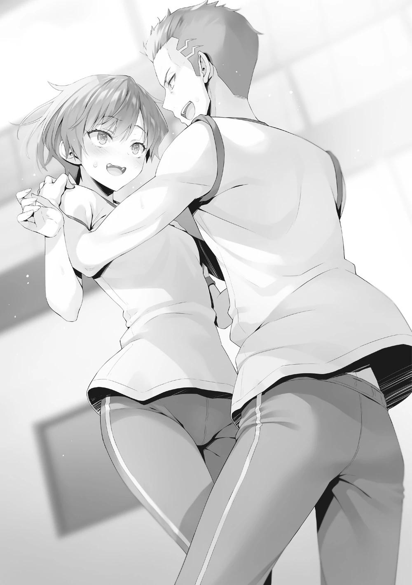
―La próxima vez que volvamos del club, vamos a cenar juntos.
―¿Eh? Oh, claro, eso está bien. De todas formas, ayúdame a encontrar a Suzune. ¿Dónde estás, Suzune?
―Jajaja. No. Por supuesto que no.
―Oi, Sudou. No dejes que esta victoria se te suba a la cabeza, ¿eh? Si hubiera ido en serio, estarías frito. Lo sabes, ¿verdad?
A pesar de que el partido había terminado hace tiempo, Housen no parecía haber terminado con él y se acercó a ellos.
―Ven conmigo, vamos a jugar un poco más detrás del gimnasio.
―Espera, tú...
Onodera se movió para interceptar a Housen mientras intentaba provocar a Sudou, pero éste la detuvo en silencio.
―Este tipo y yo tenemos algo de historia. Supongo que no tengo más remedio que enfrentarme a él.
―¡Pero!
Onodera intentaba protegerlo para que no se metiera en una pelea de nuevo, pero Sudou entendió lo que estaba pensando y sonrió. Entonces se giró para mirar a Housen.
―Lo siento, pero no me interesa aceptar tu reto.
―¿Eh? No se trata de si te interesa o no. A partir de ahora, eres mi saco de arena.
―Dije que no estoy interesado.
Sudou se negó a secundarlo, así que Housen apretó los hombros y le dio un puñetazo en el estómago. El potente puñetazo hizo que Sudou cayera de rodillas.
―¡Sudou-kun!
Sudou detuvo a Onodera con la mano y se levantó tranquilamente. Los profesores se abalanzaron sobre él, pero Sudou les dijo que no había pasado nada y consiguió que se marcharan.
―Maldita sea, eso duele. Ughh. ¡Ya sé que eres bueno peleando! Aquella vez también fue en parte culpa mía, así que no me voy a quejar. Pero. Un poco más y hasta pediré a los profesores que intervengan.
―Patético, ¿verdad? Eras mejor cuando venías a golpear, ¿sabes?
―Tal vez. Onodera, vámonos.
―O-Ok.
―Tonto aburrido. No vuelvas a meterte conmigo.
De alguna manera, Sudou encontró esas palabras reconfortantes. Si él no era el que se ponía violento, la situación no empeoraría.
Aprendió que si no dejaba que la ira lo consumiera, la situación mejoraría drásticamente.
―Tengo que dar las gracias a Housen. Cuando vi cómo está tan sediento de sangre de esa manera, entendí completamente lo patético que he sido. No puedo expresarlo con palabras, pero... cuando probé el método que me enseñaste, algo me golpeó. ¿Por qué he estado tan enojado todo el tiempo?
Algo así. Tal vez un fantasma finalmente me dejó o algo así.
Sudou estaba agradecido por las diez victorias que había conseguido, pero estaba igual de agradecido al Festival Deportivo, y a Onodera.
UN VISITANTE LEJANO
Eran alrededor de las 11 de la mañana. Mi ventana estaba cerrada, pero podía oír débilmente los vítores del exterior. Parece que el Festival Deportivo se está poniendo muy emocionante.
Las cosas no habían sido perfectas, pero a pesar de eso la clase se esforzaba por ganar. Podrán hacerlo bien cuando se enfrenten a las otras clases y a otros años. Eso es lo que determiné, y por eso pude prescindir de este festival deportivo sin dudarlo.
He hecho todos los arreglos que quería, así que dejaré el resto en manos del director Sakayanagi. Que él sea el director no significa necesariamente que pueda confiar ciegamente en él, pero si me traiciona, eso significará en efecto que no hay forma de que yo siga en esta escuela. Así que fue una decisión fácil de tomar.
Lo único que queda es cómo se desarrollará el festival deportivo para los estudiantes de segundo año, y lo que saldrá de él. Uno de los mayores factores para nuestra victoria sería la participación o la falta de participación de Sakayanagi. Me pregunto qué pasó con eso.
Miré la entrada una vez. Hice una estrategia para tratar de contenerla... pero si funcionaba, ya debería haber visto los resultados. Me preocupaban algunas cosas, pero al igual que el estado del festival deportivo, en este momento sólo podía esperar.
Ya es hora de que empiece a hacer el almuerzo-. Justo cuando pensaba eso, sonó el timbre de la puerta.
Pues bien. ¿Será un invitado bienvenido o uno no bienvenido? Hasta que no abra la puerta, no podré saberlo.
―Hola, Ayanokouji-kun.
Me llamaron, mientras yo vigilaba la puerta principal, aún manteniendo la distancia. Supongo que se habían anticipado a mi cautela. Bajé ligeramente la guardia y puse la mano en el pomo de la puerta. Unos cuantos escenarios hipotéticos pasaron por mi mente, pero si entraban en este dormitorio se podía decir que ya había perdido.
Al otro lado de la puerta no había nadie, excepto Sakayanagi, vestida con su ropa informal. Me sonrió.
―Si no te importa, ¿puedo molestarte un momento? Aunque lo único que tengo prohibido es salir de los dormitorios, llamar a la habitación de un chico durante el festival deportivo es un poco cuestionable.
―Entrar en mi habitación será todavía más cuestionable, diría yo.
A pesar de eso, no rechacé a Sakayanagi y le di la bienvenida al interior.
―Mis disculpas por molestarte.
Debido a su discapacidad, Sakayanagi se quitó lentamente los zapatos y entró en la habitación.
―Ahora que lo pienso, es la primera vez que vienes a mi habitación, Sakayanagi.
―No suelo tener la oportunidad de visitarte. ¿Ya almorzaste?
―Estaba a punto de empezar a prepararlo.
―¿Es así? Qué bien. Toma, tengo un regalo para ti.
Me entregó una pequeña bolsa de plástico.
―Compré esto en la tienda esta mañana temprano. Parece ser un producto nuevo, así que pensé que podríamos probarlo juntos.
Miré dentro de la bolsa y vi dos mont blancs pequeños. El café iría bien con los mont blancs, así que debería preparar un poco.
―Siéntete libre de acomodarte en la cama, será mejor que sentarte en el suelo.
―Gracias por tu consideración.
Después de que se sentara en la cama, fui a la cocina y vertí un poco de agua en el grifo en una tetera.
―Supongo que no viniste aquí por capricho.
dije con despreocupación. Sakayanagi se rio, desconcertada.
―Normalmente, uno nunca sabe quién está en el dormitorio. Siendo la líder de la clase A, no podría visitar tu habitación yo sola, Ayanokouji-kun.
Cualquiera se sorprendería por eso y sospecharía. Es por eso que normalmente Sakayanagi nunca haría algo como encontrarse conmigo en el dormitorio. Hasta hoy, en este momento.
―Realmente eres una persona espantosa, Ayanokouji-kun. Esto era parte de tu estrategia, ¿no?
―¿Estrategia? ¿Qué quieres decir?
―Fufu, no necesitas hacerte el tonto, Ayanokouji-kun. Estabas casi seguro-no, déjame corregirme. Estabas seguro de que vendría aquí hoy, ¿no?
Considerando a Sakayanagi, no necesitaba pensar demasiado para saber que esto era una trampa.
―Durante este festival deportivo, nuestra Clase A parte con desventaja debido a nuestro menor número. Y aunque tenemos estudiantes prometedores como Kitou-kun y Hashimoto-kun, en promedio no somos tan buenos como la clase de Horikita-san. En ese caso, lo que tenemos que hacer para ganar es determinar quién participa en qué competición, y ajustar el programa momento a momento mientras observamos dónde participan nuestros rivales durante el evento real.
Encendí la tetera y el agua de su interior empezó a hervir silenciosamente.
Luego cogí un bote de café molido del armario, junto con tazas y un filtro.
―No sabrías cómo se desarrollaría si yo participara.
―Tienes una opinión muy elevada de ti mismo, como siempre.
―Si las otras clases quieren asegurarse de ganar contra la clase A, hacer que no participe es lo más importante.
El Festival Deportivo requiere que la gente trabaje en un horario preciso.
Sakayanagi sería capaz de organizar mentalmente a su gente, distribuirla adecuadamente entre los eventos y dirigirla en consecuencia. Además, dirigir la participación en competiciones en las que intervengan alumnos de otros cursos es casi su especialidad.
―Anoche me enteré de que mi padre te pidió que te tomaras una licencia, Ayanokouji-kun, para poder organizar la seguridad en la residencia y evitar cualquier contacto con los enviados de la Habitación Blanca.
―Es cierto que me ausento del Festival Deportivo porque el director Sakayanagi me lo pidió, pero nunca imaginé que le contaría eso a su hija.
―¡Qué curioso! ¿No le pediste que me lo contara, Ayanokouji-kun?
Oh, ella descubrió mi jugada como si nada.
El director Sakayanagi nunca violaría la separación de sus asuntos profesionales y privados, ni siquiera cuando se tratara de su propia hija. Por eso le pedí al director Sakayanagi que le contara el estado de los asuntos sin que ella supiera que lo había hecho.
Le dije que debía hacérselo saber con antelación, ya que era probable que faltara al Festival Deportivo debido a su salud, y en la improbable eventualidad de que yo tuviera algún problema con la Habitación Blanca, no debía verse envuelta en él. Sakayanagi planeaba participar como líder de la Clase A, pero dudo que el Director estuviera al tanto de ello. Incluso si lo estaba, habría sido más seguro para él decírselo, así que si ella tenía que tomarse el día libre con poca antelación, todavía estaría bien. Dado que es su propia hija, habría sabido que era probable que metiera las narices en el asunto.
Pero hay una cosa que ni siquiera el director Sakayanagi sabe, y es que no es fácil reprimir los instintos y la curiosidad de Sakayanagi. Por eso, si por casualidad me quedaba en casa, no sería extraño que pensara en ello como una
oportunidad para tener una agradable y larga charla conmigo sin que nadie la interrumpiera.
Lo cual resultó ser exactamente lo que ella pensó, y se presentó despreocupadamente en el lugar más peligroso que había, es decir, mi habitación.
―¿Así que decidiste venir justo antes de las 12 sólo para preocuparme?
―Intenté ser un poco mala. Quería que pensaras que tal vez había ignorado tu estrategia y que estaba participando en el Festival Deportivo.
―Ah, ya veo.
―Por cierto, excepto tú y yo, todo el mundo está participando en el Festival Deportivo.
Alguien de la red de información de Sakayanagi debió comprobar quiénes participaban de todas las clases y se lo comunicó por teléfono antes de que comenzara el Festival Deportivo. De esa manera, también, ella no estaba escatimando esfuerzos.
―Quería ser mezquina, pero, para ser sincera, también quería venir un poco antes ―dijo. En ese momento, el agua de la tetera empezó a hervir ruidosamente―. Acabo de bajar al vestíbulo y comprobé cómo estaban las cosas fuera.
Como me trataban como si me hubiera tomado un día por enfermedad, tenía completamente prohibido salir de mi habitación. Por otro lado, mientras que a Sakaynagi no se le permitía salir del dormitorio, no se había tomado un día de enfermedad. Aunque la apercibieran por pasearse fuera de su habitación, el acto en sí no iría en contra del motivo de su baja.
―¿Cómo estaban las cosas en el primer piso?
―Había tres personas allí, aparentemente guardaespaldas. No era sólo en este dormitorio, y estaban apostados por toda la escuela, así que no parecía anormal.
Aunque me estaban protegiendo, la gente de seguridad sólo estaba allí para proteger a los funcionarios del gobierno.
―El jugador más valioso de este Festival Deportivo no es Horikita-san, por su propuesta de cooperar con Ryuuen-kun, ni tampoco Ryuuen por aceptarla.
Fuiste tú, por decir con autoridad que seguro que podías evitar que yo participara. Enhorabuena, con sólo eso has sellado tu victoria.
―Pero aún no sabemos cuáles serán los resultados.
―Aunque una sorpresa tardía es posible, es altamente improbable. Ahora mismo, con la clase de Horikita enfrentándose a ellos de frente, y la clase de Ryuuen tomando todas las medidas posibles, la clase A debe estar a su merced.
Incluso si uno tiene grandes brazos o piernas, sin cabeza no llegará a ninguna parte. Eso es porque he construido la clase de esa manera.
Se podría decir lo mismo de Ryuuen. El problema aquí es que la cabeza de la clase es demasiado fuerte. Cuando el líder resuelve todos los problemas, a la inversa también significa que sin el líder no se resuelve nada.
―Bueno, está bien. Esta vez, he pagado 150 puntos para disfrutar de un tiempo con Ayanokouji-kun.
Es casi como si no se molestara por el daño que la Clase A recibirá.
―Seguro que no tienes inconveniente en perder puntos de clase.
―Los sistemas de esta escuela son, para mí, sólo una extensión del tiempo de juego. Hasta cierto punto, mientras mantenga nuestro estatus en la clase A, no hay problema.
Por fin, saqué los mont blancs de la bolsa y los serví. Coloqué dos tazas junto a ellos y vertí en ellas agua caliente de la tetera a través de un filtro con polvo de café.
―Parece que ya estás acostumbrado a esto.
―No es nada del otro mundo, algo así.
―¿Cada paso de la preparación de algo así es novedoso y divertido para ti, Ayanokouji-kun?
Sakayanagi debe haber sido consciente de que nunca había hecho este tipo de cosas en la Habitación Blanca.
―Todo en esta escuela es así. Sólo quería hacer cosas normales, eso es todo.
En cualquier caso, lo que Sakayanagi había dicho antes seguía clavado en mi mente.
―Así que tienes el deseo de permanecer como clase A. ¿Es sólo tu orgullo?
le pregunté mientras ponía en la mesa leche y paquetes de azúcar.
―Al principio, no me obsesionaba la clase A ni nada parecido. Pero después de enterarme de que estabas en esta escuela, se convirtió en mi objetivo. Porque tal vez, después de llevar a tu clase a la Clase B, lucharías seriamente contra mí.
En pocas palabras, ella me estaba esperando en la cima.
―En el primer trimestre del primer año, la clase D perdió todos sus puntos.
Sin embargo, después de un tiempo, empezaron a ganar puntos, y finalmente subieron a la Clase B. Por supuesto, la razón de eso debe ser que tú estabas actuando en la sombra, Ayanokouji-kun.
Dijo con alegría y soltura, casi como si estuviera presumiendo de sí misma.
Cogió un plato con un mont blanc de la mesa y lo puso sobre su regazo.
―Comamos juntos, Ayanokouji-kun.
Me incitó a sentarme a su lado, y sin motivo para negarme me senté en la cama.
No sé en qué estaba pensando, porque entonces cogió un poco del mont blanc con un tenedor y me lo tendió.
―Toma.
―... ¿Qué quieres decir con `toma'?
―¿No es evidente? Cómetelo
―No, lo entiendo, pero...
―No hay nada de qué preocuparse. Aquí sólo estamos tú y yo, Ayanokouji-kun, y nadie se interpondrá en nuestro camino.
Pensé que tenía algún motivo oculto, pero no parece ser el caso.
Me llevé el tenedor a la boca y un dulce aroma lo llenó. Sorprendentemente, era la primera vez que comía un mont blanc.
―¿Está bueno?"
Para ser totalmente sincero, no me gustó mucho el sabor. Personalmente, un simple pastelito sabría mejor. Eso es lo que pensé. Pero no voy a criticar un regalo.
―Sí.
Simplemente dije que estaba bueno. Sakayanagi sonrió un poco.
―Entonces yo también comeré un poco.
Sin inmutarse por usar el mismo tenedor con el que me dio de comer, tomó una porción para ella y la probó.
―No tiene ninguna posibilidad de competir con los dulces de la cafetería, pero para ser un dulce de una tienda de comestibles, cumple con el requisito.
Satisfecha, asintió con la cabeza y me tendió de nuevo el tenedor.
Como los dos estábamos comiendo lo mismo, terminamos rápidamente el primer mont blanc.
―La próxima vez, traeré un pastel diferente.
―¿Eh?
―Tu respuesta sugiere que no te gustó mucho, Ayanokouji-kun.
―...Hm, pero acabo de decir con normalidad que estaba bueno.
―Estoy muy orgullosa de lo perceptiva que soy, especialmente cuando se trata de ti, Ayanokouji-kun.
Nunca pensé que ella pudiera darse cuenta de que no me gustó mucho.
―En una verdadera batalla de ingenio, nunca mostrarías tal debilidad, pero cuando se trata de algo cotidiano como esto eres sorprendentemente abierto, ¿no?
―Tal vez sea porque no estoy acostumbrado.
―Fufu. Ese tipo de cosas tiene su propio atractivo, ¿sabes?
No pude saber si su respuesta iba en serio o en broma, pero continuó de todos modos.
―Por favor, déjame intentarlo de nuevo alguna vez. Si veo un pastel delicioso, lo traeré conmigo.
―Estaría bien que volviera a darse una situación como ésta, en la que estamos seguros de que nadie puede vernos.
Tanto si era fin de semana como si no, mientras hubiera gente en la residencia, era casi imposible. Estaba la opción de reunirse a última hora de la noche o a primera hora de la mañana, pero como era de esperar, eso tenía sus propios problemas.
―Pero lo que me parece misterioso es tu cambio de opinión, Ayanokouji-kun. No estás ayudando de vez en cuando mientras te mantienes al margen como se suponía. Ahora has empezado a aspirar seriamente a la clase A. ¿Por qué?
―Oh, así que hay cosas que ni siquiera tú sabes.
―No soy un dios. Además, conozco tus antecedentes, Ayanokouji-kun, y en consecuencia hay cosas que no entiendo o no se me ocurren. ¿Puedes decírmelo, por favor?
Como genio movido por su curiosidad por lo desconocido, quería saber la razón.
A Sakayanagi no le interesa clasificarse como clase A o D porque sabe que no se beneficiará de ello después de graduarse. Como hija del director de esta institución, y como alguien con abundante talento en lo académico, la mayoría de las cosas están a su alcance. No tiene necesidad de utilizar el privilegio especial de la clase A para conseguir algo, y por eso no le importa especialmente.
Se podría decir lo mismo de mí, ya que es seguro que volveré a la Habitación Blanca después de graduarme. Nuestras trayectorias pueden ser diferentes, pero sabemos bien que el privilegio especial de la Clase A será en vano para nosotros.
―Puede parecerte un misterio, sí.
―¿Supongo que no estás tratando de amasar una fortuna de puntos privados y de hacer fortuna, como Kouenji-kun?
―Definitivamente está en una posición similar a la de nosotros dos.
Era el tipo de persona que podía conseguir lo que quisiera con la influencia de sus padres y sus propios talentos. A pesar de eso, la razón por la que a veces contribuía a la clase por capricho es por los puntos privados.
―Creo que al menos tienes derecho a escuchar por qué he decidido contribuir a mi clase, Sakayanagi. Después de todo, caíste en una trampa obvia y casi tiraste por la borda la oportunidad de ganar el Festival Deportivo.
Si ella no sacaba nada de esto a pesar de arriesgarse a perder 150 puntos de clase, eso sería el final de esto. Sin embargo, si le daba algo que valiera la pena, dejaba la posibilidad de que volviera a caer en la misma estrategia.
―Si respondes a mi pregunta, entonces vendré aquí si esto sucede de nuevo.
―¡No digas lo mismo que estoy pensando en este momento!
―Fufufu.
―Fundamentalmente, estoy tratando de hacer lo mismo que tú, Sakayanagi. Al derrotarme, quieres responder a la pregunta de qué significa ser
un genio. Yo, a mi manera, estoy pensando en demostrar que la habitación blanca no es de ninguna manera perfecta.
Sakayanagi no se sorprendió. Esto era una prueba de que lo había predicho, aunque no estuviera segura de ello.
―¿Así que eso significa que estás tratando de construir la clase más fuerte con tus propias manos, Ayanokouji-kun?
Cuando asentí con la cabeza, Sakayanagi se puso el dedo índice en el labio.
―No es que no lo haya considerado antes, pero... tengo algunas dudas.
―Por supuesto.
―Como este Festival Deportivo. A pesar de las circunstancias, deberías haber podido participar de igual manera. Tus probabilidades de ganar habrían sido mucho más altas si hubieras estado en el terreno dando órdenes, ¿y no habría hecho tu posición más sólida? Después de todo, no es que te preocupara que yo participara o no.
―Hay un tema en cómo he pasado este Festival Deportivo.
―¡Qué interesante! ¿Cuál es el tema?
―La observación. Decidí que era una buena oportunidad para determinar qué tan bien podrían luchar los otros estudiantes cuando no participo directamente en el Festival Deportivo. Conseguir que te quedes fuera fue sólo un efecto secundario, diría yo.
―El hecho de que haya venido a buscarte porque estabas observando desde afuera no significa que hayas afectado directamente al Festival Deportivo en sí, ¿verdad? ... Oh, ya veo.
Mientras hablaba, Sakayanagi llegó a una conclusión que iba un paso por delante.
―Eso significa...
Justo cuando intentaba poner su conclusión en palabras, me enfrenté a ella y la golpeé ligeramente hacia atrás. No, decir que la hice retroceder era exagerar.
Sujeté ligeramente sus hombros y la empujé hacia atrás, y debido a la falta de fuerza de Sakayanagi, eso fue suficiente para que no pudiera resistirse a caer hacia atrás.
Pomf. El sonido del colchón se mezcló con el crujido de la estructura metálica.
Se jactaba de ser una genio, pero seguro que Sakayanagi nunca se había planteado esto. Antes de que pudiera entender lo que estaba pasando, yo estaba inclinado sobre ella, mirándola.
―¿U-Um?
Sakayanagi solía ser tan tranquila y calmada, pero aún no se había percatado de esta situación.
―Mi plan es la base de cómo estoy viviendo mi vida escolar. Incluyendo que tú me visitaras hoy, que te interesara mi plan, y que tuvieras la posibilidad y el camino para descubrirlo.
Como nunca había tenido a un hombre pendiente de ella de esta manera, Sakayanagi estaba ansiosa y nerviosa, así que hizo un ruido con la garganta.
―Si le contaras a los demás lo que hemos hablado hoy, se interpondría en mi plan.
―¿Crees que... lo filtraría?
―En este momento, no es del todo descartable. Si me amenazaras, diciendo que tengo que enfrentarme a ti si no quiero que se revele, no tendría más remedio que aceptar.
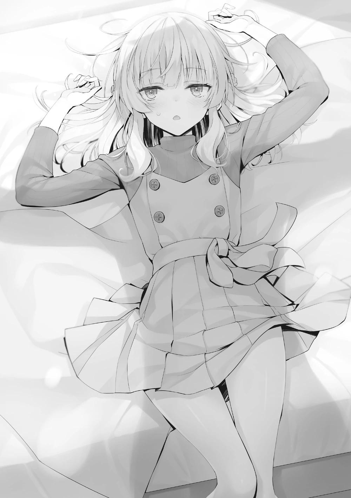
―Ya veo, sí... es cierto. Sin embargo, si alguna vez quisiera coaccionarte a un enfrentamiento... ¿no podría utilizar la existencia de la Habitación Blanca en su lugar?
―No, eso no sería efectivo. Aunque dieras a conocer la existencia de ese instituto, los demás no serían capaces de comprenderlo. Y no supondría ningún riesgo para mí personalmente.
―'Ayanokouji se crió en una institución educativa conocida como la Habitación Blanca'. La mayoría de la gente se quedaría perpleja si escuchara algo así. Ni siquiera podrían encontrar nada si lo buscaran en Internet.
Definitivamente habría cierta confusión porque Sakayanagi lo juraría, pero yo, naturalmente, no haría nada. Pero el plan que estoy tratando de llevar a cabo no está en una etapa en la que pueda dejar que se conozca ampliamente. Es totalmente posible que lo utilices como material de chantaje.
Me acerqué un poco a Sakayanagi, poniéndome en el camino de la luz y creando así una sombra oscura sobre ella.
―Y por casualidad he llegado a saberlo. ... Entonces, ¿qué vas a hacer?
―Un secreto por un secreto, y una amenaza por una amenaza. Ahora mismo, tú y yo somos los únicos que quedamos en este dormitorio. Así que no importa lo que pase, nadie vendrá a ayudarte. Aunque grites a pleno pulmón, en el mejor de los casos apenas se oirá al final del pasillo.
―¿En serio vas a cometer un crimen para proteger ese plan?
―¿Crimen? Tú y yo vamos a acordar compartir un secreto.
Saqué mi teléfono y activé la cámara.
―Si quieres negarte, tu única opción es usar tu propia fuerza para huir.
Para Sakayanagi, la incapacidad de sus piernas... No, aunque sus dos piernas estuvieran bien, no tenía escapatoria. ¿Cómo iba a responder a esta situación desesperada?
―¿Crees que vas a ganar?
―¿Ganar?
―Aunque las cosas salgan como las planeas ahora, ¿te pondrá realmente en ventaja? ... A eso me refiero.
―Lo siento, pero no tienes ninguna posibilidad de ganar.
―La pequeña diferencia en nuestro nivel de experiencia, voy a utilizar una forma de aprendizaje para alcanzarte y luego dejarte atrás. De hecho, puede que incluso descubras que tu forma de aprender ha sido errónea todo el tiempo...
Incluso cuando se vio acorralada, Sakayanagi siguió pensando racionalmente en la medida de lo posible. Debía de estar asustada, pero me impresiona que fuera capaz de controlarlo tanto.
Tiré mi teléfono al final de la cama y moví lentamente la mano hacia Sakayanagi.
La sujeté por los hombros y luego la llevé hacia la nuca. Incluso después de eso, ella sólo miró hacia otro lado.
―Empecemos una lección especial, ¿quieres?
Sakayanagi sonrió con valentía y cerró los ojos en silencio, sin mostrar signos de resistencia.
PARTE 1
―Realmente eres una mala persona, ¿no?
―Puede que sí.
Había pasado alrededor de una hora desde que Sakayanagi llegó a mi habitación.
―Así que ahora hay un secreto entre Ayanokouji-kun y yo que no puedo...
decirle a nadie~
―Esa es una forma prolija de decirlo.
―El primero que causó el mal uso de la palabra no es otro que Ayanokouji-kun, ¿verdad?
―En efecto.
―Por otra parte, es la primera vez que estoy en la cama de un hombre.
―Saliste de ella en diez segundos, ni siquiera importa.
―Eso es tomarse a la ligera las memorias de las chicas, ¿no?
Le muestro a Sakayanagi la pantalla de mi teléfono mientras selecciono y dispongo de los elementos necesarios. Quizá porque lo deslicé demasiado hacia delante en el proceso, se mostró una foto mía y de Kei.
Era una foto de los dos en el centro comercial Keyaki.
―Parece que tu relación con Karuizawa kei va bien.
―Bueno, supongo que sí.
Sakayanagi continuó, mirando la foto de Kei sonriendo alegremente.
―Ayanokouji-kun se sentía atraído por ella, ya fuera por su aspecto, su voz o su personalidad. Eso es lo que pensaría normalmente, pero hay algunas cosas que no cuadran del todo.
Después de eso, Sakayanagi me miró y sus ojos eran agudos, como si estuviera luchando contra mí.
―La he investigado todo lo que he podido. Desde cómo pasa su tiempo después de clases hasta cómo pasa sus días libres. Y ahora Ayanokouji-kun está en una situación en la que se le puede seguir fácilmente.
Mientras todo el tercer año me estuviera vigilando, no podía prestar atención a todas las cosas. Si el agente secreto de Sakayanagi estaba mezclado, sería difícil distinguirlo.
Aunque fuera Hashimoto, que ya había notado el seguimiento antes, o alguien más, no había forma de identificarlos.
―No he podido averiguar la verdad sobre por qué Ayanokouji-kun eligió salir con ella, pero he podido ver algunas cosas. La fuerte confianza y amor que ella siente por él puede describirse como un delirio. ¿La utilizará para llevar a
cabo algún tipo de experimento o está intentando salvarla? Supuse que es algo así.
No recuerdo haberle dado ninguna información innecesaria. No creo que ella conozca los detalles, como Kei o Ryuuen. No sé cómo pudo adivinar tan cerca la verdad en esa situación.
―De eso se trata tu lección especial para mí, ¿no?
―Me estoy cansando de usar la palabra especial, pero tienes razón.
Sakayanagi era capaz de entenderme sin necesidad de palabras, pero de una forma diferente a Kei.
Ding dong.
Una campanada sorda y sin tensión sonó de repente en la habitación.
Eran alrededor de las doce y media, y los estudiantes ya estarían terminando de comer.
No quedaba nadie en el dormitorio, pero de repente apareció un visitante.
Sakayanagi y yo nos miramos y luego a la puerta principal al mismo tiempo. Se suponía que había tres guardaespaldas esperando en el vestíbulo, pero
¿entraron por la fuerza? No, aunque hubieran utilizado sus grandes habilidades para someterlos por la fuerza, el problema no acababa ahí. No se tomarían su tiempo para tocar el timbre, al menos intentarían entrar violentamente.
El timbre sonó una vez más.
Como se suponía que estaba descansando en mi habitación, sería extraño seguir ignorándolo. Es posible, aunque improbable, que sea alguien de la escuela.
―¿Quién es? ―pregunto al visitante, sin moverme de la cama.
―Quédate donde estás y escucha.
Responde el hombre, como si se diera cuenta por su voz de que estoy sentado lejos de la entrada.
Una voz joven. No de un adulto, sino de la misma edad.
―Esa voz me suena.
Pero no me vino a la mente ninguna figura. Suena como un estudiante, y aunque no lo reconocí, la voz me resultaba claramente familiar. Por supuesto, cuando vives en una escuela, oyes muchas voces indefinidas.
Sin embargo, reconozco inmediatamente al dueño de esta voz.
―Me llamaste una vez, ¿verdad?
vuelvo a preguntar, y la figura al otro lado de la puerta se queda un rato en silencio.
―Qué bien, recuerdas mi voz después de oírla una sola vez.
El hecho de que fuera después de que mi padre visitara esta escuela también es impresionante.
―Entonces no dijiste lo que querías.
―Fue bueno que no lo hiciera, pero algo inconveniente sucedió poco después. No he estado en contacto contigo desde entonces, pero si te lo preguntas, no importa quién soy. Porque no soy ni tu amigo ni tu enemigo.
―¿Entonces qué haces aquí?
―Sólo tienes que deshacerte de Tsukishiro y luego de los estudiantes de la Habitación Blanca, y la paz volverá. Vine a aconsejarte porque pensé que podrías haber cometido ese error.
―Vaya. Parece una aventura muy divertida. ¿Estarías dispuesto a dejarme acompañarte?
―Sakayanagi Arisu, ¿eh?
El hombre al otro lado de la puerta no mostró indicios de estar molesto por la inesperada respuesta de Sakayanagi. Más bien, adivinó inmediatamente de quién se trataba con sólo oír su voz. Quizás había reducido la lista de ausentes del día, o quizás conocía a Sakayanagi y reconocía su voz.
―De todos modos, mantente alerta si quieres permanecer en la escuela hasta la graduación.
―Para ser neutral, tienes mucho sobre tus hombros, ¿no?
―Tu presencia está teniendo un impacto negativo. Sólo intento evitar que siga... ―Contestó con la voz entrecortada. Al parecer, no tenía intención de quedarse mucho tiempo, y se podía suponer que se había marchado.
―Esa voz, la he oído en alguna parte...
―¿Tienes idea de quién es la voz?
―No puedo responder a eso tan claramente como Ayanokouji-kun. Pero creo recordar vagamente la presencia que entró por la puerta.
Así que es algo diferente a lo que recordaba de la voz.
―No es un recuerdo reciente, es un recuerdo razonablemente antiguo, de cinco o diez años en todo caso.
―Si estás segura de eso, entonces la posibilidad de un estudiante de la Habitación Blanca parece infinitesimalmente pequeña.
―Sí. Si alguna vez me he encontrado cara a cara con uno cuando era pequeña, entonces sí.
Su reacción al enterarse de la existencia de Sakayanagi fue un tanto afirmativa.
Además de que no le sorprendió, reaccionó como lo haría ante alguien conocido.
Pero si es Amasawa o el otro, no es algo que me importe.
Mientras no me perjudicara en ese momento, no podía hacer nada al respecto.
PARTE 2
El festival deportivo, en el que no estuve presente, terminó de forma casi ideal.
La clase estaba entusiasmada con el resultado final, algo impensable en el último año y medio.
La diferencia entre la clase de Horikita y la clase A se redujo, y la clase de Horikita pudo aumentar sus puntos de clase mediante el examen de la isla deshabitada, el examen especial votación unánime y el festival deportivo, lo que sin duda fue una gran ventaja.
Pocos días después, estábamos a mediados de octubre.
La clasificación del festival deportivo fue la clase de Horikita en primer lugar, la clase de Ryuuen en segundo lugar, la clase de Ichinose en tercer lugar, y la clase de Sakayanagi en cuarto lugar. Por supuesto, esto no se debió a una sola persona, sino a la voluntad y el poder de toda la clase. En la competición individual, la pareja de Sudou y Onodera logró el primer puesto respectivamente.
Koenji también logró el primer puesto en las diez pruebas, pero como todas eran competiciones individuales, acabó en segundo lugar.
Eso parecía ser suficiente para él, y nunca tuvo ningún problema.
A Sudou y Onodera se les dio entonces el derecho a cambiar de clase, pero él eligió los puntos privados sin dudarlo. Aunque Sudou se mostró inestable, se esforzaba por ascender a la clase A.
Kei, que parecía tener una reunión con una amiga, decidió pasarse por el centro comercial Keyaki de camino a casa.
Cuando estaba a punto de regresar solo a casa, se me acercó Horikita.
―Me gustaría hablar contigo un momento, si te parece bien.
―Si no te importa, podemos hablar en el camino de vuelta.
―Me parece bien.
Supongo que no es algo que pueda escuchar mucha gente, ya que se me acercó cuando me iba.
―Aprendí mucho del último examen especial votación unánime.
―Vamos a escuchar, ¿de acuerdo?
El festival deportivo terminó, pero no todos los problemas se habían resuelto, y la clase empezaba a avanzar, aunque todavía quedaba una situación precaria, con la que Horikita seguía luchando y aprendiendo.
―No me equivoqué. Tomé la decisión de mantener a Kushida-san, y pude reconocer una vez más que la decisión fue la correcta.
Ante la exigencia de resultados, Kushida también contribuyó al festival deportivo aumentando sus puntos.
En su vida escolar diaria, ha vuelto a ser una alumna de honor seria, y aunque su contribución social en la OAA bajó a principios de octubre, seguro que a partir de ahora es sólo cuestión de tiempo que la recupere.
Si quieres hacer una comparación implacable, ella ha contribuido mucho más como compañera de clase que Airi. Por supuesto, no todo son ventajas.
―Lo sé, lo sé. Estoy dejando atrás algunas incertidumbres. Especialmente con Hasebe-san, sinceramente todavía no sé qué hacer. Pero si hay otro examen especial como ese, creo que podré sortearlo mejor la próxima vez.
―¿Cuál es tu razonamiento para eso?
―En ese examen, hice una promesa desacertada para conseguir la aprobación unánime. Dije que expulsaría al traidor, y luego lo incumplí. Era un atajo fácil para conseguir la unanimidad, pero no comprendí la magnitud del riesgo. Sabía que Kushida-san era una traidora. Y que tomé esa decisión cuando ni siquiera tuve el valor de expulsarla de la escuela. Eso fue un error.
―Si existía la posibilidad de marcharse, seguro que una promesa desacertada sólo le perjudicaría más adelante.
Fue una decisión dolorosa de tomar, ya que el tiempo se estaba acabando, pero si hubiéramos sido capaces de hacerla unánime en ese momento, dejando abierta la posibilidad de que hubiera una nota a pie de página de Airi o de alguien que no tuviera habilidades similares, sería cierto que las secuelas no habrían sido tan malas como ahora.
¿A qué renunciamos y qué aceptamos?
―Ganamos puntos de clase. Pero también perdí muchas cosas. Ese examen especial me enseñó mucho. Me mostró las dos caras del éxito y del fracaso.
―Aunque es mejor no fracasar.
Horikita cierra los ojos, exhala con un resoplido y vuelve a abrirlos.
―Sólo estoy en segundo de preparatoria. Soy una niña. No pasa nada por cometer errores.
―Has vuelto a abrir la mente.
―No es propio de mí darle vueltas. Voy a... voy a ser yo. Puede que no sea capaz de hacerlo tan bien como los otros líderes. Pero tengo a Hirata-kun, Karuizawa-san, Sudou-kun, Onodera-san, Kushida-san y Koenji-kun. Con el apoyo de estas personas, sigo adelante. La clase A me espera después de eso, eso es lo que decidí pensar.
―Ya veo.
―Por supuesto, tú eres uno de ellos. No sé lo que piensas, y eres poco colaborador en muchos aspectos, pero... eres indispensable para la clase y para mí.
Soy como las ruedas de entrenamiento en una bicicleta.
Al principio es indispensable, pero luego se suelta, se cae y se sacude repetidamente, pero al final aprendes a andar en ella sin dificultad. No hay una sola persona que pueda sostener tu espalda mientras pedaleas en bicicleta.
Aun así, tus compañeros te apoyarán.
Y después de verte crecer un poco más...
Me voy de tu clase.
No voy a decir por qué todavía, pero estoy seguro de que Horikita se enterará tarde o temprano.
Y entonces...
Que llegará un momento en que la clase que creías invencible se encontrará con una realidad en la que no podrás ganar.
Yo te enseñaré eso.
Por mí, y por nadie más.
Estoy bien mientras gane.
Si decido ser el enemigo y derrotar a Horikita, es asunto resuelto.
Pero me voy porque quiero ser derrotado.
Hay un futuro que espero sea incierto.
La respuesta ya está ahí, pero hay una contradicción dentro de mí que deseo ardientemente que la respuesta sea diferente.
LA LLEGADA DEL OTOÑO
―Lo siento, te hice esperar.
Hasebe llamó a Miyake, que esperaba en la entrada, antes de darle un ligero puñetazo en el hombro.
―No, no te estuve esperando tanto tiempo. De todos modos, me aburría.
Hasebe había estado ausente de la escuela durante una semana, pero después de eso venía a la escuela todos los días.
―¿Está bien que dejes el club de Tiro con Arco?
―Sólo continuaba por inercia.
―Pero lo dejaste por mí, ¿no?
―No, eso no es cierto. Lo dejé porque quise. Pero lo más importante es que me alegro de que hayas empezado a venir a la escuela.
Ella sólo participó en el mínimo requerido de cinco eventos en el Festival Deportivo. No obtuvo ningún resultado, pero al menos contribuyó a la clase.
Sin embargo, no se hablaba con nadie más que con Miyake, y estaba ligeramente distanciada incluso de Yukimura, ya que éste había accedido a expulsar a Sakura. Miyake la trató como si fuera algo que no podía hacer, y siguió junto a ella sin decir nada al respecto.
―Al principio, pensé: 'vamos a destruirlo todo'. No sólo a Kiyopon, pensé que sería bueno vengarnos de todos los compañeros que abandonaron a Airi.
Soy una persona terrible, ¿no?
―No... entiendo lo que sientes.
―En ese momento, teníamos que expulsar a alguien. Pero debería haber sido Kushida-san. Eso fue lo que se prometió primero, y eso hubiera sido correcto. ¿No es así?
―...Sí.
―No perdonaré a Kiyopon. No perdonaré a nuestros compañeros. Pero, seguir retrasándolos, seguir atormentándolos para siempre, pensé que estaba mal.
Le confesó a Miyake todos sus pensamientos y la respuesta silenciosa que le había llegado.
―Dime, Miyacchi. ¿Me ayudarás a vengarme, sólo una vez?
Sus ojos no sonreían, y Miyaki no tuvo el valor de preguntarle si hablaba en serio.
―Haruka...
―¡Qué va! ¡Es sólo una broma, es sólo una broma!
Se rio para disimular, y dio un paso adelante.
―Después de todo, me vengaré yo sola.
―Yo-
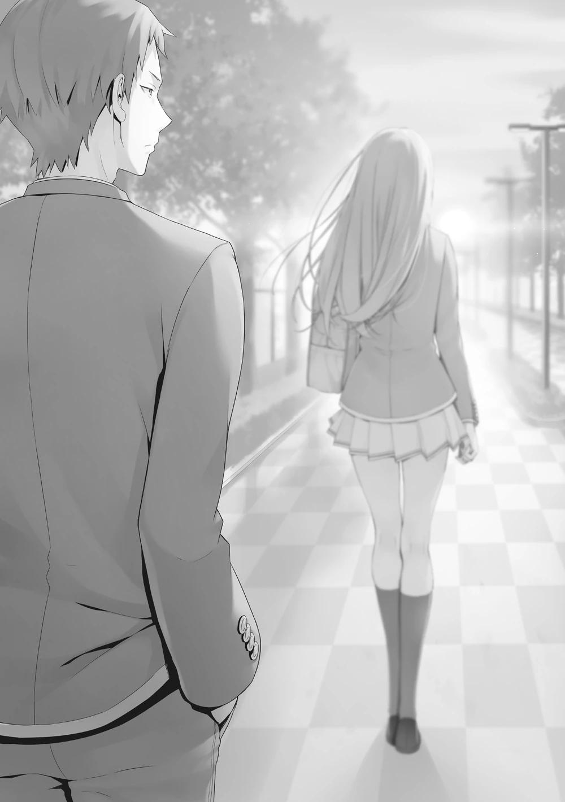
Hasebe extendió la mano y luego la retiró. Entonces se dio la vuelta y se alejó.
Aunque estaba indeciso, Miyake la siguió en silencio.
PALABRAS DEL AUTOR
Tal vez haya pasado tiempo, o tal vez sea la primera vez que nos encontramos.
Aquí Kinugasa Shougo.
Esta vez, tengo algo muy serio que decir.
Todos ustedes ya se enteraron, ¿no es así?
Después de cinco años, se producirá y emitirá una secuela del anime de televisión Classroom of the Elite.
Cuando lo pongo en palabras, parece corto y trivial, pero realmente nos ha costado mucho trabajo y dolor llegar a este anuncio.
Casi dejé de escribir, y no sólo una o dos veces.
'Quizá no vuelva a haber un anime'. Hubo momentos en los que esa preocupación se apoderó de mí.
Sin embargo, la razón por la que pude seguir escribiendo sin cambiar más o menos mi ritmo de publicación fue que, a pesar del final del anime de 2017, muchos de mis lectores siguieron apoyándome.
Si no hubiera mantenido esta gran trayectoria durante tanto tiempo, no creo que la adaptación al anime hubiera podido volver a realizarse.
Como autor, no hay nada que me haga más feliz y agradecido que la luz verde para la secuela.
Estoy muy, muy, muy agradecido.
Y permítanme dejar una cosa muy clara.
Más que nadie, siempre he esperado con impaciencia una adaptación al anime de Classroom of the Elite.
Podría haber un anime, ¿podemos hacerlo? Estas discusiones comenzaron a surgir hace aproximadamente dos años.
Sí. Justo cuando me estaba emocionando con la anticipación, los efectos de una pandemia viral mundial provocaron un retraso.
De todos modos, me alegro de que hayamos podido hacer el anuncio ahora.
Pero seguiré trabajando duro sin cejar ni un momento y continuaré la historia del material de origen de Classroom of the Elite.
Hay muchas historias que contar, pero eso es todo para este epílogo.
Ha pasado mucho tiempo, pero si quieres ver crecer a Ayanokouji y al resto, espero que lo estés esperando. ¿No pueden animar todo hasta el final? ¡¿No pueden?! ¡¿No pueden?!
De todos modos, dejando eso de lado... ¡¡SÍ!! ¡¡LO HICIMOOOOOS!!
¡¡¡¡Y a todos ustedes, muchas gracias por su continuo apoyo!!!!
Fin
HITORIAS CORTAS
SAKAYANAGI ARISU SS - SENTIMIENTOS COMPLICADOS
Estaba pasando un buen rato charlando con Ayanokouji-kun, que se excusó de participar en el festival deportivo y se ausentó.
Siempre debía tener cuidado con lo que hacían los demás hasta ahora, y hoy era la única oportunidad que tenía donde nadie podía interferir.
―Sólo estabas observando, pero incluso me hiciste venir aquí a visitarte.
Tampoco tienes pensado hacer nada durante el festival, ¿verdad? ... Ya veo.
Junté todas las pistas dispersas que me había estado dando durante nuestra conversación.
―En otras palabras...
De repente, me agarró suavemente por los hombros y me empujó hacia atrás.
Normalmente, esta cantidad de fuerza no era nada para la mayoría de la gente, pero como mi cuerpo es bastante débil y no lo esperaba, caí hacia atrás aturdida.
No me dolió, por supuesto. Simplemente me caí hacia atrás desde donde estaba sentada en la cama.
Debería estar viendo su cara ahora mismo, pero mis ojos daban vueltas mientras miraba al techo.
Antes de que lograra comprender la situación, Ayanokouji-kun comenzó a subirse arriba de mí.
Tenía sus manos a ambos lados de mi cabeza dejándome sin ninguna forma de escapar.
―¿Disculpa?
No parecía que hubiera sucumbido a sus deseos primarios.
Debería haber sido imposible, pero de alguna manera la posibilidad estaba dentro de mis cálculos.
Mis pensamientos estaban confusos y eso me impedía llegar a una respuesta.
―Mi vida escolar se basa en este plan que tengo. El hecho de que vinieras aquí hoy, mostraras interés y eventualmente llegaras a la respuesta era una posibilidad.
Como si se burlara de mí, llegó a su conclusión contra esta situación.
―Serás un estorbo si le cuentas esto a alguien más.
―¿Crees que yo... filtraría esto?
No era tan ingenua como para no entender lo molesto que podía ser para él.
Pensé que ambos entendíamos que...
―Las posibilidades no son cero. Podrías intentar chantajearme diciendo que lo expondrás a menos que aceptara tener un encuentro contigo. No tendría otras opciones en ese caso.
―Ya veo, eso es muy cierto... Pero, ¿no podría revelar la verdad sobre la Habitación Blanca en su lugar?
Su verdadero objetivo estaba oculto.
Eso era indudablemente cierto, pero todavía no he conseguido calmarme lo suficiente como para pensar en ello.
Mientras mi mente trabajaba, tratando de calmar mis pensamientos, continué hablando con él.
―¿Empezamos la lección especial?
Vi sus ojos mientras murmuraba esto y finalmente comprendí su objetivo.
No pude evitar reírme, cerrar los ojos y esperar la lección.
Si este era su objetivo, no me importaba.
Con estos complicados sentimientos, reconocí que sería utilizada por él.
Pero, recuerda esto, Ayanokouji-kun.
Si vas a utilizarme, yo voy a utilizarte a ti hasta el final.
CHABASHIRA SAE SS - ALGO QUE NO SE PUEDE PERDONAR
Fue después de que terminara la clase y mi conversación con Horikita estaba a punto de terminar.
―Pronto se nos acabó el tiempo. Deja que te diga una última cosa, aunque parezca que me estoy entrometiendo demasiado. Lo más importante es lo que tú, Horikita, quieras hacer con Kushida. Piénsalo bien.
El objetivo era hacer que Kushida volviera a clase, pero esto no era tan importante ahora.
No estoy segura de la utilidad de mi consejo para ella, pero al menos espero que haya aclarado un poco sus pensamientos.
―Gracias, profesora. Ya decidí qué hacer.
―No te preocupes. Como tu profesora, esto no es nada, seguramente es algo de esperar.
Después de despedirla, volví a la sala de profesores.
Después de bajar las escaleras y entrar en el pasillo donde estaba la sala de profesores, oí a alguien corriendo por detrás.
―No corras en el pasillo...
―Sa~~~~e-chan. Yah-ho!
Pensaba advertir al alumno, pero supe que era un profesor por instinto.
―¿Eres tú, Chie? ¿Cómo vas a dar ejemplo si hasta tú estás corriendo a toda velocidad?
―¡Pe~ro, te vi justo enfrente!
―¡Deja de hacer ese pe~ro! Llámame como siempre.
No había necesidad de correr hacia mí de esta manera,
―Por cierto, estabas tardando mucho hablando con Horikita-san.
―... ¿Así que incluso escuchaste eso?
¿Cuándo demonios empezó ella?
Había un gran riesgo de que esto se filtrara si Chie se enteraba de lo de Kushida".
―Desde que la oí decir gracias.
Cuando casi había terminado, en otras palabras.
No puedo excluir el hecho de que puede haber sido una mentira, pero es cierto que tampoco me di cuenta de ella antes.
―Parece que incluso la estudiante modelo Horikita tiene muchas preocupaciones.
―Es sólo una niña, ¿verdad? Pero eso no es lo que quería decir.
Ella sonrió mientras caminaba a mi lado. Sus ojos no se reían.
―¿Por qué te has acercado a tus alumnos ahora?
―No es nada raro para un profesor titular, ¿verdad?
―Sí lo es. Tú no eres ese tipo de profesora. Nunca lo has sido hasta ahora,
¿verdad?
―Eso puede ser cierto.
―No lo reconoceré. Es imposible que Sae-chan se comporte como una profesora.
―... Lo sé.
Contesté, pero mi respuesta no llegó a ella.
AMASAWA ICHIKA SS - LA VERDAD ES QUE SIEMPRE HE
Al entrar en la habitación de Senpai, comencé a buscar con convicción.
Pero como se esperaba de él. Lo había limpiado todo en ese corto espacio de tiempo.
Pero ese no era mi verdadero objetivo. Mi verdadero objetivo era comprobar si esta habitación estaba intervenida o no. Parecía demasiado limpio para no estar intervenida. Si él ya había hecho un movimiento, pensé pero...
―Deberían ignorarme y disfrutar de su vida escolar. Lo recomiendo encarecidamente.
Para él, que estaba disfrutando plenamente de su libertad, yo, que era estudiante de la Habitación Blanca, sólo era una molestia.
Lo sé.
―Sí, yo también estoy de acuerdo. Creo que yo también debería hacerlo pero...
Por eso quiero exponer a Takuya y dejar que se enfrenten lo antes posible.
Si pudiera observar a Ayanokouji-senpai de cerca, tocarlo, sentirlo, lo entendería.
Pero Senpai no caería. Ninguna emoción en absoluto, ya que sólo estaba esperando que me fuera.
Quería molestarlo así que encaré mi trasero en su dirección.
Desde este ángulo, se podía ver eso y aquello y me pregunté si eso funcionaría.
―¿Atraído por mi ropa interior? Qué pervertido.
Soy yo la que le muestra así que qué demonios estoy diciendo, ¿no?
―Lo siento, me preocupa más lo que puedas estar haciendo si te quito los ojos de encima.
Inteligente, pero poco interesante.
Nuestra conversación volvía naturalmente a tratar sólo temas cotidianos, así que volví a mover el tema.
Me di la vuelta y me acerqué a él, pero ni siquiera levantó una ceja.
―Creo que a estas alturas ya se han alborotado. Me parece que se han equivocado en sus métodos y objetivos. En lugar de volver a la Habitación Blanca, están más centrados en expulsarte.
―Qué tema tan molesto.
No se le notaba en la cara, pero seguramente era cierto que le parecía una molestia.
―Eso puede ser cierto para ti, sí. Llevo un rato pensando en esto, pero
¿qué tal si te los revelo y te dejo hacer lo tuyo?
Pero ni siquiera se molestó en informarse. Su premisa era que yo no era de fiar y que no quería escuchar información innecesaria de mi parte.
No respondió a mi propuesta porque leía a sus oponentes uno, dos pasos por delante.
La verdad es que quiero estar a su lado.
Aunque sea una molestia, sólo estar cerca de la persona a la que admiras.
Pero...
No hay garantía de que mi vida escolar pueda continuar para siempre.
KARUIZAWA KEI SS - DETRÁS DE ESCENA Esta es otra historia corta que ocurrió detrás de escena durante el festival escolar.
Sucedió después de que terminaran las clases, el día en que nuestra clase acordó hacer del maid café nuestro evento principal.
―¿Conoces esta cosa sobre el evento? Realmente quería intentar hacer esta otra cosa, ¿sabes?
―¿Oh? ¿Entonces por qué no lo propusiste?
Según la propuesta de Horikita, la persona que sugiriera un evento aprobado recibiría una recompensa.
Kei quería más Puntos Privados, así que tratar de sugerir algo no sonaba como una mala idea.
―Lo sé, pero...
Aunque ella quería hacer algo, claramente no mostraba ninguna señal de ello.
¿Por qué no responde? ¿Debería esperar un poco?
―¡Es tan embarazoso!
―¿Lo es?
―Ah, uhm, eso no.
Probablemente le recordó algo mientras agitaba sus dos manos, tratando de negarlo.
―Sólo pensé que sería infantil de mi parte.
―¿No crees que los festivales escolares también se prestan a ello?
Todavía no se sabía lo que iban a hacer la mayoría de las otras clases, pero la clase A de 3er año iba a hacer una casa del terror y un laberinto.
En ese sentido, que fuera un poco infantil no suponía ningún problema.
―Puede ser posible dependiendo del presupuesto, ¿sabes?
Un evento ideal en el que se pudieran obtener muchos ingresos gastando lo menos posible es algo a lo que todas las clases están atentas.
―S-sí...
―De todos modos, ¿intenta decirlo?
Ya que estamos solos desde hace bastante tiempo, no había ningún problema, no importaba el tiempo que tomara.
―Kiyotaka, te gustan los libros, ¿verdad?
Eso es repentino, y no parecía tener ninguna relevancia para el tema.
―¿Hmm? Ah, así es.
Desde que era pequeño, nunca he odiado la lectura.
Aunque había veces que no se nos permitía hablar, nos dejaban leer.
―¿Te gustan los cuentos de hadas?
―¿Cuentos de hadas?
Me gustan los libros, pero esto era inesperado.
―He leído algunos.
―Ah, claro que puedes ser convencional a veces, Kiyotaka.
Kei parecía sorprendida.
―¿Qué crees que soy?
―Mira, normalmente nunca sonríes, y que leas cuentos de hadas no encaja con tu imagen, ¿verdad?
―Eso es una grosería.
―¿Cuál has leído?
―¿Está relacionado con lo que querías hacer para el festival?
―Vamos, sólo contesta.
Aunque parece más interesada en cuáles he leído.
―Veamos...
Aunque esto ocurrió cuando era bastante joven, recordé.
―Para empezar, El aula volante.
―...... ¿Qué?
―Luego El Jardín Secreto. El Príncipe Feliz también.
―.........
Kei se quedó en silencio.
―¿Qué pasa?
―Uhm.... ya sabes, ¿eh?
Otro extraño silencio.
―¿Eh?
¿Dije algo raro?
Todos y cada uno de ellos son sin duda clasificados como cuentos de hadas.
―Estábamos hablando de cuentos de hadas, ¿no?
―Efectivamente, cuentos de hadas, pero también están clasificados como literatura infantil ―replanteé.
No tengo ni idea de por qué está tan desconcertada.
―Tu respuesta está tan lejos de lo que esperaba...
―¿Qué esperabas entonces?
―Normalmente, son Los tres cochinitos, Caperucita Roja o algo parecido.
Ya veo. Ciertamente he oído hablar de ellos antes.
―Nunca los he leído.
―¿Ehhhh?
―¿Es algo de lo que sorprenderse?
Se siente como si de alguna manera se estuviera burlando de mí.
―Cómo decirlo, sí, ese es el Kiyotaka que conozco.
―Bueno, volviendo al tema, ¿lo que querías hacer está relacionado con esos cuentos de hadas?
―Pues... quería hacer una obra de teatro.
―¿Una obra de teatro? No suena tan mal.
―¿De verdad?
―Por supuesto, ya ha pasado mucho tiempo de preparación, y puede que ya no sea realista, pero la sugerencia en sí no es una mala idea.
De hecho, si Kei asociaba los festivales escolares con las obras de teatro, entonces valía la pena volver a investigarlo.
―¿Qué cuento de hadas querías hacer?
Eso también me interesaba un poco.
―Ya sabes, después de todo soy una chica, así que tal vez Cenicienta, La Bella y la Bestia.
Esos suenan como cuentos de hadas que les encantarían a las chicas.
―Pero...
Dijo, y luego se quedó en silencio.
―La obra que más quería hacer es, La Bella Durmiente, creo.
―¿La Bella Durmiente...?
Me parece recordar el título, pero lamentablemente no lo he leído.
―¿Cómo es la historia?
―¿Eh? ¿No conoces éste tampoco? Me sorprende que te consideres un amante de los libros.
―Lo siento por eso.
Creo que tal vez mis sentimientos fueron heridos allí.
Escuché su torpe recuento de la historia y creo que lo entendí.
Una hija nacida en la realeza fue maldecida por una bruja y se quedó dormida durante mucho tiempo. Al final, llegó un príncipe y la besó.
Y entonces ella se despertó y vivieron felices para siempre...
Bueno, eso parece ser lo habitual en los cuentos de hadas.
―Cuando era pequeña, no me gustaba mucho el cuento. Pero, de alguna manera se parece a mí. Mi corazón siempre estaba dormido. Pero entonces llegaste tú y me despertaste... ―Dijo, como si estuviera hechizada en alguna fantasía suya―. Yo actuaré de princesa y tú de príncipe. ¿No crees que sería fantástico?
―... Ya veo.
Ahora comprendí al escucharla.
―No sugiero que sea la elección correcta. Con ese casting, nuestros compañeros de clase se burlarán de nosotros, no, más bien tirarán piedras.
―Eso ya lo sé. Por eso no dije nada, ¿sabes?
Me siento terriblemente aliviado de que haya podido controlarse.
La forma en que estaba viendo el festival escolar es buena y todo, pero la parte en la que está haciendo lo que le da la gana es demasiado.
―Parece que mi príncipe es un poco provocador.
Que te digan eso es preocupante.
―¿Si me duermo de nuevo, asegúrate de despertarme con un beso?
―¿Te despertarás sólo con uno?
―¿Hmm? No lo sé. Puede que sean necesarios diez, o incluso cien ―Dijo suplicante.
Después de que respondiera a sus deseos, sonrió débilmente.
―No importa, he terminado con los cuentos de hadas.
―¿Por qué tan repentinamente?
―Estoy más que bien con la realidad.
Se apoyó alegremente en mí y cerró los ojos como si se durmiera.


VISÍTANOS EN NUESTROS
DIFERENTES SITIOS
http://gladheimtranslations.blogspot.mx/
https://twitter.com/GladheimT
https://mastodon.social/@GladheimT
Si alguien desea hacer una donación
https://ko-fi.com/gladheimtranslation
https://www.buymeacoffee.com/gladheimtls
https://patreon.com/GladheimT